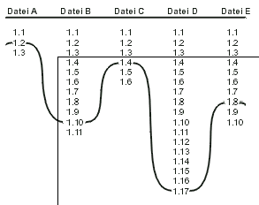
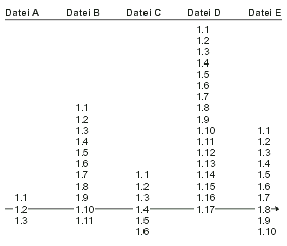
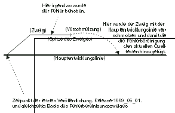
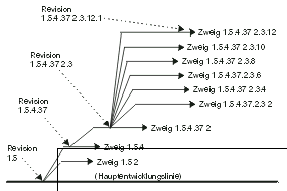

Programmierung¶
CVS¶
Übersicht CVS¶
Beschreibung
Der folgende Text enthält das Kapitel 2 der deutschen Übersetzung des Buches “Open Source Development with CVS”, welche unter der GNU Public License veröffentlicht wurden.
Das SelfLinux-Team
CVS-Grundlagen¶
Dieses Kapitel führt in die grundlegenden Konzepte von CVS ein und gibt dann eine tiefer gehende Erläuterung des täglichen CVS-Einsatzes. Nach dessen Lektüre sind Sie auf dem besten Wege, ein CVS-Guru zu werden.
Wenn Sie noch nie CVS (oder ein anderes Versionsverwaltungssystem) benutzt haben, kann es leicht sein, dass Sie durch einige der zu Grunde liegenden Annahmen ins Stolpern geraten. Was anfänglich anscheinend für die meiste Verwirrung sorgt ist, dass CVS für zwei scheinbar unabhängige Aufgaben eingesetzt wird: Historienverwaltung und Zusammenarbeit. Es zeigt sich jedoch, dass diese beiden Funktionen eng miteinander verbunden sind.
Die Historienverwaltung wurde notwendig, weil Benutzer den momentanen Zustand eines Programmes mit dem an einem bestimmten Zeitpunkt der Vergangenheit vergleichen wollten. Zum Beispiel bringt ein Programmierer während der Implementation einer neuen Funktion das Programm in einen ziemlich fehlerhaften Zustand, in dem das Programm auch wahrscheinlich erst einmal bleiben wird, bis diese neue Funktion endgültig fertig implementiert ist. Unglücklicherweise ist genau dies meist der Zeitpunkt, zu dem ein Benutzer die Beschreibung eines Fehlers in der letzten veröffentlichten Version einschickt. Um diesen Fehler zu finden (der auch in der aktuellen Entwicklerversion enthalten sein kann), muss das Programm zuerst wieder in einen benutzbaren Zustand gebracht werden.
Diesen Zustand wieder herzustellen stellt dann kein Problem dar, wenn die Historie zu den Quelltexten mit CVS verwaltet wird. Ein Entwickler kann einfach sagen: »Gib mir den Quelltext, wie er vor drei Wochen war«, oder vielleicht: »Gib mir den Quelltext so, wie er war, als wir die letzte öffentliche Version freigegeben haben.« Wenn Sie bisher noch nie einen so praktischen Zugriff auf frühere Versionen hatten, werden Sie überrascht sein, wie schnell man davon abhängig werden kann. Persönlich verwende ich eine Revisionskontrolle bei allen meinen Programmierprojekten - dies hat mich schon oft gerettet.
Um zu verstehen, was dies mit der Unterstützung der Zusammenarbeit zu tun hat, müssen wir zunächst die Mechanismen etwas näher betrachten, mit denen CVS es ermöglicht, dass mehrere Personen zusammen an einem Projekt arbeiten. Doch zuvor sehen wir uns einen Mechanismus an, den CVS nicht bietet (oder der zumindest nicht zu empfehlen ist): Dateisperren. Wenn Sie bereits andere Versionsverwaltungssysteme benutzt haben, werden Sie schon mit dem Entwicklungsmodell Sperren-Ändern-Freigeben vertraut sein, bei dem ein Entwickler zuerst den exklusiven Schreibzugriff auf die zu bearbeitende Datei (eine Sperre) bekommen muss, die Veränderungen vornimmt und dann die Sperre wieder freigibt, damit andere Entwickler auf diese Datei zugreifen können. Wenn jemand anderes bereits eine Sperre für diese Datei gesetzt hat, so muss er diese zuerst wieder freigeben, bevor man selbst eine Sperre setzen und Veränderungen anbringen kann. (In manchen Implementationen kann man diese Sperre auch stehlen, was aber für den anderen eine böse Überraschung und außerdem kein guter Stil ist!)
Dieses System ist dann brauchbar, wenn sich die Entwickler kennen, wissen, wer was zu einem bestimmten Zeitpunkt machen möchte, und, im Falle von Zugriffskonflikten, schnell miteinander kommunizieren können. Wenn jedoch die Entwicklergruppe zu groß wird oder zu weiträumig verstreut ist, knabbert die Verwaltung der Sperren an der eigentlichen Arbeitszeit; dies wird zu einem ständigen Problem und entmutigt viele, wirkliche Arbeit zu leisten.
CVS verfolgt einen ausgereifteren Ansatz. Anstatt von den Entwicklern zu verlangen, sich gegenseitig zu koordinieren, erlaubt CVS den Entwicklern gleichzeitiges Arbeiten, übernimmt die Integration der Veränderungen und behält mögliche Konflikte im Auge. Dieser Prozess benutzt das Kopieren-Modifizieren-Zusammenfassen-Modell, das wie folgt funktioniert:
Entwickler A fordert eine Arbeitskopie von CVS an (ein Verzeichnisbaum, der alle Dateien eines Projektes enthält). Dies wird auch Checking out einer Arbeitskopie genannt, wie das Ausleihen eines Buches aus einer Bibliothek.
Entwickler A arbeitet frei an seiner Arbeitskopie. Zum gleichen Zeitpunkt können auch andere Entwickler an ihren eigenen Arbeitskopien fleißig sein. Weil alle Kopien unabhängig voneinander sind, gibt es auch keine Konflikte - es ist so, als hätten alle Entwickler ihre eigene Kopie des gleichen Buches aus der Bibliothek, und sie alle schreiben, unabhängig voneinander, Kommentare an die Ränder oder bestimmte Seiten vollständig neu.
Entwickler A beendet seine Veränderungen und sendet diese mit einer Log-Nachricht, also einem Kommentar, der beschreibt, was der Zweck der Veränderungen war, an den CVS-Server (commit). Dies ist damit vergleichbar, die Bibliothek darüber zu informieren, welche Veränderungen gemacht wurden und warum. Die Bibliothek lässt diese wiederum in eine Hauptkopie einfließen, wo sie damit für alle Zeit aufgezeichnet werden.
In der Zwischenzeit können andere Entwickler CVS dazu veranlassen, die Bibliothek abzufragen, um herauszufinden, ob die Hauptkopie in jüngster Zeit verändert wurde. Ist dem so, aktualisiert CVS automatisch deren Arbeitskopie. (Dieser Teil grenzt an Magie und ist einfach wunderbar, ich hoffe, Sie wissen dies zu schätzen. Stellen Sie sich vor, wie die Welt wäre, wenn echte Bücher so funktionieren würden!)
Soweit es CVS betrifft, sind alle Entwickler eines Projektes gleich. Zu entscheiden, wann ein Commit oder eine Aktualisierung durchgeführt wird, ist eine Sache der persönlichen Einschätzung oder der Projektregeln. Eine übliche Strategie bei Programmierprojekten ist es, immer eine Aktualisierung zu machen, bevor die Arbeit an größeren Veränderungen begonnen wird, und einen Commit erst dann zu machen, wenn die Veränderungen vollständig und getestet sind, sodass die Hauptkopie immer in einem funktionsfähigen Zustand ist.
Vielleicht fragen Sie sich, was passiert, wenn die Entwickler A und B in ihren Arbeitskopien unterschiedliche Veränderungen an dem gleichen Stück (Quell-)Text vornehmen und beide ihre Veränderungen mittels Commit abschicken? Dies wird Konflikt genannt und von CVS entdeckt, sobald Entwickler B, versucht seine Veränderungen abzuschicken. Anstatt Entwickler B zu erlauben fortzufahren, gibt CVS bekannt, dass es einen Konflikt gefunden hat, und setzt Konfliktmarkierungen (leicht zu erkennende Marken im Text) an die in Konflikt stehenden Stellen im Text seiner Kopie. Diese Stellen beinhalten beide Veränderungen und sind derart angeordnet, dass sie leicht verglichen werden können. Entwickler B muss sich nun alles noch einmal ansehen und eine neue Version abschicken, die den Konflikt auflöst. Vielleicht müssen die beiden Entwickler miteinander reden, um die Sache zu klären. CVS alarmiert nur die Entwickler über die Konflikte; es ist an den Menschen, diese tatsächlich zu lösen.
Was ist nun mit der Hauptkopie? In der offiziellen CVS-Terminologie wird diese das Archiv (Repository) eines Projektes genannt. Das Archiv ist schlicht nur ein Datei-/Verzeichnisbaum, der auf einem Server gespeichert ist. Ohne zu stark in die Tiefe der Struktur zu gehen (siehe jedoch Kapitel 4), werfen wir einen Blick darauf, was das Archiv leisten muss, um den Anforderungen des Checkout-Commit-Aktualisieren-Zyklus gerecht zu werden.
Stellen Sie sich folgendes Szenario vor:
Zwei Entwickler, A und B, führen gleichzeitig einen Checkout des gleichen Projektes aus. Das Projekt befindet sich noch am Ausgangspunkt - es wurden noch von niemandem Veränderungen per Commit an das Archiv geschickt, sodass sich noch alle Dateien in ihrem ursprünglichen Zustand befinden.
Entwickler A beginnt sofort mit seiner Arbeit und führt schon bald den ersten Commit seiner Änderungen aus.
In der Zwischenzeit sieht Entwickler B fern.
Entwickler A arbeitet, als ob es kein Morgen gäbe, und führt einen zweiten Commit für einen weiteren Satz von Veränderungen aus. Das Archiv enthält nun die Originaldateien, gefolgt von As erstem Satz von Veränderungen, gefolgt von diesem Satz an Veränderungen.
In der Zwischenzeit spielt Entwickler B Videospiele.
Plötzlich schließt sich Entwickler C dem Projekt an und macht einen Checkout einer Arbeitskopie aus dem Archiv. Die Kopie von Entwickler C enthält As erste zwei Sätze von Veränderungen, weil diese schon im Archiv enthalten waren, als C für seine Arbeitskopie einen Checkout gemacht hat.
Entwickler A arbeitet weiter wie von Geistern besessen, vollendet seinen dritten Satz an Veränderungen und führt abermals einen Commit aus.
Zu guter Letzt, nichts ahnend von der jüngsten rasanten Aktivität, entscheidet Entwickler B, dass es Zeit wird, an die Arbeit zu gehen. Er kümmert sich nicht darum, eine Aktualisierung seiner Arbeitskopie durchzuführen; er fängt an, Dateien zu bearbeiten, von denen einige jene Dateien sein könnten, an denen A gearbeitet hat. Kurz darauf führt Entwickler B seinen ersten Commit dieser Veränderungen aus.
An diesem Punkt können nun zwei Dinge passieren. Wenn keine der von Entwickler B bearbeiteten Dateien von A bearbeitet wurde, dann ist der Commit erfolgreich. Wenn CVS jedoch merkt, dass einige der Dateien von B verglichen mit den aktuellen Dateien des Archivs veraltet sind und diese auch von B in seiner Arbeitskopie verändert wurden, informiert CVS B darüber, dass er eine Aktualisierung durchführen muss, bevor ein Commit durchgeführt werden kann.
Wenn Entwickler B die Aktualisierung durchführt, fügt CVS alle Veränderungen von A in Bs lokale Kopien der Dateien ein. Einige von As Veränderungen können mit Bs noch nicht abgeschickten Veränderungen in Konflikt geraten, manche nicht. Die Teile, welche nicht in Konflikt stehen, werden einfach ohne weitere Komplikationen in Bs Kopie eingefügt; die in Konflikt stehenden müssen zuerst von B bereinigt werden, bevor der Commit durchgeführt werden kann.
Wenn Entwickler C nun eine Aktualisierung durchführt, bekommt er mehrere Sätze an Veränderungen aus dem Archiv: den dritten Commit von A, den ersten von B und vielleicht den zweiten von B (wenn B die Konflikte aufgelöst hatte).
Damit CVS Veränderungen in der richtigen Reihenfolge an die Entwickler verteilen kann, deren Arbeitskopien unter Umständen unterschiedlich stark veraltet sind, muss das Archiv alle Commits seit Projektbeginn aufzeichnen. In der Praxis speichert das CVS-Archiv diese als aufeinander folgende Diffs. Daher kann CVS auch noch für sehr alte Arbeitskopien den Unterschied zwischen den Dateien der Arbeitskopien und dem aktuellen Stand des Archivs bestimmen und dadurch die Arbeitskopie effizient wieder auf den aktuellen Stand bringen. Für Entwickler ist es dadurch einfach, die Historie des Projektes einzusehen und zu jedem Zeitpunkt sogar sehr alte Arbeitskopien wieder zum Leben zu erwecken.
Obwohl das Archiv genau genommen das gleiche Resultat mit anderen Methoden erreichen könnte, ist das Abspeichern der Diffs eine einfache und intuitive Methode, die notwendige Funktionalität zu implementieren. Dieser Prozess hat den zusätzlichen Vorteil, dass CVS durch die korrekte Anwendung von patch jeden vorangegangenen Zustand des Verzeichnisbaumes wiederherstellen und damit jede Arbeitskopie von einem Zustand in einen anderen überführen kann. Es erlaubt jedem, einen Checkout. Daher des Projektes in einem womöglich vergangenen Zustand zu machen. Es kann ebenso die Unterschiede im diff-Format zwischen zwei Zuständen des Projektes aufzeigen, ohne dabei irgendeine Arbeitskopie zu beeinflussen.
Daher sind genau diese Funktionen, die den vernünftigen Zugriff auf die Historie eines Projektes zulassen, auch dafür nützlich, es einer dezentralen, unkoordinierten Entwicklergruppe zu ermöglichen, an einem Projekt zusammenzuarbeiten.
Die Details, wie ein Archiv angelegt wird, Benutzerzugriffe administriert werden und CVS-spezifische Dateiformate gehandhabt werden (diese werden in Kapitel 4 beschrieben), können Sie erst einmal außer Acht lassen. Im Augenblick konzentrieren wir uns darauf, wie Veränderungen an einer Arbeitskopie durchgeführt werden können.
Doch zuerst noch eine kurze Übersicht der Terminologie: Revision - Eine Veränderung an einer Datei oder Menge von Dateien, die durch einen Commit abgeschlossen wurde. Eine Revision ist eine Momentaufnahme eines sich ständig verändernden Projektes. Archiv - Die Hauptkopie, in der CVS die vollständige Revisionshistorie eines Projektes speichert. Jedes Projekt hat genau ein Archiv. Arbeitskopie - Die Kopie, mit der gearbeitet wird und die tatsächlich verändert wird. Es kann mehrere Arbeitskopien eines bestimmten Projektes geben; im Allgemeinen hat jeder Entwickler seine eigene Kopie. Checkout - Eine Arbeitskopie von dem Archiv anfordern. Die angeforderte Kopie stellt den Zustand des Projektes zu dem Zeitpunkt dar, zu dem die Kopie angefordert wurde; wenn Sie oder andere Entwickler Veränderungen vornehmen, müssen commit und update durchgeführt werden, um die eigenen Veränderungen zu »veröffentlichen« und die der anderen Mitentwickler sehen zu können. Commit - Senden der eigenen Veränderungen zum zentralen Archiv. Auch Check-in genannt. Log-Nachricht - Ein Kommentar der bei einem Commit einer Revision angehängt wird und die vorgenommenen Veränderungen beschreibt. Andere Entwickler können durch die Log-Nachrichten blättern und erhalten so die Antwort auf die Frage, was in dem Projekt passiert ist. Aktualisierung (update) - Veränderungen von anderen Entwicklern vom Archiv in die eigene Arbeitskopie aufnehmen und aufzeigen, ob die eigene Arbeitskopie noch nicht durch commit abgeschickte Veränderungen enthält. Konflikt - Situation, in der zwei Entwickler Veränderungen im gleichen Teil der gleichen Datei per commit abzuschicken versuchen. CVS bemerkt solche Konflikte und benachrichtigt die Entwickler, aber die Entwickler müssen diese selbst auflösen.
Ein Tag mit CVS¶
Der folgende Teil des Buches gibt eine Einführung in die grundlegende Benutzung von CVS, gefolgt von einer beispielhaften Sitzung, welche die typischsten CVS-Operationen beinhaltet. Im Laufe dessen werden wir auch beginnen, die interne Arbeitsweise von CVS zu betrachten.
Obwohl Sie zur Benutzung die Implementation von CVS nicht bis ins kleinste Detail verstehen müssen, ist ein Grundwissen über dessen Funktionsweise unschätzbar wertvoll, um ein bestimmtes Ergebnis zu erzielen. CVS verhält sich eher wie ein Fahrrad als ein Auto, denn seine Mechanismen sind für jeden transparent, der einen aufmerksamen Blick darauf wirft. Wie mit einem Fahrrad kann man einfach aufspringen und sofort anfangen zu fahren. Wenn man sich jedoch einen Augenblick Zeit nimmt, um genauer zu betrachten, wie das Getriebe funktioniert, kann man wesentlich besser fahren. (Im Falle von CVS bin ich mir nicht sicher, ob diese Transparenz ein bewusstes Entwicklungsziel oder ein Unfall gewesen ist, aber es scheint eine Eigenschaft zu sein, die auf viele freie Programme zutrifft. Durchschaubare Implementationen haben den Vorteil, Benutzer dazu zu motivieren, zu dem Projekt beitragende Entwickler zu werden, indem sie von Anfang an mit den internen Prozessen konfrontiert werden.)
Unsere Anleitung läuft in einer Unix-Umgebung. CVS läuft auch unter Windows oder dem Macintosh Betriebssystem, und Tim Endres von Ice Engineering hat sogar einen Java-Client geschrieben, der überall dort läuft, wo auch Java läuft. Dennoch wage ich die grobe Schätzung, dass die Mehrheit der CVS-Benutzer wahrscheinlich mit einer Unix Kommandozeilenumgebung arbeiten. Sollten Sie kein solcher sein, so sollten die Beispiele dieser Anleitung dennoch leicht auf andere Oberflächen übertragbar sein. Haben Sie die Konzepte einmal verstanden, können Sie sich an jede CVS-Oberfläche setzen und damit arbeiten (vertrauen Sie mir, ich habe dies schon oft gemacht).
Die Beispiele dieser Anleitung orientieren sich an Benutzern, die CVS für Programmierprojekte einsetzen werden. Trotzdem sind CVS-Operationen auf alle Textdokumente anwendbar, nicht nur auf Quelltexte.
In diser Anleitung wird auch davon ausgegangen, dass Sie CVS bereits installiert haben (es ist bei vielen bekannten freien Unix-Systemen bereits enthalten, wodurch Sie es bereits haben könnten, ohne es zu wissen) und dass Sie Zugriff auf ein Archiv haben. Auch wenn Sie diese Voraussetzungen nicht erfüllen, können Sie dennoch von dieser Anleitung profitieren. In Kapitel 4 werden Sie lernen, wie man CVS installiert und wie Archive angelegt werden.
Davon ausgehend, dass CVS installiert ist, sollten Sie sich einen Augenblick Zeit nehmen, die Online-Dokumentation zu CVS zu finden. Gewöhnlich als das Cederqvist bekannt (nach Per Cederqvist, dem ursprünglichen Autor), liegt es dem Quelltextpaket von CVS bei und ist die wohl aktuellste verfügbare Referenz. Der Text ist im Texinfo-Format geschrieben und sollte auf Unix-Systemen in der Info-Hierarchie zu finden sein. Sie können dieses entweder mit dem Kommandozeilen info-Programm lesen user@linux ~$ info cvs
oder durch die Tastenkombination CTRL+H und dann i in Emacs. Wenn keines derer bei Ihnen funktioniert, fragen Sie den nächsten Unix-Guru (oder lesen Sie Kapitel 4, Installation). Wenn Sie regelmäßig mit CVS arbeiten wollen, sollten Sie auf jeden Fall das Cederqvist zur Hand haben.
CVS aufrufen¶
CVS ist ein einzelnes Programm, kann aber viele verschiedene Aktionen ausführen: Update, Commit, Verzweigung (Branch), Diff, und so weiter. Wenn Sie CVS aufrufen, müssen Sie angeben, welche Aktion Sie ausführen wollen. Daraus folgt das Format für CVS-Aufrufe: user@linux ~$ cvs Kommando
Zum Beispiel user@linux ~$ cvs update user@linux ~$ cvs diff user@linux ~$ cvs commit
und so weiter. (Aber versuchen Sie nicht, eines dieser Kommandos in dieser Form auszuführen; solange Sie sich noch nicht in einer Arbeitskopie befinden, wird noch nichts passieren, wozu wir aber gleich kommen.)
Sowohl CVS als auch das Kommando können zusätzliche Optionen bekommen. Optionen, die das Verhalten von CVS unabhängig von dem auszuführenden Kommando verändern, heißen globale Optionen; kommandospezifische Optionen heißen einfach Kommandooptionen. Globale Optionen stehen immer links des Kommandos; Kommandooptionen rechts davon. Also ist bei user@linux ~$ cvs -Q update -p
-Q eine globale Option und -p eine Kommandooption. (Falls es Sie interessiert, -Q bedeutet leise - also alle Diagnosemeldungen unterdrücken und Fehlermeldungen nur dann ausgeben, wenn das Kommando aus irgendeinem Grund gar nicht verarbeitet werden kann; -p bedeutet, das Ergebnis des Update auf der Standardausgabe auszugeben, anstatt es in Dateien zu schreiben.)
Zugriff auf ein Archiv¶
Bevor überhaupt irgendetwas ausgeführt werden kann, muss CVS der Ursprungsort des Archivs, auf das zugegriffen werden soll, mitgeteilt werden. Dies trifft dann nicht mehr zu, wenn schon eine Arbeitskopie durch einen Checkout geholt wurde - jede Arbeitskopie weiß, aus welchem Archiv sie stammt, wodurch CVS das Archiv automatisch aus einer bestimmten Arbeitskopie ableiten kann. Nehmen wir aber dennoch an, Sie haben noch keine Arbeitskopie und müssen daher CVS explizit mitteilen, wohin es sich wenden soll. Dies geschieht mit der globalen Option -d (-d steht für directory, eine Option, für die es eine historische Begründung gibt, obwohl -r für Repository vielleicht besser gewesen wäre), gefolgt von dem Pfad zu dem Archiv. Nehmen wir zum Beispiel an, das Archiv befindet sich auf der lokalen Maschine in /usr/local/cvs (ein Standardort): user@linux ~$ cvs -d /usr/local/cvs Kommando
In vielen Fällen befindet sich das Archiv jedoch auf einer anderen Maschine, und es muss daher über das Netzwerk zugegriffen werden. CVS stellt mehrere Netzwerkzugriffsmethoden zur Verfügung; welche eingesetzt werden soll, hängt von den Sicherheitsansprüchen des Archivservers ab (im Folgenden Server genannt). Den Server für verschiedene Zugriffsmethoden einzurichten, wird in Kapitel 4 beschrieben; an dieser Stelle soll nur der Teil des Clients behandelt werden.
Glücklicherweise haben alle Netzwerkzugriffsmethoden eine gemeinsame Aufrufsyntax. Grundsätzlich muss zur Spezifikation eines nicht lokalen Archivs lediglich ein längerer Pfad zum Archiv angegeben werden. Zuerst wird die Zugriffsmethode angegeben, zu beiden Seiten mit Doppelpunkten abgetrennt, gefolgt von dem Benutzernamen und dem Servernamen (zusammengesetzt mit einem @-Zeichen), einem weiteren Doppelpunkt als Trenner und letztendlich dem Pfad des Archivverzeichnisses auf dem Server.
Betrachten wir die pserver-Zugriffsmethode, die für passwort-authentisierten Server steht: user@linux ~$ cvs -d :pserver:jrandom@cvs.foobar.com:/usr/local/cvs login (Logging in to jrandom@cvs.foobar.com) CVS password: (hier das CVS Passwort eingeben) user@linux ~$
Der lange Archivname nach -d sagte CVS, die pserver-Zugriffsmethode mit dem Benutzernamen jrandom auf dem Server cvs.foobar.com zu verwenden, der ein CVS-Archiv in /usr/local/cvs hat. Übrigens muss der Hostname nicht cvs.irgendetwas.com lauten; dies ist eine übliche Übereinkunft, aber es hätte auch einfach folgendermaßen sein können: user@linux ~$ cvs -d :pserver:jrandom@fisch.foobar.org:/usr/local/cvs Kommando
Das tatsächlich verwendete Kommando war login, das verifiziert, ob Sie autorisiert sind, mit dem Archiv zu arbeiten. Das login-Kommando fragt Sie anschließend nach einem Passwort und kontaktiert dann den Server, um das Passwort zu verifizieren. Guter Unix-Sitte folgend, hat cvs login keine Ausgabe, wenn das Login korrekt ablief; wenn es fehlschlägt, wird eine Fehlermeldung ausgegeben (zum Beispiel weil das Passwort falsch war).
Man muss sich von seiner lokalen Maschine nur einmal bei einem bestimmten CVS-Server anmelden. Nach einem erfolgreichen Login speichert CVS das Passwort in der Datei .cvspass in Ihrem Home-Directory. Diese Datei wird anschließend immer wieder eingelesen, wenn auf ein Archiv mit der pserver-Methode zugegriffen wird, wodurch login nur einmal beim ersten Zugriff auf einen bestimmten CVS-Server von einer bestimmten Client-Maschine aus durchgeführt werden muss. Natürlich kann cvs login jederzeit wiederholt werden, wenn sich zum Beispiel das Passwort geändert hat. Bemerkung pserver ist derzeit die einzige Zugriffsmethode, die ein erstes Login wie dieses benötigt; mit den anderen können direkt normale CVS-Kommandos ausgeführt werden.
Ist einmal die Authentifizierungsinformation in der .cvspass-Datei gespeichert, können andere CVS-Kommandos in der gleichen Kommandozeilensyntax ausgeführt werden: user@linux ~$ cvs -d :pserver:jrandom@cvs.foobar.com:/usr/local/cvs Kommando
Die pserver-Methode unter Windows anzuwenden kann einen weiteren Schritt benötigen. Windows kennt das Unix-Konzept der Home-Verzeichnisse nicht, weshalb CVS nicht weiß, wo die cvspass-Datei abgespeichert werden soll. Hierzu muss explizit ein Verzeichnis angegeben werden. Normalerweise wird das Hauptverzeichnis der Festplatte C: als Home-Verzeichnis angegeben: HOME-Verzeichnis
C:WINDOWS> set HOME=C: C:WINDOWS> cvs -d :pserver:jrandom@cvs.foobar.com:/usr/local/cvs login (Logging in to jrandom@cvs.foobar.com) CVS password: (hier Passwort eingeben) C:WINDOWS>
Jedes Verzeichnis des Dateisystems ist möglich. Netzwerklaufwerke sollten jedoch vermieden werden, da der Inhalt der .cvspass-Datei dann für jeden ersichtlich wäre, der Zugriff auf dieses Laufwerk hat.
Zusätzlich zu pserver unterstützt CVS die ext-Methode (die ein externes Programm zur Verbindung benutzt, bspw. rsh oder ssh), kserver (für das Kerberos-Sicherheitssystem Version 4) und gserver (welches das GSSAPI, oder auch Generic Security Services API, benutzt und auch Kerberos Version 5 oder größer verwenden kann). Diese Methoden sind ähnlich wie pserver, haben aber jede für sich ihre Eigenheiten.
Von diesen ist wohl die ext-Methode die üblichste. Wenn Sie sich an dem Server über rsh oder ssh anmelden können, können Sie die ext-Methode benutzen. Sie können dies folgendermaßen ausprobieren: user@linux ~$ rsh -l jrandom cvs.foobar.com Password hier Ihr Login-Passwort eingeben
Angenommen, Sie konnten sich mit rsh erfolgreich bei dem Server ein- und ausloggen, dann sind Sie nun wieder zurück auf Ihrer ursprünglichen Client-Maschine: user@linux ~$ CVS_RSH=rsh; export CVS_RSH user@linux ~$ cvs -d :ext:jrandom@cvs.foobar.com:/usr/local/cvs Kommando
Die erste Zeile setzt (in der Syntax der Unix Bourne-Shell) die CVS_RSH-Umgebungsvariable auf rsh, was CVS mitteilt, rsh als das Programm zur Verbindung zu benutzen. Die zweite Zeile kann irgendein CVS-Kommando sein; Sie werden nach Ihrem Passwort gefragt, sodass CVS das Login beim Server durchführen kann.
Wenn Sie eine C-Shell anstatt einer Bourne-Shell benutzen, versuchen Sie Folgendes: user@linux ~$ setenv CVS_RSH rsh
und unter Windows versuchen Sie dies: c:WINDOWS
C:WINDOWS> set CVS_RSH=rsh
Der Rest dieser Anleitung verwendet die Bourne-Shell-Syntax; Sie können dies für Ihre Umgebung bei Bedarf umsetzen.
Um ssh (die Secure-Shell) anstatt von rsh zu benutzen, muss nur die Umgebungsvariable CVS_RSH entsprechend gesetzt werden: user@linux ~$ CVS_RSH=ssh; export CVS_RSH
Lassen Sie sich nicht davon verwirren, dass die Variable CVS_RSH heißt, Sie ihren Inhalt aber auf ssh setzen. Es gibt historische Gründe dafür (die allumfassende Unix-Entschuldigung, ich weiß). CVS_RSH kann auf ein beliebiges Programm verweisen, welches das Login auf einer anderen Maschine sowie Kommandos ausführen und deren Ausgabe empfangen kann. Nach rsh ist ssh wohl das verbreitetste dieser Programme, obwohl es sicherlich noch andere gibt. Wichtig ist, dass diese Programme den Datenstrom in keiner Weise verändern dürfen. Dies disqualifiziert die Windows-NT rsh, weil diese zwischen den Unix- und DOS-Zeilenumbrüchen konvertiert (oder es zumindest versucht). Sie müssten sich in diesem Fall eine andere rsh für Windows besorgen oder eine andere Zugriffsmethode benutzen.
Die gserver- und kserver- Methoden werden nicht so oft wie die anderen benutzt und werden hier nicht behandelt. Diese sind bezüglich dessen, was bisher behandelt wurde, recht ähnlich; Näheres findet sich im Cederqvist.
Verwenden Sie nur ein Archiv und wollen nicht jedes Mal -d repos eingeben, können Sie einfach die CVSROOT -Umgebungsvariable (die vielleicht CVSREPOS hätte genannt werden sollen, doch dafür ist es nun zu spät) wie folgt setzen: user@linux ~$ CVSROOT=/usr/local/cvs user@linux ~$ export CVSROOT user@linux ~$ echo $CVSROOT /usr/local/cvs user@linux ~$
oder vielleicht user@linux ~$ CVSROOT=:pserver:jrandom@cvs.foobar.com:/usr/local/cvs user@linux ~$ export CVSROOT user@linux ~$ echo $CVSROOT :pserver:jrandom@cvs.foobar.com:/usr/local/cvs user@linux ~$
Der Rest dieser Anleitung geht davon aus, dass CVSROOT auf das Archiv verweist, sodass die Beispiele die -d Option nicht enthalten. Wenn auf mehrere Archive zugegriffen werden soll, sollte die CVSROOT -Umgebungsvariable nicht gesetzt werden und anstatt dessen mit -d repos das benötigte Archiv angegeben werden.
Ein neues Projekt beginnen¶
Wenn Sie den Umgang mit CVS erlernen wollen, um mit einem Projekt zu arbeiten, das bereits mit CVS verwaltet wird (das heißt, es befindet sich bereits irgendwo in einem Archiv), dann sollten Sie vielleicht mit dem Abschnitt Eine Arbeitskopie auschecken fortfahren. Möchten Sie allerdings existierende Quelltexte unter die Kontrolle von CVS stellen, ist dies der für Sie passende Abschnitt. Beachten Sie, dass immer noch davon ausgegangen wird, dass Sie Zugriff auf ein bereits bestehendes Archiv haben; wenn Sie zuerst eines anlegen müssen, lesen Sie bitte Kapitel 4.
Ein bestehendes Projekt in CVS zu übernehmen, wird importieren genannt. Das CVS-Kommando dazu lautet, wie Sie sich sicherlich bereits gedacht haben, user@linux ~$ cvs import
abgesehen davon, dass es noch ein paar zusätzliche Optionen benötigt (und an der richtigen Stelle im Dateisystem ausgeführt werden muss), um korrekt ausgeführt zu werden. Zuerst wechseln Sie in das Hauptverzeichnis Ihres Projektes: user@linux ~$ cd myproj user@linux ~$ ls README.txt a-subdir/ b-subdir/ hello.c user@linux ~$
Dieses Projekt besteht aus zwei Dateien - README.txt und hello.c - im Hauptverzeichnis, zuzüglich zwei Unterverzeichnissen - a-unterverzeichnis und b-unterverzeichnis - und noch einiger weiterer Dateien in den Unterverzeichnissen, die hier nicht angezeigt werden. Wenn ein Projekt importiert wird, importiert CVS alles aus der Verzeichnisstruktur, ausgehend von dem aktuellen Verzeichnis den ganzen Baum hinab. Daher sollten Sie sich vergewissern, dass sich nur solche Dateien in den Verzeichnissen befinden, die auch permanenter Bestandteil des Projektes werden sollen. Jegliche alten Sicherheitskopien, Schmierdateien und so weiter sollten entfernt werden.
Die allgemeine Syntax des import-Kommandos ist user@linux ~$ cvs import -m “log nachr.” projname hersteller-marke versions-marke
Die Option -m (m = message, Nachricht) spezifiziert eine kurze Nachricht, die den Import beschreibt. Dies wird dann die erste Log-Nachricht des gesamten Projektes; jeder nachfolgende Commit wird ebenfalls eine eigene Log-Nachricht bekommen. Diese Nachrichten sind verpflichtend; wird die Option -m nicht angegeben, startet CVS automatisch einen Texteditor (unter Verwendung der Umgebungsvariablen $EDITOR), damit Sie eine Log-Nachricht eingeben können. Nachdem die Log-Nachricht abgespeichert wurde, wird der Import weiter durchgeführt.
Das nächste Argument der Kommandozeile ist der Projektname (hier wird »myproject« verwendet). Dies ist der Name, anhand dessen ein Checkout des Projektes aus dem Projektarchiv durchgeführt wird. (Was tatsächlich passiert ist, dass ein Verzeichnis mit diesem Namen im Archiv angelegt wird, doch mehr dazu in Kapitel 4). Der nun auszuwählende Name muss nicht der gleiche wie der des aktuellen Verzeichnisses sein, obwohl er es in den meisten Fällen wohl sein wird.
Die Argumente hersteller-marke und versions-marke dienen nur als Verwaltungsinformationen für CVS. Sie brauchen sich zu diesem Zeitpunkt nicht darum zu kümmern; es spielt praktisch keine Rolle, was Sie dafür wählen. In Kapitel 6 werden die seltenen Umstände beschrieben, unter denen diese relevant sind. Hier werden wir einen Benutzernamen und start für diese Argumente benutzen.
Wir können nun den Import starten: user@linux ~$ cvs import -m “initial import into CVS” myproj jrandom start N myproj/hello.c N myproj/README.txt cvs import: Importing /usr/local/cvs/myproj/a-subdir N myproj/a-subdir/whatever.c cvs import: Importing /usr/local/cvs/myproj/a-subdir/subsubdir N myproj/a-subdir/subsubdir/fish.c cvs import: Importing /usr/local/cvs/myproj/b-subdir N myproj/b-subdir/random.c
No conflicts created by this import user@linux ~$
Herzlichen Glückwunsch! Wenn Sie dieses oder ein ähnliches Kommando ausgeführt haben, haben Sie letztendlich etwas ausgeführt, was das Archiv verändert.
Wenn Sie sich die Ausgabe des Import-Kommandos noch einmal durchlesen, werden Sie feststellen, dass CVS den Dateinamen einen einzelnen Buchstaben vorangestellt hat - in diesem Fall N für neue Datei. Die Verwendung eines einzelnen Buchstabens an der linken Position, um den Status einer Datei anzuzeigen, ist bei den Ausgaben eines Kommandos von CVS üblich. Wir werden dies auch später bei Checkout und Update sehen.
Sie könnten nun denken, dass Sie, nachdem Sie gerade das Projekt importiert haben, in den aktuellen Verzeichnissen sofort arbeiten können. Dies ist jedoch nicht der Fall. Das aktuelle Verzeichnis ist immer noch keine CVS-Arbeitskopie. Es war die Quelle für das import-Kommando, richtig, aber es wurde nicht alleine durch die Tatsache, in CVS importiert worden zu sein, auf magische Art und Weise in eine Arbeitskopie verwandelt. Um eine Arbeitskopie zu erhalten, müssen Sie eine aus dem Archiv auschecken.
Zuerst sollten Sie vielleicht jedoch den aktuellen Projektstamm sichern. Der Grund dafür ist, dass, wenn die Quelltexte einmal im CVS-Archiv liegen, Sie sich nicht selbst dadurch verwirren sollten, indem Sie Kopien von Dateien modifizieren, die nicht der Versionskontrolle unterliegen (und diese Veränderungen daher nicht Teil der Projekthistorie werden). Sie sollten von nun an alle Ihre Arbeiten an einer Arbeitskopie vornehmen. Sie sollten jedoch den gerade importierten Verzeichnisbaum noch nicht entfernen, da Sie noch nicht überprüft haben, ob das Archiv alle Dateien enthält. Natürlich können Sie sich dessen zu 99,999 Prozent sicher sein, weil der import-Befehl ohne Fehler ablief, doch warum etwas riskieren? Paranoia zahlt sich aus, wie jeder Programmierer weiß. Daher führen Sie etwa wie folgt aus: user@linux ~$ ls README.txt a-subdir/ b-subdir/ hello.c user@linux ~$ cd .. user@linux ~$ ls myproj/ user@linux ~$ mv myproj was_myproj user@linux ~$ ls was_myproj/ user@linux ~$
So. Die Originaldateien sind noch vorhanden, sind aber durch den Namen klar als eine veraltete Version erkennbar, sodass sie nicht im Weg sind, wenn eine richtige Arbeitskopie geholt wird. Nun kann ein Checkout durchgeführt werden.
Eine Arbeitskopie auschecken¶
Das Kommando, um einen Checkout durchzuführen, ist genau das, was Sie sich sicherlich schon gedacht haben: user@linux ~$ cvs checkout myproj cvs checkout: Updating myproj U myproj/README.txt U myproj/hello.c cvs checkout: Updating myproj/a-subdir U myproj/a-subdir/whatever.c cvs checkout: Updating myproj/a-subdir/subsubdir U myproj/a-subdir/subsubdir/fish.c cvs checkout: Updating myproj/b-subdir U myproj/b-subdir/random.c user@linux ~$ ls myproj/ was_myproj/ user@linux ~$ cd myproj user@linux ~$ ls CVS/ README.txt a-subdir/ b-subdir/ hello.c user@linux ~$
Achtung - Ihre erste Arbeitskopie! Der Inhalt ist genau derselbe wie der, den Sie gerade importiert haben, zuzüglich eines Unterverzeichnisses CVS. In diesem werden von CVS Informationen zur Versionskontrolle gespeichert. Genauer gesagt, es existiert nun in jedem Unterverzeichnis des Projektes ein CVS-Unterverzeichnis: user@linux ~$ ls a-subdir CVS/ subsubdir/ whatever.c user@linux ~$ ls a-subdir/subsubdir/ CVS/ fish.c user@linux ~$ ls b-subdir CVS/ random.c Tipp Die Tatsache, dass CVS die Informationen zur Versionskontrolle in Unterverzeichnissen namens CVS ablegt, bedeutet, dass Ihr Projekt niemals eigene Unterverzeichnisse mit dem Namen CVS enthalten kann. Ich habe aber praktisch noch nie davon gehört, dass dies ein Problem gewesen wäre.
Bevor Dateien modifiziert werden, lassen Sie uns einen Blick in diese Blackbox werfen: user@linux ~$ cd CVS user@linux ~$ ls Entries Repository Root user@linux ~$ cat Root /usr/local/cvs user@linux ~$ cat Repository myproject user@linux ~$
Hier ist nichts besonders Mysteriöses. Die Datei Root verweist auf das Archiv, und die Datei Repository verweist auf ein Projekt innerhalb des Archivs. Lassen Sie es mich erklären, wenn dies auf Anhieb etwas verwirrend erscheint.
Die Terminologie von CVS sorgt seit langem für Verwirrung. Der Begriff »Archiv« wird für zwei unterschiedliche Dinge benutzt. Manchmal ist damit das Hauptverzeichnis eines Archivs gemeint (zum Beispiel /usr/local/cvs), das mehrere Projekte enthalten kann; die Datei Root verweist dorthin. Doch manchmal ist damit ein projektspezifisches Unterverzeichnis innerhalb des Archiv-Root gemeint (zum Beispiel /usr/local/cvs/myproject, /usr/local/cvs/deinprojekt, /usr/local/cvs/Fisch). Die Datei Repository innerhalb des CVS-Unterverzeichnisses hat diese Bedeutung.
Innerhalb dieses Buches bedeutet »Archiv« allgemein Root (also das übergeordnete Hauptarchiv), obwohl es gelegentlich auch ein projektspezifisches Unterverzeichnis bezeichnen kann. Sollte die eigentliche Intention nicht aus dem Kontext hervorgehen, wird dies im Text erklärt.
Beachten Sie, dass die Datei Repository manchmal mit einem absoluten Pfad anstatt eines relativen auf das Projekt verweist. Dies ist ein wenig redundant mit der Root Datei: user@linux ~$ cd CVS user@linux ~$ cat Root :pserver:jrandom@cvs.foobar.com:/usr/local/cvs user@linux ~$ cat Repository /usr/local/cvs/myproject user@linux ~$
In der Datei Entries werden Informationen über die einzelnen Dateien eines Projektes abgelegt. Jede Zeile beschäftigt sich dabei mit einer Datei, und es finden sich dort auch nur Einträge für die Dateien und Unterverzeichnisse des nächst übergeordneten Verzeichnisses. Hier die Haupt-CVS/Entries-Datei in myproject: user@linux ~$ cat Entries /README.txt/1.1.1.1/Sun Apr 18 18:18:22 1999// /hello.c/1.1.1.1/Sun Apr 18 18:18:22 1999// D/a-subdir//// D/b-subdir////
Jede Zeile folgt dem Format
/dateiname/revisionsnummer/Zeitstempel//
und die Zeilen der Verzeichnisse werden mit einem D eingeleitet. (CVS verwaltet keine Historie über Veränderungen der Verzeichnisse selbst, weshalb die Felder Revisionsnummer und Zeitstempel leer bleiben.)
Die Zeitstempel bezeichnen Datum und Uhrzeit der letzten Aktualisierung der Dateien in der Arbeitskopie (in universeller Zeit, nicht lokaler Zeit). Auf diese Weise kann CVS einfach unterscheiden, ob eine Datei seit dem letzten checkout, update oder commit verändert wurde. Wenn sich der Zeitstempel des Dateisystems von dem in der CVS/Entries-Datei unterscheidet, weiß CVS (ohne überhaupt das Archiv zu überprüfen), dass die Datei wahrscheinlich verändert wurde.
Betrachtet man die CVS/*-Dateien in den Unterverzeichnissen user@linux ~$ cd a-subdir/CVS user@linux ~$ cat Root /usr/local/cvs user@linux ~$ cat Repository myproj/a-subdir user@linux ~$ cat Entries /whatever.c/1.1.1.1/Sun Apr 18 18:18:22 1999// D/subsubdir//// user@linux ~$
stellt man fest, dass Root immer noch auf das gleiche Archiv verweist, Repository jedoch auf die Position des Verzeichnisses innerhalb des Projektes zeigt und die Entries-Datei andere Einträge enthält.
Direkt nach einem Import wird die Revisionsnummer einer jeden Datei des Projektes mit 1.1.1.1 angezeigt. Diese initiale Revisionsnummer ist eine Art Spezialfall, weshalb wir hier nicht näher darauf eingehen; wir werden uns näher mit Revisionsnummern beschäftigen, wenn ein Commit von ein paar Veränderungen durchgeführt wurde.
Version kontra Revision
Die von CVS intern verwalteten Revisionsnummern sind unabhängig von der Versionsnummer des Softwareproduktes, von dem diese ein Teil sind. Nehmen wir zum Beispiel ein aus drei Dateien bestehendes Projekt, deren Revisionsnummern am 3. Mai 1999 1.2, 1.7 und 2.48 waren. An diesem Tag wird eine neue Version dieser Software zusammengepackt und als SlickoSoft Version 3 freigegeben. Dies ist eine reine Marketingentscheidung und beeinflusst die CVS-Revisionen überhaupt nicht. Die CVS-Revisionsnummern sind für die Kunden nicht sichtbar (es sei denn, sie haben Zugriff auf das Archiv); die einzig sichtbare Nummer ist 3 in Version 3. Soweit es CVS betrifft, hätte die Version auch 1729 lauten können - die Versionsnummer (oder auch Release-Nummer) hat nichts mit der internen Verwaltung von Veränderungen durch CVS zu tun.
Um Verwirrung zu vermeiden, werde ich den Begriff Revision verwenden, um mich einzig auf die internen Revisionsnummern von Dateien unter der Kontrolle von CVS zu beziehen. Ich werde trotzdem CVS ein Versionskontrollsystem nennen, weil Revisionskontrollsystem doch etwas komisch klingt.
Eine Veränderung einbringen
Das Projekt, in seinem momentanen Zustand, macht noch nicht allzu viel. Hier ist der Inhalt von hello.c: user@linux ~$ cat hello.c #include <stdio.h> void main () { printf (“Hello, world!n”); }
Lassen Sie uns nun die erste Veränderung seit dem Import anbringen; es wird die Zeile printf (“Goodbye, world!n”);
eingefügt, direkt nach Hello, world!. Starten Sie Ihren bevorzugten Texteditor und führen die Änderung durch: user@linux ~$ emacs hello.c ...
Dies war eine recht simple Veränderung, eine, bei der man nicht so schnell vergessen kann, was man getan hat. Bei einem größeren und komplexeren Projekt ist es aber recht wahrscheinlich, dass man eine Datei bearbeitet, von etwas anderem unterbrochen wird und erst einige Tage später wieder dahin zurückkehrt und sich nun nicht mehr daran erinnern kann, was man tatsächlich oder ob überhaupt verändert hat. Dies bringt uns zur ersten Situation CVS rettet Dein Leben: die eigene Arbeitskopie mit dem Archiv vergleichen.
Herausfinden, was man selbst und andere getan haben: update und diff
Zuvor erwähnte ich Update als eine Methode, Veränderungen aus dem Archiv in die eigene Arbeitskopie einfließen zu lassen - also als eine Methode, die Veränderungen anderer Entwickler zu bekommen. Update ist jedoch etwas komplexer; es vergleicht den Gesamtzustand der Arbeitskopie mit dem Zustand des Projektes im Archiv. Auch wenn nichts im Archiv seit dem letzten Checkout verändert wurde, könnte sich dennoch etwas in der Arbeitskopie verändert haben, und update zeigt dies dann auch auf: user@linux ~$ cvs update cvs update: Updating . M hello.c cvs update: Updating a-subdir cvs update: Updating a-subdir/subsubdir cvs update: Updating b-subdir
Das M neben hello.c bedeutet, dass die Datei seit dem letzten Checkout modifiziert wurde und die Veränderungen noch nicht mit Commit in das Archiv eingebracht wurden.
Manchmal ist alles, was man möchte, herauszufinden, welche Dateien man bearbeitet hat. Möchte man jedoch einen detaillierteren Blick auf die Veränderungen werfen, kann man einen kompletten Report im diff-Format anfordern. Das diff-Kommando vergleicht die möglicherweise modifizierten Dateien der Arbeitskopie mit den entsprechenden Gegenstücken im Archiv und zeigt jegliche Unterschiede auf: user@linux ~$ cvs diff cvs diff: Diffing . Index: hello.c ================================= RCS file: /usr/local/cvs/myproj/hello.c,v retrieving revision 1.1.1.1 diff -r1.1.1.1 hello.c 6a7 > printf (“Goodbye, world!n”); cvs diff: Diffing a-subdir cvs diff: Diffing a-subdir/subsubdir cvs diff: Diffing b-subdir
Dies hilft schon weiter, auch wenn es durch eine Menge überflüssiger Ausgaben ein wenig obskur erscheinen mag. Für den Anfang können die meisten der ersten paar Zeilen ignoriert werden. Diese benennen nur die Datei des Archivs und zeigen die Nummer der letzten eingecheckten Revision. Unter bestimmten Umständen kann auch das eine nützliche Information sein (wir werden später genauer dazu kommen), sie wird aber nicht gebraucht, wenn man nur einen Eindruck davon bekommen möchte, welche Veränderungen an der Arbeitskopie stattgefunden haben.
Ein größeres Hindernis, den Diff zu lesen, stellen die Meldungen von CVS bei jedem Wechsel in ein Verzeichnis während des Updates dar. Dies kann während eines langen Updates bei großen Projekten nützlich sein, da es einen Anhaltspunkt bietet, wie lange das Update wohl noch dauern wird. Doch jetzt sind sie beim Lesen des Diff schlicht im Weg. Also sagen wir CVS mit der globalen -Q-Option, dass es nicht melden soll, wo es gerade arbeitet: user@linux ~$ cvs -Q diff Index: hello.c =============================== RCS file: /usr/local/cvs/myproj/hello.c,v retrieving revision 1.1.1.1 diff -r1.1.1.1 hello.c 6a7 > printf (“Goodbye, world!n”);
Besser - zumindest ist ein Teil der überflüssigen Ausgaben weg. Dennoch ist der Diff noch schwer zu lesen. Er sagt aus, dass an Zeile 6 eine neue Zeile hinzugekommen ist (was also jetzt Zeile 7 ist), und dass deren Inhalt printf (“Goodbye, world!n”);
ist. Das vorangestellte > in dem Diff bedeutet, dass diese Zeile in der neuen Version vorhanden ist, nicht aber in der älteren.
Das Format kann jedoch noch lesbarer gemacht werden. Die meisten empfinden das »Kontext«-Diff-Format als leichter zu lesen, da es ein paar Kontextzeilen zu beiden Seiten einer Veränderung mit anzeigt. Kontext Diffs werden durch die zusätzliche Option -c zu diff erzeugt: user@linux ~$ cvs -Q diff -c Index: hello.c ============================================ RCS file: /usr/local/cvs/myproj/hello.c,v retrieving revision 1.1.1.1 diff -c -r1.1.1.1 hello.c * hello.c 1999/04/18 18:18:22 1.1.1.1 — hello.c 1999/04/19 02:17:07 ************* * 4,7 ** —4,8 —- main () { printf (“Hello, world!n”); + printf (“Goodbye, world!n”); }
Nun, das ist Klarheit! Selbst wenn man nicht gewohnt ist, Kontext-Diffs zu lesen, macht ein kurzer Blick auf die vorangegangene Ausgabe offensichtlich, was passiert ist: eine neue Zeile wurde zwischen der Zeile, welche Hello, world! ausgibt und der abschließenden geschweiften Klammer hinzugefügt (das + in der ersten Spalte der Ausgabe markiert eine hinzugefügte Zeile).
Wir müssen Kontext-Diffs nicht perfekt lesen können, dies ist die Aufgabe von patch, es lohnt sich aber dennoch, sich die Zeit zu nehmen, um eine zumindest ansatzweise Gewöhnung an dieses Format zu bekommen. Die ersten beiden Zeilen (nach der momentan nutzlosen Einleitung) sind *** hello.c 1999/04/18 18:18:22 1.1.1.1 — hello.c 1999/04/19 02:17:07
und sagen einem, was mit wem »gedifft« wurde. In diesem Fall wurde Revision 1.1.1.1 von hello.c mit einer modifizierten Version der gleichen Datei verglichen (daher gibt es keine Revisionsnummer für die zweite Zeile, weil die Veränderungen der Arbeitskopie noch nicht mit einem Commit in das Archiv aufgenommen wurden). Die Zeilen mit Sternchen und Strichen markieren Teile im späteren Teil des Diffs. Anschließend wird ein Teil der Originaldatei von einer Zeile mit Sternchen und einem eingefügten Zeilennummernbereich eingeleitet. Danach folgt eine Zeile mit Strichen mit möglicherweise anderen Zeilenummernbereichen, die einen Teil der modifizierten Datei einleiten. Diese Bereiche sind in sich kontrastierenden Paaren angeordnet (genannt Hunks), die eine Seite von der alten Datei und die andere Seite von der neuen.
Dieser Diff besteht aus einem Hunk:¶
* 4,7 ** — 4,8 —- main () { printf (“Hello, world!n”); + printf (“Goodbye, world!n”); }
Der erste Teil dieses Hunks ist leer, was bedeutet, dass keine Teile der Originaldatei entfernt wurden. Der zweite Teil zeigt an der entsprechenden Stelle der neuen Datei, dass eine Zeile eingefügt wurde; diese ist mit+ markiert. (Wenn diff Auszüge einer Datei anführt, werden die ersten beiden linken Spalten für spezielle Codes reserviert, wie bspw. das +, sodass der gesamte Auszug um zwei Zeichen eingerückt erscheint. Die zusätzliche Einrückung wird natürlich entfernt, bevor der Diff wieder als Patch angewendet wird.)
Der Zeilennummernbereich zeigt den Bereich an, den der Hunk einschließt, samt der Zeilen aus dem Kontext. In der Originaldatei umfasste der Hunk die Zeilen 4 bis 7; in der neuen Datei sind dies die Zeilen 4 bis 8 (weil eine Zeile hinzugefügt wurde). Zu beachten ist, dass diff keine Ausschnitte aus der Originaldatei angezeigt hat, weil nichts entfernt wurde; es wurde nur der Bereich angezeigt und dann zu der zweiten Hälfte des Hunks übergegangen.
Hier noch ein zweiter Kontext-Diff eines meiner Projekte: user@linux ~$ cvs -Q diff -c Index: cvs2cl.pl ======================================= RCS file: /usr/local/cvs/kfogel/code/cvs2cl/cvs2cl.pl,v retrieving revision 1.76 diff -c -r1.76 cvs2cl.pl * cvs2cl.pl 1999/04/13 22:29:44 1.76 — cvs2cl.pl 1999/04/19 05:41:37 ************* * 212,218 ** # can contain uppercase and lowercase letters, digits, ‘-‘, # and ‘_’. However, it’s not our place to enforce that, so # we’ll allow anything CVS hands us to be a tag: ! /^s([^:]+): ([0-9.]+)$/; push (@{$symbolic_names{$2}}, $1); } } — 212,218 —- # can contain uppercase and lowercase letters, digits, ‘-‘, # and ‘_’. However, it’s not our place to enforce that, so # we’ll allow anything CVS hands us to be a tag: ! /^s([^:]+): ([d.]+)$/; push (@{$symbolic_names{$2}}, $1); } }
Das Ausrufungszeichen zeigt an, dass die markierte Zeile zwischen der neuen und alten Datei unterschiedlich ist. Da keine +- oder –Zeichen vorhanden sind, wissen wir, dass die Gesamtzeilenzahl der Datei gleich geblieben ist.
Hier ist noch ein Kontext-Diff des gleichen Projektes, diesmal ein wenig komplizierter: user@linux ~$ cvs -Q diff -c Index: cvs2cl.pl =========================================== RCS file: /usr/local/cvs/kfogel/code/cvs2cl/cvs2cl.pl,v retrieving revision 1.76 diff -c -r1.76 cvs2cl.pl * cvs2cl.pl 1999/04/13 22:29:44 1.76 — cvs2cl.pl 1999/04/19 05:58:51 ************* * 207,217 ** } else # we’re looking at a tag name, so parse & store it { - # According to the Cederqvist manual, in node “Tags”, “Tag - # names must start with an uppercase or lowercase letter and - # can contain uppercase and lowercase letters, digits, ‘-‘, - # and ‘_’. However, it’s not our place to enforce that, so - # we’ll allow anything CVS hands us to be a tag: /^s([^:]+): ([0-9.]+)$/; push (@{$symbolic_names{$2}}, $1); } —- 207,212 —- *********** * 223,228 ** — 218,225 —- if (/^revision (d.[0-9.]+)$/) { $revision = “$1”; } + + # This line was added, I admit, solely for the sake of a diff example. # If have file name but not time and author, and see date or # author, then grab them:
Dieser Diff hat zwei Hunks. Im ersten wurden fünf Zeilen entfernt (diese Zeilen sind nur im ersten Teil des Hunks zu sehen, und die Zeilenanzahl des zweiten Teils weist fünf Zeilen weniger auf). Eine ununterbrochene Zeile von Sternchen markiert die Grenze zwischen Hunks. Im zweiten Hunk ist zu sehen, dass zwei Zeilen hinzugefügt wurden: eine Leerzeile und ein sinnloser Kommentar. Zu beachten ist, wie die Zeilennummern durch die Effekte des ersten Hunks kompensiert werden. In der Originaldatei war der Zeilennummernbereich des zweiten Hunks 223 bis 228; in der neuen Datei, bedingt durch das Entfernen von Zeilen durch den ersten Hunk, ist der Zeilennummernbereich 218 bis 225.
Herzlichen Glückwunsch! Sie sind wahrscheinlich nun Experte im Lesen von Diffs, zumindest soweit Sie es aller Voraussicht nach benötigen werden.
CVS und implizite Argumente
Sie haben vielleicht bemerkt, dass bei jedem bisher verwendeten CVS-Kommando keine Dateien in der Kommandozeile angegeben wurden. Es wurde user@linux ~$ cvs diff
ausgeführt anstatt user@linux ~$ cvs diff hello.c
und user@linux ~$ cvs update
anstatt von user@linux ~$ cvs update hello.c
Das Prinzip das dahinter steht, ist, dass, wenn keine Dateinamen angegeben werden, CVS das Kommando auf alle Dateien anwendet, die dazu als sinnvoll erscheinen. Dies schließt auch Dateien in Unterverzeichnissen unterhalb des aktuellen Verzeichnisses ein; CVS durchläuft automatisch auch alle Unterverzeichnisse des Verzeichnisbaumes. Wenn zum Beispiel b-subdir/random.c und a-subdir/subsubdir/fish.c verändert wurden, wäre das Resultat von update folgendes: user@linux ~$ cvs update cvs update: Updating . M hello.c cvs update: Updating a-subdir cvs update: Updating a-subdir/subsubdir M a-subdir/subsubdir/fish.c cvs update: Updating b-subdir M b-subdir/random.c user@linux ~$
oder noch besser: user@linux ~$ cvs -q update M hello.c M a-subdir/subsubdir/fish.c M b-subdir/random.c user@linux ~$ Bemerkung Die -q-Option ist eine Abschwächung der -Q-Option. Hätten wir -Q verwendet, hätte das Kommando keinerlei Ausgabe gehabt, da die Hinweise über Modifikationen als nicht essentielle Informationen gehandhabt werden. Die -q-Option ist weniger streng; Meldungen, die wir wahrscheinlich sowieso nicht sehen wollten, werden unterdrückt, und bestimmte nützlichere Meldungen werden durchgelassen.
Es können bei einem Update auch bestimmte Dateien angegeben werden: user@linux ~$ cvs update hello.c b-subdir/random.c M hello.c M b-subdir/random.c user@linux ~$
Tatsächlich ist es aber üblich, update ohne Angabe bestimmter Dateien zu starten. In den meisten Fällen wird man den gesamten Verzeichnisbaum auf einmal aktualisieren wollen. Zu beachten ist, dass alle bisherigen Updates nur zeigten, dass einige Dateien lokal modifiziert wurden, weil sich bisher noch nichts im Archiv verändert hat. Wenn weitere Entwickler mit einem zusammen an dem Projekt arbeiten, ist es immer möglich, dass update Veränderungen aus dem Archiv holt und in die lokalen Dateien einfließen lässt. In diesem Fall kann es etwas nützlicher sein, die Dateien zum Update explizit zu benennen.
Das gleiche Prinzip kann auch auf andere CVS-Kommandos angewendet werden. Zum Beispiel können die Veränderungen für eine Datei nach der anderen mit diff betrachtet werden user@linux ~$ cvs diff -c b-subdir/random.c Index: b-subdir/random.c ====================================== RCS file: /usr/local/cvs/myproj/b-subdir/random.c,v retrieving revision 1.1.1.1 diff -c -r1.1.1.1 random.c * b-subdir/random.c 1999/04/18 18:18:22 1.1.1.1 — b-subdir/random.c 1999/04/19 06:09:48 ************* * 1 ** ! /* A completely empty C file. / — 1,8 —- ! / Print out a random number. */ ! ! #include <stdio.h> ! ! void main () ! { ! printf (“a random numbern”); ! }
oder es können alle Veränderungen auf einmal angezeigt werden (bleiben Sie sitzen, dies wird ein großer Diff): user@linux ~$ cvs -Q diff -c Index: hello.c ================================================ RCS file: /usr/local/cvs/myproj/hello.c,v retrieving revision 1.1.1.1 diff -c -r1.1.1.1 hello.c * hello.c 1999/04/18 18:18:22 1.1.1.1 — hello.c 1999/04/19 02:17:07 ************* * 4,7 ** — 4,8 —- main () { printf (“Hello, world!n”); + printf (“Goodbye, world!n”); } Index: a-subdir/subsubdir/fish.c ========================================== RCS file: /usr/local/cvs/myproj/a-subdir/subsubdir/fish.c,v retrieving revision 1.1.1.1 diff -c -r1.1.1.1 fish.c * a-subdir/subsubdir/fish.c 1999/04/18 18:18:22 1.1.1.1 — a-subdir/subsubdir/fish.c 1999/04/19 06:08:50 ************* * 1 ** ! /* A completely empty C file. / — 1,8 —- ! #include <stdio.h> ! void main () ! { ! while (1) { ! printf (“fishn”); ! } ! } Index: b-subdir/random.c ========================================= RCS file: /usr/local/cvs/myproj/b-subdir/random.c,v retrieving revision 1.1.1.1 diff -c -r1.1.1.1 random.c ** b-subdir/random.c 1999/04/18 18:18:22 1.1.1.1 — b-subdir/random.c 1999/04/19 06:09:48 *********** * 1 ** ! /* A completely empty C file. / — 1,8 —- ! / Print out a random number. */ ! ! #include <stdio.h> ! ! void main () ! { ! printf (“a random numbern”); ! }
Wie aus den Diffs klar hervorgeht, ist dieses Projekt produktionsreif. Machen wir also einen Commit der Änderungen in das Archiv.
Commit durchführen
Das commit-Kommando schickt Veränderungen an das Archiv. Werden keine Dateien angegeben, sendet commit alle Veränderungen an das Archiv; ansonsten kann einer oder können mehrere Dateinamen für den Commit angegeben werden (die anderen Dateien werden in diesem Fall ignoriert).
Hier wird eine Datei direkt und zwei werden indirekt an commit übergeben: user@linux ~$ cvs commit -m “print goodbye too” hello.c Checking in hello.c; /usr/local/cvs/myproj/hello.c,v <– hello.c new revision: 1.2; previous revision: 1.1 done user@linux ~$ cvs commit -m “filled out C code” cvs commit: Examining . cvs commit: Examining a-subdir cvs commit: Examining a-subdir/subsubdir cvs commit: Examining b-subdir Checking in a-subdir/subsubdir/fish.c; /usr/local/cvs/myproj/a-subdir/subsubdir/fish.c,v <– fish.c new revision: 1.2; previous revision: 1.1 done Checking in b-subdir/random.c; /usr/local/cvs/myproj/b-subdir/random.c,v <– random.c new revision: 1.2; previous revision: 1.1 done user@linux ~$
Nehmen Sie sich einen Augenblick Zeit, um die Ausgaben sorgfältig zu lesen. Das meiste ist selbsterklärend. Es fällt jedoch auf, dass die Revisionsnummern inkrementiert wurden (wie zu erwarten war), die original Revisionen aber mit 1.1 anstatt 1.1.1.1, wie in der anfänglich erwähnten Entries-Datei, angezeigt wurden.
Es gibt eine Erklärung für diese Diskrepanz, auch wenn es nicht sonderlich wichtig ist. Dies betrifft die besondere Bedeutung, die CVS der Revision 1.1.1.1 beimisst. In den meisten Fällen kann man sagen, dass Dateien bei einem Import die Revisionsnummer 1.1 bekommen, diese aber - aus Gründen, die nur CVS weiß - als 1.1.1.1 in der Entries-Datei bis zum ersten Commit abgelegt wird.
Revisionsnummern
Jede Datei eines Projektes hat eine eigene Revisionsnummer. Wenn eine Datei wieder durch einen Commit zurückgesendet wird, wird die letzte Stelle der Revisionsnummer um eins inkrementiert. Daher haben die verschiedenen Dateien, die ein Projekt bilden, möglicherweise sehr unterschiedliche Revisionsnummern. Das bedeutet lediglich, dass einige Dateien öfter verändert (und durch Commit übertragen) wurden als andere.
(Sie werden sich vielleicht fragen, was es nun mit dem linken Teil der Revisionsnummern auf sich hat, wenn immer nur der rechte inkrementiert wird. Tatsächlich wird dieser Teil von CVS nicht automatisch inkrementiert, jedoch kann ein Benutzer dies anfordern. Dies ist eine selten benutzte Funktion und wird daher in diesem Kapitel nicht behandelt.)
Aus dem benutzten Beispielprojekt wurden gerade Veränderungen an drei Dateien durch einen Commit abgeschickt. Jede dieser Dateien hat nun die Revisionsnummer 1.2, jedoch haben die restlichen Dateien noch 1.1. Wird ein Checkout ausgeführt, werden nur die Dateien mit der höchsten Revisionsnummer geholt. Die nachfolgende Ausgabe zeigt, was der Benutzer qsmith sehen würde, wenn er zum aktuellen Zeitpunkt einen Ckeckout von myproject machen würde und die Revisionsnummern des Hauptverzeichnisses ausgibt: user@linux ~$ cvs -q -d :pserver:qsmith@cvs.foobar.com:/usr/local/cvs co myproj U myproj/README.txt U myproj/hello.c U myproj/a-subdir/whatever.c U myproj/a-subdir/subsubdir/fish.c U myproj/b-subdir/random.c user@linux ~$ cd myproj/CVS user@linux ~$ cat Entries /README.txt/1.1.1.1/Sun Apr 18 18:18:22 1999// /hello.c/1.2/Mon Apr 19 06:35:15 1999// D/a-subdir//// D/b-subdir//// user@linux ~$
Unter anderem hat die Datei hello.c nun die Revisionsnummer 1.2, während README.txt noch die ursprüngliche Revisionsnummer hat (Revision 1.1.1.1 oder auch 1.1).
Wenn er nun die Zeile printf (“between hello and goodbyen”);
in hello.c einfügen würde und durch einen Commit an das Archiv sendet, wird die Revisionsnummer wiederum um eins erhöht: user@linux ~$ cvs ci -m “added new middle line” cvs commit: Examining . cvs commit: Examining a-subdir cvs commit: Examining a-subdir/subsubdir cvs commit: Examining b-subdir Checking in hello.c; /usr/local/cvs/myproj/hello.c,v <– hello.c new revision: 1.3; previous revision: 1.2 done user@linux ~$
Nun hat hello.c die Revision 1.3, fish.c und random.c haben noch 1.2, und alle anderen Dateien haben 1.1. Bemerkung Hier wurde das Kommando mit cvs ci anstatt cvs commit angegeben. Die meisten CVS-Kommandos haben, um die Tipparbeit zu vereinfachen, Kurzformen. Von checkout, update und commit sind die Kurzformen co, up und ci. Eine Liste aller Kurzformen kann mit dem Befehl cvs –help-synonyms abgefragt werden.
In den meisten Fällen kann die Revisionsnummer einer Datei ignoriert werden. Meistens werden diese Nummern nur für interne Verwaltungsaufgaben von CVS selbst automatisch verwendet. Dennoch sind Revisionsnummern sehr nützlich, wenn man ältere Versionen einer Datei holen möchte (oder dagegen einen Diff macht).
Die Untersuchung der Entries-Datei ist nicht die einzige Möglichkeit, Revisionsnummern herauszubekommen. Dazu kann auch das status-Kommando verwendet werden.
user@linux ~$ cvs status hello.c
`=====================================================`
File: hello.c Status: Up-to-date
Working revision: 1.3 Tue Apr 20 02:34:42 1999 Repository revision: 1.3 /usr/local/cvs/myproj/hello.c,v Sticky Tag: (none) Sticky Date: (none) Sticky Options: (none)
Dies gibt, wenn es ohne bestimmte Dateinamen aufgerufen wird, den Status aller Dateien eines Projektes aus:
user@linux ~$ cvs status
cvs status: Examining.
`============================================`
File: README.txt Status: Up-to-date
Working revision: 1.1.1.1 Sun Apr 18 18:18:22 1999 Repository revision: 1.1.1.1 /usr/local/cvs/myproj/README.txt,v Sticky Tag: (none) Sticky Date: (none) Sticky Options: (none)
`================================================`
File: hello.c Status: Up-to-date
Working revision: 1.3 Tue Apr 20 02:34:42 1999
Repository revision: 1.3 /usr/local/cvs/myproj/hello.c,v
Sticky Tag: (none)
Sticky Date: (none)
Sticky Options: (none)
cvs status: Examining a-subdir
`===============================================`
File: whatever.c Status: Up-to-date
Working revision: 1.1.1.1 Sun Apr 18 18:18:22 1999 Repository revision: 1.1.1.1 /usr/local/cvs/myproj/a-subdir/whatever.c,v Sticky Tag: (none) Sticky Date: (none) Sticky Options: (none)
cvs status: Examining a-subdir/subsubdir
`===============================================`
File: fish.c Status: Up-to-date
Working revision: 1.2 Mon Apr 19 06:35:27 1999 Repository revision: 1.2 /usr/local/cvs/myproj/ a-subdir/subsubdir/fish.c,v Sticky Tag: (none) Sticky Date: (none) Sticky Options: (none)
cvs status: Examining b-subdir
`==============================================`
File: random.c Status: Up-to-date
Working revision: 1.2 Mon Apr 19 06:35:27 1999 Repository revision: 1.2 /usr/local/cvs/myproj/b-subdir/random.c,v Sticky Tag: (none) Sticky Date: (none) Sticky Options: (none) user@linux ~$
Ignorieren Sie einfach alle Teile, die Sie nicht verstehen. Tatsächlich gilt dies grundsätzlich für CVS. Oft wird die kleine Information, die Sie benötigen, von Unmengen an Informationen flankiert, die Sie entweder gar nicht interessieren oder vielleicht auch gar nicht verstehen. Das ist völlig normal. Suchen Sie sich einfach das heraus, was Sie brauchen, und ignorieren Sie den Rest.
Im vorangegangenen Beispiel besteht der interessante Teil aus den ersten drei Zeilen (die Leerzeile nicht mitgezählt) der Statusausgabe jeder Datei. Die erste Zeile ist die wichtigste; dort stehen der Dateiname und der Status der Datei innerhalb der Arbeitskopie. Zurzeit sind alle Dateien auf dem gleichen Stand mit dem Archiv, daher steht überall der Status Up-to-date. Wenn jedoch random.c modifiziert und noch nicht an das Archiv mittels Commit übertragen worden wäre, könnte dies so aussehen:
`====================================================`
File: random.c Status: Locally Modified
Working revision: 1.2 Mon Apr 19 06:35:27 1999 Repository revision: 1.2 /usr/local/cvs/myproj/b-subdir/random.c,v Sticky Tag: (none) Sticky Date: (none) Sticky Options: (none)
Working revision und Repository revision zeigen an, ob die Datei mit dem Archiv übereinstimmt. Zurück bei der original Arbeitskopie (die Kopie von jrandom, welche die aktuellen Änderungen von hello.c noch nicht hat) wird Folgendes ausgegeben:
user@linux ~$ cvs status hello.c
`==================================================`
File: hello.c Status: Needs Patch
Working revision: 1.2 Mon Apr 19 02:17:07 1999 Repository revision: 1.3 /usr/local/cvs/myproj/hello.c,v Sticky Tag: (none) Sticky Date: (none) Sticky Options: (none) user@linux ~$
Dies besagt nun, dass jemand eine Veränderung an hello.c durchgeführt und mittels Commit eingefügt hat und damit die Revision des Archivs zu 1.3 wurde, diese Arbeitskopie aber noch Revision 1.2 hat. Die Zeile Status: Needs Patch besagt, dass beim nächsten Update die Änderungen vom Archiv geholt und mittels patch in die Arbeitskopie eingearbeitet würden.
Nehmen wir aber zunächst an, wir wüssten nichts von den Änderungen, die qsmith an hello.c durchgeführt hat und führen daher auch nicht status oder update aus. Stattdessen wird die Datei ebenfalls bearbeitet und eine geringfügig andere Veränderung an der gleichen Stelle der Datei durchgeführt. Dies führt zu dem ersten Konflikt.
Konflikte erkennen und auflösen
Einen Konflikt zu erkennen ist einfach. Wird update ausgeführt, gibt CVS diesbezüglich sehr eindeutige Meldungen aus. Doch lassen Sie uns zuerst einen Konflikt erzeugen. Dazu bearbeiten wir hello.c und fügen folgende Zeile ein: printf (“this change will conflictn”);
und zwar genau an der Stelle, an der qsmith printf (“between hello and goodbyen”);
einfügte. Zu diesem Zeitpunkt ist der Status unserer Kopie von hello.c
user@linux ~$ cvs status hello.c
`===============================================`
File: hello.c Status: Needs Merge
Working revision: 1.2 Mon Apr 19 02:17:07 1999 Repository revision: 1.3 /usr/local/cvs/myproj/hello.c,v Sticky Tag: (none) Sticky Date: (none) Sticky Options: (none) user@linux ~$
Das bedeutet, dass sowohl die Version der Datei im Archiv als auch die lokale Arbeitskopie verändert wurde und diese Veränderungen zusammengeführt werden müssen (merge). (CVS weiß noch nicht, dass diese Veränderungen einen Konflikt ergeben werden, da noch kein Update durchgeführt wurde.) Wird das Update durchgeführt, erscheint folgende Ausgabe: user@linux ~$ cvs update hello.c RCS file: /usr/local/cvs/myproj/hello.c,v retrieving revision 1.2 retrieving revision 1.3 Merging differences between 1.2 and 1.3 into hello.c rcsmerge: warning: conflicts during merge cvs update: conflicts found in hello.c C hello.c user@linux ~$
Die letzte Zeile ist das kleine Geschenk von CVS. Das C in der ersten Spalte neben dem Dateinamen bedeutet, dass die Veränderungen zwar zusammengeführt wurden, aber ein Konflikt entstand. Die Datei hello.c beinhaltet nun beide Veränderungen:
#include <stdio.h>
void
main ()
{
printf (“Hello, world!n”);
<<<<<< hello.c
printf (“this change will conflictn”);
`=======`
printf (“between hello and goodbyen”);
>>>>>>> 1.3
printf (“Goodbye, world!n”);
}
Konflikte werden durch Konfliktmarkierungen in folgendem Format angezeigt: <<<<<< (Dateiname) die noch nicht durch Commit abgeschickten Änderungen der Arbeitskopie blah blah lah
`=======`
die neuen Änderungen aus dem Archiv
blah blah blah
und so weiter
>>>>>>> (letzte Revisionsnummer des Archivs)
In der Entries-Datei wird ebenfalls vermerkt, dass sich die Datei derzeit in einem nur halbwegs fertigen Zustand befindet: user@linux ~$ cat CVS/Entries /README.txt/1.1.1.1/Sun Apr 18 18:18:22 1999// D/a-subdir//// D/b-subdir//// /hello.c/1.3/Result of merge+Tue Apr 20 03:59:09 1999// user@linux ~$
Um den Konflikt zu beseitigen, muss die Datei so bearbeitet werden, dass der entsprechende Quelltext erhalten bleibt, die Konfliktmarkierungen entfernt werden und diese erneute Veränderung mittels Commit an das Archiv gesendet wird. Dies bedeutet nicht notwendigerweise, die eine Veränderung gegen die andere abwägen zu müssen; es könnte auch der gesamte Abschnitt (oder gar die gesamte Datei) neu geschrieben werden, weil eventuell beide Veränderungen nicht ausreichend sind. In diesem Fall soll die erste Veränderung den Zuschlag bekommen, jedoch mit etwas anderer Groß- und Kleinschreibung und Punktuation als die Version von qsmith: user@linux ~$ emacs hello.c (die Veränderungen anbringen ...) user@linux ~$ cat hello.c #include <stdio.h> void main () { printf (“Hello, world!n”); printf (“BETWEEN HELLO AND GOODBYE.n”); printf (“Goodbye, world!n”); } user@linux ~$ cvs ci -m “adjusted middle line” cvs commit: Examining . cvs commit: Examining a-subdir cvs commit: Examining a-subdir/subsubdir cvs commit: Examining b-subdir Checking in hello.c; /usr/local/cvs/myproj/hello.c,v <- hello.c new revision: 1.4; previous revision: 1.3 done user@linux ~$
Herausfinden, wer was gemacht hat: Log-Nachrichten lesen
Das Projekt hat mittlerweile einige Veränderungen durchgemacht. Möchte man nun einen Überblick darüber bekommen, was bisher geschah, so möchte man wahrscheinlich nicht jeden einzelnen Diff im Detail betrachten. Einfach die Log-Nachrichten durchlesen zu können, wäre ideal und kann auch einfach mit dem log-Kommando erreicht werden: user@linux ~$ cvs log (Seiten über Seiten an Ausgaben ausgelassen)
Die Log-Ausgabe ist tendenziell etwas ausführlich. Sehen wir uns die Log-Nachrichten nur für eine Datei an:
user@linux ~$ cvs log hello.c
RCS file: /usr/local/cvs/myproj/hello.c,v
Working file: hello.c
head: 1.4
branch:
locks: strict
access list:
symbolic names:
start: 1.1.1.1
jrandom: 1.1.1
keyword substitution: kv
total revisions: 5; selected revisions: 5
description:
`----------------`
revision 1.4
date: 1999/04/20 04:14:37; author: jrandom; state: Exp; lines: +1 -1
adjusted middle line
`----------------`
revision 1.3
date: 1999/04/20 02:30:05; author: qsmith; state: Exp; lines: +1 -0
added new middle line
`----------------`
revision 1.2
date: 1999/04/19 06:35:15; author: jrandom; state: Exp; lines: +1 -0
print goodbye too
`----------------`
revision 1.1
date: 1999/04/18 18:18:22; author: jrandom; state: Exp;
branches: 1.1.1;
Initial revision
`----------------`
revision 1.1.1.1
date: 1999/04/18 18:18:22; author: jrandom; state: Exp; lines: +0 -0
initial import into CVS
`=========================================`
Wie üblich, steht am Anfang eine Menge an Informationen, die einfach ignoriert werden kann. Die richtig guten Sachen kommen nach den Zeilen mit den Strichen, und das Format ist eigentlich selbsterklärend.
Wenn mehrere Dateien mit einem Commit abgeschickt wurden, erscheint dafür nur eine Log-Nachricht; dies kann beim Nachvollziehen von Veränderungen nützlich sein. Zum Beispiel haben wir zuvor fish.c und random.c gleichzeitig mit einem Commit abgeschickt. Dies geschah wie folgt: user@linux ~$ cvs commit -m “filled out C code” Checking in a-subdir/subsubdir/fish.c; /usr/local/cvs/myproj/a-subdir/subsubdir/fish.c,v <- fish.c new revision: 1.2; previous revision: 1.1 done Checking in b-subdir/random.c; /usr/local/cvs/myproj/b-subdir/random.c,v <- random.c new revision: 1.2; previous revision: 1.1 done
Das Ergebnis war, beide Dateien mit der gleichen Log-Nachricht durch commit abzuschicken: »filled out C code.« (So, wie es hier geschah, kamen damit beide Dateien von Revision 1.1 zu 1.2, aber dies ist nur ein Zufall. Hätte random.c Revision 1.29 gehabt, wäre daraus mit diesem Commit 1.30 geworden, und diese Revision 1.30 hätte die gleiche Log-Nachricht wie fish.c in der Revision 1.2 bekommen.)
Wird darauf cvs log angewendet, werden die gemeinsamen Log-Nachrichten angezeigt:
user@linux ~$ cvs log a-subdir/subsubdir/fish.c b-subdir/random.c
RCS file: /usr/local/cvs/myproj/a-subdir/subsubdir/fish.c,v
Working file: a-subdir/subsubdir/fish.c
head: 1.2
branch:
locks: strict
access list:
symbolic names:
start: 1.1.1.1
jrandom: 1.1.1
keyword substitution: kv
total revisions: 3; selected revisions: 3
description:
`---------------`
revision 1.2
date: 1999/04/19 06:35:27; author: jrandom; state: Exp; lines: +8 -1
filled out C code
`---------------`
revision 1.1
date: 1999/04/18 18:18:22; author: jrandom; state: Exp;
branches: 1.1.1;
Initial revision
`----------------`
revision 1.1.1.1
date: 1999/04/18 18:18:22; author: jrandom; state: Exp; lines: +0 -0
initial import into CVS
`=================================================`
RCS file: /usr/local/cvs/myproj/b-subdir/random.c,v
Working file: b-subdir/random.c
head: 1.2
branch:
locks: strict
access list:
symbolic names:
start: 1.1.1.1
jrandom: 1.1.1
keyword substitution: kv
total revisions: 3; selected revisions: 3
description:
`----------------`
revision 1.2
date: 1999/04/19 06:35:27; author: jrandom; state: Exp; lines: +8 -1
filled out C code
`----------------`
revision 1.1
date: 1999/04/18 18:18:22; author: jrandom; state: Exp;
branches: 1.1.1;
Initial revision
`----------------`
revision 1.1.1.1
date: 1999/04/18 18:18:22; author: jrandom; state: Exp; lines: +0 -0
initial import into CVS
`============================================`
In dieser Ausgabe kann man sehen, dass die beiden Revisionen Teil des gleichen Commits waren. (Die Tatsache, dass die Zeitstempel der beiden Revisionen gleich sind, oder zumindest sehr nahe beieinander liegen, ist ein weiterer Beweis.)
Log-Nachrichten durchzusehen ist eine gute Methode, um einen Überblick darüber zu bekommen, was in einem Projekt vorgegangen oder was mit einer Datei zu einem bestimmten Zeitpunkt passiert ist. Es gibt auch freie Werkzeuge, um die rohe cvs log-Ausgabe in ein kompakteres und lesbareres Format umzuwandeln (wie beispielsweise das GNU ChangeLog-Format); diese Werkzeuge werden an dieser Stelle nicht behandelt, werden aber in Kapitel 10 eingeführt.
Veränderungen untersuchen und zurücknehmen
Stellen Sie sich vor, dass qsmith in den Log-Nachrichten sieht, dass jrandom die letzten Veränderungen an hello.c vorgenommen hat: revision 1.4 date: 1999/04/20 04:14:37; author: jrandom; state: Exp; lines: +1 -1 adjusted middle line
und sich fragt, was jrandom getan hat. Formal gesprochen fragt sich qsmith: Was ist der Unterschied zwischen meiner Revision (1.3) von hello.c und der darauf folgenden von jrandom (1.4)? Dies kann mit dem diff-Kommando herausgefunden werden, indem nun zwei unterschiedliche Revisionen durch die zusätzliche Kommandooption -r verglichen werden:
user@linux ~$ cvs diff -c -r 1.3 -r 1.4 hello.c
Index: hello.c
`================================================`
RCS file: /usr/local/cvs/myproj/hello.c,v
retrieving revision 1.3
retrieving revision 1.4
diff -c -r1.3 -r1.4
* hello.c 1999/04/20 02:30:05 1.3
— hello.c 1999/04/20 04:14:37 1.4
*************
* 4,9 **
main ()
{
printf (“Hello, world!n”);
! printf (“between hello and goodbyen”);
printf (“Goodbye, world!n”);
}
— 4,9 —- main () { printf (“Hello, world!n”); ! printf (“BETWEEN HELLO AND GOODBYE.n”); printf (“Goodbye, world!n”); }
Auf diese Weise betrachtet ist die Veränderung sofort klar. Und weil die Revisionsnummern in chronologischer Reihenfolge angegeben werden (grundsätzlich eine gute Idee), wird auch der Diff in korrekter Reihenfolge gezeigt. Wird nur eine Revisionsnummer angegeben, benutzt CVS die Revision der aktuellen Arbeitskopie als zweites Argument.
Als qsmith diese Veränderung sieht, entscheidet er sich spontan zu Gunsten seiner eigenen Version und beschließt, ein undo durchzuführen - also eine Revision zurückzugehen.
Dies bedeutet aber nicht, dass er seine Revision 1.4 verlieren möchte. Obwohl es, rein technisch gesprochen, mit CVS sicherlich möglich wäre, diesen Effekt zu erreichen, gibt es dazu meist keinen Grund. Es ist vielmehr sinnvoller, Revision 1.4 in der Historie beizubehalten und eine neue Revision 1.5 zu erzeugen, die genau wie 1.3 aussieht. So wird das undo-Ereignis ein Teil der Historie der Datei.
Es bleibt nur die Frage, wie der Inhalt der Revision 1.3 wiederhergestellt werden und Revision 1.5 daraus entstehen kann?
In diesem speziellen Fall könnte qsmith die Datei einfach per Hand bearbeiten, den Stand der Revision 1.3 abbilden und wieder commit ausführen. Wenn die Veränderungen jedoch komplexer sind (wie sie es im wahren Leben normalerweise sind), ist der Versuch, die alte Version von Hand wiederherzustellen, hoffnungslos und fehlerträchtig. Daher soll qsmith CVS benutzen, um die ältere wiederherzustellen und erneut durch commit an das Archiv zu senden.
Es gibt dafür zwei gleichwertige Wege: den langsamen, mühevollen Weg und den schnellen, schönen Weg. Wir werden den langsamen und mühevollen zuerst betrachten.
Die langsame Methode des Zurücknehmens
Diese Methode verwendet die -p-Option für update in Verbindung mit -r. Die -p-Option sorgt dafür, dass der Inhalt der angegebenen Revision auf der Standardausgabe erscheint. An sich ist dies noch nicht sonderlich hilfreich; der Inhalt der Datei rauscht über den Bildschirm, und die Arbeitskopie bleibt unverändert. Wenn jedoch die Ausgabe in die Datei umgeleitet wird, enthält die Datei wieder den Inhalt der alten Revision. Es ist, als wäre die Datei von Hand zum alten Stand zurück bearbeitet worden.
Zuerst muss qsmith jedoch seine Arbeitskopie mit dem Archiv abgleichen: user@linux ~$ cvs update cvs update: Updating . U hello.c cvs update: Updating a-subdir cvs update: Updating a-subdir/subsubdir cvs update: Updating b-subdir user@linux ~$ cat hello.c #include <stdio.h> void main () { printf (“Hello, world!n”); printf (“BETWEEN HELLO AND GOODBYE.n”); printf (“Goodbye, world!n”); }
Als Nächstes führt er update -p aus, um sicherzustellen, dass die Revision 1.3 tatsächlich die ist, die er haben möchte:
user@linux ~$ cvs update -p -r 1.3 hello.c
`=========================================`
Checking out hello.c
RCS: /usr/local/cvs/myproj/hello.c,v
VERS: 1.3
***********
#include <stdio.h>
void
main ()
{
printf (“Hello, world!n”);
printf (“between hello and goodbyen”);
printf (“Goodbye, world!n”);
}
Huch, da sind noch ein paar überflüssige Zeilen am Anfang der Ausgabe. Diese kamen eigentlich nicht über die Standardausgabe, sondern über Standard-Error, sind also harmlos. Nichtsdestotrotz erschweren diese das Lesen und können mit -Q unterdrückt werden: user@linux ~$ cvs -Q update -p -r 1.3 hello.c #include <stdio.h> void main () { printf (“Hello, world!n”); printf (“between hello and goodbyen”); printf (“Goodbye, world!n”); }
Nun - dies ist genau das, was qsmith bekommen wollte. Der nächste Schritt ist, die Ausgabe mit Hilfe einer Unix-Ausgabeumleitung in die Datei der Arbeitskopie zu bekommen (dies erledigt das >): user@linux ~$ cvs -Q update -p -r 1.3 hello.c > hello.c user@linux ~$ cvs update cvs update: Updating . M hello.c cvs update: Updating a-subdir cvs update: Updating a-subdir/subsubdir cvs update: Updating b-subdir
Wenn nun update ausgeführt wird, wird die Datei als modifiziert markiert, was auch Sinn hat, da der Inhalt verändert wurde. Speziell ist der Inhalt der gleiche wie der der älteren Revision 1.3 (nicht dass CVS sich darüber bewusst wäre, dass diese identisch mit einer älteren Revision ist - CVS merkt nur, dass die Datei verändert wurde). Wenn qsmith ganz sichergehen wollte, könnte er einen Diff zur Überprüfung machen:
user@linux ~$ cvs -Q diff -c
Index: hello.c
`=============================================`
RCS file: /usr/local/cvs/myproj/hello.c,v
retrieving revision 1.4
diff -c -r1.4 hello.c
* hello.c 1999/04/20 04:14:37 1.4
— hello.c 1999/04/20 06:02:25
*************
* 4,9 **
main ()
{
printf (“Hello, world!n”);
! printf (“BETWEEN HELLO AND GOODBYE.n”);
printf (“Goodbye, world!n”);
}
— 4,9 —-
main ()
{
printf (“Hello, world!n”);
! printf (“between hello and goodbyen”);
printf (“Goodbye, world!n”);
}
Ja, dies ist genau das, was er wollte: eine klare Umkehrung - tatsächlich ist dies das Gegenteil des Diff, den er zuvor bekommen hatte. Zufrieden führt er einen Commit aus: user@linux ~$ cvs ci -m “reverted to 1.3 code” cvs commit: Examining . cvs commit: Examining a-subdir cvs commit: Examining a-subdir/subsubdir cvs commit: Examining b-subdir Checking in hello.c; /usr/local/cvs/myproj/hello.c,v <- hello.c new revision: 1.5; previous revision: 1.4 done
Die schnelle Methode des Zurücknehmens
Die schnelle, schöne Methode des Update ist es, die Option -j (für join) zu dem update-Kommando zu verwenden. Diese Option verhält sich wie die -r-Option, da sie zwei Revisionsnummern als Argumente verwendet und bis zu zwei Mal -j angegeben werden kann.
CVS bestimmt dann die Unterschiede zwischen den beiden angegebenen Revisionen und wendet diese als Patch auf die fragliche Datei an. (Die Reihenfolge, in der die Revisionen angegeben werden, ist daher von entscheidender Bedeutung.)
Angenommen, die Kopie von qsmith ist aktuell, so folgt daraus, dass er einfach Folgendes ausführen könnte: user@linux ~$ cvs update -j 1.4 -j 1.3 hello.c RCS file: /usr/local/cvs/myproj/hello.c,v retrieving revision 1.4 retrieving revision 1.3 Merging differences between 1.4 and 1.3 into hello.c user@linux ~$ cvs update cvs update: Updating . M hello.c cvs update: Updating a-subdir cvs update: Updating a-subdir/subsubdir cvs update: Updating b-subdir user@linux ~$ cvs ci -m “reverted to 1.3 code” hello.c Checking in hello.c; /usr/local/cvs/myproj/hello.c,v <– hello.c new revision: 1.5; previous revision: 1.4 done
Wenn nur eine Datei in einen vorherigen Zustand zurückgeführt werden soll, gibt es eigentlich keinen großen Unterschied zwischen der mühevollen und der schnellen Methode. Sie werden später im Buch sehen, dass die schnelle Methode wesentlich besser dazu geeignet ist, mehrere Dateien gleichzeitig zurückzuführen. In der Zwischenzeit können Sie einfach die Methode verwenden, die Ihnen am besten gefällt.
Zurückführung ist kein Ersatz für Kommunikation
Aller Wahrscheinlichkeit nach war das, was qsmith in diesem Beispiel getan hat, sehr gemein. Arbeitet man mit anderen Leuten an einem wirklichen Projekt und ist man der Meinung, dass jemand eine Veränderung eingebracht hat, die nicht so gut war, sollte man zuerst mit ihm oder ihr darüber reden. Vielleicht gibt es einen guten Grund für diese Veränderung, oder sie oder er hat einfach nicht genau darüber nachgedacht. Auf jeden Fall gibt es keinen Grund, diese sofort rückgängig zu machen. Alle Revisionen werden von CVS permanent gespeichert, und man kann daher jederzeit wieder zu einer älteren Revision zurückkehren, nachdem man sich mit dem entsprechend Verantwortlichen abgesprochen hat.
Wenn Sie ein Projektleiter sind und Abgabefristen einzuhalten haben oder meinen, das Recht und die Notwendigkeit dazu zu haben, dann machen Sie es so - aber schicken Sie direkt anschließend eine E-Mail an den Autor der zurückgenommenen Veränderung, und erklären Sie ihm, warum Sie es getan haben und was Ihrer Meinung nach korrigiert werden müsse, damit die Veränderung wieder einfließen kann.
Andere nützliche CVS-Kommandos¶
Zu diesem Zeitpunkt sollten Sie mit CVS schon recht gut vertraut sein. Daher werde ich an dieser Stelle mit dem Führungsstil aufhören und einige weitere nützliche Kommandos zusammenfassend erläutern.
Dateien hinzufügen
Dateien hinzuzufügen geschieht in zwei Schritten: Zuerst wird das add-Kommando ausgeführt und anschließend das Commit. Die Datei wird erst tatsächlich im Archiv erscheinen, wenn das Commit ausgeführt wurde: user@linux ~$ cvs add newfile.c cvs add: scheduling file ‘newfile.c’ for addition cvs add: use ‘cvs commit’ to add this file permanently user@linux ~$ cvs ci -m “added newfile.c” newfile.c RCS file: /usr/local/cvs/myproj/newfile.c,v done Checking in newfile.c; /usr/local/cvs/myproj/newfile.c,v <ó newfile.c initial revision: 1.1 done user@linux ~$
Verzeichnisse hinzufügen
Im Gegensatz zum Hinzufügen einer Datei verläuft das Hinzufügen eines Verzeichnisses in einem Schritt; das anschließende Commit entfällt hier: user@linux ~$ mkdir c-subdir user@linux ~$ $ cvs add c-subdir Directory /usr/local/cvs/myproj/c-subdir added to the repository user@linux ~$
Betrachtet man nun den Inhalt des neuen Verzeichnisses der Arbeitskopie, so sieht man, dass durch das add-Kommando automatisch ein CVS-Unterverzeichnis darin angelegt wurde: user@linux ~$ ls c-subdir CVS/ user@linux ~$ ls c-subdir/CVS Entries Repository Root user@linux ~$
Nun können, wie in jedem anderen Verzeichnis der Arbeitskopie, Dateien (oder neue Unterverzeichnisse) angelegt werden.
CVS und Binärdateien
Bisher habe ich ein kleines schmutziges Geheimnis von CVS ausgelassen, nämlich dass CVS Binärdateien nicht gut verwalten kann (nun, es gibt noch andere kleine schmutzige Geheimnisse von CVS, aber dies zählt bestimmt zu den schmutzigsten). Es ist nicht so, dass CVS Binärdateien gar nicht behandeln könnte; es kann dies nur nicht so elegant.
Alle Dateien, mit denen wir bisher zu tun hatten, waren einfache Textdateien. CVS benutzt einige spezielle Tricks für Textdateien. Zum Beispiel konvertiert CVS automatisch Zeilenumbrüche, wenn zwischen einem Unix-Archiv und Windows oder Macintosh Arbeitskopien ausgetauscht werden. Unter Unix ist zum Beispiel üblich, nur ein Linefeed- (LF-)Zeichen am Ende einer Zeile zu verwenden, wohingegen Windows am Ende einer Zeile ein Carriage Return (CR) und ein Linefeed (LF) erwartet. Daher haben die Dateien einer Arbeitskopie auf einem Windows-Rechner die CRLF-Kombination am Ende der Zeilen, wohingegen die Arbeitskopie des gleichen Projektes auf einem Unix-Rechner nur die LF-Zeilenenden hat (das Archiv selbst hat nur LF-Zeilenenden).
Ein weiterer Trick ist, dass CVS spezielle Zeichenketten, auch RCS-Schlüsselwörter genannt, in Textdateien erkennt und diese durch Revisionsinformationen und andere nützliche Dinge ersetzt. Wenn eine Datei beispielsweise
$Revision: 1.5 $
enthält, ersetzt CVS dies bei jedem Commit durch die Revisionsnummer, also könnte es beispielsweise so aussehen:
$Revision: 1.5 $
CVS aktualisiert diese Zeichenkette während der Entwicklung. (Die verschiedenen Schlüsselwörter sind in Kapitel 6 und 10 dokumentiert.)
Diese Wortersetzung ist bei Textdateien sehr nützlich, da man dadurch die Revisionsnummer und andere Informationen direkt beim Bearbeiten sehen kann. Doch was passiert, wenn die Datei ein JPEG-Bild ist? Oder ein übersetztes ausführbares Programm? In dieser Art von Dateien könnte CVS erheblichen Schaden anrichten, wenn es einfach blind alle Schlüsselwörter, die es findet, ersetzt. In Binärdateien können solche Zeichenketten einfach zufällig auftauchen.
Daher muss, wenn eine Binärdatei hinzugefügt werden soll, CVS mitgeteilt werden, sowohl die Schlüsselwortersetzung als auch die Zeilenendenumwandlung zu unterlassen. Dies erfolgt mit der Option -kb: user@linux ~$ cvs add -kb filename user@linux ~$ cvs ci -m “added blah” filename (etc)
In manchen Fällen, wie bei Textdateien, die wahrscheinlich verstreute Schlüsselwörter enthalten könnten, kann es sinnvoll sein, nur die Schlüsselwortersetzung auszuschalten. Dies geschieht mit der Option -ko: user@linux ~$ cvs add -ko filename user@linux ~$ cvs ci -m “added blah” filename (etc)
(Tatsächlich wäre dieses Kapitel schon wegen des darin enthaltenen Beispiels $Revision: 1.5 $ ein Fall für eine solche Textdatei.)
Zu bemerken ist auch, dass kein aussagekräftiger cvs diff zwischen zwei Revisionen einer Binärdatei durchgeführt werden kann. Diff benutzt einen textbasierten Algorithmus, der bei Binärdateien lediglich die Aussage treffen kann, ob sich diese unterscheiden, nicht aber worin. Zukünftige Versionen von CVS werden vielleicht einen binären Diff unterstützen.
Dateien entfernen
Eine Datei zu entfernen ist ähnlich, wie eine hinzuzufügen, bis auf einen zusätzlichen Schritt: Die Datei muß zuerst aus der Arbeitskopie entfernt werden: user@linux ~$ rm newfile.c user@linux ~$ cvs remove newfile.c cvs remove: scheduling ‘newfile.c’ for removal cvs remove: use ‘cvs commit’ to remove this file permanently user@linux ~$ cvs ci -m “removed newfile.c” newfile.c Removing newfile.c; /usr/local/cvs/myproj/newfile.c,v <- newfile.c new revision: delete; previous revision: 1.1 done user@linux ~$
Zu beachten ist, dass bei dem zweiten und dritten Kommando newfile.c explizit angegeben wird, obwohl dies in der Arbeitskopie gar nicht mehr existiert. Natürlich muss man dies bei dem Commit nicht unbedingt, solange man nichts dagegen hat, dass dann auch weitere Dateien in den Commit einbezogen werden.
Verzeichnisse entfernen
Wie schon zuvor erwähnt, stehen Verzeichnisse nicht unter der Versionskontrolle von CVS. Stattdessen, als eine Art billiger Ersatz, bietet es eine Reihe seltsamer Verhaltensweisen, die meistens das Richtige ausführen. Eine dieser Seltsamkeiten ist, dass leere Verzeichnisse besonders behandelt werden können. Soll ein Verzeichnis aus einem Projekt entfernt werden, werden zuerst alle Dateien daraus entfernt: user@linux ~$ cd dir user@linux ~$ rm file1 file2 file3 user@linux ~$ cvs remove file1 file2 file3 (Ausgabe ausgelassen) user@linux ~$ cvs ci -m “removed all files” file1 file2 file3 (Ausgabe ausgelassen)
und dann in dem übergeordneten Verzeichnis update mit der -P-Option ausgeführt: user@linux ~$ cd .. user@linux ~$ cvs update -P (Ausgabe ausgelassen)
Die -P-Option bedeutet für update, leere Verzeichnisse zu reduzieren - diese also aus der Arbeitskopie zu entfernen. Ist dies einmal ausgeführt, kann das Verzeichnis als gelöscht angesehen werden; alle Dateien sind weg und das Verzeichnis selbst ebenfalls (zumindest in der Arbeitskopie, dennoch existiert ein leeres Verzeichnis in dem Archiv).
Ein interessantes Gegenstück zu diesem Verhalten ist, dass CVS bei einem einfachen update keine neuen Verzeichnisse aus dem Archiv in die Arbeitskopie einfügt. Es gibt dafür eine Reihe von Begründungen, von denen an dieser Stelle keine besonders erwähnenswert ist. Kurz zusammengefasst kann man sagen, dass Sie von Zeit zu Zeit update mit der Option -p ausführen sollten, damit neue Verzeichnisse aus dem Archiv in Ihre Arbeitskopie eingefügt werden.
Dateien und Verzeichnisse umbenennen
Eine Datei umzubenennen ist das Gleiche, wie diese zu löschen und unter einem neuen Namen anzulegen. Unter Unix sind die Befehle dazu: user@linux ~$ cp oldname newname user@linux ~$ rm oldname
Und hier ist das CVS-Äquivalent: user@linux ~$ mv oldname newname user@linux ~$ cvs remove oldname (Ausgabe ausgelassen) user@linux ~$ cvs add newname (Ausgabe ausgelassen) user@linux ~$ cvs ci -m “renamed oldname to newname” oldname newname (Ausgabe ausgelassen) user@linux ~$
Bezüglich Dateien ist das alles, was zu tun ist. Verzeichnisse umzubenennen ist nicht sonderlich anders: das neue Verzeichnis anlegen, cvs add ausführen, alle Dateien des alten Verzeichnisses in das neue bewegen, cvs remove ausführen, um diese aus dem alten Verzeichnis zu entfernen, cvs add ausführen, um diese in dem neuen Verzeichnis hinzuzufügen, cvs commit ausführen, damit auch alles dem Archiv mitgeteilt wird, und dann cvs update -P ausführen, damit das nun leere Verzeichnis auch aus der Arbeitskopie verschwindet. Also: user@linux ~$ mkdir newdir user@linux ~$ cvs add newdir user@linux ~$ mv olddir/* newdir mv: newdir/CVS: cannot overwrite directory user@linux ~$ cd olddir user@linux ~$ cvs rm foo.c bar.txt user@linux ~$ cd ../newdir user@linux ~$ cvs add foo.c bar.txt user@linux ~$ cd .. user@linux ~$ cvs commit -m “moved foo.c and bar.txt from olddir to newdir” user@linux ~$ cvs update -P Bemerkung Beachten Sie die Warnmeldung nach dem dritten Befehl. Diese besagt, dass das CVS/Unterverzeichnis von olddir nicht in newdir kopiert werden kann, da in newdir schon ein solches existiert. Dies ist auch gut so, da man sowieso das CVS/ Unterverzeichnis in newdir unverändert beibehalten möchte.
Ganz offensichtlich ist das Verschieben von Dateien etwas umständlich. Die beste Methode ist es, schon beim ersten Import des Projektes ein gutes Verzeichnislayout zu haben, sodass später möglichst selten ganze Verzeichnisse verschoben werden müssen. Später werden Sie eine etwas drastischere Methode zum Verschieben von Verzeichnissen kennenlernen, welche die Veränderungen direkt im Archiv vornimmt. Diese Methode sollte jedoch für Notfälle aufgehoben werden; nach Möglichkeit sollte alles mit CVS-Operationen innerhalb der Arbeitskopie behandelt werden.
Optionsmüdigkeit vermeiden
Die meisten Benutzer sind es recht bald leid, zu jedem Befehl immer wieder die gleichen Optionen eingeben zu müssen. Wenn man im Vorhinein weiß, dass immer die globale Option -Q oder die Option -c im Zusammenhang mit diff angegeben werden soll, warum sollte dies dann immer wieder eingegeben werden müssen?
Doch dafür gibt es glücklicherweise Abhilfe. CVS überprüft dazu die Datei .cvsrc im Home-Verzeichnis des Benutzers. In dieser Datei können standardmäßige Optionen zu bestimmten Kommandos angegeben werden, die immer ausgeführt werden, wenn CVS aufgerufen wird. Hier eine solche beispielhafte Datei: .cvsrc
diff -c update -p cvs -q
Entspricht die linke Spalte einem angegebenen CVS-Kommando (in der nicht gekürzten Form), werden die entsprechenden Optionen jedes Mal, wenn CVS verwendet wird, angewendet. Globale Optionen können mit cvs angegeben werden. In diesem Beispiel wird also jedes Mal wenn diff ausgeführt wird, die Option -c automatisch mit ausgeführt.
Momentaufnahmen (Zeitstempel und Marken)
Gehen wir noch einmal zu dem Beispiel zurück, in dem ein Programm gerade nicht lauffähig ist, wenn eine bestimmte Fehlerbeschreibung eines Benutzers eintrifft und diese daher nicht überprüft werden kann. Der Entwickler braucht dann plötzlich Zugriff auf das gesamte Projekt in dem Zustand, in dem es war, als die letzte Version freigegeben wurde. Viele Dateien sind seitdem verändert worden, und die meisten Revisionsnummern unterscheiden sich. Es wäre viel zu aufwändig, die gesamten Log-Nachrichten durchzulesen, um herauszufinden, welche Revisionsnummer eine jede Datei zum Zeitpunkt der letzten Freigabe einer Version hatte, um dann update (unter Angabe einer Revisionsnummer mittels -r) auf jede Datei anzuwenden. Bei mittleren oder großen Projekten (einige Dutzend bis zu Tausende Dateien) wäre dies ein hoffnungsloser Versuch.
CVS bietet daher die Möglichkeit, vorangegangene Revisionen aller Dateien auf einmal zu holen. Tatsächlich gibt es dafür zwei Methoden: nach Datum, dies wählt die zu holende Revision basierend auf dem Datum des Zeitpunkts ihres Commit aus, und mit Hilfe von Marken, was eine Momentaufnahme eine Projektes holt, die durch eine Marke gekennzeichnet wurde.
Welche der beiden Methoden zum Einsatz kommt, hängt von der Situation ab. Das datumsbasierte Holen einer Revision wird durch die Option -D zu update erreicht, die ähnlich zu -r ist, aber als Argument ein Datum und nicht eine Revisionsnummer benötigt: user@linux ~$ cvs -q update -D “1999-04-19” U hello.c U a-subdir/subsubdir/fish.c U b-subdir/random.c user@linux ~$
Mit der -D-Option holt update die höchste Revision einer jeden Datei eines gegebenen Datums und überführt, wenn nötig, die Dateien der Arbeitskopie in vorangegangene Revisionen.
Zusätzlich zu einem Datum kann, und sollte meistens auch, eine Uhrzeit angegeben werden. Zum Beispiel endete das vorangegangene Beispiel darin, vor allem die Revision 1.1 zu holen (nur drei der Dateien waren verändert, da alle anderen noch Revision 1.1 hatten). Als Beweis hier die Statusausgabe für die Datei hello.c:
user@linux ~$ cvs -Q status hello.c
`==========================================`
File: hello.c Status: Up-to-date
Working revision: 1.1.1.1 Sat Apr 24 22:45:03 1999
Repository revision: 1.1.1.1 /usr/local/cvs/myproj/hello.c,v
Sticky Date: 99.04.19.05.00.00
user@linux ~$
Ein Blick in die Log-Nachrichten zeigt jedoch, dass Revision 1.2 von hello.c definitiv am 19. April 1999 durch einen Commit entstand. Also warum wurde jetzt Revision 1.1 anstatt 1.2 geholt?
Das Problem ist, dass das Datum 1999-04-19 als Mitternacht beginnend am 19.4.1999 interpretiert wurde - also der erste Zeitpunkt dieses Tages. Das ist wahrscheinlich nicht das, was man möchte. Das Commit der Revision 1.2 fand später an diesem Tag statt. Durch nähere Spezifizierung des Datums kann auch Revision 1.2 geholt werden:
user@linux ~$ cvs -q update -D “1999-04-19 23:59:59”
U hello.c
U a-subdir/subsubdir/fish.c
U b-subdir/random.c
user@linux ~$ cvs status hello.c
`=======================================`
File: hello.c Status: Locally Modified
Working revision: 1.2 Sat Apr 24 22:45:22 1999
Repository revision: 1.2 /usr/local/cvs/myproj/hello.c,v
Sticky Tag: (none)
Sticky Date: 99.04.20.04.59.59
Sticky Options: (none)
user@linux ~$
Wir sind fast am Ziel. Betrachten wir nun Datum und Uhrzeit in der Zeile Sticky Date näher, scheint dort 4:59:59 a.m. Uhr zu stehen und nicht 11:59 Uhr, wie es durch den Befehl angefordert wurde (wir kommen später dazu, was sticky bedeutet). Wie Sie vielleicht schon erraten haben, liegt dieser Unterschied in der Differenz zwischen der lokalen Zeit und der Universal Coordinated Time (auch Greenwich Mean Time genannt) begründet. Im Archiv werden alle Zeitstempel immer in Universal Time gespeichert, CVS benutzt jedoch auf der Seite des Clients die lokale Zeitzone. Im Falle von -D ist dies etwas unglücklich, da man wahrscheinlich mit den Daten und Zeiten des Archivs vergleichen möchte und die Systemzeit des lokalen Systems egal ist. Dies kann umgangen werden, indem bei dem Befehlsaufruf zusätzlich die GMT-Zeitzone angegeben wird:
user@linux ~$ cvs -q update -D “1999-04-19 23:59:59 GMT”
U hello.c
user@linux ~$ cvs -q status hello.c
`============================================`
File: hello.c Status: Up-to-date
Working revision: 1.2 Sun Apr 25 22:38:53 1999
Repository revision: 1.2 /usr/local/cvs/myproj/hello.c,v
Sticky Tag: (none)
Sticky Date: 99.04.19.23.59.59
Sticky Options: (none)
user@linux ~$
Endlich - dies brachte nun die Arbeitskopie auf den letzten, durch Commit erreichten Stand vom 19. April (es sei denn, es hätte noch weitere Beiträge durch Commit in der letzten Sekunde des Tages gegeben, was aber nicht der Fall ist).
Was passiert, wenn nun update ausgeführt wird? user@linux ~$ cvs update cvs update: Updating . cvs update: Updating a-subdir cvs update: Updating a-subdir/subsubdir cvs update: Updating b-subdir user@linux ~$
Es passiert gar nichts. Wir wissen aber, dass es aktuellere Versionen der letzten drei Dateien gibt. Warum sind diese nicht in der Arbeitskopie enthalten?
Genau dies ist die Bedeutung von sticky (bindend). Eine Aktualisierung (Rückterminierung?) mit der -D-Option bewirkt, dass die Arbeitskopie auf dieses vergangene Datum festgelegt wird. In der Terminologie von CVS spricht man davon, dass für diese Arbeitskopie ein bindendes Datum gesetzt wurde. Hat eine Arbeitskopie einmal eine bindenden Eigenschaft bekommen, bleibt diese so lange erhalten, bis sie explizit zurückgenommen wird. Daher werden nun folgende Updates nicht mehr die aktuellste Version holen. Stattdessen bleiben diese bei diesem bindenden Datum. Bindende Eigenschaften können mit dem cvs status-Kommando angezeigt oder direkt in der CVS/Entries-Datei nachgelesen werden: user@linux ~$ cvs -q update -D “1999-04-19 23:59:59 GMT” U hello.c user@linux ~$ cat CVS/Entries D/a-subdir//// D/b-subdir//// D/c-subdir//// /README.txt/1.1.1.1/Sun Apr 18 18:18:22 1999//D99.04.19.23.59.59 /hello.c/1.2/Sun Apr 25 23:07:29 1999//D99.04.19.23.59.59 user@linux ~$
Sollte man nun hello.c modifiziert haben und einen Commit versuchen: user@linux ~$ cvs update M hello.c user@linux ~$ cvs ci -m “trying to change the past” cvs commit: cannot commit with sticky date for file ‘hello.c’ cvs [commit aborted]: correct above errors first! user@linux ~$
so würde CVS das nicht zulassen, da dies so wäre, als erlaube man, in der Zeit zurück zu reisen und die Vergangenheit zu ändern. CVS basiert auf chronologischen Aufzeichnungen und kann dies daher nicht zulassen.
Das bedeutet aber nicht, dass CVS auf einmal nichts mehr von allen anderen Revisionen weiß, die seitdem per Commit eingeflossen sind. Man kann immer noch die mit einem bindenden Datum versehene Arbeitskopie mit anderen Revisionen vergleichen, zukünftige eingeschlossen:
user@linux ~$ cvs -q diff -c -r 1.5 hello.c
Index: hello.c
`=====================================`
RCS file: /usr/local/cvs/myproj/hello.c,v
retrieving revision 1.5
diff -c -r1.5 hello.c
* hello.c 1999/04/24 22:09:27 1.5
— hello.c 1999/04/25 00:08:44
*************
* 3,9 **
void
main ()
{
printf (“Hello, world!n”);
- printf (“between hello and goodbyen”);
printf (“Goodbye, world!n”);
}
— 3,9 —-
void
main ()
{
+ /* this line was added to a downdated working copy */
printf (“Hello, world!n”);
printf (“Goodbye, world!n”);
}
Der Diff zeigt auf, dass, ausgehend vom 19. April 1999, die Zeile between hello and goodbye noch nicht hinzugefügt wurde. Er zeigt auch die Modifikation, die wir in der Arbeitskopie gemacht haben (der in dem vorangegangenen Quelltextauszug gezeigte zusätzliche Kommentar).
Das bindende Datum sowie alle anderen bindenden Eigenschaften können mit der Option -A (-A steht für reset, fragen Sie mich nicht, warum) zu update entfernt werden, was die Arbeitskopie wieder auf den aktuellsten Stand bringt:
user@linux ~$ cvs -q update -A
U hello.c
user@linux ~$ cvs status hello.c
`======================================`
File: hello.c Status: Up-to-date
Working revision: 1.5 Sun Apr 25 22:50:27 1999
Repository revision: 1.5 /usr/local/cvs/myproj/hello.c,v
Sticky Tag: (none)
Sticky Date: (none)
Sticky Options: (none)
user@linux ~$
Gültige Datumsformate
CVS akzeptiert eine breite Auswahl an Datumsformaten. Mit dem ISO 8691-Format liegt man nie falsch (also Standard #8601 der International Standards Organization, siehe auch en www.saqqara.demon.co.uk/datefmt.htm), das auch in den vorangegangenen Beispielen verwendet wurde. Es können auch die E-Mail-Formate für Datum und Uhrzeit verwendet werden, die in RFC 822 und RFC 1123 (siehe www.rfc-editor.org/rfc/) beschrieben sind. Letztendlich können eindeutige Konstruktionen der englischen Datumsformate verwendet werden, um Daten relativ zum aktuellen Datum zu beschreiben.
Sie werden sicherlich nicht alle möglichen Formate benötigen, dennoch hier noch ein paar Beispiele, um Ihnen eine Vorstellung davon zu geben, welche Formate CVS akzeptiert: user@linux ~$ cvs update -D “19 Apr 1999” user@linux ~$ cvs update -D “19 Apr 1999 20:05” user@linux ~$ cvs update -D “19/04/1999” user@linux ~$ cvs update -D “3 days ago” user@linux ~$ cvs update -D “5 years ago” user@linux ~$ cvs update -D “19 Apr 1999 23:59:59 GMT” user@linux ~$ cvs update -D “19 Apr”
Die Anführungszeichen dienen lediglich dazu, der Unix-Shell mitzuteilen, dass es sich jeweils um ein Argument handelt, obwohl Leerzeichen enthalten sind. Die Anführungszeichen stören auch dann nicht, wenn das Datum keine Leerzeichen enthält. Daher ist es sinnvoll, immer welche zu verwenden.
Einen Zeitpunkt markieren (Marken)
Mittels eines Datums Dateien wieder zu holen ist nützlich, wenn lediglich der zeitliche Verlauf von hauptsächlichem Interesse ist. Öfter jedoch soll ein Projekt wieder in einen Zustand gebracht werden, in dem es zu einem bestimmten Ereignis war, beispielsweise dem Zeitpunkt einer Veröffentlichung einer bekanntermaßen stabilen Version oder dem Zeitpunkt, zu dem größere Teile hinzugefügt oder weggenommen wurden.
Sich diese speziellen Daten einfach zu merken oder diese anhand der Log-Dateien wiederzufinden, wäre ein langwieriger und schwieriger Prozess. Vermutlich wurde ein solcher Zeitpunkt, weil er wichtig war, in der Revisionshistorie markiert. CVS bietet dazu das Markieren (engl. tagging) an.
Markierungen unterscheiden sich von einem normalen Commit, indem keine Veränderungen an den Quelltexten an sich gespeichert werden, sondern lediglich eine Veränderung der Einschätzung der Dateien durch den Entwickler. Eine Markierung zeichnet eine Gruppe von Revisionen, repräsentiert durch die Arbeitskopie eines Entwicklers, besonders aus (für gewöhnlich ist dabei diese Arbeitskopie vollständig aktuell, sodass der Name dieser Markierung der letzten und höchsten Revision des Archivs hinzugefügt wird).
Eine Markierung zu setzen ist einfach: user@linux ~$ cvs -q tag Release-1999_05_01 T README.txt T hello.c T a-subdir/whatever.c T a-subdir/subsubdir/fish.c T b-subdir/random.c user@linux ~$
Dieser Befehl verbindet den symbolischen Namen Release-1999_05_01 mit der Momentaufnahme, die durch die aktuelle Arbeitskopie repräsentiert wird. Formell definiert bezeichnet eine Momentaufnahme eine Gruppe von Dateien und ihre Revisionsnummern innerhalb des Projektes. Diese Revisionsnummern müssen nicht in allen Dateien gleich sein, was sie für gewöhnlich auch nicht sind. Wäre zum Beispiel eine Markierung in dem Beispielprojekt, das wir in diesem ganzen Kapitel verwendet haben, gesetzt worden und die Arbeitskopie wäre auf dem letzten Stand, dann wäre der symbolische Name Release-1999_05_01 zu hello.c mit Revision 1.5, fish.c mit Revision 1.2, random.c mit Revision 1.2 und allen anderen mit Revision 1.1 hinzugefügt worden.
Bild Kap_02-1.png
Wie eine Markierung in Relation zur Revisionshistorie eines Projektes stehen kann.
Bild Kap_02-2.png
Eine Markierung ist eine Gerade Aussicht durch die Revisionshistorie.
Vielleicht ist es hilfreich, sich eine Markierung als einen Pfad oder eine Schnur vorzustellen, welche die verschiedenen Revisionen der Dateien miteinander verbindet.
Wird die Schnur gerade gezogen und sieht man direkt an ihr entlang, so sieht man einen bestimmten Moment aus der Projektgeschichte - nämlich genau den Moment, zu dem die Markierung gesetzt wurde (Abbildung 2.2).
Werden nun weiter Dateien verändert und die Veränderung durch einen Commit dem Archiv zur Verfügung gestellt, so wird die Markierung nicht mit den wachsenden Revisionsnummern mit bewegt. Diese bleibt fest, gebunden zu der Revisionsnummer einer jeden Datei, zu der diese Markierung gesetzt wurde.
Durch ihre erläuternde Bedeutung ist es etwas unglücklich, dass Markierungen keine langen Nachrichten oder ganze Paragraphen mit Fließtext enthalten können. In dem vorangegangenen Beispiel besagte die Markierung einfach und offensichtlich, dass sich das Projekt zu diesem Datum in einem zu veröffentlichenden Zustand befand. Manchmal möchte man jedoch komplexere Zustände markieren, was in sehr unvorteilhaften Markierungen mündet: user@linux ~$ cvs tag testing-release-3_pre-19990525-public-release
Als allgemeine Regel sollte gelten, Markierungsnamen so knapp wie möglich zu halten, aber trotzdem alle notwendigen Informationen über das spezielle Ereignis, das aufgezeichnet werden soll, zu enthalten. Seien Sie im Zweifelsfall lieber zu ausführlich - Sie werden es sich später selbst danken, wenn Sie anhand eines Markierungsnamens exakt aussagen können, was denn genau aufgezeichnet wurde (oder werden sollte).
Ihnen ist vielleicht schon aufgefallen, dass keine Punkte oder Leerzeichen in den Markierungsnamen enthalten waren. CVS ist in der Bewertung, was einen gültigen Markierungsnamen darstellt, ziemlich streng. Die Regeln besagen, dass dieser mit einem Buchstaben beginnen muss und Buchstaben, Ziffern, Bindestriche (-) und Unterstriche (_) enthalten darf. Es dürfen keine Leerzeichen, Punkte, Doppelpunkte, Kommas oder andere Symbole verwendet werden.
Um eine Momentaufnahme mittels eines Markierungsnamens aus dem Archiv zu holen, wird dieser wie eine Revisionsnummer benutzt. Es gibt zwei Möglichkeiten, eine Momentaufnahme zu bekommen: Man kann eine neue Arbeitskopie mit einer bestimmten Markierung auschecken (Checkout), oder man kann eine existierende Arbeitskopie mit Hilfe der Markierung dahin überführen. Beide Wege führen zu einer Arbeitskopie, deren Dateien den Revisionen entsprechen, die durch die Markierung spezifiziert wurden.
Meistens wird man versuchen, einen Blick in das Projekt in dem Zustand zu werfen, in dem es zum Zeitpunkt der Markierung war. Dies wird man nicht notwendigerweise mit seiner Hauptarbeitskopie machen wollen, die wahrscheinlich noch nicht per commit abgeschickte Veränderungen enthält. Nehmen wir also an, es soll eine separate Arbeitskopie per Checkout unter Verwendung der Markierung geholt werden. Dies geschieht folgendermaßen (stellen Sie jedoch sicher, dass Sie dies irgendwo anders als in Ihrer existierenden Arbeitskopie oder dem darüber liegenden Verzeichnis ausführen!): user@linux ~$ cvs checkout -r Release-1999_05_01 myproj cvs checkout: Updating myproj U myproj/README.txt U myproj/hello.c cvs checkout: Updating myproj/a-subdir U myproj/a-subdir/whatever.c cvs checkout: Updating myproj/a-subdir/subsubdir U myproj/a-subdir/subsubdir/fish.c cvs checkout: Updating myproj/b-subdir U myproj/b-subdir/random.c cvs checkout: Updating myproj/c-subdir
Die -r-Option wurde bereits für das update-Kommando verwendet und spezifizierte dort eine Revisionsnummer. Eine Markierung verhält sich in vielen Belangen wie eine Revisionsnummer, da eine bestimmte Markierung für eine bestimmte Datei genau einer Revisionsnummer entspricht. (Es ist grundsätzlich nicht möglich, zwei gleich lautende Markierungen innerhalb eines Projektes zu verwenden.) Tatsächlich kann man überall dort, wo auch eine Revisionsnummer benutzt werden kann, einen Markierungsnamen als Teil eines CVS-Befehls verwenden (vorausgesetzt, die Markierung wurde vorher gesetzt). Soll ein Diff des aktuellen Zustands einer Datei relativ zu einem Zustand einer veröffentlichten Version gemacht werden, kann dies so erfolgen: user@linux ~$ cvs diff -c -r Release-1999_05_01 hello.c
Und wenn vorübergehend zu dieser Revision zurückgegangen werden soll, geht dies so: user@linux ~$ cvs update -r Release-1999_05_01 hello.c
Die Austauschbarkeit von Revisionsnummern mit Markierungen ist ein Grund für die strengen Regeln der zulässigen Namen. Stellen Sie sich einmal vor, dass Punkte in den Namen erlaubt wären; es könnte dann eine Markierung geben, die 1.3 heißt und zu einer tatsächlichen Revisionsnummer 1.47 gehören soll. Würde dann Folgendes ausgeführt user@linux ~$ cvs update -r 1.3 hello.c
wie sollte CVS dann wissen, ob sich dies nun auf die Markierung 1.3 oder die viel frühere Revision 1.3 von hello.c bezieht? Daher werden die Markierungsnamen derart eingeschränkt und können so einfach von Revisionsnummern unterschieden werden. Eine Revisionsnummer hat einen Punkt, eine Markierung nicht. (Es gibt auch für die anderen Einschränkungen Gründe, und die meisten haben damit zu tun, dass dadurch die Markierungsnamen für CVS einfacher zu lesen sind.)
Wie Sie sich sicherlich haben denken können, besteht die zweite Methode, eine Momentaufnahme zu bekommen - also eine bestehende Arbeitskopie in die markierte Revision zu überführen - ebenfalls darin, update auszuführen: user@linux ~$ cvs update -r Release-1999_05_01 cvs update: Updating . cvs update: Updating a-subdir cvs update: Updating a-subdir/subsubdir cvs update: Updating b-subdir cvs update: Updating c-subdir user@linux ~$
Der vorangegangene Befehl ist der gleiche wie der, der verwendet wurde, um hello.c zu Release-1999_05_01 zurückzuführen, bis darauf, dass der Dateiname ausgelassen wurde, da das gesamte Projekt zurückgeführt werden soll. (Sie können auch, wenn Sie dies wollen, nur einen Zweig der Verzeichnisstruktur des Projektes zurückführen, indem der vorangegangene Befehl in dem entsprechenden Unterverzeichnis anstatt im Hauptverzeichnis ausgeführt wird, obwohl Sie dies wohl nie richtig wollen werden.)
Beachten Sie, dass anscheinend bei dem Update keine Dateien verändert wurden. Die Arbeitskopie war völlig aktuell, als die Marke gesetzt wurde, und es wurden seitdem keine Veränderungen vorgenommen.
Dies bedeutet jedoch nicht, dass sich gar nichts verändert hat. Die Arbeitskopie ist nun markiert. Wird nun eine Veränderung gemacht und versucht, diese mit commit an das Archiv zu schicken (nehmen wir an, es wurde hello.c verändert): user@linux ~$ cvs -q update M hello.c user@linux ~$ cvs -q ci -m “trying to commit from a working copy on a tag” cvs commit: sticky tag ‘Release-1999_05_01’ for file ‘hello.c’ is not a branch cvs [commit aborted]: correct above errors first! user@linux ~$
so lässt CVS dies nicht zu. (Kümmern Sie sich erst einmal nicht um die genaue Bedeutung obiger Fehlermeldung - wir werden Verzweigungen als Nächstes in diesem Kapitel behandeln). Es spielt dabei keine Rolle, ob die Markierung aus einem Checkout oder Update resultiert. Ist diese einmal markiert, sieht CVS die Arbeitskopie als eine statische Momentaufnahme der Vergangenheit an und erlaubt Ihnen nicht mehr, die Vergangenheit zu ändern, zumindest nicht so einfach. Wird cvs status ausgeführt oder wenn Sie sich die CVS/Entries-Datei ansehen, werden Sie feststellen, dass für jede Datei eine bindende Markierung (sticky tag) gesetzt ist. Zum Beispiel ist dies die Haupt-Entries-Datei: user@linux ~$ cat CVS/Entries D/a-subdir//// D/b-subdir//// D/c-subdir//// /README.txt/1.1.1.1/Sun Apr 18 18:18:22 1999//TRelease-1999_05_01 /hello.c/1.5/Tue Apr 20 07:24:10 1999//TRelease-1999_05_01 user@linux ~$
Markierungen werden genau wie andere bindende Eigenschaften mit der -A-Option von update entfernt: user@linux ~$ cvs -q update -A M hello.c user@linux ~$
Die Veränderungen an hello.c gehen jedoch nicht verloren; CVS erkennt immer noch, dass die Datei bezüglich des Archivs verändert wurde:
user@linux ~$ cvs -q diff -c hello.c
Index: hello.c
`===========================================`
RCS file: /usr/local/cvs/myproj/hello.c,v
retrieving revision 1.5
diff -c -r1.5 hello.c
* hello.c 1999/04/20 06:12:56 1.5
— hello.c 1999/05/04 20:09:17
*************
* 6,9 **
— 6,10 —-
printf (“Hello, world!n”);
printf (“between hello and goodbyen”);
printf (“Goodbye, world!n”);
+ /* a comment on the last line */
}
user@linux ~$
Nun, da durch update alle bindenden Eigenschaften entfernt wurden, akzeptiert CVS auch wieder einen Commit: user@linux ~$ cvs ci -m “added comment to end of main function” cvs commit: Examining . cvs commit: Examining a-subdir cvs commit: Examining a-subdir/subsubdir cvs commit: Examining b-subdir cvs commit: Examining c-subdir Checking in hello.c; /usr/local/cvs/myproj/hello.c,v <- hello.c new revision: 1.6; previous revision: 1.5 done user@linux ~$
Die Markierung Release-1999_05_01 gehört selbstverständlich immer noch zu Revision 1.5. Vergleichen Sie den Status der Datei vor und nach dieser Umkehrung zu dieser Markierung:
user@linux ~$ cvs -q status hello.c
`==============================================`
File: hello.c Status: Up-to-date
Working revision: 1.6 Tue May 4 20:09:17 1999
Repository revision: 1.6 /usr/local/cvs/myproj/hello.c,v
Sticky Tag: (none)
Sticky Date: (none)
Sticky Options: (none)
user@linux ~$ cvs -q update -r Release-1999_05_01
U hello.c
user@linux ~$ cvs -q status hello.c
`==============================================`
File: hello.c Status: Up-to-date
Working revision: 1.5 Tue May 4 20:21:12 1999
Repository revision: 1.5 /usr/local/cvs/myproj/hello.c,v
Sticky Tag: Release-1999_05_01 (revision: 1.5)
Sticky Date: (none)
Sticky Options: (none)
user@linux ~$
Nun, da ich Ihnen gesagt habe, dass CVS Sie die Geschichte nicht verändern lässt, zeige ich Ihnen, wie Sie die Geschichte verändern können.
Verzweigungen
Bisher wurde CVS als eine intelligente und koordinierende Bibliothek betrachtet. Man kann sich CVS aber auch als eine Zeitmaschine vorstellen (Danke schön an Jim Blandy für diese Analogie). Bisher haben wir nur gesehen, wie die Vergangenheit mit CVS betrachtet werden kann, ohne darauf irgendeinen Einfluss zu nehmen. Doch wie alle guten Zeitmaschinen erlaubt CVS jedoch auch in der Zeit zurückzugehen und die Vergangenheit zu verändern. Was ist das Resultat daraus? Wie jeder Science Fiction-Fan weiß, ist die Antwort darauf: ein weiteres Universum, parallel zu unserem, aber genau an dem Punkt divergierend, an dem die Vergangenheit verändert wurde. Eine Verzweigung im Sinne von CVS spaltet die Entwicklung eines Projektes in getrennte, parallele Historien. Veränderungen in einem Zweig betreffen den anderen nicht mehr.
Warum ist dies nützlich?
Kehren wir für einen Moment noch einmal zu dem Szenario zurück, in dem ein Entwickler, mitten in der Entwicklung einer neuen Version eines Programmes, eine Fehlerbeschreibung über eine ältere Version bekommt. Angenommen, der Entwickler behebt das Problem, so muss er diese Korrektur immer noch dem Kunden zukommen lassen. Es ist sicherlich nicht sonderlich hilfreich, eine ältere Kopie ausfindig zu machen, darin den Fehler zu beheben, ohne dies CVS wissen zu lassen, und das Ganze dem Kunden zu schicken. Es gäbe anschließend keinerlei Aufzeichnung der durchgeführten Änderung; CVS hätte keine Informationen darüber; und wenn später festgestellt würde, dass auch die Fehlerbehebung einen Fehler hat, hätte niemand einen Ansatzpunkt, um das Problem zu reproduzieren
Noch schlimmer wäre es, den Fehler in der aktuellen und instabilen Version der Quelltexte zu beheben und dies dem Kunden zu schicken. Sicherlich könnte der Fehler behoben sein, doch der Rest des Quelltextes ist in einem instabilen und noch nicht getesteten Zustand. Sie könnte laufen, aber sie ist sicherlich noch nicht produktionsreif.
Weil die letzte veröffentlichte Version, von eben dem einen Fehler abgesehen, als stabil angesehen wird, ist die beste Lösung zurückzugehen und den Fehler in dieser älteren Version zu beheben - also ein weiteres Universum zu schaffen, in dem die letzte veröffentlichte Version die Fehlerbeseitigung beinhaltet.
Dies ist der Punkt, an dem Verzweigungen ins Spiel kommen. Der Entwickler spaltet einen Zweig ab, der in der Hauptentwicklungslinie (engl. trunk) verwurzelt ist, aber nicht mit den aktuellen Revisionen, sondern zurück zu dem Zeitpunkt der letzten Veröffentlichung. Dann kann er einen Checkout einer Arbeitskopie dieses Zweiges machen, die zur Fehlerbeseitigung notwendigen Veränderungen anbringen und diese durch einen Commit wieder CVS mitteilen, sodass davon Aufzeichnungen existieren. Nun kann er eine Zwischenversion zusammenstellen, die auf diesem Zweig basiert, und diese an den Kunden ausliefern.
Seine Veränderungen beeinflussen die Quelltexte der Hauptentwicklungslinie nicht, was er auch sicherlich nicht wollte, ohne sich vorher zu vergewissern, dass diese die gleiche Art von Fehlerbereinigung benötigen. Sollte dies aber doch der Fall sein, kann er die Veränderungen des Zweiges wieder in die Hauptentwicklungslinie integrieren (merge). Bei einem Merge bestimmt CVS die Veränderungen, die seit dem Zeitpunkt der Aufspaltung von der Hauptentwicklungslinie bis zu der aktuellen Spitze (der aktuellste Stand des Zweiges) stattgefunden haben, und bringt diese Veränderung an dem Projekt zum Stand der Spitze des Zweiges an. Der Unterschied zwischen der Wurzel des Zweiges und der Spitze stellt sich, natürlich, als eben die Bereinigung des Fehlers heraus.
Ein Merge kann auch als ein Spezialfall des update angesehen werden. Der Unterschied beim Merge ist, dass die wieder zu integrierenden Veränderungen von Wurzel und Spitze des Zweiges abgeleitet werden und nicht durch den Vergleich einer Arbeitskopie mit dem Archiv.
Der Akt des Update an sich ist ähnlich wie die Patches von den jeweiligen Autoren direkt zu bekommen und diese per Hand einzufügen. Tatsächlich bestimmt CVS, um update durchzuführen, den Unterschied (also wie mit dem diff-Programm selbst) zwischen der Arbeitskopie und dem Archiv und wendet diesen Diff auf die Arbeitskopie genau so an, wie es auch das patch-Kommando machen würde. Dieses spiegelt die Art und Weise wieder, in der ein Entwickler Veränderungen von außerhalb annimmt, nämlich manuell die von den anderen Autoren erhaltenen patch-Dateien einzufügen.
Daher ist das Zusammenführen des Zweiges mit der Fehlerbereinigung mit der Hauptentwicklungslinie wie das Einfügen eines Fehlerbereinigungs-Patches von Dritten außerhalb des Projektes. Ein solcher Dritter würde den Patch gegen die letzte veröffentlichte Version machen, genau wie die Veränderungen des Zweiges gegen diese Version gemacht werden. Wenn sich dieser Bereich der Quelltexte seit der letzten Veröffentlichung nicht stark verändert hat, wird das Zusammenführen ohne Probleme ablaufen. Wenn sich der Quelltext jedoch in einem substanziell anderen Zustand befindet, wird die Zusammenführung mit Konflikten fehlschlagen (der Patch wird also zurückgewiesen), und man wird per Hand daran herumfummeln müssen. Üblicherweise wird dann die betreffende Stelle gelesen, die notwendigen Veränderungen werden per Hand eingefügt und ein Commit ausgeführt. Abbildung 2.3 zeigt das Vorgehen bei einer Verzweigung und Zusammenführung.
Wir werden nun die notwendigen Schritte, um das in der Abbildung Gezeigte zu erreichen, durchgehen. Denken Sie daran, dass von links nach rechts betrachtet nicht die Zeit voranschreitet, sondern dies vielmehr die Revisionshistorie widerspiegelt. Die Verzweigung fand nicht zum Zeitpunkt der Veröffentlichung statt, sondern wurde nur etwas später dort angesetzt.
Kap_02-3.png
Verzweigung und Zusammenführung
Nehmen wir für unseren Fall an, dass die Dateien vielen Veränderungen unterworfen waren, bis sie als Release-1999-05-01 markiert, wurden und sogar einige hinzugekommen sind. Als die Fehlerbeschreibung über die alte veröffentlichte Version hereinkommt, wird das Erste, was wir machen wollen, folgendes sein: einen Zweig zu erzeugen, der auf diesem Veröffentlichungsstand basiert und den wir praktischerweise mit Release-1999-05-01 markieren.
Ein Weg, dies zu erreichen ist, eine Arbeitskopie basierend auf dieser Markierung per checkout zu holen und diese mit der -b-Option erneut zu markieren: user@linux ~$ cd .. user@linux ~$ ls myproj/ user@linux ~$ cvs -q checkout -d myproj_old_release -r Release-1999_05_01 myproj U myproj_old_release/README.txt U myproj_old_release/hello.c U myproj_old_release/a-subdir/whatever.c U myproj_old_release/a-subdir/subsubdir/fish.c U myproj_old_release/b-subdir/random.c user@linux ~$ ls myproj_old_release/ user@linux ~$ cd myproj_old_release user@linux ~$ ls CVS/ README.txt a-subdir/ b-subdir/ hello.c user@linux ~$ cvs -q tag -b Release-1999_05_01-bugfixes T README.txt T hello.c T a-subdir/whatever.c T a-subdir/subsubdir/fish.c T b-subdir/random.c user@linux ~$
Sehen Sie sich das letzte Kommando gut an. Es mag etwas willkürlich erscheinen, tag zur Erzeugung eines Zweiges zu verwenden, doch es gibt einen Grund dafür: Der Markierungsname wird als eine Bezeichnung verwendet, anhand derer der Zweig später aus dem Archiv geholt werden kann. Zweigmarkierungen unterscheiden sich nicht von Nicht-Zweigmarkierungen und unterliegen damit den gleichen Restriktionen für die Namensvergabe. Manche Benutzer fügen das Wort branch (engl. Zweig) in den Markierungsnamen ein (zum Beispiel Release-1999_05_01-bugfix-branch), sodass die Zweigmarkierungen leichter von anderen Markierungen unterschieden werden können. Vielleicht möchten Sie dies auch, wenn Sie des öfteren die falsche Markierung holen.
(Und wo wir gerade dabei sind, beachten Sie die -d myproj_old_release-Option des checkout-Befehls beim ersten CVS-Aufruf. Diese sagt checkout, die Arbeitskopie in das Verzeichnis namens myproj_old_release abzulegen, damit wir diese nicht mit der aktuellen Version in myproj durcheinander bringen. Achten Sie darauf, diese Verwendung von -d nicht mit der globalen Option gleichen Namens oder der -d-Option von update zu verwechseln.)
Natürlich macht die Ausführung dieses tag-Kommandos die aktuelle Arbeitskopie nicht automatisch zu einem Zweig. Das Markieren betrifft nie die Arbeitskopie; es zeichnet lediglich einige zusätzliche Informationen im Archiv auf, damit diese Revision der Arbeitskopie später wieder geholt werden kann (als ein fester Punkt in der Geschichte oder als ein Zweig, wie es der Fall sein kann).
Das Holen kann auf zwei Wegen erfolgen (Sie werden sich vielleicht schon daran gewöhnt haben!). Es kann aus diesem Zweig eine neue Arbeitskopie per checkout geholt werden: user@linux ~$ pwd /home/whatever user@linux ~$ cvs co -d myproj_branch -r Release-1999_05_01-bugfixes myproj
oder eine bereits existierende Arbeitskopie kann dazu gemacht werden: user@linux ~$ pwd /home/whatever/myproj user@linux ~$ cvs update -r Release-1999_05_01-bugfixes
Das Resultat ist das gleiche (nun ja, der Name des übergeordneten Verzeichnisses der neuen Arbeitskopie kann unterschiedlich sein, doch dies ist für die Zwecke von CVS unwichtig). Sollte Ihre Arbeitskopie noch nicht durch commit abgeschickte Veränderungen beinhalten, sollten Sie für den Zugriff auf den Zweig besser checkout anstatt update verwenden. Sonst würde CVS versuchen, Ihre Änderungen in die Arbeitskopie einfließen zu lassen, während es diese zu einem Zweig macht. In diesem Fall könnten Konflikte auftreten, auch wenn nicht, wäre das Ergebnis ein unreiner Zweig. Dieser würde nicht dem tatsächlichen Zustand des Programmes mit der angegebenen Markierung entsprechen, da einige Dateien der Arbeitskopie Ihre Veränderungen beinhalten würden.
Wie auch immer, nehmen wir an, dass Sie auf die eine oder andere Weise eine Arbeitskopie des gewünschten Zweiges bekommen haben:
user@linux ~$ cvs -q status hello.c
`===================================================`
File: hello.c Status: Up-to-date
Working revision: 1.5 Tue Apr 20 06:12:56 1999
Repository revision: 1.5 /usr/local/cvs/myproj/hello.c,v
Sticky Tag: Release-1999_05_01-bugfixes
(branch: 1.5.2)
Sticky Date: (none)
Sticky Options: (none)
user@linux ~$ cvs -q status b-subdir/random.c
`==================================================`
File: random.c Status: Up-to-date
Working revision: 1.2 Mon Apr 19 06:35:27 1999
Repository revision: 1.2 /usr/local/cvs/myproj/b-subdir/random.c,v
Sticky Tag: Release-1999_05_01-bugfixes (branch: 1.2.2)
Sticky Date: (none)
Sticky Options: (none)
user@linux ~$
(Der Inhalt der Sticky Tag-Zeilen wird gleich erläutert.) Wenn Sie nun random.c und hello.c modifizieren und commit ausführen user@linux ~$ cvs -q update M hello.c M b-subdir/random.c user@linux ~$ cvs ci -m “fixed old punctuation bugs” cvs commit: Examining . cvs commit: Examining a-subdir cvs commit: Examining a-subdir/subsubdir cvs commit: Examining b-subdir Checking in hello.c; /usr/local/cvs/myproj/hello.c,v <ó hello.c new revision: 1.5.2.1; previous revision: 1.5 done Checking in b-subdir/random.c; /usr/local/cvs/myproj/b-subdir/random.c,v <ó random.c new revision: 1.2.2.1; previous revision: 1.2 done user@linux ~$
werden Sie feststellen, dass etwas Lustiges mit den Revisionsnummern vor sich geht:
user@linux ~$ cvs -q status hello.c b-subdir/random.c
`===================================================`
File: hello.c Status: Up-to-date
Working revision: 1.5.2.1 Wed May 5 00:13:58 1999
Repository revision: 1.5.2.1 /usr/local/cvs/myproj/hello.c,v
Sticky Tag: Release-1999_05_01-bugfixes (branch: 1.5.2)
Sticky Date: (none)
Sticky Options: (none)
`===================================================`
File: random.c Status: Up-to-date
Working revision: 1.2.2.1 Wed May 5 00:14:25 1999
Repository revision: 1.2.2.1 /usr/local/cvs/myproj/b-subdir/random.c,v
Sticky Tag: Release-1999_05_01-bugfixes (branch: 1.2.2)
Sticky Date: (none)
Sticky Options: (none)
user@linux ~$
Diese haben nun vier Ziffern anstatt zwei!
Ein näherer Blick zeigt, dass die Revisionsnummer jeder Datei lediglich aus der Zweignummer (wie in der Sticky Tag-Zeile angegeben) und einer extra Ziffer am Ende besteht.
Was Sie hier sehen, ist ein Stück von CVS innerer Arbeitsweise. Obwohl Sie sicherlich immer eine Verzweigung benutzen werden, um eine projektweite Aufspaltung zu markieren, zeichnet CVS dies jedoch auf Basis der einzelnen Dateien auf. Dieses Projekt beinhaltete zum Zeitpunkt der Verzweigung fünf Dateien, und es wurden daher fünf individuelle Zweige erzeugt, alle mit dem gleichen Markierungsnamen: Release-1999_05_01-bugfixes. Bemerkung Die meisten Benutzer sehen dies als eine eher unelegante Implementierung seitens CVS an. Hier scheint ein Teil des alten RCS-Vermächtnisses durch - RCS konnte Dateien nicht in Projekte gruppieren, und obwohl CVS dies nun kann, benutzt CVS dennoch Programmteile zur Verwaltung der Verzweigungen, die von RCS geerbt wurden.
Für gewöhnlich brauchen Sie sich nicht darum zu kümmern, wie CVS intern arbeitet, doch in diesem Fall ist es hilfreich zu wissen, in welcher Beziehung Zweignummern und Revisionsnummern stehen. Betrachten wir hello.c; alles, was ich über hello.c aussagen werde, trifft ebenso auf die anderen Dateien des Zweiges zu (Revisions-/Zweignummern entsprechend angepasst).
Zu dem Zeitpunkt, auf dem der Zweig basiert, hatte hello.c Revision 1.5. Als der Zweig geschaffen wurde, wurde an das Ende eine neue Ziffer angehängt, um die Zweignummer zu bilden (CVS verwendet dazu die noch nicht benutzte erste, gerade, ganze Zahl, die nicht null ist). Daher wurde die Zweignummer in diesem Fall 1.5.2. Die Zweignummer an sich ist keine Revisionsnummer, sie ist aber die Wurzel (also das Präfix) aller weiteren Revisionsnummern von hello.c innerhalb dieses Zweiges.
Als jedoch das erste Mal der CVS-Status der verzweigten Arbeitskopie abgefragt wurde, wurde als Revisionsnummer nur 1.5 anstatt 1.5.2.0 oder etwas Ähnlichem angezeigt. Dies liegt daran, dass die erste Revisionsnummer innerhalb eines Zweiges immer gleich mit der Revision der Datei in der Hauptentwicklungslinie ist, von welcher der Zweig stammt. Daher zeigt CVS in Statusberichten die Revisionsnummer der Datei in der Hauptentwicklungslinie an, solange die Dateien des Zweiges und der Hauptentwicklungslinie identisch sind.
Als eine neue Revision per commit an das Archiv übertragen wurde, war hello.c in dem Zweig nicht mehr identisch mit der Hauptentwicklungslinie - der Inhalt der Datei im Zweig wurde verändert, wohingegen der der Hauptentwicklungslinie identisch blieb. Dementsprechend wurde hello.c seine erste Zweigrevisionsnummer zugeordnet. Dies ist in der Statusausgabe nach dem commit-Kommando zu sehen, die nun die Revisionsnummer 1.5.2.1 zeigt.
Das Gleiche gilt auch für die Datei random.c. Deren Revisionsnummer war zum Zeitpunkt der Verzweigung 1.2, damit ist dessen erste Verzweigung 1.2.2. Der erste Commit von random.c innerhalb dieses Zweiges bekam die Revisionsnummer 1.2.2.1.
Es gibt keinen numerischen Zusammenhang zwischen 1.5.2.1 und 1.2.2.1 - betrachtet man nur diese Revisionsnummern, gibt es keinen Grund anzunehmen, dass diese Teil der gleichen Verzweigung sind, bis auf dass beide Dateien mit Release-1999_05_01-bugfixes markiert sind und diese Markierung zu Verzweigungsnummer 1.5.2 und 1.2.2 der jeweiligen Dateien gehört. Daher ist der Markierungsname die einzige Möglichkeit, den Zweig projektweit zu identifizieren. Obwohl es absolut möglich ist, eine Datei in einen Zweig anhand ihrer Revisionsnummer zu verschieben user@linux ~$ cvs update -r 1.5.2.1 hello.c U hello.c user@linux ~$
ist davon fast immer abzuraten. Man würde dadurch die verzweigten Revisionen einer Datei mit den nicht verzweigten Revisionen anderer vermischen. Wer weiß, welche Verluste daraus entstehen? Es ist besser, die Zweigmarkierung zur Referenz auf den Zweig zu verwenden und alle Dateien auf einmal zu bearbeiten, als eine bestimmte Datei zu spezifizieren. Auf diese Weise braucht man die tatsächliche Zweigrevisionsnummer einer Datei gar nicht zu wissen oder sich darum zu kümmern.
Es ist auch möglich, dass Zweige sich wieder verzweigen bis zu jeder beliebig absurden Stufe. Eine Datei mit der Revisionsnummer 1.5.4.37.2.3.12.1 wird in Abbildung 2.4 grafisch dargestellt.
Zugegeben sind Umstände, in denen eine solche Verzweigungstiefe notwendig ist, nur schwer vorstellbar, doch ist es nicht schön zu wissen, dass CVS so weit gehen kann, wie man dies selbst möchte? Eingebettete Verzweigungen werden genau wie jeder andere Zweig angelegt: Eine Arbeitskopie eines Zweiges N per Checkout holen, cvs tag -b Zweigname darin ausführen und damit Zweig N.M im Archiv erstellen (wobei N die zugehörige Zweigrevisionsnummer jeder Datei ist, wie beispielsweise 1.5.2.1, und M den nächstmöglichen Zweig am Ende dieser Zahl angibt, wie beispielsweise 2).
Kap_02-4.png
Ein absurd hochgradiger Verzweigungsgrad
Veränderungen zwischen Zweig und Stamm verschmelzen
Nun, da die Fehlerbereinigung durch commit in den Zweig kam, lassen Sie uns aus der Arbeitskopie die höchste Revision der Hauptentwicklungslinie machen und nachsehen, ob diese Fehlerbereinigung dort auch angebracht werden muss. Dazu entfernen wir unsere Arbeitskopie durch update -A wieder von dem Zweig (Zweigmarkierungen verhalten sich diesbezüglich wie andere bindende Eigenschaften) und führen dann einen Diff gegen die Hauptentwicklungslinie, die wir gerade verlassen haben, durch:
user@linux ~$ cvs -q update -A
U hello.c
U b-subdir/random.c
user@linux ~$ cvs -q diff -c -r Release-1999_05_01-bugfixes
Index: hello.c
`===============================================`
RCS file: /usr/local/cvs/myproj/hello.c,v
retrieving revision 1.5.2.1
retrieving revision 1.6
diff -c -r1.5.2.1 -r1.6
* hello.c 1999/05/05 00:15:07 1.5.2.1
— hello.c 1999/05/04 20:19:16 1.6
*************
* 4,9 **
main ()
{
printf (“Hello, world!n”);
! printf (“between hello and good-byen”);
printf (“Goodbye, world!n”);
}
— 4,10 —-
main ()
{
printf (“Hello, world!n”);
! printf (“between hello and goodbyen”);
printf (“Goodbye, world!n”);
+ /* a comment on the last line /
}
Index: b-subdir/random.c
```===========================================```
RCS file: /usr/local/cvs/myproj/b-subdir/random.c,v
retrieving revision 1.2.2.1
retrieving revision 1.2
diff -c -r1.2.2.1 -r1.2
** b-subdir/random.c 1999/05/05 00:15:07 1.2.2.1
— b-subdir/random.c 1999/04/19 06:35:27 1.2
***********
* 4,8 **
void main ()
{
! printf (“A random number.n”);
}
— 4,8 —-
void main ()
{
! printf (“a random numbern”);
}
user@linux ~$
Der Diff zeigt, dass good-bye in der verzweigten Revision von hello.c mit einem Bindestrich geschrieben wird und dass die Revision der Hauptentwicklungslinie dieser Datei einen Kommentar am Ende enthält, den die andere Revision nicht enthält. Außerdem enthält die Zweigrevision von random.c ein großes A und einen Punkt, wohingegen die Hauptentwicklungslinie dies nicht beinhaltet.
Um die Veränderungen des Zweiges tatsächlich in die aktuelle Arbeitskopie zu übernehmen, wird das update-Kommando mit der Option -j verwendet (das gleiche j für join, das wir auch verwendet haben um eine Datei in eine ältere Revision zurückzuführen): user@linux ~$ cvs -q update -j Release-1999_05_01-bugfixes RCS file: /usr/local/cvs/myproj/hello.c,v retrieving revision 1.5 retrieving revision 1.5.2.1 Merging differences between 1.5 and 1.5.2.1 into hello.c RCS file: /usr/local/cvs/myproj/b-subdir/random.c,v retrieving revision 1.2 retrieving revision 1.2.2.1 Merging differences between 1.2 and 1.2.2.1 into random.c user@linux ~$ cvs -q update M hello.c M b-subdir/random.c user@linux ~$ cvs -q ci -m “merged from branch Release-1999_05_01-bugfixes” Checking in hello.c; /usr/local/cvs/myproj/hello.c,v <ó hello.c new revision: 1.7; previous revision: 1.6 done Checking in b-subdir/random.c; /usr/local/cvs/myproj/b-subdir/random.c,v <ó random.c new revision: 1.3; previous revision: 1.2 done user@linux ~$
Dies bringt die Veränderungen von der Wurzel des Zweiges an dessen Spitze und verschmilzt diese mit der aktuellen Arbeitskopie (die daraufhin diese Veränderungen genau so aufweist, als wäre sie von Hand in diesen Zustand gebracht worden). Diese Veränderungen werden dann per commit in die Hauptentwicklungslinie eingebunden, da sich nichts im Archiv verändert, wenn merge auf eine Arbeitskopie angewendet wird.
Obwohl in diesem Beispiel keine Konflikte auftraten, ist es möglich (sogar wahrscheinlich), dass welche bei einem normalen Merge auftreten. Ist dies der Fall, müssen diese, wie bei jedem anderen Konflikt auch, zuerst aufgelöst und dann wieder per commit eingebracht werden.
Mehrfache Verschmelzung
Manchmal wird ein Zweig aktiv weiterentwickelt, obwohl die Hauptentwicklungslinie bereits damit verschmolzen wurde. Dies kann zum Beispiel dann vorkommen, wenn ein zweiter Fehler in der letzten veröffentlichten Version gefunden wird und in dem Zweig behoben werden muss. Vielleicht hat jemand den Witz in random.c nicht verstanden, also muss in dem Zweig eine Zeile zu dessen Erklärung eingefügt user@linux ~$ pwd /home/whatever/myproj_branch user@linux ~$ cat b-subdir/random.c /* Print out a random number. */ #include <stdio.h> void main () { printf (“A random number.n”); printf (“Get the joke?n”); } user@linux ~$
und per commit abgeschickt werden. Wenn diese Fehlerbereinigung nun auch in der Hauptentwicklungslinie durchgeführt werden muss, könnte man versucht sein, das gleiche update-Kommando wie zuvor in der Arbeitskopie der Hauptentwicklungslinie durchzuführen, um eine Neuverschmelzung zu machen: user@linux ~$ cvs -q update -j Release-1999_05_01-bugfixes RCS file: /usr/local/cvs/myproj/hello.c,v retrieving revision 1.5 retrieving revision 1.5.2.1 Merging differences between 1.5 and 1.5.2.1 into hello.c RCS file: /usr/local/cvs/myproj/b-subdir/random.c,v retrieving revision 1.2 retrieving revision 1.2.2.2 Merging differences between 1.2 and 1.2.2.2 into random.c rcsmerge: warning: conflicts during merge user@linux ~$
Wie Sie sehen können, hatte dies nicht den erwarteten Effekt - es wird ein Konflikt angezeigt, obwohl die Kopie der Hauptentwicklungslinie nicht verändert wurde und deshalb keine Konflikte zu erwarten waren.
Das Problem ist, dass das update-Kommando genau wie beschrieben arbeitete: Es versuchte alle Veränderungen zwischen der Zweigwurzel und -spitze mit der aktuellen Arbeitskopie zu verschmelzen. Das Problem hier ist, dass einige dieser Veränderungen bereits mit dieser Arbeitskopie verschmolzen wurden. Daher der Konflikt:
user@linux ~$ pwd
/home/whatever/myproj
user@linux ~$ cat b-subdir/random.c
/* Print out a random number. */
#include <stdio.h>
void main ()
{
<<<<<<<< random.c
printf (“A random number.n”);
`=======`
printf (“A random number.n”);
printf (“Get the joke?n”);
>>>>>>> 1.2.2.2
}
user@linux ~$
Man könnte nun alle diese Konflikte durchgehen und von Hand auflösen - es ist gewöhnlich nicht schwer herauszufinden, was in jeder Datei verändert werden muss. Dennoch ist es besser, Konflikte von vornherein zu verhindern. Durch die Angabe von zwei -j-Optionen anstatt von einer kann man nur jene Veränderungen bekommen, die nach dem Zeitpunkt der letzten Verschmelzung mit der Spitze stattgefunden haben, anstatt alle Veränderungen des Zweiges von der Wurzel bis zur Spitze. Das erste -j gibt dabei den Startpunkt auf dem Zweig und das zweite einfach den Zweignamen an (welcher die Spitze des Zweiges einschließt).
Die Frage ist nur, wie kann der Punkt der letzten Verschmelzung auf dem Zweig spezifiziert werden? Eine Möglichkeit ist, ein Datum mit dem Namen der Zweigmarkierung anzugeben. CVS bietet dafür eine eigene Syntax: user@linux ~$ cvs -q update -j “Release-1999_05_01-bugfixes:2 days ago” -j Release-1999_05_01-bugfixes RCS file: /usr/local/cvs/myproj/b-subdir/random.c,v retrieving revision 1.2.2.1 retrieving revision 1.2.2.2 Merging differences between 1.2.2.1 and 1.2.2.2 into random.c user@linux ~$
Folgt dem Namen der Zweigmarkierung ein Doppelpunkt und ein Datum (in einem der üblichen CVS-Datumsformate), werden von CVS nur Veränderungen berücksichtigt, die nach diesem Datum stattfanden. Wenn Sie also wissen, dass die ursprüngliche Bereinigung des Fehlers vor drei Tagen per commit in den Zweig einfloss, würde das vorstehende Kommando nur die neue Fehlerbereinigung einfließen lassen.
Ein besserer Weg ist, wenn man im Voraus plant, den Zweig nach jeder Fehlerbereinigung zu markieren (nur eine normale Markierung, es soll kein neuer Zweig oder etwas Ähnliches damit begonnen werden). Stellen Sie sich vor, nach der Beseitigung des Fehlers in dem Zweig und anschließendem commit führen Sie Folgendes in der Arbeitskopie des Zweiges aus: user@linux ~$ cvs -q tag Release-1999_05_01-bugfixes-fix-number-1 T README.txt T hello.c T a-subdir/whatever.c T a-subdir/subsubdir/fish.c T b-subdir/random.c user@linux ~$
Dann, wenn es Zeit wird, die zweite Veränderung mit der Hauptentwicklungslinie zu verschmelzen, können Sie diese sinnvoll platzierte Markierung verwenden, um die vorangegangenen Revisionen einzuschränken: user@linux ~$ cvs -q update -j Release-1999_05_01-bugfixes-fix-number-1 -j Release-1999_05_01-bugfixes RCS file: /usr/local/cvs/myproj/b-subdir/random.c,v retrieving revision 1.2.2.1 retrieving revision 1.2.2.2 Merging differences between 1.2.2.1 and 1.2.2.2 into random.c user@linux ~$
Dies ist natürlich wesentlich besser als zu versuchen, sich daran zu erinnern, wann man die eine oder andere Veränderung gemacht hat, funktioniert aber nur, wenn man daran denkt, den Zweig jedes Mal zu markieren, wenn man ihn mit der Hauptentwicklungslinie verschmolzen hat. Die Lehre daraus ist also früh zu markieren, und das oft! Es ist besser, sich durch zu viele Markierungen kämpfen zu müssen (solange diese aussagekräftige Namen haben), als zu wenige zu haben. In den vorangegangenen Beispielen war es zum Beispiel nicht notwendig, dass die neuen Zweigmarkierungen einen ähnlichen Namen wie der Zweig selbst haben. Obwohl ich diesen Release-1999_05_01-bugfixes-fix-number-1 genannt habe, könnte er genauso gut fix1 heißen. Dennoch ist die erste Variante vorzuziehen, weil diese den Namen des Zweiges beinhaltet und so kaum mit einer Markierung eines anderen Zweiges verwechselt werden kann. (Denken Sie daran, dass Markierungsnamen lediglich innerhalb einer Datei einmalig sind, nicht innerhalb von Zweigen. Es kann keine zwei Markierungen fix1 innerhalb einer Datei geben, auch wenn sich diese auf Revisionen in unterschiedlichen Zweigen beziehen.)
Markierungen und Zweige ohne Arbeitskopie erstellen
Wie vorher schon erwähnt, beeinflusst das Markieren das Archiv, nicht die Arbeitskopie. Dies wirft die Frage auf: Warum wird überhaupt eine Arbeitskopie zum Markieren benötigt? Der einzige Zweck ist, das Projekt und die Revisionen der verschiedenen Dateien innerhalb des Projektes anzugeben, auf die sich die Markierung beziehen soll. Würde man das Projekt und die Revisionen unabhängig von der Arbeitskopie angeben, würde gar keine Arbeitskopie benötigt.
Dies ist auch möglich: mit dem rtag-Kommando (repository tag, Markieren im Archiv). Dies ist sehr ähnlich zu tag; ein paar Beispiele sollen seine Verwendung erläutern. Gehen wir zurück zu dem Augenblick, als der erste Fehler berichtet wurde und wir einen Zweig erzeugen mussten, der zum Zeitpunkt der letzten veröffentlichten Version seine Wurzel hatte. Es wurde dann ein Checkout mit der Markierung der Veröffentlichung gemacht und anschließend tag -b darauf angewendet: user@linux ~$ cvs tag -b Release-1999_05_01-bugfixes
Dies erstellte einen Zweig, der bei Release-1999_05_01 verwurzelt ist. Wir kannten allerdings die Markierung der Veröffentlichung und hätten diese mit dem rtag-Kommando verwenden können, um die Wurzel der Verzweigung anzugeben, ohne uns um eine Arbeitskopie kümmern zu müssen: user@linux ~$ cvs rtag -b -r Release-1999_05_01 Release-1999_05_01-bugfixes myproj
Das ist alles. Dieses Kommando kann von überall innerhalb oder außerhalb einer Arbeitskopie ausgeführt werden. Die CVSROOT-Umgebungsvariable müsste natürlich schon auf das Archiv verweisen, oder man könnte dies mit der -d-Option direkt angeben. Dies funktioniert ebenso bei Nicht-Verzweigungsmarkierungen, ist aber weniger nützlich, da dann die Revisionsnummern jeder Datei nacheinander angegeben werden müssten.(Man könnte sich natürlich auch mittels einer Markierung darauf beziehen, doch dann wäre ja schon eine Markierung dieser Revision vorhanden, und warum sollte man dann noch eine hinzufügen?)
Sie wissen nun genug, um mit CVS zurechtzukommen, und vielleicht auch schon genug, um mit anderen Leuten an einem Projekt zu arbeiten. Es gibt immer noch einige weniger wichtige Funktionen, die noch nicht eingeführt wurden, genau wie einige noch nicht erwähnte nützliche Optionen zu Funktionen, die bereits erwähnt wurden. Diese werden alle in entsprechenden, noch kommenden Kapiteln vorgestellt, zusammen mit Szenarien, in denen sowohl gezeigt wird, wie und wann man diese einsetzt. Im Zweifelsfall konsultieren Sie das Cederqvist-Handbuch; dies ist eine unverzichtbare Quelle für jeden ernsthaften CVS-Benutzer.
Anm. d. Übers.: engl. directory = Verzeichnis Anm. d. Übers.: engl. hunk = Stück Anm. d. Übers.: engl. sticky = bindend, anhaftend, klebrig Anm. d. Übers.: engl. branch = Zweig, Verzweigung
Lizenz
GPL
Autor
Karl Fogel
Formatierung
Matthias Hagedorn matthias.hagedorn@selflinux.org
Verwaltung eines CVS-Archivs¶
Beschreibung
Der folgende Text enthält das Kapitel 4 der deutschen Übersetzung des Buches “Open Source Development with CVS”, welche unter der GNU Public License veröffentlicht wurden.
Das SelfLinux-Team
Die Rolle des Administrators¶
In Übersicht CVS haben Sie genügend über CVS gelernt, um es als Projektteilnehmer effizient verwenden zu können. Wenn Sie aber ein Projektbetreuer werden wollen, müssen Sie wissen, wie man CVS installiert und Archive administriert. In diesem Kapitel ziehen wir den Vorhang auf und betrachten im Detail, wie das Archiv strukturiert ist und wie es von CVS genutzt wird. Sie werden alle wichtigen Schritte kennenlernen, die CVS während der update- und commit-Befehle durchläuft, und wie sie das Verhalten verändern können. Durch das Verständnis, wie CVS funktioniert, werden Sie auch dazu in der Lage sein, Problemen auf den Grund zu gehen und sie auf wartbare Art zu beseitigen.
Das mag sehr kompliziert klingen, doch denken Sie daran, dass sich CVS bereits als sehr langlebig erwiesen hat und für viele weitere Jahre verwendbar sein wird. Was auch immer Sie jetzt lernen, wird für eine lange Zeit nützlich sein. Zudem tendiert CVS dazu, immer unersetzbarer zu werden, je länger Sie es verwenden. Wenn Sie sich so von etwas abhängig machen (und vertrauen Sie mir, Sie werden es), ist es die Mühe wert, es gründlich kennenzulernen.
Lassen Sie uns mit diesem Gedanken im Hinterkopf gleich am Anfang beginnen: damit, CVS auf Ihr System zu bringen.
Beschaffen und Installieren von CVS
In vielen Fällen werden Sie sich CVS gar nicht erst beschaffen müssen, da es bereits auf Ihrem System vorhanden ist. Wenn Sie eine der großen Linux- oder FreeBSD-Distributionen verwenden, ist es wahrscheinlich schon in /usr/bin oder einer anderen Stelle installiert. Falls nicht, können Benutzer von RedHat Linux normalerweise eine RPM-Datei (RedHat Package Manager) der aktuellsten, oder nahezu aktuellsten, Version von CVS in ihrer Distribution finden. Debian-Benutzer können immer das aktuellste Debian-Paket mit diesen Befehlen installieren: user@linux ~$ apt-get update user@linux ~$ apt-get install cvs
Wenn CVS noch nicht auf Ihrer Maschine installiert ist, müssen Sie es wahrscheinlich aus dem Quelltext bauen. Falls Sie kein Unix-Benutzer sein sollten, finden Sie es wahrscheinlich einfacher, ein fertig gebautes, ausführbares Programm für Ihr Betriebssystem zu verwenden (mehr dazu später). Glücklicherweise ist CVS vollständig “autokonfiskiert” - d.h. es verwendet den GNU-Autokonfigurations-Mechanismus, der das Compilieren des Quelltexts erstaunlich einfach macht.
Beschaffen und Bauen von CVS unter Unix¶
Zum Zeitpunkt dieses Schreibens gibt es zwei anerkannte Server, von denen Sie CVS herunterladen können. Einer ist der FTP-Server der Free Software Foundation, ftp://ftp.gnu.org/gnu/cvs/, der CVS als ein offizielles GNU-Werkzeug anbietet. Der andere ist der Server von Cyclic Software. Cyclic Software ist, wenn nicht de Betreuer von CVS, dann doch der “Betreuer der Betreuer”, dadurch dass sie einen Server für das Archiv und Download-Zugriff für Benutzer und Entwickler zur Verfügung stellen. Deren Releases sind von en http://download.cyclic.com/pub/ erhältlich.
Beide Server sind gleich empfehlenswert. Im folgenden Beispiel verwende ich den Server von Cyclic Software. Wenn Sie Ihren FTP-Client (wahrscheinlich Ihren Web-Browser) darauf ansetzen, sehen Sie eine Liste von Verzeichnissen, ungefähr wie diese: Index of /pub
cvs-1.10.5/ 18-Feb-99 21:36 - cvs-1.10.6/ 17-May-99 10:34 - cvs-1.10/ 09-Dec-98 17:26 - macintosh/ 23-Feb-99 00:53 - os2/ 09-Dec-98 17:26 - packages/ 09-Dec-98 17:26 - rcs/ 09-Dec-98 17:26 - tkcvs/ 09-Dec-98 17:26 - training/ 09-Dec-98 17:26 - unix/ 09-Dec-98 17:26 - vms/ 09-Dec-98 17:26 -
Lenken Sie Ihre Aufmerksamkeit auf die Verzeichnisse, die mit “cvs-” beginnen (Sie können die meisten anderen ignorieren). Wie Sie sehen, gibt es drei cvs-Verzeichnisse, was bedeutet, dass Sie sich bereits entscheiden müssen: Sollen Sie die als “stabil” gekennzeichnete Version oder lieber die neuere (aber nicht so gut getestete) Interimsversion verwenden? Die stabilen Versionen haben nur einen Dezimalpunkt, wie z.B. “cvs-1.10”, wogegen die Interimsversionen Unterversionsnummern am Ende angefügt haben, wie z.B. “1.10.5”. Bemerkung Der GNU-Server bietet normalerweise nur die Hauptversionen an, nicht die Interimsversionen, an, also werden Sie nicht alle Verzeichnisse finden, wenn Sie CVS von dort beziehen.
Im Allgemeinen haben sich die Interimsversionen als sehr sicher erwiesen und enthalten manchmal Korrekturen für Fehler in der Hauptversion. Die beste Vorgehensweise ist es, höchste Interims-Release zu verwenden, aber darauf vorbereitet zu sein, so oft, wie es nötig ist auf die vorhergehende Version zurückzugehen, wenn Sie auf Probleme stoßen.
Die höchste im vorigen Beispiel gelistete Version ist cvs-1.10.6. In diesem Verzeichnis sehen wir Folgendes: Index of /pub/cvs-1.10.6
cvs-1.10.6.tar.gz 17-May-99 08:44 2.2M
Das ist es - der gesamte Quelltext von CVS. Laden Sie ihn einfach auf Ihre Maschine herunter, und Sie haben alles, was Sie zum Bauen von CVS benötigen. Wenn Sie bereits mit dem Standardbauprozess für GNU-Werkzeuge vertraut sind, wissen Sie an diesem Punkt, was zu tun ist, und können wahrscheinlich bis zum Abschnitt “Anatomie einer CVS-Distribution” weiter blättern. Wenn Sie allerdings nicht sicher sind, wie Sie weitermachen sollen, lesen Sie weiter ...
Die folgenden Compilieranweisungen und Beispiele nehmen an, dass Sie eine recht standardisierte Unix-Distribution haben. Es sollte mit jeder der freien Unix-Versionen (z.B. FreeBSD oder Linux) genauso wie mit den verbreiteten kommerziellen Unix-Versionen (SunOS/Solaris, AIX, HP/UX oder Ultrix) funktionieren. Geben Sie die Hoffnung nicht auf, wenn die Anleitung für Sie nicht genau wie beschrieben funktioniert. Auch wenn die Behandlung der Compilierung auf jedem einzelnen System den Rahmen dieses Buches sprengt, werde ich später in diesem Kapitel einige Verweise auf Hilfequellen geben.
Um mit dem Compilieren fortzufahren, müssen Sie auf jeden Fall zuerst die tar-Datei mit GNU gunzip und tar auspacken (wenn diese nicht auf Ihrem System installiert sind, können Sie gunzip von ftp://ftp.gnu.org/gnu/gzip/ und GNUs tar-Version von ftp://ftp.gnu.org/gnu/tar/ bekommen): user@linux ~$ gunzip cvs-1.10.6.tar.gz user@linux ~$ tar xvf cvs-1.10.6.tar
Sie werden viele Dateinamen auf Ihrem Bildschirm vorbeiziehen sehen.
Danach haben Sie ein neues Verzeichnis auf Ihrer Maschine - cvs-1.10.6 - das mit dem cvs-Quelltext gefüllt ist. Wechseln Sie in dieses Verzeichnis und konfigurieren Sie CVS für Ihr System mit dem mitgelieferten configure-Skript: user@linux ~$ cd cvs-1.10.6 user@linux ~/cvs-1.10.6$ ./configure creating cache ./config.cache checking for gcc... gcc checking whether we are using GNU C... yes checking whether gcc accepts -g... yes checking how to run the C preprocessor... gcc -E (etc)
Wenn das configure-Kommando beendet ist, weiß der Quelltextbaum alles, was über Compilieren auf Ihrer Maschine wissenswert ist. Der nächste Schritt ist: user@linux ~/cvs-1.10.6$ make
(Den folgenden letzten Schritt werden Sie wahrscheinlich als Superuser durchführen müssen). Sie werden eine Menge Ausgaben vorbeifliegen sehen, danach tippen Sie: root@linux ~/cvs-1.10.6# make install
Es fliegen noch mehr Ausgabezeilen vorbei; wenn diese durchgelaufen sind, wird CVS auf Ihrem System installiert sein.
Standardmäßig wird das ausführbare CVS-Programm als /usr/local/bin/cvs installiert werden. Dies setzt voraus, dass Sie ein vernünftiges make-Programm auf Ihrem System installiert haben (falls Sie kein make auf Ihrem System haben, können Sie das make-Programm des GNU-Projekts von ftp://ftp.gnu.org/gnu/make/ bekommen).
Wenn Sie CVS an einer anderen Stelle als /usr/local/bin installieren wollen, sollten Sie den Aufruf des einleitenden Konfigurationsschrittes ändern. Beispielsweise resultiert user@linux ~/cvs-1.10.6$ ./configure –prefix=/usr
in einer Installation von CVS als /usr/bin/cvs (es wird immer als PREFIX/bin/cvs installiert). Das Standardpräfix /usr/local ist aber für die meisten Installationen richtig. Bemerkung Ein Hinweis an erfahrene Benutzer: Auch wenn ältere Versionen von CVS aus mehr als einem ausführbaren Programm bestehen - da sie auch von einem installierten RCS abhingen - ist dies seit der Version 1.10 nicht mehr der Fall. Deshalb müssen Sie sich keine Gedanken über irgendwelche Bibliotheken oder ausführbaren Programme außer cvs selbst machen.
Wenn Sie nur vorhaben, CVS für den Zugriff auf entfernte Archive zu verwenden, ist die vorhergehende Anleitung ausreichend. Wenn Sie aber auch ein Archiv auf Ihrem System anbieten wollen, sind noch einige zusätzliche Schritte notwendig, die später in diesem Kapitel behandelt werden.
Beschaffen und Installieren von CVS unter Windows
Wenn Sie nicht gerade extrem darauf versessen sind, den Quelltext für Ihre ausführbaren Programme zu besitzen, müssen Sie auf Ihrer Windows-Maschine CVS nicht aus dem Quelltext compilieren. Im Gegensatz zu Unix existieren die notwendigen Compilierwerkzeuge auf Ihrem Rechner wahrscheinlich noch nicht, also würde ein Bauen aus dem Quelltext bedeuten, dass Sie sich zuerst diese Werkzeuge besorgen müssten. Da ein solches Projekt die Grenzen dieses Buches sprengt, werde ich nur Anweisungen dafür geben, wie man ein vorcompiliertes CVS-Programm bekommen kann.
Beachten Sie zuerst, dass binäre Distributionen für Windows normalerweise nur für Hauptversionen - nicht für die Interimsversionen - gemacht werden und nicht auf dem GNU-FTP-Server zur Verfügung stehen. Also müssen Sie den Server von Cyclic Software verwenden, wo Sie im Hauptversionsverzeichnis http://download.cyclic.com/pub/cvs-1.10/ ein zusätzliches Unterverzeichnis sehen: Index of /pub/cvs-1.10
cvs-1.10.tar.gz 14-Aug-98 09:35 2.4M windows/
worin sich eine ZIP-Datei befindet: Index of /pub/cvs-1.10/windows
cvs-1.10-win.zip 14-Aug-98 10:10 589k
Diese ZIP-Datei enthält eine Binärdistribution von CVS. Laden Sie diese Datei herunter, und entpacken Sie sie: user@linux ~$ unzip cvs-1.10-win.zip Archive: cvs-1.10-win.zip inflating: cvs.html inflating: cvs.exe inflating: README inflating: FAQ inflating: NEWS inflating: patch.exe inflating: win32gnu.dll
Die README-Datei enthält detaillierte Anweisungen. Für die meisten Installationen lassen sie sich wie folgt zusammenfassen: Legen Sie alle EXE- und DLL-Dateien in ein Verzeichnis, das in Ihrem PATH liegt. Wenn Sie zusätzlich die pserver-Methode zum Zugriff auf ein entferntes Archiv verwenden möchten, müssen Sie das Folgende in Ihre C:AUTOEXEC.BAT-Datei schreiben und den Rechner neu starten: set HOME=C: Dies teilt CVS mit, wo die .cvspass-Datei zu speichern ist.
CVS unter Windows kann momentan keine Archive an entfernte Maschinen zur Verfügung stellen; es kann aber ein Client sein (um zu entfernten Repositories zu verbinden) und in lokalem Modus operieren (ein Archiv auf derselben Maschine verwenden). Größtenteils geht dieses Buch davon aus, dass CVS unter Windows als Client arbeitet. Es sollte aber nicht zu schwierig sein, ein lokales Archiv unter Windows aufzusetzen, wenn Sie die an Unix orientierte Anleitung im Rest des Kapitels gelesen haben.
Wenn Sie nur auf entfernte Archive zugreifen, müssen Sie noch nicht einmal CVS selbst verwenden. Es gibt ein Werkzeug namens WinCVS, das nur die Client-Seite von CVS implementiert. Es wird von CVS getrennt vertrieben, ist aber wie CVS unter der GNU General Public License frei verfügbar. Weitere Informationen sind von en www.wincvs.org erhältlich.
Beschaffen und Installieren von CVS auf einem Macintosh
CVS ist für den Macintosh verfügbar, allerdings nicht als Bestandteil der Hauptdistribution. Zurzeit gibt es sogar drei verschiedene Macintosh CVS-Clients:
MacCvs - en www.wincvs.org en www.cyclic.com/maccvsclient/ MacCVSPro - en www.maccvs.org
Ich habe ehrlich gesagt keine Ahnung, welcher der beste ist. Probieren Sie sie alle aus, nicht notwendigerweise in der angegebenen Reihenfolge, und finden Sie heraus, welchen Sie mögen. MacCVSPro scheint aktiv weiterentwickelt zu werden. MacCvs ist offenbar ein Schwesterprojekt von WinCVS und teilt sich mit ihm eine Homepage (zum Zeitpunkt dieses Schreibens erklärt eine Bemerkung auf der WinCVS-Seite: “Die Entwicklung von MacCvs wird bald weitergehen”, was immer das auch bedeuten mag).
Beschränkungen der Macintosh- und Windows-Versionen
Die Macintosh- und Windows-Versionen von CVS sind generell in ihrer Funktionalität beschränkt. Sie können alle als Clients agieren, das heißt, sie können einen Archivserver kontaktieren, um eine Arbeitskopie zu erhalten, übergeben, aktualisieren und so weiter. Sie können aber nicht selbst Archive zur Verfügung stellen. Wenn Sie sie richtig einrichten, kann die Windows-Portierung ein Archiv auf der lokalen Platte verwenden, aber sie kann immer noch keine Archive für andere Maschinen zur Verfügung stellen. Im Allgemeinen gilt, dass Sie den CVS-Server auf einer Unix-Maschine laufen lassen müssen, wenn Sie ein im Netzwerk verfügbares CVS-Archiv haben
Anatomie einer CVS-Distribution¶
Die vorhergehenden Anweisungen sind dazu gedacht, Ihnen einen schnellen Überblick zu geben, es gibt aber noch viel mehr in einer CVS Quelldistribution als nur den reinen Quelltext. Hier ist eine schnelle Übersicht des Quelltextbaums, damit Sie wissen, welche Teile nützliche Ressourcen sind und welche ignoriert werden können.
Informationsdateien
Im Hauptverzeichnis des Distributionsbaumes finden Sie verschiedene Dateien, die nützliche Informationen (und Hinweise auf weitere Informationen) beinhalten. Dies sind in ungefährer Reihenfolge der Relevanz:
NEWS - Diese Datei listet die Änderungen von einer Version zur nächsten in umgekehrter chronologischer Reihenfolge auf (das heißt, die aktuellsten zuerst). Wenn Sie CVS bereits eine Zeit lang verwendet und nur auf eine neue Version aktualisiert haben, sollten Sie sich die NEWS-Datei anschauen um zu sehen, welche neue Funktionalität verfügbar ist. Auch wenn die meisten Änderungen an CVS Rückwärtskompatibilität erhalten, kommen nicht kompatible Änderungen von Zeit zu Zeit vor. Es ist besser, hier über sie zu lesen, anstatt überrascht zu sein, wenn CVS sich nicht so verhält, wie Sie es erwarten.
BUGS - Diese Datei enthält genau das, was Sie erwarten: eine Liste bekannter Fehler in CVS. Sie sind üblicherweise nicht fatal, Sie sollten sie aber kennen, wenn Sie eine neue Version installieren.
DEVEL-CVS - Diese Datei ist die “Verfassung” von CVS. Sie beschreibt den Prozess, durch den Änderungen an der Haupt-CVS-Distribution akzeptiert werden, und die Vorgehensweisen, durch die man CVS-Entwickler wird. Sie müssen dies nicht wirklich lesen, wenn Sie CVS nur verwenden wollen; es ist jedoch hoch interessant, wenn Sie verstehen wollen, wie die größtenteils unkoordinierten Bemühungen von Menschen, die über die ganze Welt verstreut sind, zu einem funktionierenden, benutzbaren Stück Software verschmelzen. Und es ist natürlich Pflichtlektüre, wenn Sie einen Patch zu CVS einbringen wollen (sei es eine Fehlerbeseitigung oder eine neue Funktion).
HACKING - Trotz ihres Namens sagt die HACKING-Datei nicht viel über den Entwurf oder die Implementierung von CVS aus. Sie ist hauptsächlich eine Anleitung für Programmierstandards und andere technische “Administrativa” für Menschen, die darüber nachdenken, einen Patch für CVS zu schreiben. Sie kann als Ergänzung zur DEVEL-CVS-Datei angesehen werden. Nachdem Sie die grundlegende Philosophie der CVS-Entwicklung verstanden haben, müssen Sie die HACKING-Datei lesen, um dies in wirkliche Programmierpraktiken umzusetzen.
FAQ - Dies ist das Dokument, das die am häufigsten gestellten Fragen zu CVS enthält. Unglücklicherweise weist seine Betreuung einige Lücken auf. David Grubbs hat sich bis 1995 darum gekümmert, dann wurde er (vermutlich) zu beschäftigt, und es dümpelte eine Zeit lang vor sich hin. Schließlich übernahm 1997 Pascal Molli die Betreuung. Molli hatte auch nicht die Zeit, es von Hand zu betreuen, doch zumindest hat er Zeit dafür gefunden, es in sein automatisiertes FAQ-O-Matic-System einzubinden, das es der Öffentlichkeit erlaubt, die FAQ dezentralisiert zu verwalten (grundsätzlich kann jeder Einträge über ein Webformular ändern oder ergänzen). Dies war wahrscheinlich insoweit eine gute Sache, als dass die FAQ zumindest wieder betreut wurde; jedoch ist ihre gesamte Organisation und Qualitätskontrolle nicht auf demselben Niveau, wie wenn sie von einer Person betreut würde.
Die Hauptversion der FAQ ist immer auf Mollis Web-Server (en www.loria.fr/~molli/cvs-index.html, unter dem Link “Documentation”) verfügbar. Die FAQ, die mit CVS-Distributionen mitgeliefert wird, wird automatisch aus dieser FAQ-O-Matic-Datenbank generiert, ist also bereits ein wenig veraltet, wenn sie die Öffentlichkeit erreicht. Dennoch kann sie durchaus hilfreich sein, wenn Sie nach Tips und Beispielen suchen, wie etwas Bestimmtes getan werden muss (z.B. das Wiedervereinigen eines großen Zweigs oder das Retten einer gelöschten Datei). Die beste Art, sie zu benutzen, ist als Referenzdokument; Sie können sie in Ihren bevorzugten Editor laden und nach den für Sie interessanten Themen suchen. Es wäre ein Fehler zu versuchen, sie als Tutorial zu verwenden - es fehlen zu viele wichtige Tatsachen über CVS, als dass sie als komplettes Handbuch dienen könnte.
Unterverzeichnisse
Die CVS-Distribution enthält eine Reihe von Unterverzeichnissen. Im Rahmen einer normalen Installation müssen Sie nicht darin herumsuchen, wenn Sie aber im Quelltext wühlen möchten, ist es gut zu wissen, wofür jedes von ihnen gedacht ist. Hier sind sie:
contrib/ diff/ doc/ emx/ lib/ man/ os2/ src/ tools/ vms/ windows-NT/ zlib/
Der Großteil davon kann ignoriert werden. Die Verzeichnisse emx/, os2/, vms/ und windows-NT/ enthalten alle betriebssystemspezifischen Quelltext, den Sie nur brauchen würden, wenn Sie tatsächlich einen Fehler auf Quelltextebene in CVS beseitigen wollten (eine unwahrscheinliche Situation, die aber durchaus schon vorgekommen ist). Die diff/- und zlib/-Unterverzeichnisse enthalten die CVS-internen Implementationen des diff-Programms bzw. der GNU gzip-Kompressionsbibliothek (CVS benutzt letztere, um die Menge an Daten zu reduzieren, die beim Zugriff auf entfernte Archive gesendet werden müssen).
Die Unterverzeichnisse contrib/ und tools/ enthalten freie Software von Dritten, die dazu gedacht ist, mit CVS benutzt zu werden. In contrib/ finden Sie eine Ansammlung von kleinen spezialisierten Shell-Skripten (lesen Sie contrib/README, um herauszufinden, was sie tun). Das Unterverzeichnis tools/ enthielt früher von Dritten beigesteuerte Software, enthält nun aber nur eine README-Datei, die unter anderem besagt:
Dieses Unterverzeichnis enthielt früher Werkzeuge, die zusammen mit CVS benutzt werden können. Im Besonderen enthielt es eine Kopie von pcl-cvs Version 1.x. Pcl-cvs ist eine Emacs-Schnittstelle für CVS. Wenn Sie pcl-cvs suchen, empfehlen wir pcl-cvs Version 2.x, zu finden unter: ftp://ftp.weird.com/pub/local/
Das hier erwähnte PCL-CVS-Paket ist sehr praktisch, und ich werde in Kapitel 10 mehr darüber schreiben.
Die Unterverzeichnisse src/ und lib/ enthalten den Großteil des CVS-Quelltexts, der die CVS-Interna betrifft. Die Hauptdatenstrukturen und Befehle sind in src/ implementiert, lib/ enthält kleine Quelltextmodule, die allgemein für CVS nützlich sind.
Das Unterverzeichnis man/ enthält die CVS-Man-Pages (elektronische Handbucheinträge, gedacht für das Unix Online-Handbuchsystem). Wenn Sie make install aufrufen, werden sie den Standard Man-Pages Ihres Unix-Systems hinzugefügt, so dass Sie user@linux ~$ man cvs
eingeben können und eine recht knappe Einleitung und Unterbefehlsreferenz von CVS erhalten. Obwohl sie auch als schnelles Nachschlagewerk nützlich sind, kann es sein, dass die Man-Pages nicht so aktuell oder komplett wie das Cederqvist-Handbuch sind (siehe den nächsten Abschnitt); jedoch sind die Man-Pages eher unvollständig als tatsächlich falsch, falls Sie das irgendwie beruhigt.
Das Cederqvist-Handbuch
Übrig bleibt das doc/-Unterverzeichnis, dessen wichtigster Teil der berühmte Cederqvist ist. Heute ist es wahrscheinlich ein wenig weit hergeholt, es “den Cederqvist” zu nennen. Auch wenn Per Cederqvist (von Signum Support, Linkoping, Schweden) die erste Version um 1992 geschrieben hat, wurde es seitdem von vielen Menschen aktualisiert. Wenn Mitarbeiter zum Beispiel eine neue Funktionalität zu CVS hinzufügen, dokumentieren sie sie normalerweise auch im Cederqvist.
Das Cederqvist-Handbuch ist im Texinfo-Format verfasst, das vom GNU-Projekt verwendet wird, da es recht einfach ist, daraus sowohl Online- wie auch gedruckte Versionen zu erzeugen (im Info- bzw. PostScript-Format). Die Texinfo-Hauptdatei ist doc/cvs.texinfo, CVS-Distributionen kommen aber mit vorgenerierten Info- und PostScript-Dateien - Sie brauchen also nicht zu befürchten, die Texinfo-Werkzeuge selbst benutzen zu müssen.
Auch wenn der Cederqvist als Einführung und Tutorial verwendet werden kann, ist er wahrscheinlich als Referenzdokument am nützlichsten. Aus diesem Grund lesen ihn die meisten Menschen online, anstatt ihn auszudrucken (auch wenn die PostScript-Datei doc/cvs.ps ist, für Menschen mit zu viel Papier). Wenn Sie CVS zum ersten Mal auf Ihrem System installiert haben, dann müssen Sie einen zusätzlichen Schritt unternehmen, um sicherzustellen, dass das Handbuch öffentlich verfügbar ist.
Die Info-Dateien (doc/cvs.info, doc/cvs.info-1, doc/cvs-info.2 usw.) wurden für Sie installiert, als Sie make install aufriefen. Auch wenn die Dateien in den Info-Verzeichnisbaum Ihres Systems kopiert wurden, kann es sein, dass Sie noch eine Zeile hinzufügen müssen, um CVS in das Info-Inhaltsverzeichnis, den “obersten Knoten”, aufzunehmen. (Dies ist nur notwendig, wenn CVS zum ersten Mal auf Ihrem System installiert wurde; sonst sollte der Eintrag bereits von einer früheren Installation her im Inhaltsverzeichnis enthalten sein).
Wenn Sie schon einmal neue Info-Dokumentation hinzugefügt haben, sind Sie vielleicht mit dem Vorgang vertraut. Finden Sie zuerst heraus. wo die Info-Seiten installiert wurden. Wenn Sie die Standardinstallation verwendet haben (in /usr/local/), finden sich die Info-Dateien in /usr/loal/info/cvs.info*. Wenn Sie mit user@linux ~$ ./configure –prefix=/usr
installiert haben, finden sich die Dateien in /usr/info/cvs.*. Wenn Sie die Dateien gefunden haben, müssen Sie dem Info-Inhaltsverzeichnis, das eine Datei namens dir in diesem Verzeichnis ist, eine Zeile für CVS hinzufügen (im letzteren Fall wäre dies also /usr/info/dir). Wenn Sie keinen root-Zugriff haben, dann bitten Sie Ihren Systemverwalter darum. Hier ist ein Ausschnitt von dir vor dem Hinzufügen der CVS-Dokumentation: dir
- Bison: (bison). The Bison parser generator.
- Cpp: (cpp). The GNU C preprocessor.
- Flex: (flex). A fast scanner generator
Und hier ist der gleiche Bereich von dir danach: dir
- Bison: (bison). The Bison parser generator.
- Cpp: (cpp). The GNU C preprocessor.
- Cvs: (cvs). Concurrent Versions System
- Flex: (flex). A fast scanner generator
Das Format der Zeile ist sehr wichtig. Sie müssen den Stern, Leerzeichen und den Doppelpunkt in “* Cvs:” verwenden und die Klammern und den Punkt in “(cvs).” danach. Wenn eines dieser Elemente fehlt, wird das Info-Verzeichnisformat gestört, und Sie können den Cederqvist nicht lesen.
Sobald das Handbuch installiert und vom Inhaltsverzeichnis aus referenziert wurde, können Sie es mit jedem Info-kompatiblen Browser lesen. Am wahrscheinlichsten existieren auf einem typischen Unix-System zum einen der Kommandozeilen Info-Browser, der folgendermaßen aufgerufen werden kann, wenn Sie direkt zu den CVS-Seiten gelangen wollen: user@linux ~$ info cvs
und zum anderen der in Emacs enthaltene Browser, der durch M-X info oder C-h i aufgerufen werden kann.
Nehmen Sie sich so viel Zeit wie nötig, um den Cederqvist auf Ihrem System richtig einzurichten, wenn Sie CVS installieren; es wird sich später viele Male lohnen, wenn Sie irgendetwas nachschlagen müssen.
Andere Informationsquellen
Zusätzlich zum Cederqvist, der FAQ und den anderen Dateien in der Distribution selbst gibt es CVS-spezifische Internet-Ressourcen. Wenn Sie einen CVS-Server administrieren wollen, sollten Sie wahrscheinlich die info-cvs-Mailingliste abonnieren. Dazu senden Sie eine E-Mail an info-cvs-request@gnu.org (die Liste selbst ist info-cvs@gnu.org). Das Nachrichtenaufkommen ist mit ca. zehn bis zwanzig E-Mails pro Tag mittel bis groß, die meisten davon sind von Menschen, die bestimmte Fragen haben. Der Großteil davon kann ungelesen gelöscht werden (außer wenn Sie ihnen helfen wollen, was immer nett ist), doch ab und zu kündigt jemand die Entdeckung eines Fehlers oder einen Patch an, der eine neue Funktionalität implementiert, die Sie sich gewünscht haben.
Sie können sich auch an der formalen Fehlerberichts-Mailingliste, die jeden eingesandten Fehlerbericht enthält, beteiligen. Dies ist wahrscheinlich nicht notwendig, außer Sie haben vor, bei der Behebung der Fehler mitzuhelfen, was großartig wäre - oder Sie sind fürchterlich paranoid und möchten über jedes Problem, das andere in CVS finden, Bescheid wissen. Wenn Sie daran teilnehmen wollen, senden Sie eine E-Mail an bug-cvs-request@gnu.org.
Es gibt auch eine Usenet-Newsgruppe, comp.software.config-mgmt, die Versionskontrolle und Konfigurationsmanagement allgemein behandelt und in der relativ viel über CVS diskutiert wird.
Zuletzt gibt es mindestens drei Webseiten, die sich mit CVS beschäftigen. Der Webserver von Cyclic Software, en www.cyclic.com ist seit einigen Jahren die informelle Homepage von CVS und wird es wahrscheinlich auch auf absehbare Zeit bleiben. Cyclic Software stellt auch Serverplatz und Netzzugriff für das Archiv bereit, in dem sich die CVS-Quellen befinden. Die Webseiten von Cyclic enthalten umfassende Links zu experimentellen CVS-Patches, Werkzeuge von Dritten, die mit CVS zusammenarbeiten, Dokumentation, Mailinglisten-Archive und so ziemlich alles andere. Wenn Sie etwas, das Sie benötigen, nicht in der Distribution finden, ist en www.cyclic.com der richtige Ort, um mit der Suche zu beginnen.
Zwei andere gute Server sind Pascal Mollis en www.loria.fr/~molli/cvs-index.html und Sean Dreilingers en http://durak.org/cvswebsites. Die größte Attraktion an Mollis Webseiten ist natürlich die FAQ, doch sie beinhalten auch Links zu CVS-bezogenen Werkzeugen und Mailinglisten-Archiven. Dreilingers Seiten sind auf Information zur Verwendung von CVS zur Verwaltung von Webdokumenten spezialisiert und haben auch eine CVS-spezifische Suchmaschine.
Mit einem Archiv beginnen¶
Sobald die CVS-Programme auf Ihrem System installiert sind, können Sie sie direkt als Client benutzen, um auf entfernte Archive zuzugreifen, indem Sie die in Kapitel 2 beschriebene Vorgehensweise anwenden. Wenn Sie jedoch Revisionen auf Ihrer Maschine zur Verfügung stellen wollen, müssen Sie dort ein Archiv erzeugen.
Der Befehl dafür ist: user@linux ~$ cvs -d /usr/local/newrepos init
wobei /usr/local/newrepos ein Pfad zu der (beliebigen) Stelle ist, an der Sie das Archiv haben möchten. (Natürlich müssen Sie dafür Schreibberechtigung haben, was implizieren kann, dass Sie das Programm als Benutzer root ausführen müssen.) Es mag ein wenig gegen die Intuition sein, dass der Ort des neuen Archivs vor dem init Unterkommando anstatt danach angegeben wird, doch durch die Verwendung der -d-Option wird die Konsistenz mit den anderen CVS-Kommandos gewährleistet.
Der Befehl gibt nach seiner Ausführung keine Meldung zurück. Lassen Sie uns das neue Archiv untersuchen: user@linux ~$ ls -ld /usr/local/newrepos drwxrwxr-x 3 root root 1024 Jun 19 17:59 /usr/local/newrepos/ user@linux ~$ cd /usr/local/newrepos user@linux /usrlocal/newrepos$ ls CVSROOT user@linux /usrlocal/newrepos$ cd CVSROOT user@linux /usrlocal/newrepos/CVSROOT$ ls checkoutlist config,v history notify taginfo,v checkoutlist,v cvswrappers loginfo notify,v verifymsg commitinfo cvswrappers,v loginfo,v rcsinfo verifymsg,v commitinfo,v editinfo modules rcsinfo,v config editinfo,v modules,v taginfo user@linux /usrlocal/newrepos/CVSROOT$
Das einzige Unterverzeichnis im neuen Archiv - CVSROOT/ - enthält verschiedene administrative Dateien, die das Verhalten von CVS kontrollieren. Später werden wir diese Dateien einzeln untersuchen; momentan haben wir einfach das Ziel, das Archiv ans Laufen zu bekommen. Hierbei bedeutet “laufen”, dass Benutzer Projekte importieren, auschecken, aktualisieren und mit commit in das Archiv übertragen können. Bemerkung Verwechseln Sie die Umgebungsvariable CVSROOT, die in Kapitel 2 eingeführt wurde, nicht mit diesem Unterverzeichnis CVSROOT im Archiv. Sie haben nichts miteinander zu tun - es ist ein unglücklicher Zufall, dass beide den gleichen Namen tragen. Ersteres ist eine Methode, damit Benutzer nicht immer -d <Archiv-Ort> bei der Benutzung von CVS tippen müssen; Letzteres ist das administrative Unterverzeichnis eines Archivs.
Sobald das Archiv erzeugt wurde, müssen Sie sich um seine Zugriffsrechte kümmern. CVS schreibt kein bestimmtes, standardisiertes Zugriffsrechts- oder Dateibesitzerschema vor; es braucht nur Schreibzugriff auf das Archiv. Ich empfehle jedoch sehr - zum Teil aus Sicherheitsgründen, doch hauptsächlich zu Ihrem eigenen Wohl als Administrator - die folgenden Schritte durchzuführen:
Erzeugen Sie eine Unix-Gruppe “cvs”. Alle Benutzer mit Zugriff auf das Archiv sollten in dieser Gruppe sein. Hier ist z.B. die relevante Zeile der /etc/group-Datei meiner Maschine: /etc/group
cvs:*:105:kfogel,sussmann,jimb,noel,lefty,fitz,craig,anonymous,jrandom
Passen Sie die Gruppenzugehörigkeit und Zugriffsrechte auf diese neue Gruppe an: user@linux ~$ cd /usr/local/newrepos user@linux /usr/local/newrepos$ chgrp -R cvs . user@linux /usr/local/newrepos$ chmod ug+rwx . CVSROOT
Jetzt können alle Benutzer, die in der Gruppe gelistet sind, ein Projekt beginnen, indem sie cvs import wie in Kapitel 2 beschrieben aufrufen. Checkout, update und commit sollten genauso funktionieren. Sie können das Archiv auch von entfernten Orten über die :ext:-Methode erreichen, vorausgesetzt, sie haben rsh- oder ssh-Zugriff auf die Archivmaschine. (Sie haben vielleicht bemerkt, dass die chgrp- und chmod-Kommandos in diesem Beispiel einem Benutzer “anonymous” Schreibzugriff gegeben haben, was Sie wahrscheinlich nicht erwartet haben. Der Grund dafür ist, dass auch anonyme Benutzer, die nur lesend auf das Archiv zugreifen, Schreibzugriff auf Systemebene benötigen, damit ihre CVS-Prozesse temporäre Lock-Dateien innerhalb des Archivs anlegen können. CVS erzwingt die “Nur-lesen” Restriktion des anonymen Zugriffs nicht durch Unix-Dateizugriffsrechte, sondern mit anderen Mitteln, die wir in Kürze behandeln werden.)
Wenn Ihr Archiv Projekte für die Öffentlichkeit zur Verfügung stellen soll, wobei Mitarbeiter nicht notwendigerweise Benutzerkennungen auf der Archivmaschine haben, sollten Sie nun den Passwortauthentisierungs-Server einrichten. Er ist für anonymen Nur-lese-Zugriff notwendig, und es ist wahrscheinlich der einfachste Weg, bestimmten Menschen commit-Zugriff zu gewähren, ohne ihnen vollständige Benutzerkennungen auf der Maschine zu geben.
Der Passwortauthentisierungs-Server
Bevor wir die Schritte durchgehen, die zum Einrichten des Passwortservers notwendig sind, betrachten wir abstrakt, wie solche Verbindungen funktionieren. Wenn ein entfernter CVS-Client die :pserver:-Methode verwendet, um sich mit einem Archiv zu verbinden, kontaktiert der Client in Wirklichkeit eine bestimmte Port-Nummer auf der Servermaschine - um genau zu sein, Port-Nummer 2401 (was 49 zum Quadrat ist, wenn Sie so etwas mögen). Port 2401 ist der ausgewiesene Standard-Port für den CVS-pserver; man kann auch einen anderen Port verwenden, solange Client und Server sich über die Port-Nummer einig sind.
Der CVS-Server wartet nicht wirklich auf Verbindungen zu diesem Port - der Server wird nicht gestartet, bis tatsächlich eine Verbindung ankommt. Anstelle dessen horcht der Unix-inetd (InterNET Daemon) an diesem Port und muss wissen, dass er den CVS-Server starten und mit den ankommenden Client verbinden soll, sobald er eine Verbindungsanfrage erhält.
Dies wird durch die Änderung der inetd-Konfigurationsdateien /etc/services und /etc/inetd.conf erreicht. Die services-Datei setzt rohe Port-Nummern in Dienstnamen um, und inetd.conf teilt inetd dann mit, was für einen bestimmten Dienstnamen zu tun ist.
Fügen Sie zunächst die folgende Zeile in /etc/services ein (nachdem Sie überprüft haben, ob sie nicht bereits existiert): /etc/services
cvspserver 2401/tcp
Dann fügen Sie Folgendes in /etc/inetd.conf ein: /etc/inetd.conf
cvspserver stream tcp nowait root /usr/local/bin/cvs/cvs –allow-root=/usr/local/newrepos pserver
(In der Datei selbst sollte dies alles eine lange Zeile ohne den Backslash1 sein). Wenn Ihr System tcp wrapper verwendet, möchten Sie etwa so etwas verwenden: /etc/inetd.conf
cvspserver stream tcp nowait root /usr/sbin/tcpd /usr/local/bin/cvs/cvs –allow-root=/usr/local/newrepos pserver
Starten Sie jetzt inetd neu, damit er die Änderungen in den Konfigurationsdateien registriert. (Wenn Sie nicht wissen, wie man den Daemon neu startet, dann booten Sie den Rechner einfach neu - das wird auch funktionieren.)
Das reicht aus, um Verbindungen zu erlauben. Sie werden aber auch spezielle CVS-Passwörter - getrennt von den normalen Benutzerpasswörtern - einrichten wollen, damit jemand auf das Archiv zugreifen kann, ohne die allgemeine Systemsicherheit zu beeinträchtigen.
Die CVS Passwortdatei befindet sich im Archiv in CVSROOT/passwd. Sie wurde nicht standardmäßig beim Aufruf von cvs init erzeugt, da CVS nicht wissen konnte, dass Sie pserver benutzen werden. Auch wenn die Passwortdatei erzeugt wurde, kann CVS nicht wissen, welche Benutzernamen und Passwörter angelegt werden sollen. Also müssen Sie sie selbst anlegen. Hier ist eine Beispiel-CVSROOT/passwd-Datei: CVSROOT/passwd
kfogel:rKa5jzULzmhOo anonymous:XR4EZcEs0szik melissa:tGX1fS8sun6rY:pubcvs
Das Format ist so einfach, wie es aussieht. Jede Zeile sieht wie folgt aus: CVSROOT/passwd
<BENUTZERNAME>:<VERSCHLÜSSELTES PASSWORT>:<OPTIONALER SYSTEM BENUTZERNAME>
Der zusätzliche Doppelpunkt, gefolgt von einem optionalen Systembenutzernamen, sagt CVS, dass Verbindungen, die mit BENUTZERNAME authentisiert sind, unter der Systembenutzerkennung SYSTEM-BENUTZERNAME laufen sollen - anders gesagt, wäre diese CVS-Sitzung nur dazu in der Lage, Dinge im Archiv zu tun, die jemand tun könnte, der als SYSTEM BENUTZERNAME angemeldet wäre.
Wenn kein Systembenutzername angegeben ist, muss BENUTZERNAME einem tatsächlich existierenden Benutzernamen auf dem System entsprechen, und die Sitzung wird mit den Zugriffsrechten dieses Benutzers gestartet. In beiden Fällen sollte das verschlüsselte Passwort nicht gleich dem tatsächlichen Login-Passwort des Benutzers sein. Es sollte ein unabhängiges Passwort sein, das nur für CVS pserver-Verbindungen verwendet wird.
Das Passwort wird mit denselben Algorithmen wie die Standard-Unix-Systempasswörter in /etc/passwd verschlüsselt. Sie fragen sich vielleicht an dieser Stelle, wie man an eine verschlüsselte Version eines Passwortes kommt? Für Unix-Systempasswörter kümmert sich passwd um die Verschlüsselung in /etc/passwd. Unglücklicherweise gibt es kein entsprechendes cvs passwd-Kommando. (Es wurde schon mehrere Male vorgeschlagen, doch es ist noch niemand dazu gekommen, es zu schreiben - vielleicht werden Sie es tun !)
Dies ist eine Unannehmlichkeit, aber nur eine kleine. Wenn alles andere versagt, können Sie immer noch temporär ein reguläres Systempasswort eines Benutzers mit passwd ändern, den verschlüsselten Text von /etc/passwd nach CVSROOT/passwd kopieren und das alte Passwort wiederherstellen. Bemerkung Auf einigen Systemen finden sich die verschlüsselten Passwörter in /etc/shadow und sind nur von root lesbar.
Dieses Schema funktioniert, ist aber recht lästig. Es wäre viel einfacher, ein Kommandozeilenprogramm zu haben, das ein Klartext-Passwort als Argument erwartet und die verschlüsselte Version ausgibt. Hier ist solch ein Werkzeug, in Perl geschrieben: /usr/local/bin/cryptout.pl
#!/usr/bin/perl srand (time()); my $randletter = “(int (rand (26)) + (int (rand (1) + .5) % 2 ? 65 : 97))”; my $salt = sprintf (“%c%c”, eval $randletter, eval $randletter); my $plaintext = shift; my $crypttext = crypt ($plaintext, $salt); print “${crypttext}n”;
Ich habe dieses Skript als /usr/local/bin/cryptout.pl gespeichert: user@linux ~$ ls -l /usr/local/bin/cryptout.pl -rwxr-xr-x 1 root root 265 Jun 14 20:41 /usr/local/bin/cryptout.pl user@linux ~$ cryptout.pl “ein Text” sB3A79YDX5L4s user@linux ~$
Wenn ich die Ausgabe dieses Beispiels nähme und es zum Erzeugen des folgenden Eintrags in CVSROOT/passwd verwendete CVSROOT/passwd
jrandom:sB3A79YDX5L4s:craig
dann könnte sich jemand mit dem folgenden Kommando mit dem Archiv verbinden: user@linux ~$ remote$ cvs -d :pserver:jrandom@floss.red-bean.com:/usr/local/newrepos login
Sie können dann “ein Text” als ihr Passwort tippen und sind danach in der Lage, CVS-Kommandos mit den selben Rechten wie der Systembenutzer “craig” auszuführen.
Wenn jemand versucht, sich mit einem Benutzernamen und Passwort zu authentisieren, die nicht in CVSROOT/passwd enthalten sind, prüft CVS, ob der Benutzername und das Passwort in /etc/passwd vorhanden sind. Wenn sie es sind (und das Passwort natürlich übereinstimmt), erlaubt CVS den Zugriff. Es verhält sich so, um die Arbeit des Administrators zu erleichtern, damit separate CVSROOT/passwd-Einträge nicht für normale Systembenutzer eingerichtet werden müssen. Dieses Verhalten ist aber auch eine Sicherheitslücke, da es bedeutet, dass das Passwort dieser Benutzer im Klartext über das Netzwerk übertragen wird, sobald sie sich mit dem CVS-Server verbinden, was es für die Augen von Passwort-Sniffern potenziell verwundbar macht. Ein wenig später werden Sie sehen, wie man dieses “Rückfallverhalten” abstellt, so dass CVS nur seine eigene passwd-Datei verwendet. Egal ob Sie es ausschalten oder aktiv lassen, sollten Sie doch alle CVS-Benutzer, die auch Login-Benutzerkennungen haben, dazu zwingen, verschiedene Passwörter für die beiden Funktionen zu verwenden.
Auch wenn die passwd-Datei für den Zugriff auf das gesamte Archiv authentisiert, können Sie sie immer noch mit nur wenig zusätzlichem Aufwand für die Vergabe von projekt-spezifischen Zugriffsrechten verwenden. Im Folgenden beschreibe ich eine mögliche Methode:
Angenommen Sie möchten einigen entfernten Benutzern Zugriff auf das Projekt “foo” und anderen auf das Projekt “bar” gestatten und möchten nicht, dass Entwickler eines Projektes commit-Zugriff auf das andere haben. Sie können dies dadurch erreichen, dass Sie projektspezifische Benutzerkennungen und Gruppen im System erzeugen und dann diese Benutzerkennungen auf die CVSROOT/passwd-Datei abbilden:
Hier ist der relevante Auszug auf /etc/passwd: /etc/passwd
cvs-foo::600:600:Public CVS Account for Project Foo:/usr/local/cvs:/bin/false cvs-bar::601:601:Public CVS Account for Project Bar:/usr/local/cvs:/bin/false
und aus /etc/group:
cvs-foo::600:cvs-foo cvs-bar::601:cvs-bar
und schließlich CVSROOT/passwd: CVSROOT/passwd
kcunderh:rKa5jzULzmhOo:cvs-foo jmankoff:tGX1fS8sun6rY:cvs-foo brebard:cAXVPNZN6uFH2:cvs-foo xwang:qp5lsf7nzRzfs:cvs-foo dstone:JDNNF6HeX/yLw:cvs-bar twp:glUHEM8KhcbO6:cvs-bar ffranklin:cG6/6yXbS9BHI:cvs-bar yyang:YoEqcCeCUq1vQ:cvs-bar
Einige der CVS-Benutzernamen werden auf die Systembenutzerkennung cvs-foo und einige auf cvs-bar abgebildet. Da CVS unter der Benutzerkennung des Systemverwalters läuft, müssen Sie nur sicherstellen, dass die relevanten Teile des Archivs nur von den zugehörigen Benutzern und Gruppen beschrieben werden können. Wenn Sie nur überprüfen, dass die Benutzerkennungen sicher gemacht wurden (kein gültiges login-Passwort, /bin/false als Shell), ist dieses System ausreichend sicher (aber lesen Sie weiter hinten in diesem Kapitel den Abschnitt über CVS-Zugriffsrechte!). Zudem protokolliert CVS Änderungen und Log-Mitteilungen unter dem CVS-Benutzernamen und nicht dem Systembenutzernamen, sodass Sie immer noch feststellen können, wer für eine bestimmte Änderung verantwortlich ist.
Anonymer Zugriff über den Passwortauthentisierungs-Server
Bisher haben wir nur gesehen, wie man den Passwortauthentisierungs-Server dazu verwendet, vollen Zugriff auf das Archiv zu gewähren (auch wenn man zugegebenermaßen diesen Zugriff durch sorgfältig gewählte Unix-Dateizugriffsrechte beschränken kann). Anonymen Nur-Lesezugriff zu gewähren ist ein einfacher Schritt: Sie müssen nur eine, vielleicht zwei Dateien in CVSROOT/ anlegen. Die Namen dieser Dateien sind “readers” und “writers”4 - die erste Datei enthält eine Liste von Benutzernamen, die das Archiv nur lesen dürfen, die zweite eine Liste derer, die lesen und schreiben dürfen.
Wenn Sie einen Benutzernamen in CVSROOT/readers aufführen, hat dieser Benutzer nur Lesezugriff auf alle Projekte im Archiv. Wenn Sie einen Benutzernamen in CVSROOT/writers auflisten, hat dieser Benutzer Schreibzugriff, und jeder pserver-Benutzer, der nicht in writers aufgeführt ist, hat nur lesenden Zugriff (d.h. wenn die writers-Datei überhaupt existiert, impliziert sie nur lesenden Zugriff für alle nicht in ihr enthaltenen Benutzer). Wenn der gleiche Benutzername in beiden Dateien aufgeführt ist, löst CVS den Konflikt auf konservative Weise: Der Benutzer erhält nur lesenden Zugriff.
Das Format dieser Dateien ist sehr einfach: ein Benutzer pro Zeile (vergessen Sie nicht, einen Zeilenvorschub nach dem letzten Benutzer zu tippen). Hier ist ein Beispiel für eine readers-Datei: CVSROOT/readers
anonymous splotnik guest jbrowse
Denken Sie daran, dass sich die Dateien nur auf CVS-Benutzernamen, nicht auf Systembenutzernamen beziehen. Wenn Sie Benutzer-Aliase in der Datei CVSROOT/passwd verwenden (indem Sie einen Systembenutzernamen nach dem zweiten Doppelpunkt schreiben), ist der am weitesten links stehende Benutzername derjenige, der in der readers- oder writers-Datei anzugeben ist.
Nur um fürchterlich genau zu sein, hier eine formale Beschreibung des Verhaltens des Servers bei der Entscheidung, ob Nur-Lese- oder Schreib-Lese-Zugriff zu gewähren ist: Wenn eine readers-Datei existiert und dieser Benutzer darin aufgeführt ist, erhält er Nur-Lesezugriff. Wenn eine writers-Datei existiert und der Benutzer in ihr nicht aufgeführt ist, erhält er ebenfalls Nur-Lesezugriff. (Dies trifft auch zu, wenn eine readers-Datei existiert und der Benutzer dort auch nicht aufgeführt ist.) Wenn die Person in beiden Dateien aufgeführt ist, erhält sie Nur-Lesezugriff. In allen anderen Fällen erhält die Person vollen Schreib-Lese-Zugriff.
Daher hat ein typisches Archiv mit anonymem CVS-Zugriff die folgende (oder ähnliche) CVS/passwd-Datei: CVS/passwd
anonymous:XR4EZcEsOszik
dies (oder Ähnliches) in etc/passwd: etc/passwd
anonymous:!:1729:105:Anonymous CVS User:/usr/local/newrepos:/bin/false
und Folgendes in CVSROOT/readers: CVSROOT/readers
anonymous
und natürlich die bereits erwähnte Konfiguration in /etc/services und /etc/inetd.conf. Das ist schon alles!
Denken Sie daran, dass einige ältere Unix-Systeme keine Benutzernamen länger als acht Zeichen erlauben. Eine Art dies zu umgehen wäre, den Benutzer “anon” statt “anonymous” in CVSROOT/passwd und in den Systemdateien zu nennen, da oft angenommen wird, dass anon sowieso eine Abkürzung für anonymous ist. Es ist aber besser, etwa das Folgende in CVSROOT/passwd zu schreiben: CVSROOT/passwd
anonymous:XR4EZcEsOszik:cvsanon
(und dann natürlich “cvsanon” in den Systemdateien zu verwenden). Auf diese Weise sind Sie dazu in der Lage, eine Archivadresse zu veröffentlichen, die “anonymous” verwendet, was mittlerweile mehr oder weniger Standard ist. Wenn man auf das Archiv dann wie folgt zugreift: user@linux ~$ cvs -d :pserver:anonymous@cvs.foobar.com:/usr/local/newrepos (usw...)
würde der Server tatsächlich als cvsanon laufen (oder wie auch immer Sie es konfiguriert haben). Man braucht dann weder zu wissen noch sich darum zu sorgen, wie Dinge auf der Serverseite eingerichtet sind - man sieht nur die veröffentlichte Adresse.
Archivstruktur, in quälender Detailfülle erklärt
Das neue Archiv beinhaltet immer noch keine Projekte. Lassen Sie uns den ursprünglichen Import aus Kapitel 2 noch einmal betrachten und beobachten, was im Archiv dabei vor sich geht. (Aus Gründen der Einfachheit nehmen alle Befehle an, dass die CVSROOT-Umgebungsvariable auf /usr/local/newrepos gesetzt ist, damit bei Importen und checkout-Befehlen das Archiv nicht mit der Option -d angegeben werden muss.) user@linux ~$ ls /usr/local/newrepos CVSROOT/ user@linux ~$ pwd /home/jrandom/src/ user@linux ~$ ls myproj/ user@linux ~$ cd myproj user@linux ~/myproj$ cvs import -m “initial import into CVS” myproj jrandom start N myproj/README.txt N myproj/hello.c cvs import: Importing /usr/local/newrepos/myproj/a-subdir N myproj/a-subdir/whatever.c cvs import: Importing /usr/local/newrepos/myproj/a-subdir/subsubdir N myproj/a-subdir/subsubdir/fish.c cvs import: Importing /usr/local/newrepos/myproj/b-subdir N myproj/b-subdir/random.c No conflicts created by this import user@linux ~/myproj$ ls /usr/local/newrepos CVSROOT/ myproj/ user@linux ~/myproj$ cd /usr/local/newrepos/myproj user@linux /usr/local/newrepos/myproj$ ls README.txt,v a-subdir/ b-subdir/ hello.c,v user@linux /usr/local/newrepos/myproj$ cd a-subdir user@linux /usr/local/newrepos/myproj/a-subdir$ ls subsubdir/ whatever.c,v user@linux /usr/local/newrepos/myproj/a-subdir$ cd .. user@linux /usr/local/newrepos/myproj$
Vor dem Import enthielt das Archiv nur seinen Verwaltungsbereich CVSROOT. Nach dem Import erschien ein neues Verzeichnis - myproj. Die Dateien und Unterverzeichnisse in diesem neuen Verzeichnis sehen verdächtig dem Projekt ähnlich, das wir importiert haben - mit der Ausnahme, dass die Dateien das Suffix ”,v” besitzen. Dies sind Versionskontrolldateien im RCS-Format (das ”,v” steht für “version”), und sie sind das Rückgrat des Archivs. Jede RCS-Datei speichert die Revisionshistorie der korrespondierenden Datei im Projekt inklusive aller Verzweigungen und Markierungen.
Sie müssen das RCS-Format nicht kennen, um CVS zu benutzen (auch wenn es eine exzellente Dokumentation dazu in der Quelltextdistribution gibt, siehe doc/RCSFILES). Ein grundlegendes Verständnis des Formates kann jedoch von großer Hilfe bei der Beseitigung von CVS-Problemen sein, also werden wir einen kurzen Blick in eine der Dateien - hello.c,v - werfen. Der Inhalt sieht so aus: hello.c,v
head 1.1; branch 1.1.1; access ; symbols start:1.1.1.1 jrandom:1.1.1; locks ; strict; comment @ * @; 1.1 date 99.06.20.17.47.26; author jrandom; state Exp; branches 1.1.1.1; next; 1.1.1.1 date 99.06.20.17.47.26; author jrandom; state Exp; branches ; next; desc @@ 1.1 log @Initial revision @ text @#include <stdio.h> void main () { printf (“Hello, world!n”); } @ 1.1.1.1 log @initial import into CVS @ text @@
Uff! Das meiste davon können Sie ignorieren; machen Sie sich zum Beispiel keine Gedanken über den Zusammenhang zwischen 1.1 und 1.1.1.1 oder der implizierten 1.1.1-Verzweigung - sie sind vom Standpunkt des Benutzers oder gar Administrators nicht wirklich von Bedeutung. Sie sollten einfach versuchen, das Format an sich zu verstehen. Am Anfang ist eine Ansammlung von Header-Dateien: hello.c,v
head 1.1; branch 1.1.1; access ; symbols start:1.1.1.1 jrandom:1.1.1; locks ; strict; comment @ * @;
Weiter unten in der Datei sind Gruppen von Metainformationen über jede Revision (die aber immer noch nicht den Inhalt der Revision zeigen), so z.B.: hello.c,v
1.1 date 99.06.20.17.47.26; author jrandom; state Exp; branches 1.1.1.1; next ;
Und schließlich folgen die Log-Mitteilung und der Text der eigentlichen Revision: hello.c,v
1.1 log @Initial revision @ text @#include <stdio.h> void main () { printf (“Hello, world!n”); } @ 1.1.1.1 log @initial import into CVS @ text @@
Wenn Sie genau hinsehen, wird Ihnen auffallen, dass der Inhalt der ersten Revision unter der Überschrift 1.1 gespeichert ist, die Log-Mitteilung aber “Initial revision” (ursprüngliche Revision) ist, wogegen die Log-Mitteilung, die wir eigentlich beim Import verwendet haben “Initial import into CVS” (ursprünglicher Import in CVS) war, die weiter unten unter Revision 1.1.1.1 erscheint. Sie brauchen sich über diese Diskrepanz im Moment keine Gedanken zu machen. Dies passiert, weil Importe ein besonderer Umstand sind: Um wiederholte Importe in dasselbe Projekt mit einem nützlichen Effekt zu versehen, platziert import die ursprüngliche Revision sowohl auf den Hauptzweig als auch auf einen speziellen Zweig (der Grund dafür wird klarer werden, wenn wir herstellerabhängige Verzweigungen in Kapitel 6 betrachten). Bis dahin können Sie 1.1 und 1.1.1.1 als identisch betrachten.
Die Datei enthüllt sogar noch mehr, sobald wir die erste Änderung an hello.c per commit übertragen: user@linux ~$ cvs -Q co myproj user@linux ~$ cd myproj user@linux ~/myproj$ emacs hello.c
(make some changes to the file) user@linux ~/myproj$ cvs ci -m “print goodbye too” cvs commit: Examining . cvs commit: Examining a-subdir cvs commit: Examining a-subdir/subsubdir cvs commit: Examining b-subdir Checking in hello.c; /usr/local/newrepos/myproj/hello.c,v <– hello.c new revision: 1.2; previous revision: 1.1 done
Wenn Sie sich nun hello.c,v im Archiv anschauen, können Sie den Effekt des commit-Befehls sehen: hello.c,v
head 1.2; access; symbols start:1.1.1.1 jrandom:1.1.1; locks; strict; comment @ * @; 1.2 date 99.06.21.01.49.40; author jrandom; state Exp; branches; next 1.1; 1.1 date 99.06.20.17.47.26; author jrandom; state Exp; branches 1.1.1.1; next ; 1.1.1.1 date 99.06.20.17.47.26; author jrandom; state Exp; branches; next ; desc @@ 1.2 log @print goodbye too @ text @#include <stdio.h> void main () { printf (“Hello, world!n”); printf (“Goodbye, world!n”); } @ 1.1 log @Initial revision @ text @d7 1 @ 1.1.1.1 log @initial import into CVS @ text @@
Nun ist der komplette Inhalt der Revision 1.2 in der Datei gespeichert, und der Text für Revision 1.1 wurde durch die kryptische Formel: hello.c,v
d7 1
ersetzt.
Der Ausdruck “d7 1” ist eine Differenzcodierung, die bedeutet: “Lösche eine Zeile beginnend bei Zeile 7.” Anders ausgedrückt, um Revision 1.1 zu erhalten, lösche Zeile 7 in Revision 1.2! Versuchen Sie es für sich selbst durchzuarbeiten. Sie werden erkennen, dass es in der Tat Revision 1.1 erzeugt - es entfernt einfach die Zeile, die wir zur Datei hinzugefügt hatten.
Dies demonstriert das Grundprinzip des RCS-Formats: Es speichert nur die Unterschiede zwischen Revisionen und spart dadurch eine Menge Platz im Vergleich dazu, die Revisionen jeweils komplett zu speichern. Um von der aktuellsten Revision zur vorhergehenden zu gelangen, wendet es einen Patch auf die spätere Revision an mit Hilfe der gespeicherten Differenz. Natürlich bedeutet das, dass mehr Patch-Operationen durchgeführt werden müssen, je weiter Sie in den Revisionen mit Hilfe der gespeicherten Differenzen zurückgehen. (Wenn die Datei z.B. die Revision 1.7 besitzt und von CVS die Revision 1.4 angefordert wird, muss CVS Revision 1.6 durch rückwärts patchen von 1.7, dann 1.5 durch patchen von 1.6 und dann 1.4 durch patchen von 1.5 erzeugen.) Glücklicherweise sind alte Revisionen auch diejenigen, die am seltensten verlangt werden, daher funktioniert das RCS-System in der Praxis ganz gut. Je aktueller die Revision ist, desto einfacher ist es, sie zu erhalten.
Sie müssen nicht wissen, was all die Einträge der Header-Informationen am Anfang der Datei bedeuten. Die Effekte bestimmter Operationen zeigen sich jedoch sehr klar in den Headern, und eine flüchtige Bekanntschaft mit ihnen mag sich als nützlich erweisen.
Wenn Sie eine neue Revision per commit in den Stamm übertragen, wird die Marke “head” aktualisiert. (Im vorhergehenden Beispiel wurde sie zu 1.2, nachdem die zweite Revision zu hello.c per commit übertragen wurde.) Wenn Sie eine Datei als Binärdatei hinzufügen oder an einen symbolischen Namen binden, werden diese Operationen ebenfalls in den Headern verzeichnet. Wir fügen z.B. foo.jpg als Binärdatei hinzu und markieren es einige Male: user@linux ~$ cvs add -kb foo.jpg cvs add: scheduling file ‘foo.jpg’ for addition cvs add: use ‘cvs commit’ to add this file permanently user@linux ~$ cvs -q commit -m “added a random image; ask jrandom@red-bean.com why” RCS file: /usr/local/newrepos/myproj/foo.jpg,v done Checking in foo.jpg; /usr/local/newrepos/myproj/foo.jpg,v <– foo.jpg initial revision: 1.1 done user@linux ~$ cvs tag some_random_tag foo.jpg T foo.jpg user@linux ~$ cvs tag ANOTHER-TAG foo.jpg T foo.jpg
Betrachten Sie nun den Header-Abschnitt von foo.jpg,v im Archiv: foo.jpg,v
head 1.1; access; symbols ANOTHER-TAG:1.1 some_random_tag:1.1; locks; strict; comment @# @; expand @b@;
Beachten Sie das b in der expand-Zeile am Ende - es kommt daher, dass wir beim Hinzufügen der Datei die Option -kb verwendet haben, und bedeutet, dass die Datei keiner Schlüsselwort- oder Zeilenendeersetzung unterzogen wird, die normalerweise während Checkouts und Aktualisierungen geschehen würden, wenn es eine Textdatei wäre. Die Markierungen erscheinen im Abschnitt symbols, eine Markierung pro Zeile - beide sind zur ersten Revision hinzugefügt, da wir diese in beiden Fällen markiert hatten. (Dies erklärt auch, warum Markierungsnamen nur Buchstaben, Zahlen, Bindestriche und Unterstriche enthalten dürfen. Wenn die Markierung selbst Punkte oder Doppelpunkte enthielte, könnten die Aufzeichnungen darüber in der RCS-Datei zweideutig sein, da es keine Möglichkeit gibt, die Grenze zwischen der Markierung und der ihr angefügten Revisionsnummer zu erkennen.)
RCS-Format quotiert »@«-Zeichen immer
Das @-Symbol wird in RCS-Dateien als Feldbegrenzer verwendet. Dies bedeutet, dass ein im Text oder der Log-Mitteilung vorkommendes “@”-Zeichen quotiert5 werden muss (ansonsten würde CVS es fälschlicherweise als Endemarkierung für dieses Feld interpretieren). Es wird durch Verdoppelung quotiert - d.h. CVS interpretiert @@ immer als “Textzeichen @”, nie als “Ende des aktuellen Feldes”. Als wir foo.jpg per commit übertragen haben, war die Log-Mitteilung “added a random image; ask jrandom@red-bean.com why”
Das wird in foo.jpg,v wie folgt gespeichert: foo.jpg,v
1.1 log @added a random image; ask jrandom@@red-bean.com why @
Das @-Symbol in jrandom@@red-bean.com wird automatisch zurückverwandelt, sobald CVS die Log-Mitteilung erstellt:
user@linux ~$ cvs log foo.jpg
RCS file: /usr/local/newrepos/myproj/foo.jpg,v
Working file: foo.jpg
head: 1.1
branch:
locks: strict
access list:
symbolic names:
ANOTHER-TAG: 1.1
some_random_tag: 1.1
keyword substitution: b
total revisions: 1; selected revisions: 1
description:
`----------------------------`
revision 1.1
date: 1999/06/21 02:56:18; author: jrandom; state: Exp;
added a random image; ask jrandom@red-bean.com why
`===========================================`
user@linux ~$
Sie müssen dies nur bedenken, wenn Sie einmal RCS-Dateien von Hand editieren müssen (was selten ist, aber durchaus einmal vorkommen kann) - denken Sie dann daran, die @-Zeichen in Revisionsinhalten und Log-Mitteilungen zu verdoppeln. Wenn Sie das nicht tun, wird die RCS-Datei durcheinander geraten und wahrscheinlich ein seltsames und unerwünschtes Verhalten zeigen.
Wo wir über von Hand zu editierende RCS-Dateien reden - lassen Sie sich nicht von den Zugriffsrechten im Archiv in die Irre führen: user@linux ~$ ls -l total 6 -r–r–r– 1 jrandom users 410 Jun 20 12:47 README.txt,v drwxrwxr-x 3 jrandom users 1024 Jun 20 21:56 a-subdir/ drwxrwxr-x 2 jrandom users 1024 Jun 20 21:56 b-subdir/ -r–r–r– 1 jrandom users 937 Jun 20 21:56 foo.jpg,v -r–r–r– 1 jrandom users 564 Jun 20 21:11 hello.c,v user@linux ~$
(Für diejenigen Leser, die nicht so vertraut mit der Ausgabe des ls-Kommandos unter Unix sind - die Zeilen “-r–r–r–” auf der linken Seite bedeuten im Wesentlichen, dass die Dateien gelesen, aber nicht geändert werden können.) Auch wenn die Dateien für jeden als nur lesbar erscheinen, muss man die Zugriffsrechte auf das Verzeichnis in Betracht ziehen: user@linux ~$ ls -ld . drwxrwxr-x 4 jrandom users 1024 Jun 20 22:16 ./ user@linux ~$
Das Verzeichnis myproj/ selbst und alle seine Unterverzeichnisse sind für den Benutzer (jrandom) und die Gruppe (users) beschreibbar. Das bedeutet, dass CVS (als Benutzer jrandom oder von jemandem in der Gruppe users ausgeführt) Dateien in diesen Verzeichnissen erzeugen und löschen kann, auch wenn schon vorhandene Dateien nicht direkt editiert werden können. CVS editiert eine RCS-Datei, indem es eine separate Kopie davon anlegt deshalb sollten Sie auch alle Ihre Änderungen an einer temporären Kopie vornehmen und danach die existierende RCS-Datei durch die neue ersetzen. (Fragen Sie aber bitte nicht, warum die Dateien selbst nur lesbar sind - das hat historische Gründe, die mit der Arbeitsweise von RCS als eigenständigem Programm zu tun haben.)
Übrigens ist es wahrscheinlich nicht in Ihrem Sinn, wenn die Gruppe der Dateien “users” ist, wenn man bedenkt, dass das oberste Verzeichnis des Archivs explizit der Gruppe “cvs” zugewiesen wurde. Sie können das Problem beheben, indem Sie das folgende Kommando innerhalb des Archivs ausführen: user@linux ~$ cd /usr/local/newrepos user@linux ~$ chgrp -R cvs myproj
Unglücklicherweise regeln die üblichen Unix-Dateierzeugungsregeln nur, welcher Gruppe neue Dateien im Archiv zugeordnet werden, also werden Sie ab und zu die Kommandos chgrp oder chmod auf bestimmte Dateien oder Verzeichnisse im Archiv ausführen müssen. Es gibt keine festgelegten und einfachen Regeln dafür, wie Archivzugriffsrechte strukturiert werden sollten; es hängt davon ab, wer an welchem Projekt arbeitet.
Was geschieht, wenn Sie eine Datei löschen
Wenn Sie eine Datei aus einem Projekt löschen, verschwindet diese nicht einfach. CVS muss dazu in der Lage sein, solche Dateien wiederherzustellen, wenn Sie einen älteren Schnappschuss des Projektes anfordern. Stattdessen wird die Datei sozusagen auf den “Dachboden” (Attic) geräumt: user@linux ~/src/myproj$ pwd /home/jrandom/src/myproj user@linux ~/src/myproj$ ls /usr/local/newrepos/myproj/ README.txt,v a-subdir/ b-subdir/ foo.jpg,v hello.c,v user@linux ~/src/myproj$ rm foo.jpg user@linux ~/src/myproj$ cvs rm foo.jpg cvs remove: scheduling ‘foo.jpg’ for removal cvs remove: use ‘cvs commit’ to remove this file permanently user@linux ~/src/myproj$ cvs ci -m “Removed foo.jpg” foo.jpg Removing foo.jpg; /usr/local/newrepos/myproj/foo.jpg,v <– foo.jpg new revision: delete; previous revision: 1.1 done user@linux ~/src/myproj$ cd /usr/local/newrepos/myproj/ user@linux /usr/local/newrepos/myproj$ ls Attic/ README.txt,v a-subdir/ b-subdir/ hello.c,v user@linux /usr/local/newrepos/myproj$ cd Attic user@linux /usr/local/newrepos/myproj/Attic$ ls foo.jpg,v user@linux $
In jedem Archivverzeichnis eines Projekts bedeutet die Existenz eines Attic/ -Unterverzeichnisses, dass mindestens eine Datei aus diesem Verzeichnis gelöscht wurde. (Dies bedeutet, dass Sie keine Verzeichnisse namens Attic/ in Ihrem Projekt verwenden sollten.) CVS bewegt aber nicht einfach die RCS-Datei nach Attic/; es wird auch eine neue Version dieser Datei mit einem speziellen Revisionsstand namens “dead” (engl = tot) per commit erzeugt. Dies ist der entsprechende Ausschnitt aus Attic/foo.jpg,v: Attic/foo.jpg,v
1.2 date 99.06.21.03.38.07; author jrandom; state dead; branches; next 1.1;
Wenn die Datei später wieder zum Leben erweckt wird, kann CVS aufzeichnen, dass die Datei irgendwann “tot” gewesen ist und nun wieder zum Leben erweckt wurde.
Wenn Sie also eine gelöschte Datei wiederherstellen wollen, können Sie sie nicht einfach aus Attic/ herausnehmen und wieder in das Projekt zurückbewegen. Stattdessen müssen Sie ungefähr Folgendes in einer Arbeitskopie durchführen: user@linux ~/src/myproj$ pwd /home/jrandom/src/myproj user@linux ~/src/myproj$ cvs -Q update -p -r 1.1 foo.jpg > foo.jpg user@linux ~/src/myproj$ ls CVS/ README.txt a-subdir/ b-subdir/ foo.jpg hello.c user@linux ~/src/myproj$ cvs add -kb foo.jpg cvs add: re-adding file foo.jpg (in place of dead revision 1.2) cvs add: use ‘cvs commit’ to add this file permanently cvs ci -m “revived jpg image” foo.jpg Checking in foo.jpg; /usr/local/newrepos/myproj/foo.jpg,v <– foo.jpg new revision: 1.3; previous revision: 1.2 done user@linux ~/src/myproj$ cd /usr/local/newrepos/myproj/ user@linux /usr/local/newrepos/myproj$ ls Attic/ a-subdir/ README.txt,v b-subdir/ hello.c,v user@linux /usr/local/newrepos/myproj$ ls Attic/ user@linux /usr/local/newrepos/myproj$
Es gibt noch einiges weitere Wissenswerte über das RCS-Format, doch das reicht aus, damit ein CVS-Administrator ein Archiv betreuen kann. Es kommt sehr selten vor, dass tatsächlich eine RCS-Datei editiert werden muss; Sie werden normalerweise nur Zugriffsrechte im Archiv anpassen müssen, zumindest meiner Erfahrung nach. Wenn CVS aber doch einmal beginnt, sich wirklich seltsam zu verhalten (das ist selten, aber nicht absolut unmöglich), sollten Sie tatsächlich einmal in die RCS-Dateien sehen, um herauszufinden, was vor sich geht.
Das CVSROOT/-Administrationsverzeichnis
Die Dateien in newrepos/CVSROOT/ sind nicht Teil eines Projektes, sondern werden dazu verwendet, das Verhalten von CVS im Archiv zu steuern. Der beste Weg, diese Dateien zu editieren, ist es, eine Arbeitskopie von CVSROOT/ genau wie ein reguläres Projekt auszuchecken: user@linux ~$ cvs co CVSROOT cvs checkout: Updating CVSROOT U CVSROOT/checkoutlist U CVSROOT/commitinfo U CVSROOT/config U CVSROOT/cvswrappers U CVSROOT/editinfo U CVSROOT/loginfo U CVSROOT/modules U CVSROOT/notify U CVSROOT/rcsinfo U CVSROOT/taginfo U CVSROOT/verifymsg
Wir betrachten die Dateien in ungefährer Reihenfolge ihrer Wichtigkeit. Jede der Dateien kommt mit einem erklärenden Kommentar am Anfang. (Die Kommentierungskonvention ist in allen Dateien gleich: Ein “#”-Zeichen am Anfang der Zeile kennzeichnet einen Kommentar, und CVS ignoriert solche Zeilen beim Lesen der Datei.) Denken Sie daran, dass alle Änderungen an der Arbeitskopie der administrativen Dateien erst dann für CVS wirksam werden, wenn Sie die Änderungen per commit übertragen. Tipp Wenn Sie extreme Sicherheitsbedenken haben, sollten Sie die Unix-Zugriffsrechte auf CVSROOT unterschiedlich zu den Zugriffsrechten anderswo im Archiv halten, um genaue Kontrolle darüber zu haben, welcher Benutzer Änderungen an CVSROOT vornehmen kann. Wie Sie ein wenig später sehen werden, gibt die Fähigkeit, Dateien in CVSROOT zu verändern, im Prinzip jedem CVS-Benutzer - auch entfernten - die Möglichkeit, beliebige Kommandos auf der Archivmaschine auszuführen.
Die Datei config Die Konfigurationsdatei legt gewisse globale Verhaltensparameter fest. Sie hat ein sehr genau einzuhaltendes Format: config
PARAMETER=WERT
(usw.) ohne zusätzlich erlaubte Leerzeichen. Hier ist ein Beispiel für eine Konfigurationsdatei: config
SystemAuth=yes TopLevelAdmin=no PreservePermissions=no
(Ein fehlender Eintrag ist gleichbedeutend mit “no”.)
Der Parameter SystemAuth legt fest, ob CVS in der System-passwd-Datei nachsehen soll, wenn es einen gegebenen Benutzernamen nicht in CVSROOT/passwd finden kann. CVS-Distributionen werden mit diesem Parameter auf “no” gesetzt ausgeliefert - zum Wohle Ihrer Systemsicherheit.
TopLevelAdmin steuert, ob CVS beim Checkout einer Arbeitskopie auch ein CVS/-Verzeichnis anlegt. Dieses CVS/-Verzeichnis wäre nicht innerhalb der Arbeitskopie, sondern auf gleicher Verzeichnisebene. Es mag bequem sein, dies zu aktivieren, wenn Sie (und die Benutzer Ihres Archivs) dazu neigen, viele verschiedene Projekte aus dem gleichen Archiv auszuchecken. Ansonsten sollten Sie es ausgeschaltet lassen, da es verwirren kann, ein unerwartetes zusätzliches CVS/-Verzeichnis zu sehen.
PreservePermissions kontrolliert, ob Dateizugriffsrechte und ähnliche Metadaten in der Revisionshistorie erhalten bleiben. Dies ist eine etwas obskure Funktionalität, und es lohnt sich wahrscheinlich nicht, sie im Detail zu beschreiben. Schauen Sie unter dem Knoten “Special Files” im Cederqvist nach, wenn Sie daran interessiert sind. Tipp “Knoten” (Node) ist Texinfo-Jargon für einen bestimmten Ort innerhalb eines Info-Dokuments. Um zu einem bestimmten Knoten beim Lesen eines Info-Dokuments zu gelangen, tippen Sie einfach an einer beliebigen Stelle des Dokuments “g” gefolgt vom Namen des Knotens.
LockDir ist auch eine selten benutzte Funktion. Unter bestimmten Umständen möchten Sie CVS dazu bewegen, dass es seine Lock-Dateien an einer anderen Stelle als direkt in den Projektunterverzeichnissen anlegt, um Probleme mit Zugriffsrechten zu vermeiden. Diese Lock-Dateien halten CVS davon ab sich selbst auf die Füße zu treten, wenn mehrere Operationen gleichzeitig auf demselben Archiv durchgeführt werden. Normalerweise müssen Sie sich nicht darum kümmern, doch manchmal können Benutzer Probleme haben, ein Archiv zu aktualisieren oder auszuchecken, weil sie keine Lock-Datei erzeugen können. (CVS muss auch für nur lesende Operationen eine Lock-Datei anlegen, um Situationen zu vermeiden, in denen eine Instanz von CVS liest, während eine andere Instanz schreibt.) Normalerweise ist die Lösung dafür, die Archivzugriffsrechte zu ändern; wenn das aber nicht machbar ist, kann die LockDir-Funktionalität nützlich sein.
Die modules-Datei In der Datei modules können Sie Aliase und andere Gruppierungen für im Archiv befindliche Projekte festlegen. Die grundlegendste Zeile in modules sieht wie folgt aus: modules
MODUL_NAME MODUL_IM_ARCHIV
zum Beispiel modules
mp myproj asub myproj/a-subdir
(Die Pfadangaben auf der rechten Seite sind relativ zum Anfang des Archivs.). Dies gibt Entwicklern einen anderen Namen, über den sie ein Projekt oder einen Teil eines Projektes per checkout erhalten können: user@linux ~$ cvs co mp cvs checkout: Updating mp U mp/README.txt U mp/foo.jpg U mp/hello.c cvs checkout: Updating mp/a-subdir U mp/a-subdir/whatever.c cvs checkout: Updating mp/a-subdir/subsubdir U mp/a-subdir/subsubdir/fish.c cvs checkout: Updating mp/b-subdir U mp/b-subdir/random.c
oder user@linux ~$ cvs -d /usr/local/newrepos/ co asub cvs checkout: Updating asub U asub/whatever.c cvs checkout: Updating asub/subsubdir U asub/subsubdir/fish.c
In beiden Fällen wurde der Name des für die Arbeitskopie erzeugten Verzeichnisses gleich dem Namen des Moduls gesetzt. Im Fall von asub hat CVS sogar das dazwischen liegende myproj/-Verzeichnis weggelassen und direkt ein Verzeichnis asub/ erzeugt, auch wenn es aus dem myproj/a-subdir-Unterverzeichnis des Projektes kam. Aktualisierungen, Commits und alle anderen CVS-Befehle verhalten sich auf diesen Arbeitskopien wie gewohnt - das einzig Ungewöhnliche daran sind ihre Namen.
Wenn Sie Dateinamen hinter die Verzeichnisnamen schreiben, können Sie ein Modul definieren, das nur aus einigen der Dateien in einem gegebenen Archivverzeichnis besteht. Zum Beispiel würden
readme myproj README.txt
und
no-readme myproj hello.c foo.jpg
die folgenden Checkouts zulassen: user@linux ~$ cvs -q co readme U readme/README.txt user@linux ~$ cvs -q co no-readme U no-readme/hello.c U no-readme/foo.jpg
Sie können ein Modul definieren, das mehrere Archivverzeichnisse umfasst, indem Sie die Option -a (für “Alias”) verwenden, doch denken Sie daran, dass diese Verzeichnisse unter ihrem ursprünglichen Namen ausgecheckt werden. Zum Beispiel lässt folgende Zeile
twoproj -a myproj yourproj
zu, dass Sie Folgendes tun können (unter der Annahme, dass sowohl myproj/ wie auch yourproj/ im Archiv sind): user@linux ~$ cvs co twoproj U myproj/README.txt U myproj/foo.jpg U myproj/hello.c U myproj/a-subdir/whatever.c U myproj/a-subdir/subsubdir/fish.c U myproj/b-subdir/random.c U yourproj/README U yourproj/foo.c U yourproj/some-subdir/file1.c U yourproj/some-subdir/file2.c U yourproj/some-subdir/another-subdir/blah.c
Der Name “twoproj” war ein praktischer Überbegriff für beide Projekte, er betraf aber nicht die Namen der Arbeitskopien. (Nebenbei gibt es keine Notwendigkeit, dass sich Aliasmodule auf mehrere Verzeichnisse beziehen; wir hätten twoproj weglassen können - in diesem Fall wäre myproj immer noch unter dem Namen “myproj” ausgecheckt worden.)
Module können auch auf andere Module verweisen, indem man sie mit einem kaufmännischen “und”-Symbol (“&”) versieht:
mp myproj asub myproj/a-subdir twoproj -a myproj yourproj tp &twoproj
Ein Checkout von tp hat nun genau den gleichen Effekt wie ein Checkout von twoproj.
Es gibt einige weitere Tricks, die Sie mit Modulen anstellen können, die meisten davon werden seltener als die gerade vorgestellten verwendet. Weitere Informationen darüber finden Sie im Knoten modules im Cederqvist.
Die Dateien commitinfo, loginfo und rcsinfo Die meisten der anderen administrativen Dateien stellen Eingriffsmöglichkeiten in verschiedene Teile des commit-Prozesses zur Verfügung (z.B. die Möglichkeit, Log-Mitteilungen oder Dateizustände zu überprüfen, bevor der commit erlaubt wird, oder die Möglichkeit, eine Gruppe von Entwicklern zu informieren, sobald ein commit in einem bestimmten Verzeichnis des Archivs stattfindet).
Die Dateien haben eine gemeinsame Syntax. Jede Zeile hat die Form:
REGULÄRER_AUSDRUCK ZU_STARTENDES_PROGRAMM
Der reguläre Ausdruck wird auf das Verzeichnis angewandt, in dem der commit stattfindet (dabei ist der Verzeichnisname relativ zum Basisverzeichnis des Archivs). Wenn eine Übereinstimmung erkannt wird, wird das dafür vorgesehene Programm ausgeführt. Dem Programm werden die Namen aller vom commit betroffenen Dateien übergeben; es kann beliebige Dinge mit diesen Namen machen, auch die Dateien öffnen und ihren Inhalt begutachten. Wenn das Programm mit einem Rückgabewert ungleich null zurückkehrt, wird verhindert, dass der commit stattfindet.
Die Commitinfo-Datei stellt eine grundlegende Eingriffsmöglichkeit zur Verfügung und bei jedem Commit ausgewertet. Hier sind einige Beispiele für Commitinfo-Zeilen: Commitinfo
^a-subdir.* /usr/local/bin/check-asubdir.sh ou /usr/local/bin/validate-project.pl
Tipp Reguläre Ausdrücke sind ein System, um Klassen von Zeichenketten exakt zu beschreiben. Wenn Sie nicht mit regulären Ausdrücken vertraut sind, hier eine kurze Zusammenfassung, die für unsere Zwecke ausreicht: “foo” passt auf alle Dateien, deren Name den String “foo” enthält, und “foo.*bar” passt auf alle Dateien, deren Name “foo”, gefolgt von einer beliebigen Anzahl Zeichen und gefolgt vom String “bar”, enthält. Dies funktioniert, da normale Teilstrings auf sich selbst passen, aber ”.” und “*” spezielle Zeichen sind. ”.” passt auf jedes Zeichen, und “*” bedeutet, dass eine beliebige Anzahl des vorhergehenden Zeichens (inklusive Null) passen darf. Die Zeichen “^” und “$” bedeuten, dass der passende String am Anfang bzw. Ende stehen muss; deshalb passt “^foo.*bar.*baz$” auf jeden String, der mit “foo” beginnt, irgendwo in der Mitte “bar” enthält und mit “baz” endet. Wir werden hier nicht tiefer in die Materie einsteigen; diese Zusammenfassung ist eine sehr stark abgekürzte Teilmenge der kompletten Syntax der regulären Ausdrücke.
Also passt jeder commit in das Verzeichnis myproj/a-subdir/ auf die erste Zeile, was die Ausführung des Skripts check-asubdir.sh veranlassen würde. Ein commit in einem Projekt, dessen Name (tatsächlicher Archivverzeichnisname, nicht notwendigerweise Modulname) die Zeichenfolge “ou” enthält, würde das validate-project.pl-Skript aufrufen, außer der commit hätte schon auf die vorhergehende a-subdir-Zeile gepasst.
Anstelle eines regulären Ausdrucks können die Begriffe DEFAULT oder ALL verwendet werden. Die Zeile DEFAULT (oder die erste DEFAULT-Zeile, falls es mehrere gibt) wird genommen, wenn kein regulärer Ausdruck passt, und die Programme aller ALL-Zeilen werden zusätzlich zu denen aller passenden Zeilen gestartet. Bemerkung Die dem Programm übergebenen Dateinamen beziehen sich nicht auf RCS-Dateien - sie zeigen auf normale Dateien, deren Inhalt exakt identisch mit den Arbeitskopien ist, die per commit übertragen wurden. Das einzige Ungewöhnliche daran ist, dass CVS sie temporär innerhalb des Archivs platziert hat, damit sie für Programme verfügbar sind, die auf der Archivmaschine laufen.
Die loginfo-Datei ist ähnlich zu commitinfo, aber anstelle von Operationen auf den Inhalt der Datei wird mit der Log-Mitteilung gearbeitet. Die linke Seite der loginfo-Datei enthält reguläre Ausdrücke inklusive möglicher DEFAULT- und ALL-Zeilen. Das auf der rechten Seite stehende Programm erhält die Log-Mitteilung auf seiner Standardeingabe; es kann mit der Eingabe machen, was immer es mag.
Das Programm auf der rechten Seite kann auch eine beliebige Zahl von Kommandozeilenparametern übergeben bekommen. Eines dieser Argumente kann ein spezielles “%”-Zeichen sein, das zur Laufzeit von CVS wie folgt expandiert wird:
%s ——-> Name(n) der Datei(en), die per commit übertragen wird %V ——-> Revisionsnummer vor dem commit %v ——-> Revisionsnummer nach dem commit
Die Ersetzung beginnt immer mit dem Pfad zum Verzeichnis (aus Gründen der Rückwärtskompatibilität), gefolgt von der Information pro Datei. Wenn zum Beispiel die Dateien foo, bar und baz per commit übertragen würden, würde %s ersetzt durch:
myproj foo bar baz
wogegen %V durch ihre alten Revisionsnummern ersetzt würde:
myproj 1.7 1.134 1.12
und %v zu ihren neuen Revisionsnummern:
myproj 1.8 1.135 1.13
Es darf in der Loginfo-Datei pro Zeile nur ein “%”-Ausdruck vorkommen. Wenn Sie mehr als eines dieser Zeichen verwenden möchten, müssen Sie sie nach dem “%”-Zeichen in geschweifte Klammern setzen - dies ersetzt sie durch eine Liste von durch Kommaseparierten Unterlisten, von denen jede die entsprechende Information für eine Datei des commits enthält. Zum Beispiel würde %{sv} ersetzt durch
myproj foo,1.8 bar,1.135 baz,1.13
wogegen %{sVv} durch
myproj foo,1.7,1.8 bar,1.134,1.135 baz,1.12,1.13
ersetzt würde. (Sehen Sie genau hin, damit Sie die Kommas von den Punkten in diesem Beispiel unterscheiden können.)
Hier ist ein Beispiel für eine loginfo-Datei: loginfo
^myproj$ /usr/local/newrepos/CVSROOT/log.pl -m myproj-devel@foobar.com %s ou /usr/local/bin/ou-notify.pl %{sv}
DEFAULT /usr/local/bin/default-notify.pl %{sVv}
In der ersten Zeile steht, dass jeder commit in das Unterverzeichnis myproj des Archivs das Skript “log.pl” aufruft, ihm eine E-Mail-Adresse übergibt (an die log.pl eine Mail mit der Log-Mitteilung senden wird), gefolgt vom Archiv und allen Dateien im commit.
In der zweiten Zeile wird festgelegt, dass jeder commit in ein Unterverzeichnis, das den String “ou” enthält, das (imaginäre) Skript “ou-notify.pl” aufrufen wird und ihm das Archiv gefolgt von den Dateinamen und neuen Revisionsnummern aller Dateien im commit übergeben wird.
Die dritte Zeile ruft das (genauso imaginäre) Skript default-notify.pl für jeden commit auf, der nicht auf die vorherigen zwei Zeilen gepasst hat, und übergibt diesem alle möglichen Informationen (Pfad zum Verzeichnis, Dateinamen, alte Revisionen, neue Revisionen).
Commit-E-Mails In der loginfo-Datei werden commit-E-Mails konfiguriert - automatisierte E-Mails, die an jeden Mitarbeiter des Projektes gehen, wenn ein commit stattfindet. (Es mag gegen die Intuition sein, dass dies in loginfo und nicht in commitinfo geschieht, doch der Grund dafür ist, dass man die Log-Mitteilung in die E-Mail schreiben will). Das Programm, das die Mails versendet - contrib/log.pl in der CVS Quelltextdistribution - kann an einer beliebigen Stelle in Ihrem System installiert werden. Ich kopiere es normalerweise in das CVSROOT/-Unterverzeichnis des Archivs, aber das ist reine Geschmackssache.
Es kann sein, dass Sie log.pl ein wenig anpassen müssen, um es auf Ihrem System ans Laufen zu bekommen, eventuell müssen Sie die erste Zeile auf die Position Ihres Perl-Interpreters anpassen und vielleicht die folgende Zeile ändern: log.pl
$mailcmd = “| Mail -s ‘CVS update: $modulepath’”;
um Ihr bevorzugtes Mail-Programm aufzurufen, das vielleicht “Mail” heißt - oder vielleicht auch nicht. Sobald Sie es nach Ihren Wünschen angepasst haben, können Sie Zeilen wie diese in Ihre loginfo-Datei schreiben: loginfo
listerizer CVSROOT/log.pl %s -f CVSROOT/commitlog -m listerizer@red-bean.com RoadMail CVSROOT/log.pl %s -f CVSROOT/commitlog -m roadmail@red-bean.com bk/*score CVSROOT/log.pl %s -f CVSROOT/commitlog -m bkscore-devel@red-bean.com
Das %s wird durch die Namen der Dateien ersetzt, die per commit übertragen wurden; die Option -f zu log.pl übergibt den Dateinamen, an den die Log-Mitteilung angehängt wird (damit CVSROOT/commitlog eine stetig wachsende Datei von Log-Mitteilungen wird), und die Option -m übergibt eine E-Mail-Adresse, an die log.pl eine Nachricht über den commit senden wird. Die Adresse ist normalerweise eine Mailingliste, Sie können aber die -m-Option so oft in einer log.pl-Befehlszeile verwenden, wie Sie sie benötigen.
Die Dateien verifymsg und rcsinfo Manchmal möchte man vielleicht nur ein Programm haben, das automatisch überprüft, ob die Log-Mitteilung einem bestimmten Standard entspricht und den commit verweigert, wenn dieser Standard nicht erfüllt ist. Dies kann man durch die Verwendung von “verifymsg”, eventuell mit etwas Hilfe von “rcsinfo”, erreichen.
Die Datei verifymsg besteht aus der gewohnten Kombination von regulären Ausdrücken und Programmen. Das Programm erhält die Log-Mitteilung auf der Standardeingabe; es sollte dann einige Prüfungen durchführen, um sicherzustellen, dass die Log-Mitteilung bestimmten Kriterien entspricht, und dann mit einem Status gleich oder ungleich null enden. Im zweiten Fall wird der commit-Befehl fehlschlagen.
Auch die linke Seite von rcsinfo hat die normalen regulären Ausdrücke, die rechte Seite zeigt aber auf Vorlagedateien6 anstelle von Programmen. Eine Vorlagedatei kann in etwa so aussehen:
Condition:
Fix:
Comments:
oder aus einer anderen Ansammlung von Feldern bestehen, die ein Entwickler ausfüllen muss, um eine gültige Log-Mitteilung zu erzeugen. Diese Vorlage ist nicht sehr nützlich, wenn jeder explizit mit der -m-Option per Commit übertragen wird, viele Entwickler ziehen es aber vor, dies nicht zu tun. Sie verwenden stattdessen user@linux ~$ cvs commit
und warten darauf, dass CVS automatisch einen Texteditor startet (der in der EDITOR-Umgebungsvariablen angegeben ist). Dort schreiben sie ihre Log-Mitteilung, speichern die Datei und verlassen den Editor, worauf CVS mit dem Commit fortfährt.
In dieses Szenario würde eine rcsinfo-Vorlage in den zu editierenden Text eingefügt werden, bevor der Benutzer mit der Eingabe beginnen kann, also würden die Felder zusammen mit einer Erinnerung, sie auszufüllen, vorgegeben.
Wenn der Benutzer dann Dateien per Commit überträgt, wird das entsprechende Programm in verifymsg aufgerufen. Es sollte dann prüfen, ob die Meldung diesem Format entspricht, und sein Rückgabewert gibt das Ergebnis dieser Prüfung wieder (wobei der Wert null Erfolg bedeutet).
Als Hilfestellung für die Prüfprogramme wird der Pfad zur Vorlage auf der rcsinfo-Datei als letzter Parameter an die Kommandozeile des Programms in verifymsg angehängt; auf diese Art kann das Programm - wenn gewünscht - die Prüfung auf der Vorlage selbst basieren.
Wenn jemand eine Arbeitskopie auf einer entfernten Maschine auscheckt, dann wird auch die entsprechende rcsinfo-Vorlagedatei an den Client gesendet (sie wird im CVS/-Unterverzeichnis der Arbeitskopie gespeichert). Dies bedeutet jedoch, dass der Client die Änderungen nicht sieht, ohne das Projekt neu auszuchecken (ein einfaches Update funktioniert nicht).
Denken Sie daran, dass das Schlüsselwort ALL in der verifymsg-Datei nicht unterstützt wird (DEFAULT allerdings wird unterstützt). Das macht es einfacher, Standardverifikationsskripte durch solche zu ersetzen, die spezifisch für ein Unterverzeichnis sind.
Die Datei taginfo Was loginfo für Log-Mitteilungen ist, ist taginfo für Markierungen. Die linke Seite von taginfo besteht, wie gehabt, aus regulären Ausdrücken und die rechte Seite aus Programmnamen. Jedem Programm werden automatisch Argumente übergeben, wenn cvs tag aufgerufen wird, und zwar in der folgenden Reihenfolge:
arg 1: Name des Tags arg 2: Operation (“add” => tag, “mov” => tag -F, “del” => tag -d) arg 3: Archiv arg 4, 5 usw.: Dateirevision [Dateirevision ...]
Wenn das Programm nicht den Wert null zurückgibt, wird die Markierung abgebrochen.
Wir haben bisher die -F-Option von tag noch nicht behandelt, doch sie tut genau das, was oben impliziert ist: eine Markierung von einer Revision zu einer anderen zu bewegen. Wenn die Markierung “Das_funktioniert” an Revision 1.7 einer Datei gebunden ist und Sie sie stattdessen zu Revision 1.11 hinzufügen möchten, müssen Sie folgenden Befehl ausführen user@linux ~$ cvs tag -r 1.11 -F Das_funktioniert foo.c
der die Markierung von 1.7 entfernt (oder wo auch immer es vorher in dieser Datei gewesen war) und zu 1.11 hinzufügt.
Die Datei cvswrappers Die Datei cvswrappers ermöglicht es, einige Dateien abhängig von ihrem Dateinamen als Binärdateien zu behandeln. CVS nimmt beispielsweise nicht an, dass alls .jpg-Dateien auch wirklich JPG-Bilddaten sind, also verwendet es nicht automatisch -kb, wenn es JPG-Dateien hinzufügt. Dennoch könnte es für einige Projekte nützlich sein, einfach alle JPG-Dateien zu Binärdateien zu erklären. Diese Zeile in cvswrappers tut genau das:
*.jpg -k ‘b’
Das ‘b’ ist separat und in Anführungszeichen, da dies nicht die einzige mögliche RCS-Schlüsselwort-Ersetzungsmethode ist; man könnte auch ‘o’ angeben, was bedeutet, dass Schlüsselwörter mit $-Zeichen nicht ersetzt werden, sondern eine Zeilenendeersetzung stattfinden soll. ‘b’ ist jedoch der am häufigsten verwendete Parameter.
Es gibt noch einige andere Modi, die in der wrappers-Datei angegeben werden können, doch diese sind für so seltene Situationen gedacht, dass es sich nicht lohnt, sie hier zu dokumentieren (sprich: Ihr Autor hat sie noch nie verwenden müssen). Siehe den Knoten “Wrappers” im Cederqvist, falls Sie Genaueres wissen wollen.
Die Datei editinfo Diese Datei ist überflüssig, auch wenn sie immer noch in Distributionen vorhanden ist. Ignorieren Sie sie einfach.
Die Datei notify Diese Datei wird zusammen mit der “watch”-Funktionalität von CVS verwendet, die in Kapitel 6 beschrieben wird. Nichts davon hat Sinn, bis Sie verstanden haben, was watches sind (sie sind eine nützliche, aber nicht essenzielle Funktion) - schlagen Sie also in Kapitel 6 nach, um Details über diese Datei und watches zu erfahren.
Die Datei checkoutlist Wenn Sie in CVSROOT/ hineinschauen, werden Sie sehen, dass die Arbeitskopien der Dateien zusammen mit ihren RCS-Revisionsdateien vorhanden sind: user@linux ~$ ls /usr/local/newrepos/CVSROOT checkoutlist config,v history notify taginfo checkoutlist,v cvswrappers loginfo notify,v taginfo,v commitinfo cvswrappers,v loginfo,v passwd verifymsg commitinfo,v editinfo modules rcsinfo verifymsg,v config editinfo,v modules,v rcsinfo,v
CVS beachtet nur die Arbeitsversionen und nicht die RCS-Dateien, um herauszufinden, wie es sich verhalten soll. Deshalb aktualisiert CVS automatisch alle geänderten Dateien im Archiv, sobald Sie einen commit-Befehl auf Ihrer Arbeitskopie durchführen (die ja schließlich auf einer anderen Maschine ausgecheckt sein kann). Sie erfahren dies dadurch, dass CVS eine Meldung am Ende solcher Commits schreibt: user@linux ~$ cvs ci -m “added mp and asub modules” modules Checking in modules; /usr/local/newrepos/CVSROOT/modules,v <– modules new revision: 1.2; previous revision: 1.1 done cvs commit: Rebuilding administrative file database
CVS kennt die standardisierten administrativen Dateien selbst und baut sie - falls nötig - in CVSROOT/ neu. Wenn Sie eigene Dateien in CVSROOT/ ablegen (wie z.B. Programme oder rcsinfo-Vorlagedateien), müssen Sie CVS explizit befehlen, sie genauso zu behandeln.
Dies ist der Zweck der checkoutlist-Datei. Ihr Format unterscheidet sich von dem der meisten anderen hier betrachteten Dateien:
DATEINAME FEHLERMELDUNG_WENN_DATEI_NICHT_AUSGECHECKT_WERDEN_KANN
zum Beispiel
log.pl unable to check out / update log.pl in CVSROOT bugfix.tmpl unable to check out / update bugfig.tmp in CVSROOT
Bestimmte Dateien in CVSROOT unterliegen traditionell nicht der Revisionskontrolle. Eine davon ist die history-Datei, die eine Aufzeichnung aller Aktionen im Archiv zur Verwendung durch den cvs history-Befehl enthält (der Checkouts, Aktualisierungen und Tag-Aktivitäten für eine bestimmte Datei oder ein Projektverzeichnis auflistet). Wenn Sie die History-Datei löschen, hört CVS damit auf, diesen Log zu führen. Tipp Manchmal ist die history-Datei die Ursache für Probleme mit Dateizugriffsrechten. Der einfachste Weg, diese zu lösen, ist es, die Datei für alle beschreibbar zu machen oder sie einfach zu löschen.
Eine andere administrative Datei, die nicht der Revisionskontrolle unterliegt, ist passwd. Der Grund dafür ist, dass das Auschecken über das Netz die Passwörter offen legen könnte (auch wenn sie verschlüsselt sind). Sie müssen auf Grund Ihrer Sicherheitssituation selbst entscheiden, ob Sie passwd zur checkoutlist hinzufügen oder nicht; standardmäßig ist es nicht darin enthalten.
Zwei abschließende Bemerkungen zum CVSROOT/-Verzeichnis: Wenn Sie einen genügend großen Fehler machen, ist es möglich, eine administrative Datei per commit zu übertragen, die dermaßen fehlerhaft ist, dass weitere Commits nicht mehr stattfinden können. Wenn Sie das tun, werden Sie natürlich keine korrigierte Version der administrativen Datei per commit übertragen können! Die Lösung ist, die Arbeitskopie des Archivs von Hand zu editieren, um das Problem zu beheben; es kann sein, dass das ganze Archiv nicht benutzbar ist, bis sie den Fehler behoben haben.
Aus Gründen der Sicherheit sollten Sie nur vertrauenswürdigen Benutzern Schreibzugriff auf Ihr CVSROOT/-Verzeichnis gestatten (mit “vertrauenswürdig” meine ich, dass Sie sowohl ihren Absichten wie auch ihren Fähigkeiten, ihr Passwort nicht zu verraten, trauen). Die *info-Dateien ermöglichen es, beliebige Programme aufzurufen, sodass jeder, der Dateien in das CVSROOT/-Verzeichnis per commit übertragen oder diese editieren darf, grundsätzlich jedes Programm auf dem System ausführen kann. Daran sollten Sie immer denken.
Finden Sie mehr heraus¶
Auch wenn dieses Kapitel versucht, eine vollständige Einführung in die Installation und Administration von CVS zu geben, habe ich einige Dinge ausgelassen, die entweder zu selten verwendet werden, als dass sie einer Erwähnung wert wären, oder die bereits gut im Cederqvist-Handbuch beschrieben sind. Die zweite Kategorie beinhaltet die Konfiguration weiterer Arten des entfernten Zugriffs: RSH/SSH, kserver (Kerberos 4) und GSSAPI (das neben vielem anderen Kerberos 5 enthält). Für RSH/SSH-Verbindungen muss nichts Spezielles getan werden; es muss nur sichergestellt sein, dass sich der fragliche Benutzer mittels RSH oder SSH auf der Archivmaschine anmelden kann. Wenn sie es können, CVS sowohl auf dem Client wie auf dem Server installiert ist und sie die richtigen Zugriffsrechte haben, um das Archiv direkt auf der Servermaschine zu verwenden, sollten sie dazu in der Lage sein, auf das Archiv von anderen Rechnern mittels der :ext:-Methode zuzugreifen.
Beschreibungen bestimmter spezialisierter Funktionen von CVS habe ich auf spätere Kapitel verlagert, damit sie in einem Kontext eingeführt werden können, in dem ihre Nützlichkeit klar wird. Allgemeine Tipps zur Fehlerbehebung in CVS finden sich in Kapitel 8.
Auch wenn es nicht notwendig ist, das gesamte Cederqvist-Handbuch zu lesen, sollten Sie sich damit vertraut machen; es wird eine unschätzbare Referenz darstellen. Wenn Info aus irgendwelchen Gründen auf Ihrer Maschine nicht funktioniert und Sie das Handbuch nicht ausdrucken möchten, können Sie es online anschauen unter en http://durak.org/cvswebsites/doc/ oder en www.loria.fr/~molli/cvs/doc/cvs_toc.html
Anm. d. Übers.: »« , im Deutschen auch Rückstrich genannt Anm. d. Übers.: Wenn Sie allerdings - wie unter Unix üblich - ein Mehrbenutzersystem vor sich haben, werden Sie sich durch das Neustarten des Systems keine Freunde machen. Normalerweise sollte das Neustarten nicht notwendig sein. Anm. d. Übers.: Programme, die - normalerweise unerlaubt - Daten auf dem Netzwerk abhören und nach Passwörtern durchsuchen. Anm. d. Übers.: »Leser« bzw. »Schreiber« Anm. d. Übers.: »Quotieren« = besonders kennzeichnen Anm. d. Übers.: Sog. »Templates«
Lizenz
GPL
Autor
Karl Fogel
Formatierung
Matthias Nuessler m.nuessler@web.de
CVS für Fortgeschrittene¶
Beschreibung
Der folgende Text enthält das Kapitel 6 der deutschen Übersetzung des Buches “Open Source Development with CVS”, welche unter der GNU Public License veröffentlicht wurden.
Das SelfLinux-Team
Über die Grundlagen hinaus¶
Wir haben nun die grundlegenden Konzepte der Benutzung von CVS und der Administration des Archivs behandelt und werden jetzt einen Blick darauf werfen, wie CVS in den gesamten Entwicklungsvorgang integriert werden kann. Der grundlegende CVS-Arbeitszyklus von Checkout (auschecken), Update, Commit, Update, Commit und so weiter ist schon anhand von Beispielen in Kapitel 2 illustriert worden. Im Folgenden werden wir diesen Zyklus noch ausführlicher beschreiben. Außerdem werden wir in diesem Kapitel untersuchen, wie CVS den Entwicklern dabei helfen kann, miteinander zu kommunizieren, wie CVS einen Überblick über die Projektaktivitäten und den Fortschritt des Projekts liefern kann, wie es einen dabei unterstützt, Entwicklungszweige (sog. Branches) abzuspalten und wieder mit der Hauptentwicklungslinie (dem sog. Trunk, also Stamm oder Rumpf) zu vereinen, und schließlich, wie man mit CVS häufig wiederkehrende Vorgänge automatisieren kann. Für die Nutzung mancher dieser Eigenschaften werden wir neue CVS-Kommandos einführen, bei vielen genügt die erweiterte Nutzung der Kommandos, die Sie bereits kennen gelernt haben.
CVS als Telefon¶
Ein Hauptvorteil bei der Benutzung von CVS für ein Projekt liegt darin, dass es sowohl als Kommunikationsmittel als auch als Protokollant dienen kann. Dieser Abschnitt konzentriert sich darauf, wie CVS verwendet werden kann, um die Teilnehmer eines Projekts darüber, was im Projekt vorgeht, auf dem Laufenden zu halten. Die Teilnehmer müssen jedoch informiert werden wollen, denn wenn sich jemand entschließt, diese Kommunikationsfähigkeiten nicht zu verwenden, dann kann auch CVS nicht darüber hinweg helfen.
Watches: Wer arbeitet wann woran¶
Normalerweise behandelt CVS jede Arbeitskopie als isolierte »Sandbox1«. Niemand bekommt mit, was Sie an Ihrer Kopie bearbeiten, solange bis Sie Ihre Änderungen durch einen Commit freigeben. Umgekehrt wissen Sie nicht, was »die anderen« an ihrer Kopie tun, von den herkömmlichen Kommunikationsmitteln, wie »Hey, ich werde jetzt an parse.c arbeiten, sagt mir, wenn ihr etwas daran machen wollt, damit wir Konflikte vermeiden können!« den Gang runter zu brüllen, einmal abgesehen.
Dieses formlose Vorgehen mag für Projekte ausreichen, bei denen jeder eine grobe Ahnung davon hat, wer wofür zuständig ist. Hingegen wird diese Vorgehensweise scheitern, wenn eine große Entwicklergruppe an allen möglichen Teilen des Projekts aktiv ist und Konflikte vermieden werden sollen. In solchen Fällen überschneiden sich die Zuständigkeiten, man kann jedoch nichts »den Gang runter brüllen«, da man über die ganze Welt verteilt arbeitet.
Eine »Watch2« genannte CVS-Funktion gibt den Entwicklern ein Mittel in die Hand, um andere darüber zu informieren, wer gerade an welchen Dateien arbeitet. Indem er ein Watch auf eine Datei setzt, kann ein Entwickler CVS veranlassen, ihn zu benachrichtigen, sobald ein anderer beginnt, ebenfalls an ihr zu arbeiten. Diese Benachrichtigungen werden normalerweise als E-Mail versendet, man kann aber auch andere Benachrichtigungsmethoden einrichten.
Um Watches verwenden zu können, muss man ein oder zwei Dateien im Administrationsteil des Archivs anpassen. Weiterhin ist es erforderlich, dass die Entwickler einige Zusatzschritte in den Checkout/Update/Commit-Zyklus einfügen. Die auf Archivseite nötigen Änderungen sind recht einfach: Man muss CVSROOT/notify so abändern, dass CVS weiß, wie Benachrichtigungen durchgeführt werden sollen. Eventuell muss man auch einige Zeilen in CVSROOT/users einfügen, um die externen E-Mail-Adressen festzulegen.
In ihrer Arbeitskopie müssen die Entwickler CVS mitteilen, welche Dateien beobachtet werden sollen, damit CVS ihnen eine Benachrichtigung schicken kann, wenn jemand anders an diesen Dateien zu arbeiten beginnt. Die Entwickler müssen außerdem CVS informieren, wenn sie damit anfangen oder aufhören, an einer Datei zu arbeiten, damit CVS es denjenigen mitteilen kann, die ein Watch gesetzt haben. Folgende Kommandos sind für diese Zusatzschritte zuständig:
cvs watch cvs edit cvs unedit
Bemerkung Das Kommando watch unterscheidet sich von den normalen CVS-Kommandos dadurch, dass es zusätzliche Unterkommandos benötigt, wie etwa cvs watch add..., cvs watch remove..., und so weiter.
Im Folgenden werfen wir einen Blick darauf, wie man Watches im Archiv aktiviert, und darauf, wie Watches aus Entwicklersicht eingesetzt werden. Zwei Beispielnutzer, jrandom und qsmith, haben beide ihre eigene Arbeitskopie desselben Projektes, sie können sogar an verschiedenen Computern arbeiten. Wie üblich wird in allen Beispielen davon ausgegangen, dass die Umgebungsvariable $CVSROOT bereits gesetzt wurde, sodass es bei keinem CVS-Kommando nötig ist, -d <ARCHIV> mit anzugeben.
Watches im Archiv aktivieren
Zunächst muss CVSROOT/notify angepasst werden, um E-Mail-Benachrichtigungen einzuschalten. Das kann von einem Entwickler erledigt werden, der Administrator muss es nur dann selbst erledigen, wenn kein Entwickler die Berechtigung hat, die Verwaltungsdateien zu verändern. In beiden Fällen ist zuerst der Administrationsbereich auszuchecken und die Datei notify zu editieren: user@linux ~$ cvs -q co CVSROOT U CVSROOT/checkoutlist U CVSROOT/commitinfo U CVSROOT/config U CVSROOT/cvswrappers U CVSROOT/editinfo U CVSROOT/loginfo U CVSROOT/modules U CVSROOT/notify U CVSROOT/rcsinfo U CVSROOT/taginfo U CVSROOT/verifymsg user@linux ~$ cd CVSROOT user@linux ~$ emacs notify user@linux ~$ ...
Falls Sie notify zum ersten Mal öffnen, werden Sie in etwa Folgendes sehen: Datei notify
# The “notify” file controls where notifications from watches set by # “cvs watch add” or “cvs edit” are sent. The first entry on a line is # a regular expression which is tested against the directory that the # change is being made to, relative to the $CVSROOT. If it matches, # then the remainder of the line is a filter program that should contain # one occurrence of %s for the user to notify, and information on its # standard input. # # “ALL” or “DEFAULT” can be used in place of the regular expression. # # For example: # ALL mail %s -s “CVS notification”
Es muss lediglich die letzte Zeile einkommentiert werden, indem das führende Doppelkreuz (#) entfernt wird. Obwohl die Datei notify dieselbe flexible Schnittstelle (reguläre Ausdrücke für die Verzeichnisnamen) wie die anderen administrativen Dateien bietet, werden Sie diese Flexibilität hier wohl nie brauchen. Der einzig vorstellbare Grund, mehrere Zeilen mit jeweils einem regulären Ausdruck für einen bestimmten Teil des Archivs haben zu wollen, wäre, wenn Sie unterschiedliche Benachrichtigungsarten für die verschiedenen Projekte haben möchten. Wie auch immer, eine normale E-Mail ist ein völlig ausreichender Benachrichtigungsmechanismus, er wird für die meisten Projekte verwendet.
Um die E-Mail-Benachrichtigung einzuschalten, wird die Zeile
ALL mail %s -s “CVS notification”
wohl auf jedem normalen UNIX-Rechner funktionieren. Die Anweisung bewirkt, dass Benachrichtigungen als E-Mail versendet werden, mit »CVS notification« als Betreff, wobei der Ausdruck ALL wie üblich für alle Verzeichnisse steht. Wenn Sie diese Zeile einkommentiert haben, sollten Sie die Datei notify durch einen Commit dem Archiv zukommen lassen, damit es die Änderung bemerkt5: user@linux ~$ cvs ci -m “turned on watch notification” cvs commit: Examining . Checking in notify; /usr/local/newrepos/CVSROOT/notify,v <– notify new revision: 1.2; previous revision: 1.1 done cvs commit: Rebuilding administrative file database user@linux ~$ floss$
Die Anpassung der Datei notify kann auch schon alles sein, was im Archiv zum Aktivieren der Watches getan werden muss. Wenn jedoch auch Entwickler an anderen Rechnern am Projekt teilnehmen, dann muss wahrscheinlich auch noch die Datei CVSROOT/users angepasst werden. Die Aufgabe der Datei users liegt darin, CVS mitzuteilen, wohin die E-Mail-Benachrichtigungen für diejenigen Benutzer gesendet werden müssen, die keine lokale E-Mail-Adresse haben. Das Format jeder Zeile der Datei users:
CVS_BENUTZERNAME:EMAILADRESSE Zum Beispiel: qsmith:quentinsmith@ganzweitweg.com
Der CVS-Benutzername am Anfang der Zeile korrespondiert mit einem CVS-Benutzernamen in CVSROOT/password (falls vorhanden und falls die Zugriffsmethode pserver verwendet wird). Ansonsten ist es der Benutzername auf Serverseite der Person, die CVS verwendet. Dem Doppelpunkt folgt die externe E-Mail-Adresse, an die CVS die Watch-Benachrichtigungen für diesen Benutzer schicken soll.
Unglücklicherweise existiert die Datei users (zum Zeitpunkt des Schreibens) nicht in der CVS-Standarddistribution. Weil es sich um eine administrative Datei handelt, genügt es nicht, sie zu erzeugen, sie mit cvs add dem Archiv hinzuzufügen und einen Commit auszuführen, sondern man muss sie auch noch in die CVSROOT/checkoutlist eintragen, damit immer eine ausgecheckte Kopie im Archiv vorliegt.
Hier eine Beispielssitzung, die diesen Vorgang illustriert: user@linux ~$ floss$ emacs checkoutlist ... (die Zeile für die Datei users hinzufügen) ... user@linux ~$ floss$ emacs users ... (die Zeile für qsmith hinzufügen) ... user@linux ~$ floss$ cvs add users user@linux ~$ floss$ cvs ci -m “added users to checkoutlist, qsmith to users” cvs commit: Examining . Checking in checkoutlist; /usr/local/newrepos/CVSROOT/checkoutlist,v <– checkoutlist new revision: 1.2; previous revision: 1.1 done Checking in users; /usr/local/newrepos/CVSROOT/users,v <– users new revision: 1.2; previous revision: 1.1 done cvs commit: Rebuilding administrative file database user@linux ~$
Es ist durchaus möglich, das erweiterte Format für die E-Mail-Adresse in CVSROOT/users zu verwenden, man muss nur darauf achten, dass alle Leerzeichen durch Anführungszeichen gekapselt werden. Zum Beispiel ist Folgendes möglich:
qsmith:”Quentin Q. Smith <quentinsmith@ganzweitweg.com>”
oder auch:
qsmith:’Quentin Q. Smith <quentinsmith@ganzweitweg.com>’
So geht es allerdings nicht:
qsmith:”Quentin Q. Smith” <quentinsmith@ganzweitweg.com>
Probieren Sie im Zweifelsfall das Kommando, wie es in der Datei notify angegeben ist, manuell aus. Es muss lediglich das %s in
mail %s -s “CVS notification”
durch das, was in der Datei users nach dem Doppelpunkt folgt, ersetzt werden. Wenn es auf der Kommandozeile funktioniert, dann sollte es auch in der Datei users funktionieren.
Die Datei checkout sollte jetzt in etwa so aussehen6: Datei checkout
# The “checkoutlist” file is used to support additional version controlled # administrative files in $CVSROOT/CVSROOT, such as template files. # # The first entry on a line is a filename which will be checked out from # the corresponding RCS file in the $CVSROOT/CVSROOT directory. # The remainder of the line is an error message to use if the file cannot # be checked out. # # File format: # # [<whitespace>]<filename><whitespace><error message><end-of-line> # # comment lines begin with ‘#’ users Unable to check out ‘users’ file in CVSROOT.
Und die Datei users sieht in etwa so aus: Datei users
qsmith:quentinsmith@ganzweitweg.com
Das Archiv ist nun für Watches vorbereitet. Werfen wir einen Blick darauf, was die Entwickler an ihren Arbeitskopien machen müssen.
Watches bei der Entwicklung verwenden
Zuerst wird ein Entwickler eine Arbeitskopie auschecken und sich selbst auf die Liste der Beobachter (»Watch List«) einer Datei des Projekts setzen: user@linux ~$ whoami jrandom user@linux ~$ cvs -q co myproj U myproj/README.txt U myproj/foo.gif U myproj/hello.c U myproj/a-subdir/whatever.c U myproj/a-subdir/subsubdir/fish.c U myproj/b-subdir/random.c user@linux ~$ cd myproj user@linux myproj$ cvs watch add hello.c user@linux myproj$
Das letzte Kommando, cvs watch add hello.c, teilt CVS mit, dass jrandom benachrichtigt werden soll, wenn jemand beginnt, an hello.c zu arbeiten. Der Benutzer jrandom wird also der Liste der Beobachter hinzugefügt. Damit CVS Benachrichtigungen versenden kann, sobald eine Datei bearbeitet wird, muss der sie bearbeitende Benutzer das CVS mitteilen, indem er zunächst cvs edit für die Datei aufruft. CVS hat keine andere Möglichkeit, festzustellen, dass jemand eine Datei zu bearbeiten beginnt. Sobald der Checkout durchgeführt wurde, ist CVS normalerweise bis zum nächsten Update oder Commit nicht mehr beteiligt. Letzteres geschieht aber erst, nachdem die Datei schon bearbeitet wurde: user@linux ~$ whoami qsmith user@linux ~$ cvs -q co myproj U myproj/README.txt U myproj/foo.gif U myproj/hello.c U myproj/a-subdir/whatever.c U myproj/a-subdir/subsubdir/fish.c U myproj/b-subdir/random.c user@linux ~$ paste$ cd myproj user@linux ~$ paste$ cvs edit hello.c user@linux ~$ paste$ emacs hello.c ...
Wenn qsmith cvs edit hello.c aufruft, schaut sich CVS die Watch-Liste für hello.c an, sieht, dass jrandom darauf vertreten ist, und schickt jrandom eine E-Mail, die ihm sagt, dass qsmith damit begonnen hat, die Datei zu bearbeiten. Die E-Mail hat sogar den Anschein, als käme sie von qsmith: Email an jrandom
From: qsmith Subject: CVS notification To: jrandom Date: Sat, 17 Jul 1999 22:14:43 -0500 myproj hello.c – Triggered edit watch on /usr/local/newrepos/myproj By qsmith
Außerdem wird jrandom jedes Mal, wenn qsmith (oder sonst jemand) den Commit einer neuen Revision von hello.c ausführt, eine weitere E-Mail erhalten: Email commit
myproj hello.c – Triggered commit watch on /usr/local/newrepos/myproj By qsmith
Nach Erhalt dieser E-Mails wird sich jrandom sofort ein Update von hello.c holen wollen, damit sie sehen kann, was qsmith geändert hat; möglicherweise wird sie qsmith eine E-Mail schreiben, um herauszufinden, warum er an der Datei Änderungen vorgenommen hat. Es bleibt zu beachten, dass niemand qsmith gezwungen hat, cvs edit auszuführen, vermutlich wollte er also, dass jrandom erfährt, was er vorhatte. Andererseits: Selbst wenn er cvs edit vergessen hätte, würde sein Commit dennoch das Verschicken von Benachrichtigungen auslösen. Der Sinn, cvs edit zu benutzen, liegt darin, dass Beobachtende benachrichtigt werden, bevor man die Arbeit an einer Datei aufnimmt. Die Beobachtenden können einen dann informieren, wenn sie einen Konflikt kommen sehen.
CVS geht davon aus, dass jeder, der cvs edit auf eine Datei anwendet, selbst - zumindest temporär - auf die Liste der Beobachter der Datei gesetzt werden will, für den Fall, dass jemand anders beginnt, Änderungen vorzunehmen. Als qsmith cvs edit aufgerufen hat, ist er ein Beobachter von hello.c geworden. Sowohl er als auch jrandom wären benachrichtigt worden, hätte ein Dritter cvs edit auf die Datei angewendet oder den Commit einer neuen Revision vorgenommen.
Allerdings glaubt CVS, dass Personen, die eine Datei bearbeiten, nur so lange auf der Beobachtungsliste sein möchten, wie sie daran arbeiten. Benutzer dieser Art werden automatisch von der Beobachtungsliste genommen, wenn sie mit ihren Änderungen fertig sind. Sollten sie es wünschen, dauerhafte Beobachter der Datei zu werden, müssten sie cvs add watch aufrufen. CVS unterstellt, dass jemand mit seiner Arbeit an einer Datei fertig ist, sobald er den Commit der Datei ausgeführt hat - jedenfalls bis zum nächsten Mal.
Jeder, der auf die Beobachtungsliste einer Datei nur dadurch gelangt, dass er cvs edit aufruft, wird als temporärer Beobachter geführt und automatisch von der Beobachtungsliste genommen, sobald er die Änderungen an der Datei per Commit abgeschlossen hat. Wenn er danach wieder etwas bearbeiten möchte, muss er cvs edit noch einmal aufrufen.
Die Annahme, dass der erstbeste Commit die Arbeitssitzung an der Datei beendet, ist natürlich nur eine Vermutung, denn CVS kann ja nicht wissen, wie viele Commits jemand benötigt, um seine Änderungen abzuschließen. Die Vermutung trifft am wahrscheinlichsten bei so genannten »One-off7«-Korrekturen zu, Änderungen, bei denen jemand nur schnell eine Kleinigkeit korrigieren möchte und den Commit gleich durchführt. Für längere Arbeitssitzungen an einer Datei, die mehrere Commits umfassen, sollten die Benutzer sich dauerhaft auf die Beobachtungsliste der Datei setzen: user@linux ~$ cvs watch add hello.c user@linux ~$ cvs edit hello.c user@linux ~$ paste$ emacs hello.c ... user@linux ~$ paste$ cvs commit -m “print hello in Sanskrit”
Nun bleibt qsmith auch nach einem Commit auf der Beobachtungsliste von hello.c, da er watch add ausgeführt hat. Übrigens wird qsmith keine Benachrichtigung seiner eigenen Änderungen erhalten, die bekommen nur andere Beobachter. CVS ist klug genug, einen nicht über eigene Änderungen zu informieren.
Eine Bearbeitungssitzung abschließen
Wenn Sie kein Commit durchführen wollen, die Bearbeitungssitzung aber explizit beenden wollen, können Sie das mit cvs unedit tun: user@linux ~$ cvs unedit hello.c
Doch Vorsicht! Dadurch wird nicht nur allen Beobachtenden gemeldet, dass man mit dem Bearbeiten fertig ist, zusätzlich wird Ihnen noch angeboten, alle Änderungen an der Datei, die Sie noch nicht durch einen Commit bestätigt haben, rückgängig zu machen: user@linux ~$ paste$ cvs unedit hello.c hello.c has been modified; revert changes? y user@linux ~$
Wenn Sie hier mit »y« (für »yes«) antworten, wird CVS all Ihre Änderungen rückgängig machen und allen Beobachtenden mitteilen, dass Sie die Datei nicht mehr bearbeiten. Wenn Sie mit »n« (»no«) antworten, behält CVS Ihre Änderungen bei und vermerkt Sie weiterhin als Bearbeiter der Datei. (Es wird also keine Mitteilung verschickt - alles verhält sich so, als hätten Sie cvs unedit nie aufgerufen.) Es mag ein wenig besorgniserregend erscheinen, dass CVS anbietet, mit einem einzigen Tastendruck alle Änderungen zu verwerfen; die Logik dahinter ist allerdings einleuchtend: Wenn Sie »der Welt« mitteilen, dass Sie eine Bearbeitungssitzung abschließen, dann sind die Änderungen, die Sie noch nicht mit einem Commit bestätigt haben, vermutlich solche, die Sie gar nicht beibehalten wollen. CVS sieht es jedenfalls so. Seien Sie also vorsichtig.
Kontrolle über die zu beobachtenden Aktionen
Beobachter werden normalerweise über drei Aktionsarten informiert: das Bearbeiten einer Datei (edits), den Commit und das Ende der Arbeiten an einer Datei (unedits). Falls Sie jedoch beispielsweise nur über Commits benachrichtigt werden wollen, können Sie die Benachrichtigungen auch mit der -a-Option einschränken (a für Aktion): user@linux ~$ cvs watch add -a commit hello.c
Wenn Sie jedoch sowohl das Editieren als auch den Commit einer Datei beobachten wollen, können Sie die -a-Option auch zwei Mal angeben: user@linux ~$ cvs watch add -a edit -a commit hello.c
Wenn Sie eine Watch zusammen mit der -a-Option setzen, werden schon existierende Watches dadurch nicht entfernt. Wenn Sie schon alle drei Aktionen auf hello.c beobachten, hat der Aufruf user@linux ~$ cvs watch add -a commit hello.c
keinen Effekt - Sie sind weiterhin Beobachter aller drei Aktionen. Um Watches zu entfernen, sollten Sie user@linux ~$ cvs watch remove hello.c
aufrufen, was, wie add, normalerweise alle drei Aktionen von der Beobachtung ausschließt. Falls Sie -a-Argumente übergeben, werden nur die Watches entfernt, die Sie angeben: user@linux ~$ floss$ cvs watch remove -a commit hello.c
Das bedeutet, dass Sie keine weitere Benachrichtigung über ein Commit bekommen möchten, aber weiterhin über Beginn und Ende des Editierens informiert werden möchten - vorausgesetzt, Sie beobachteten diese schon vorher.
Es gibt zwei spezielle Aktionen, die Sie zusammen mit der -a-Option übergeben können: all für alle oder none für keine. Da es das vorgegebene Verhalten von CVS ist, wenn -a nicht mit angegeben wird, alle Aktionen zu beobachten, und da none, also keine Aktionen zu beobachten, dasselbe ist, wie sich ganz von der Beobachtungsliste herunterzunehmen, ist eine Situation, in der Sie eine dieser Sonderoptionen mit angeben wollen, nur schwer vorzustellen. Andererseits ist die -a-Option auch für edit verwendbar, und in diesem Fall kann es von Nutzen sein, all oder none anzugeben. Zum Beispiel könnte jemand, der nur sehr kurz an einer Datei arbeitet, keine Benachrichtigungen darüber wünschen, was andere an der Datei ändern. So bewirkt das Kommando user@linux ~$ whoami qsmith user@linux ~$ cvs edit -a none README.txt
dass die Beobachter der Datei README.txt darüber benachrichtigt werden, dass qsmith drauf und dran ist, sie zu bearbeiten, qsmith selbst würde aber nicht als kurzzeitiger Beobachter geführt werden (was normalerweise der Fall wäre), da er darum gebeten hat, keine Aktionen zu beobachten.
Beachten Sie, dass Sie nur die eigenen Beobachtungen mit dem cvs watch-Kommando beeinflussen können. Sie können aufhören, eine Datei zu beobachten, aber Sie können fremde Watches nicht ändern.
Wie man herausfindet, wer was beobachtet
Manchmal kann es nützlich sein, zu überprüfen, wer eine Datei beobachtet, bevor man cvs edit aufruft, oder man möchte einfach sehen, wer was unter Beobachung hat, ohne sich selbst auf eine Beobachtungsliste zu setzen. Oder man hat einfach vergessen, wie denn der eigene Status nun genau ist. Wenn man einige Watches gesetzt und wieder zurückgesetzt hat und einige Dateien per Commit zurückgegeben hat, kann man sehr leicht den Überblick darüber verlieren, was man beobachtet und bearbeitet.
CVS bietet zwei Kommandos, mit denen man anzeigen kann, wer Dateien beobachtet und wer Dateien unter Bearbeitung hat: cvs watchers und cvs editors. user@linux ~$ whoami jrandom user@linux ~$ cvs watch add hello.c user@linux ~$ cvs watchers hello.c hello.c jrandom edit unedit commit user@linux ~$ cvs watch remove -a unedit hello.c user@linux ~$ cvs watchers hello.c hello.c jrandom edit commit user@linux ~$ cvs watch add README.txt user@linux ~$ cvs watchers README.txt jrandom edit unedit commit hello.c jrandom edit commit user@linux ~$
Beachten Sie, dass beim letzten cvs watchers-Kommando keine Dateien angegeben sind. Darum werden die Beobachter aller Dateien angezeigt - und natürlich nur die Dateien, die Beobachter haben.
Dieses Verhalten haben die watch- und edit-Kommandos mit anderen CVS-Kommandos gemeinsam. Wenn Dateinamen mit angegeben werden, wirken sie sich auf diese Dateien aus. Geben Sie Verzeichnisnamen an, sind alle Dateien in den Verzeichnissen und in den darin liegenden Unterverzeichnissen gemeint. Wird gar nichts spezifiziert, arbeiten die Kommandos auf dem aktuellen Verzeichnis und auf allem darunter, auf allen darunter liegenden Ebenen. Zum Beispiel (als Fortsetzung derselben Sitzung): user@linux ~$ cvs watch add a-subdir/whatever.c user@linux ~$ cvs watchers README.txt jrandom edit unedit commit hello.c jrandom edit commit a-subdir/whatever.c jrandom edit unedit commit user@linux ~$ cvs watch add user@linux ~$ cvs watchers README.txt jrandom edit unedit commit foo.gif jrandom edit unedit commit hello.c jrandom edit commit unedit a-subdir/whatever.c jrandom edit unedit commit a-subdir/subsubdir/fish.c jrandom edit unedit commit b-subdir/random.c jrandom edit unedit commit user@linux ~$
Durch die letzten beiden Kommandos wurde jrandom Beobachterin aller Dateien des Projekts und hat dann die Beobachtungsliste für alle Dateien im Projekt abgerufen. Die Ausgabe von cvs watchers passt nicht immer exakt in die Spalten, da CVS Tabulatoren mit Informationen variabler Länge vermischt, doch das Format ist einheitlich:
[DATEINAME] [leerzeichen] BEOBACHTER [leerzeichen] BEOBACHTETE_AKTION ...
Folgendes passiert, wenn qsmith eine dieser Dateien editiert: user@linux ~$ cvs edit hello.c user@linux ~$ cvs watchers README.txt jrandom edit unedit commit foo.gif jrandom edit unedit commit hello.c jrandom edit commit unedit qsmith tedit tunedit tcommit a-subdir/whatever.c jrandom edit unedit commit a-subdir/subsubdir/fish.c jrandom edit unedit commit b-subdir/random.c jrandom edit unedit commit
Bei der Datei hello.c ist ein weiterer Beobachter hinzugekommen: qsmith selbst. Beachten Sie, dass der Dateiname am Anfang der Zeile nicht wiederholt wird, sondern durch Leerzeichen ersetzt wird - falls Sie jemals ein Programm schreiben, das die Ausgabe von watchers einliest, kann das wichtig sein. Da er hello.c bearbeitet, ist qsmith temporärer Beobachter der Datei - so lange, bis er eine neue Revision von hello.c per Commit erzeugt. Das t vor jeder der Aktionen zeigt an, dass es sich nur um temporäre Watches handelt. Wenn sich qsmith nun als normaler Beobachter von hello.c hinzufügt: user@linux ~$ paste$ cvs watch add hello.c README.txt jrandom edit unedit commit foo.gif jrandom edit unedit commit hello.c jrandom edit commit unedit qsmith tedit tunedit tcommit edit unedit commit a-subdir/whatever.c jrandom edit unedit commit a-subdir/subsubdir/fish.c jrandom edit unedit commit b-subdir/random.c jrandom edit unedit commit
dann wird er sowohl als temporärer als auch als permanenter Beobachter aufgelistet. Man könnte erwarten, dass der permanente Status den temporären einfach überschreibt, sodass die Zeile folgendermaßen aussähe:
qsmith edit unedit commit
CVS kann aber nicht einfach den temporären Status ersetzen, da es nicht weiß, in welcher Reihenfolge die Aktionen ablaufen: Wird qsmith sich von der permanenten Beobachtungsliste entfernen, bevor er die Bearbeitungssitzung beendet, oder wird er die Änderungen abschließen und trotzdem Beobachter bleiben? Im ersten Fall würden die edit/unedit/commit-Aktionen verschwinden, die tedit/tunedit/tcommit würden aber bleiben. Im zweiten Fall wäre es umgekehrt.
Wie auch immer - dieser Aspekt der Beobachtungslisten ist normalerweise nicht von großem Interesse. Es genügt, user@linux ~$ floss$ cvs watchers
oder user@linux ~$ floss$ cvs editors
von der obersten Verzeichnisebene des Projekts aus aufzurufen, um zu sehen, wer was tut. Man braucht nicht zu wissen, wen welche Aktionen kümmern, wichtig sind die Namen der Personen und der Dateien.
Benutzer an Watches erinnern
Sie haben es wahrscheinlich schon bemerkt: Die Beobachtungs-Features sind völlig von der Kooperation aller Entwickler abhängig. Wenn jemand einfach eine Datei ändert, ohne zuvor cvs edit aufzurufen, wird es niemand mitbekommen, bis die Änderungen mit Commit beendet werden. Da cvs edit einen zusätzlichen, nicht routinemäßigen Schritt darstellt, wird er leicht vergessen.
Obwohl CVS niemanden zwingen kann, cvs edit zu verwenden, hat es dennoch einen Mechanismus, um die Leute wenigstens daran zu erinnern: das Kommando watch on: user@linux ~$ cvs -q co myproj U myproj/README.txt U myproj/foo.gif U myproj/hello.c U myproj/a-subdir/whatever.c U myproj/a-subdir/subsubdir/fish.c U myproj/b-subdir/random.c user@linux ~$ cd myproj user@linux ~$ cvs watch on hello.c user@linux ~$
Durch den Aufruf von cvs watch on hello.c bewirkt jrandom, dass zukünftige Checkouts von myproj die Datei hello.c in der Arbeitskopie mit dem Nur-lese-Status erzeugen. Versucht nun qsmith, daran zu arbeiten, wird er feststellen, dass die Datei nur lesbar ist, und wird so daran erinnert, zuerst cvs edit aufzurufen: user@linux ~$ cvs -q co myproj U myproj/README.txt U myproj/foo.gif U myproj/hello.c U myproj/a-subdir/whatever.c U myproj/a-subdir/subsubdir/fish.c U myproj/b-subdir/random.c user@linux ~$ cd myproj user@linux ~$ ls -l total 6 drwxr-xr-x 2 qsmith users 1024 Jul 19 01:06 CVS/ -rw-r–r– 1 qsmith users 38 Jul 12 11:28 README.txt drwxr-xr-x 4 qsmith users 1024 Jul 19 01:06 a-subdir/ drwxr-xr-x 3 qsmith users 1024 Jul 19 01:06 b-subdir/ -rw-r–r– 1 qsmith users 673 Jun 20 22:47 foo.gif -r–r–r– 1 qsmith users 188 Jul 18 01:20 hello.c user@linux ~$
Sobald er das getan hat, wird die Datei auch beschreibbar werden; er kann sie nun editieren. Wenn er die Änderungen mittels Commit abschickt, wird sie wieder nur lesbar: user@linux ~$ cvs edit hello.c user@linux ~$ ls -l hello.c -rw-r–r– 1 qsmith users 188 Jul 18 01:20 hello.c emacs hello.c ... user@linux ~$ cvs commit -m “say hello in Aramaic” hello.c Checking in hello.c; /usr/local/newrepos/myproj/hello.c,v <– hello.c new revision: 1.12; previous revision: 1.11 done user@linux ~$ ls -l hello.c -r–r–r– 1 qsmith users 210 Jul 19 01:12 hello.c user@linux ~$
Sein edit und sein commit wird Benachrichtigungen an alle Beobachter der Datei hello.c versenden. Beachten Sie, dass jrandom nicht notwendigerweise selbst Beobachter der Datei ist. Durch den Aufruf von cvs watch on hello.c hat sich jrandom nicht selbst auf die Beobachtungsliste gesetzt, sie hat nur erwirkt, dass hello.c beim Checkout den Nur-lese-Status erhält. Jeder, der eine Datei beobachten will, muss selbst daran denken, sich auf die Beobachtungsliste zu setzen, dabei kann ihm CVS nicht helfen.
Es mag eher die Ausnahme sein, die Beobachtung einer einzelnen Datei einzuschalten. Normalerweise werden Watches für das gesamte Projekt eingeschaltet: user@linux ~$ cvs -q co myproj U myproj/README.txt U myproj/foo.gif U myproj/hello.c U myproj/a-subdir/whatever.c U myproj/a-subdir/subsubdir/fish.c U myproj/b-subdir/random.c user@linux ~$ cd myproj user@linux ~$ cvs watch on user@linux ~$
Diese Aktion kommt der Ankündigung einer Grundsatzentscheidung für das gesamte Projekt gleich: »Bitte verwenden Sie cvs edit, um Beobachtern mitzuteilen, woran Sie gerade arbeiten, und beobachten Sie ruhig jede Datei, die Sie interessiert oder für die Sie sich verantwortlich fühlen.« Jede Datei des Projekts erhält nun beim Checkout den Nur-lese-Status, auf dass sich die Leute daran erinnern mögen, dass sie cvs edit aufzurufen haben, bevor sie irgendwelche Arbeiten daran durchführen.
Obwohl beobachtete Dateien beim Checkout wieder nur lesbar werden, geschieht dies durch Updates seltsamerweise nicht. Hätte qsmith den Checkout seiner Arbeitskopie ausgeführt, bevor jrandom cvs watch on aufgerufen hat, blieben seine Dateien schreibbar, selbst nach einem Update. Jedoch werden alle Dateien, die er mit einem Commit dem Archiv zukommen lässt, nachdem jrandrom die Watches eingeschaltet hat, nur lesbar. Schaltet jrandom die Watches ab user@linux ~$ floss$ cvs watch off
werden qsmiths Dateien nicht von Geisterhand wieder beschreibbar. Andererseits werden sie auch nicht nach seinen Commits wieder nur lesbar, was der Fall wäre, wären die Watches noch eingeschaltet.
Es bleibt zu beachten, dass qsmith, wenn er richtig hinterhältig wäre, die Dateien seiner Arbeitskopie auch mit dem normalen Unix-Kommando chmod beschreibbar machen und so cvs edit völlig umgehen könnte: user@linux ~$ chmod u+w hello.c
oder, wenn er alles auf einen Schlag erledigen wollte: user@linux ~$ paste$ chmod -R u+w .
CVS kann nichts dagegen tun. Die Arbeitskopien sind - bedingt durch ihre Natur - private »Sandkästen”, durch die Beobachtungs-Features kann man sie ein klein wenig unter öffentliche Beobachtung stellen, jedoch nur so weit, wie es der Entwickler erlaubt. Nur wenn ein Entwickler etwas ausführt, das das Archiv berührt, wie zum Beispiel ein Commit, gibt er seine Privatsphäre ohne Wenn und Aber auf.
Das Verhältnis zwischen watch add, watch remove, watch on und watch off mag leicht verwirrend erscheinen. Vielleicht hilft es, die Systematik noch einmal zusammenzufassen: add und remove sind dafür da, um Benutzer auf die Beobachtungsliste einer Datei zu setzen oder sie davon zu entfernen; sie haben nichts damit zu tun, ob Dateien beim Checkout das Nur-lese-Attribut erhalten oder ob sie nach einem Commit (wieder) nur lesbar werden. Bei on und off geht es nur um Dateirechte. Sie haben nichts damit zu tun, wer auf einer Beobachtungsliste ist, es geht lediglich darum, die Entwickler daran zu erinnern, sich an die Beobachtungsübereinkunft zu halten, indem die Dateien der Arbeitskopie zunächst nur die Leseberechtigung erhalten.
Vielleicht wirkt das Ganze ja auch ein wenig inkonsistent. Schließlich laufen Watches dem Grundkonzept von CVS entgegen. Es ist eine Teilabkehr von dem idealisierten Universum, in dem viele Entwickler völlig frei an ihren Arbeitskopien arbeiten, unbemerkt von den anderen, bis sie sich entschließen, etwas per Commit zu veröffentlichen. Mit Watches gibt CVS den Entwicklern eine bequeme Methode, die anderen darüber, was in der eigenen Arbeitskopie vor sich geht, zu informieren; allerdings ohne die Möglichkeit, das für die Arbeit mit Watches richtige Verhalten zu erzwingen. Auch gibt es kein festgelegtes Konzept davon, woraus denn eine Arbeitssitzung nun genau besteht. Nichtsdestotrotz können Watches unter gewissen Umständen nützlich sein, wenn die Entwickler sie verwenden.
Wie Watches im Archiv aussehen
Damit mal wieder ein unnötiges Mysterium ausgerottet wird, werfen wir einen kurzen Blick darauf, wie Watches im Archiv implementiert sind. Nur einen ganz kurzen Blick, denn es ist wirklich kein schöner Anblick:
Wenn man ein Watch setzt user@linux ~$ pwd /home/jrandom/myproj user@linux ~$ cvs watch add hello.c user@linux ~$ cvs watchers hello.c jrandom edit unedit commit user@linux ~$
hält CVS das in einer gesonderten Datei, CVS/fileattr, im zuständigen Unterverzeichnis des Archivs fest: user@linux ~$ cd /usr/local/newrepos user@linux ~$ ls CVSROOT/ myproj/ user@linux ~$ cd myproj user@linux ~$ ls CVS/ a-subdir/ foo.gif,v README.txt,v b-subdir/ hello.c,v user@linux ~$ cd CVS user@linux ~$ ls fileattr user@linux ~$ cat fileattr Fhello.c _watchers=jrandom>edit+unedit+commit user@linux ~$
Die Tatsache, dass fileattr in einem Unterverzeichnis des Archivs mit Namen CVS abgelegt wird, heißt jetzt aber nicht, dass das Archiv zu einer Arbeitskopie geworden ist. Es ist einfach so, dass der Name CVS schon für die Buchführung in der Arbeitskopie reserviert ist und sich CVS deshalb sicher sein kann, dass es niemals ein Unterverzeichnis mit diesem Namen im Archiv speichern muss.
Ich werde das Dateiformat von fileattr hier nicht formal beschreiben, man kapiert es recht schnell, wenn man zusieht, wie sich die Datei von Kommando zu Kommando verändert: user@linux ~$ cvs watch add hello.c user@linux ~$ cat /usr/local/newrepos/myproj/CVS/fileattr Fhello.c _watchers=jrandom>edit+unedit+commit user@linux ~$ cvs watch add README.txt user@linux ~$ cat /usr/local/newrepos/myproj/CVS/fileattr Fhello.c _watchers=jrandom>edit+unedit+commit FREADME.txt _watchers=jrandom>edit+unedit+commit user@linux ~$ cvs watch on hello.c user@linux ~$ cat /usr/local/newrepos/myproj/CVS/fileattr Fhello.c _watchers=jrandom>edit+unedit+commit;_watched= FREADME.txt _watchers=jrandom>edit+unedit+commit user@linux ~$ cvs watch remove hello.c user@linux ~$ cat /usr/local/newrepos/myproj/CVS/fileattr Fhello.c _watched= FREADME.txt _watchers=jrandom>edit+unedit+commit user@linux ~$ cvs watch off hello.c user@linux ~$ cat /usr/local/newrepos/myproj/CVS/fileattr FREADME.txt _watchers=jrandom>edit+unedit+commit user@linux ~$
Die Informationen über Bearbeitungssitzungen werden ebenfalls in fileattr abgelegt. Folgendes geschieht, wenn qsmith sich als Bearbeiter einträgt: user@linux ~$ cvs edit hello.c user@linux ~$ cat /usr/local/newrepos/myproj/CVS/fileattr Fhello.c _watched=;_editors=qsmith>Tue Jul 20 04:53:23 1999 GMT+floss+/home/qsmith/myproj;_watchers=qsmith>tedit+tunedit+tcommit FREADME.txt _watchers=jrandom>edit+unedit+commit
Letztlich bleibt zu bemerken, dass CVS die Datei fileattr sowie das Unterverzeichnis CVS löscht, wenn für keine der Dateien in einem Verzeichnis noch Beobachter oder Bearbeiter vorhanden sind: user@linux ~$ cvs unedit user@linux ~$ cvs watch off user@linux ~$ cvs watch remove user@linux ~$ cat /usr/local/newrepos/myproj/CVS/fileattr cat: /usr/local/newrepos/myproj/CVS/fileattr: No such file or directory
Nach dieser kurzen Enthüllung sollte klar sein, dass man die Analyse des fileattr-Formats besser CVS überlässt. Die Hauptmotivation dafür, eine grobe Ahnung von diesem Format zu haben (von der tiefen Befriedigung zu wissen, was hinter den Vorhängen vor sich geht, einmal abgesehen), liegt darin, dass man möglicherweise eine Erweiterung an der Funktionalität der Watches plant oder dass man eventuell auftretende Probleme beheben kann. Ansonsten ist es ausreichend, zu wissen, dass es keinen Grund zur Beunruhigung gibt, wenn plötzlich ein Unterverzeichnis namens CVS in Ihrem Archiv auftaucht. Es handelt sich einfach um den einzig sicheren Ort, an dem CVS Metainformationen wie eben die Beobachtungslisten speichern kann.
Log-Nachrichten und Commit-E-Mails¶
Commit-E-Mails sind beim Commit abgeschickte Benachrichtigungen, welche die Log-Nachrichten und die vom Commit betroffenen Dateien auflisten. Sie gehen normalerweise an alle Teilnehmer des Projekts, manchmal auch an sonstige Interessierte. Da die Details, wie Commit-E-Mails eingerichtet werden, schon von Kapitel 4 abgedeckt worden sind, werde ich sie hier nicht wiederholen. Mir ist allerdings aufgefallen, dass Commit-E-Mails manchmal unerwartete Seiteneffekte auf Projekte haben können, Effekte, die Sie in Betracht ziehen sollten, wenn Sie Commit-E-Mails für Ihr Projekt einsetzen wollen.
Erstens: Rechnen Sie damit, dass die Nachrichten meistens ignoriert werden. Ob sie gelesen werden oder nicht, hängt zumindest zum Teil davon ab, wie häufig Commits in Ihrem Projekt vorkommen. Tendieren die Entwickler eher dazu, täglich eine große Änderung per Commit zu veröffentlichen, oder eher dazu, es über viele kleine Änderungen, verteilt über den Tag, zu tun? Je näher Ihr Projekt dem zweiten Fall ist und je stärker die vielen kleinen Commits den ganzen Tag lang auf die Entwickler herunter prasseln, um so weniger werden sie sich um jede einzelne Nachricht kümmern.
Daraus folgt nicht, dass die Benachrichtigungen keinen Zweck erfüllen, man sollte nur nicht davon ausgehen, dass jeder jede Nachricht liest. Es ist immer noch ein bequemer Weg, die Sachen im Auge zu behalten - wer was macht -, ohne das Aufdringliche, das Watches an sich haben. Gehen die E-Mails an eine öffentlich zugängliche Mailingliste, so hat man einen wundervollen Mechanismus, um interessierten Benutzern (Entwickler in spe!) die Möglichkeit zu bieten, täglich mitzubekommen, was am Quelltext geschieht.
Vielleicht sollten Sie in Betracht ziehen, einen Entwickler abzustellen, die Log-Nachrichten zu verfolgen und den Überblick über das gesamte Projekt zu behalten (ein guter Projektleiter tut das natürlich sowieso). Wenn die Zuständigkeiten klar verteilt sind, beispielsweise wenn bestimmte Entwickler bestimmten Unterverzeichnissen des Projekts zugeordnet sind, könnten Sie ganz besonders schicke Vorkehrungen in CVSROOT/loginfo treffen, sodass jede verantwortliche Partei gesondert markierte Nachrichten darüber erhält, was in ihrem Zuständigkeitsbereich passiert. Das hilft dabei sicherzustellen, dass die Entwickler wenigstens die E-Mails lesen, die zu ihren Unterverzeichnissen gehören.
Ein interessanterer Effekt tritt ein, wenn Commit-E-Mails nicht ignoriert werden. Die Leute fangen an, sie als Echtzeit-Kommunikationsmittel zu verwenden. Dadurch kann sich so etwas ergeben:
Finished feedback form; fixed the fonts and background colors on the home page. Whew! Anyone want to go to Mon Lung for lunch?
Es ist nichts Falsches daran, die Logs auf diese Art zu »mißbrauchen«. Dadurch wird es interessant, sie später noch einmal zu lesen. Dennoch sollte sich jeder darüber im Klaren sein, dass sich Log-Nachrichten, wie etwa die folgende, nicht nur per E-Mail verbreiten, sondern sich auch in der Projekthistorie verewigen. Über die Spezifikationen eines Kunden zu hadern, mag ein verbreiteter Zeitvertreib unter Programmierern sein; man kann sich leicht vorstellen, dass jemand beim Commit eine Log-Nachricht wie folgende schreibt, wissend, dass die anderen Programmierer sie als E-Mail erhalten:
Truncate four-digit years to two-digits in input. What the customer wants, the customer gets, no matter how silly & wrong. Sigh.
Kein Zweifel - eine amüsante E-Mail, aber was passiert, wenn der Kunde sich eines Tages die Log-Nachrichten ansieht? (Ich wette, dass ähnliche Befürchtungen schon bei mehr als einer Site dazu geführt haben, CVS/loginfo so einzurichten, dass Mechanismen vorgeschaltet werden, die Anstößiges aus den Log-Nachrichten heraus halten!)
Im Großen und Ganzen scheinen Commit-E-Mails die Leute davon abzuhalten, zu kurze oder unverständliche Log-Nachrichten zu schreiben, was möglicherweise »eine gute Sache« ist. Jedoch müssen sie hin und wieder daran erinnert werden, dass jeder, der irgendwann einmal die Logs liest, ein potenzieller Adressat ist, nicht nur die Empfänger der E-Mails.
Wie man Log-Nachrichten nach dem Commit ändert
Für den Fall, dass jemand eine Log-Nachricht nach dem Commit bereut, ermöglicht es CVS, die Logs nachträglich zu ändern. Man erledigt dies mit der -m-Option, die man zusammen mit dem admin-Kommando verwendet (auf das Kommando wird später in diesem Kapitel noch detaillierter eingegangen). Das Kommando erlaubt es, genau eine Log-Nachricht (pro Revision, pro Datei) auf einmal zu ändern. Das funktioniert so: user@linux ~$ floss$ cvs admin -m 1.7:”Truncate four-digit years to two in input.” date.c RCS file: /usr/local/newrepos/someproj/date.c,v done
Die ursprüngliche Log-Nachricht, die mit dem Commit von Revision 1.7 abgelegt wurde, ist durch eine völlig unschuldige - wenn auch weniger scharfzüngige - ersetzt worden. (Nicht den Doppelpunkt vergessen, der die Revisionsnummer von der Log-Nachricht trennt.)
Wenn die »falsche« Log-Nachricht beim Commit von mehreren Dateien verwendet wurde, muss man cvs admin für jede Datei getrennt aufrufen. Es handelt sich also um eines der wenigen Kommandos, bei denen CVS erwartet, dass nur ein einziger Dateiname als Argument übergeben wird: user@linux ~$ cvs admin -m 1.2:”very boring log message” hello.c README.txt foo.gif cvs admin: while processing more than one file: cvs [admin aborted]: attempt to specify a numeric revision
Lassen Sie sich nicht davon verwirren, dass Sie dieselbe Fehlermeldung erhalten, als wenn Sie gar keine Dateinamen mit angegeben hätten. Das liegt daran, dass CVS in dem Fall alle Dateien, die im aktuellen Verzeichnis und darunter liegen, als implizite Argumente betrachtet: user@linux ~$ cvs admin -m 1.2:”very boring log message” cvs admin: while processing more than one file: cvs [admin aborted]: attempt to specify a numeric revision
(Es ist bei CVS-Fehlermeldungen leider häufig der Fall, dass man die Dinge aus der Sicht von CVS betrachten muss, damit sie einen Sinn ergeben!)
Der admin -m-Aufruf ändert die Projekthistorie, seien Sie also vorsichtig. Es wird keine Aufzeichnung geben, die besagt, dass die Log-Nachricht jemals verändert wurde - es wird einfach so aussehen, als ob die Revision schon beim ursprünglichen Commit die neue Log-Nachricht erhalten hätte. Die alte Meldung wird nirgends ihre Spuren hinterlassen (außer Sie heben die Original-E-Mail auf).
Obwohl sein Name scheinbar besagt, dass nur der designierte CVS-Administrator es benutzen kann, kann normalerweise jeder cvs admin aufrufen, solange er Schreibzugriff auf das fragliche Projekt hat. Existiert jedoch eine Unix-Benutzergruppe namens cvsadmin, dann ist die Nutzung dieses Kommandos auf die Mitglieder der Gruppe beschränkt. (Mit der Ausnahme, dass immer noch jeder cvs admin -k benutzen kann.) Dennoch benutzt man es besser mit großer Vorsicht, denn die Möglichkeit, die Geschichte des Projekts umzuschreiben, ist verglichen mit anderen, potenziell zerstörerischen Fähigkeiten noch harmlos. In Kapitel 9 gibt es noch mehr zu admin, zusammen mit Wegen, dessen Benutzung einzuschränken.
Wie man eine Arbeitskopie los wird¶
Bei normaler CVS-Nutzung wird man den Verzeichnisbaum der Arbeitskopie so wie jeden anderen Verzeichnisbaum los: user@linux ~$ rm -rf myproj
Wenn Sie sich Ihrer Arbeitskopie auf diese Art entledigen, werden die übrigen Entwickler allerdings nicht mitbekommen, dass Sie deren Nutzung eingestellt haben. CVS stellt ein Kommando zur Verfügung, mit dem man die Arbeitskopie explizit terminieren kann. Sehen Sie release8 als das Gegenstück zu checkout an - Sie teilen dem Archiv mit, dass Sie mit Ihrer Arbeitskopie abgeschlossen haben. Wie checkout wird release vom übergeordneten Verzeichnis im Verzeichnisbaum aufgerufen: user@linux ~$ pwd /home/qsmith/myproj user@linux ~$ cd .. user@linux ~$ ls myproj cvs release myproj You have [0] altered files in this repository. Are you sure you want to release directory ‘myproj’: y
Falls Sie gegenüber dem Archiv noch nicht per Commit gespeicherte Änderungen in Ihrer Arbeitskopie haben, wird release fehlschlagen, soll heißen, dass lediglich die modifizierten Dateien aufgelistet werden und sonst nichts geschieht. Vorausgesetzt der Verzeichnisbaum ist »sauber« (komplett auf dem aktuellen Stand), vermerkt release im Archiv, dass die Arbeitskopie freigegeben wurde.
Sie können release auch anweisen, den Verzeichnisbaum für Sie zu löschen, indem Sie -d mit angeben: user@linux ~$ ls myproj user@linux ~$ cvs release -d myproj You have [0] altered files in this repository. Are you sure you want to release (and delete) directory ‘myproj: y user@linux ~$ ls
Zum Zeitpunkt von CVS Version 1.10.6 ist das release-Kommando nicht in der Lage, die Position des Archivs anhand der Arbeitskopie zu erkennen (da release außerhalb der Arbeitskopie aufgerufen wird). Man muss daher entweder die globale Option -d <ARCHIV> mit angeben oder sicherstellen, dass die Umgebungsvariable CVSROOT richtig gesetzt worden ist. (Dieser Fehler mag in zukünftigen CVS-Versionen behoben worden sein.)
Im Cederqvist wird behauptet, dass, wenn Sie release verwenden, statt den Arbeitsverzeichnisbaum einfach zu löschen, diejenigen benachrichtigt werden, die auf die freigegebenen Dateien ein Watch gesetzt haben, genau so, als hätten Sie unedit aufgerufen. Als ich das experimentell überprüfen wollte, habe ich festgestellt, dass das nicht stimmt.
Überblick über die Projekthistorie¶
In Kapitel 4 habe ich kurz das Kommando cvs history erwähnt. Dieses Kommando zeigt eine Zusammenfassung aller checkouts, commits, updates, rtags und releases an, die im Archiv getätigt wurden (vorausgesetzt, Logging war bei Erstellung der Datei CVSROOT/history im Archiv aktiv). Mit den folgenden Kommandos können Sie Inhalt und Erscheinungsbild der Zusammenfassung mit verschiedenen Optionen kontrollieren.
Der erste Schritt liegt darin, sicherzustellen, dass Logging im Archiv eingeschaltet ist. Der Archivadministrator sollte erst einmal sicherstellen, dass es eine Datei history gibt: user@linux ~$ cd /usr/local/newrepos/CVSROOT user@linux ~$ ls -l history ls: history: No such file or directory
und falls es keine gibt, sollte er eine wie folgt erstellen: user@linux ~$ touch history user@linux ~$ ls -l history -rw-r–r– 1 jrandom cvs 0 Jul 22 14:57 history
Die Datei history soll außerdem von jedem, der das Archiv benutzt, beschreibbar sein, ansonsten wird dieser jedes Mal, wenn er ein CVS-Kommando, das diese Datei verändert, ausführen will, eine Fehlermeldung erhalten. Am einfachsten macht man die Datei von allen beschreibbar: user@linux ~$ chmod a+rw history user@linux ~$ ls -l history -rw-rw-rw- 1 jrandom cvs 0 Jul 22 14:57 history Bemerkung Im Fall, dass das Archiv mit dem Kommando cvs init angelegt wurde, existiert die Datei bereits. Um die Zugriffsrechte muss man sich allerdings noch kümmern.
In den folgenden Beispielen wird davon ausgegangen, dass History Logging, also die Aufzeichnung der Projekthistorie, schon eine Weile eingeschaltet war, sodass sich schon einiges an Daten in der Datei history angesammelt hat.
Die Ausgabe von cvs history ist etwas knapp geraten (sie ist vermutlich nicht dafür gedacht, von Menschen analysiert zu werden, obwohl sie mit ein wenig Übung gut lesbar ist). Rufen wir das Kommando kurz auf und sehen, was wir bekommen: user@linux ~$ paste$ pwd /home/qsmith/myproj user@linux ~$ paste$ cvs history -e -a O 07/25 15:14 +0000 qsmith myproj =mp= ~/* M 07/25 15:16 +0000 qsmith 1.14 hello.c myproj == ~/mp U 07/25 15:21 +0000 qsmith 1.14 README.txt myproj == ~/mp G 07/25 15:21 +0000 qsmith 1.15 hello.c myproj == ~/mp A 07/25 15:22 +0000 qsmith 1.1 goodbye.c myproj == ~/mp M 07/25 15:23 +0000 qsmith 1.16 hello.c myproj == ~/mp M 07/25 15:26 +0000 qsmith 1.17 hello.c myproj == ~/mp U 07/25 15:29 +0000 qsmith 1.2 goodbye.c myproj == ~/mp G 07/25 15:29 +0000 qsmith 1.18 hello.c myproj == ~/mp M 07/25 15:30 +0000 qsmith 1.19 hello.c myproj == ~/mp O 07/23 03:45 +0000 jrandom myproj =myproj= ~/src/* F 07/23 03:48 +0000 jrandom =myproj= ~/src/* F 07/23 04:06 +0000 jrandom =myproj= ~/src/* M 07/25 15:12 +0000 jrandom 1.13 README.txt myproj == ~/src/myproj U 07/25 15:17 +0000 jrandom 1.14 hello.c myproj == ~/src/myproj M 07/25 15:18 +0000 jrandom 1.14 README.txt myproj == ~/src/myproj M 07/25 15:18 +0000 jrandom 1.15 hello.c myproj == ~/src/myproj U 07/25 15:23 +0000 jrandom 1.1 goodbye.c myproj == ~/src/myproj U 07/25 15:23 +0000 jrandom 1.16 hello.c myproj == ~/src/myproj U 07/25 15:26 +0000 jrandom 1.1 goodbye.c myproj == ~/src/myproj G 07/25 15:26 +0000 jrandom 1.17 hello.c myproj == ~/src/myproj M 07/25 15:27 +0000 jrandom 1.18 hello.c myproj == ~/src/myproj C 07/25 15:30 +0000 jrandom 1.19 hello.c myproj == ~/src/myproj M 07/25 15:31 +0000 jrandom 1.20 hello.c myproj == ~/src/myproj M 07/25 16:29 +0000 jrandom 1.3 whatever.c myproj/a-subdir == ~/src/myproj
Ist doch alles klar verständlich, oder?
Bevor wir die Ausgabe näher untersuchen, sei angemerkt, dass der Aufruf zusammen mit zwei Optionen geschah: -e und -a. Wenn Sie history aufrufen, werden Sie fast immer Optionen mit angeben wollen, die festlegen, welche Daten wie angezeigt werden sollen. Darin unterscheidet es sich von den meisten anderen CVS-Kommandos, die normalerweise bereits dann etwas Sinnvolles tun, wenn sie ganz ohne Optionen aufgerufen werden. In unserem Beispiel bedeuten die Optionen »alles« (jede Art von Ereignis) beziehungsweise »alle« (für alle Benutzer).
Das history-Kommando unterscheidet sich von anderen Kommandos auch noch darin, dass, obwohl es normalerweise aus einer Arbeitskopie heraus aufgerufen wird, es seine Ausgabe nicht auf das in der Arbeitskopie enthaltene Projekt beschränkt. Stattdessen zeigt es die gesamte Historie aller Projekte im Archiv an - die Arbeitskopie dient nur dazu, CVS mitzuteilen, welchem Archiv die history-Daten entnommen werden sollen. (Im vorangegangenen Beispiel waren die einzigen history-Daten die vom Projekt myproj, daher sieht man sonst keine.)
Das generelle Format der Ausgabe ist
KÜRZEL DATUM BENUTZER [REVISION] [DATEI] PFAD_IM_ARCHIV NAME_DER_ARBEITSKOPIE
Die Buchstabenkürzel beziehen sich auf die verschiedenen CVS-Operationen, wie in Tabelle 6.1 dargestellt.
Für Operationen (wie z.B. checkout), die sich auf das Projekt als Ganzes anstelle von einzelnen Dateien davon beziehen, werden die REVISION und DATEI weggelassen, stattdessen wird der Pfad des Archivs zwischen die Gleichheitszeichen gesetzt.
Obwohl die Ausgabe des Kommandos history vom Design her als kompakte, interpretierbare Eingabe für andere Programme gedacht ist, gibt CVS einem viel Kontrolle über Umfang und Inhalt. Die in Tabelle 6.2 aufgelisteten Optionen kontrollieren, welche Typen von Ereignissen gemeldet werden. Wenn Sie ausgewählt haben, welche Ereignisse Sie angezeigt bekommen möchten, können Sie noch weitere Filterkriterien der Tabelle 6.3 entnehmen. Buchstabenkürzel Bedeutung O Auschecken (Checkout) einer Datei T Marke (Tag) F Freigabe (siehe Release) W Update (Benutzerdatei wurde gelöscht, Datei aus entries entfernt. Die Datei war im Archiv gelöscht worden.) U Update (Datei hat unveränderte Datei des Benutzers überschrieben) G Update (Datei wurde erfolgreich mit einer vom Benutzer veränderten Datei verschmolzen) C Update (Datei wurde verschmolzen, aber Konflikt mit einer vom Benutzer geänderten Datei, conflicts) M Commit (einer modifizierten Datei) A Commit (einer neuen Datei, add) R Commit (Löschen einer Datei, remove) E Export (siehe Kapitel 9)
Tabelle 6.1 Die Bedeutung der Buchstabenkürzel Option Bedeutung -m MODUL Zeige Vorgänge, die MODUL betreffen -c Zeige Commit-Vorgänge -o Zeige Checkout-Vorgänge -T Zeige alle Vorgänge, die Marken (Tags) betreffen -x KÜRZEL Zeige alle Vorgänge, die vom Typ KÜRZEL sind (mindestens eines aus OTFWUGCMARE, siehe Tabelle 6.1) -e Zeige einfach alle Vorgänge
Tabelle 6.2 Optionen, die nach Ereignistyp filtern Option Bedeutung -a Zeige die Aktionen aller Benutzer -w Zeige nur die Aktionen, die aus dieser Arbeitskopie heraus vorgenommen wurden -l Zeige nur die letzte solche Aktion dieses Benutzers -u BENUTZER Zeige die Einträge für BENUTZER
Tabelle 6.3 Optionen, die Benutzer heraus filtern
Detaillierter Überblick über Projektaktivitäten: Anmerkungen¶
Wenn das history-Kommando einem einen groben Überblick über die Projektaktivitäten gibt, dann ist das annotate9-Kommando sozusagen das Mikroskop, das es einem ermöglicht, die Details zu erkennen. Mit annotate kann man sehen, wer die letzte Person war, die ihre Finger an den einzelnen Zeilen einer Datei hatte, und bei welcher Revision dies geschah: user@linux ~$ floss$ cvs annotate Annotations for README.txt *********** 1.14 (jrandom 25-Jul-99): blah 1.13 (jrandom 25-Jul-99): test 3 for history 1.12 (qsmith 19-Jul-99): test 2 1.11 (qsmith 19-Jul-99): test 1.10 (jrandom 12-Jul-99): blah 1.1 (jrandom 20-Jun-99): Just a test project. 1.4 (jrandom 21-Jun-99): yeah. 1.5 (jrandom 21-Jun-99): nope. Annotations for hello.c *********** 1.1 (jrandom 20-Jun-99): #include <stdio.h> 1.1 (jrandom 20-Jun-99): 1.1 (jrandom 20-Jun-99): void 1.1 (jrandom 20-Jun-99): main () 1.1 (jrandom 20-Jun-99): { 1.15 (jrandom 25-Jul-99): /* another test for history / 1.13 (qsmith 19-Jul-99): / random change number two / 1.10 (jrandom 12-Jul-99): / test / 1.21 (jrandom 25-Jul-99): printf (“Hellooo, world!n”); 1.3 (jrandom 21-Jun-99): printf (“hmmmn”); 1.4 (jrandom 21-Jun-99): printf (“double hmmmn”); 1.11 (qsmith 18-Jul-99): / added this comment / 1.16 (qsmith 25-Jul-99): / will merge these changes / 1.18 (jrandom 25-Jul-99): / will merge these changes too / 1.2 (jrandom 21-Jun-99): printf (“Goodbye, world!n”); 1.1 (jrandom 20-Jun-99): } Annotations for a-subdir/whatever.c ************** 1.3 (jrandom 25-Jul-99): /* A completely non-empty C file. / Annotations for a-subdir/subsubdir/fish.c ************** 1.2 (jrandom 25-Jul-99): /* An almost completely empty C file. / Annotations for b-subdir/random.c ************** 1.1 (jrandom 20-Jun-99): /* A completely empty C file. */
Die Ausgabe von annotate lässt sich intuitiv erfassen. Links sind Revisionsnummer, Entwickler und da Datum, zu dem die fragliche Zeile hinzugefügt oder verändert wurde. Rechts sieht man die eigentliche Zeile zur jeweils aktuellen Revision. Da jede Zeile mit Anmerkungen (also Revisionsnummer, Entwickler und Datum) versehen ist, bekommt man den ganzen Inhalt der Datei aufgelistet, aber um die Anmerkungen nach rechts verschoben.
Wenn man eine Revisionsnummer oder eine Marke (Tag) spezifiziert, bekommt man die Anmerkungen, die zu dieser Revision aktuell waren; soll heißen: Es werden die letzten Modifikationen jeder Zeile zu oder bis zu dieser Revision angezeigt. Das ist wahrscheinlich der üblichste Weg, annotate zu benutzen: Eine einzige Datei zu einer bestimmten Revision zu untersuchen, um zu erkennen, welche Entwickler an welchen Teilen der Datei aktiv waren.
Zum Beispiel kann man in der Ausgabe aus dem vorangegangenen Beispiel sehen, dass die aktuellste Revision von hello.c 1.21 ist, als jrandom etwas an folgender Zeile änderte:
printf (“Hellooo, world!n”);
Ein Weg herauszufinden, was sie getan hat, ist, sich den diff10 zwischen dieser Revision und der vorangegangenen anzusehen:
user@linux ~$ cvs diff -r 1.20 -r 1.21 hello.c
index: hello.c
`===============================================`
RCS file: /usr/local/newrepos/myproj/hello.c,v
retrieving revision 1.20
retrieving revision 1.21
diff -r1.20 -r1.21
9c9
< printf (“Hello, world!n”);
–
> printf (“Hellooo, world!n”);
Eine weitere Möglichkeit, unter Beibehaltung des dateiweiten Überblicks über die allgemeinen Aktivitäten herauszufinden, was geschehen ist, liegt darin, die aktuellen Anmerkungen mit denen der vorigen Version zu vergleichen: user@linux ~$ floss$ cvs annotate -r 1.20 hello.c Annotations for hello.c *********** 1.1 (jrandom 20-Jun-99): #include <stdio.h> 1.1 (jrandom 20-Jun-99): 1.1 (jrandom 20-Jun-99): void 1.1 (jrandom 20-Jun-99): main () 1.1 (jrandom 20-Jun-99): { 1.15 (jrandom 25-Jul-99): /* another test for history / 1.13 (qsmith 19-Jul-99): / random change number two / 1.10 (jrandom 12-Jul-99): / test / 1.1 (jrandom 20-Jun-99): printf (“Hello, world!n”); 1.3 (jrandom 21-Jun-99): printf (“hmmmn”); 1.4 (jrandom 21-Jun-99): printf (“double hmmmn”); 1.11 (qsmith 18-Jul-99): / added this comment / 1.16 (qsmith 25-Jul-99): / will merge these changes / 1.18 (jrandom 25-Jul-99): / will merge these changes too */ 1.2 (jrandom 21-Jun-99): printf (“Goodbye, world!n”); 1.1 (jrandom 20-Jun-99): }
Obwohl diff die Fakten über die Veränderung des Quelltextes in knapperer Form darstellt, können die Anmerkungen vorzuziehen sein, denn durch sie wird der geschichtliche Kontext hergestellt, indem gezeigt wird, wie lange die vorige Ausführung vorhanden war (in unserem Fall die ganze Zeit, seit Revision 1.1). Dieses Wissen kann Ihnen bei der Entscheidung helfen, ob Sie in die Logs schauen wollen, um die Motivation für die Änderungen herauszufinden:
user@linux ~$ cvs log -r 1.21 hello.c
RCS file: /usr/local/newrepos/myproj/hello.c,v
Working file: hello.c
head: 1.21
branch:
locks: strict
access list:
symbolic names:
random-tag: 1.20
start: 1.1.1.1
jrandom: 1.1.1
keyword substitution: kv
total revisions: 22; selected revisions: 1
description:
`---------------------------`
evision 1.21
date: 1999/07/25 20:17:42; author: jrandom; state: Exp; lines: +1 -1
say hello with renewed enthusiasm
`==============================================`
Zusätzlich zu -r können Sie die Anmerkungen auch mit der Option -D DATUM filtern: user@linux ~$ cvs annotate -D “5 weeks ago” hello.c Annotations for hello.c *********** 1.1 (jrandom 20-Jun-99): #include <stdio.h> 1.1 (jrandom 20-Jun-99): 1.1 (jrandom 20-Jun-99): void 1.1 (jrandom 20-Jun-99): main () 1.1 (jrandom 20-Jun-99): { 1.1 (jrandom 20-Jun-99): printf (“Hello, world!n”); 1.1 (jrandom 20-Jun-99): } floss$ cvs annotate -D “3 weeks ago” hello.c Annotations for hello.c ********** 1.1 (jrandom 20-Jun-99): #include <stdio.h> 1.1 (jrandom 20-Jun-99): 1.1 (jrandom 20-Jun-99): void 1.1 (jrandom 20-Jun-99): main () 1.1 (jrandom 20-Jun-99): { 1.1 (jrandom 20-Jun-99): printf (“Hello, world!n”); 1.3 (jrandom 21-Jun-99): printf (“hmmmn”); 1.4 (jrandom 21-Jun-99): printf (“double hmmmn”); 1.2 (jrandom 21-Jun-99): printf (“Goodbye, world!n”); 1.1 (jrandom 20-Jun-99): }
Anmerkungen und Verzweigungen
Wenn Sie keine weiteren Optionen angeben, zeigt annotate immer die Aktivitäten der Stammversion (engl. trunk). (Die Tendenz, die Stammversion so zu bevorzugen, ist entweder ein Bug oder ein Feature, je nach Standpunkt.) Sie können CVS zwingen, die Anmerkungen einer abgezweigten Version auszugeben, indem Sie die Marke dieses Zweiges als Argument für -r übergeben. Hier ein Beispiel einer Arbeitskopie, in der sich hello.c in einer abgezweigten Version namens Brancho_Gratuito befindet und in der mindestens eine Änderung in dem Zweig per Commit vorgenommen wurde:
user@linux ~$ cvs status hello.c
`==================================================`
File: hello.c Status: Up-to-date
Working revision: 1.10.2.2 Sun Jul 25 21:29:05 1999
Repository revision: 1.10.2.2 /usr/local/newrepos/myproj/hello.c,v
Sticky Tag: Brancho_Gratuito (branch: 1.10.2)
Sticky Date: (none)
Sticky Options: (none
floss$ cvs annotate hello.c
Annotations for hello.c
***********
1.1 (jrandom 20-Jun-99): #include <stdio.h>
1.1 (jrandom 20-Jun-99):
1.1 (jrandom 20-Jun-99): void
1.1 (jrandom 20-Jun-99): main ()
1.1 (jrandom 20-Jun-99): {
1.10 (jrandom 12-Jul-99): /* test /
1.1 (jrandom 20-Jun-99): printf (“Hello, world!n”);
1.3 (jrandom 21-Jun-99): printf (“hmmmn”);
1.4 (jrandom 21-Jun-99): printf (“double hmmmn”);
1.2 (jrandom 21-Jun-99): printf (“Goodbye, world!n”);
1.1 (jrandom 20-Jun-99): }
floss$ cvs annotate -r Brancho_Gratuito hello.c
Annotations for hello.c
**************
1.1 (jrandom 20-Jun-99): #include <stdio.h>
1.1 (jrandom 20-Jun-99):
1.1 (jrandom 20-Jun-99): void
1.1 (jrandom 20-Jun-99): main ()
1.1 (jrandom 20-Jun-99): {
1.10 (jrandom 12-Jul-99): /* test */
1.1 (jrandom 20-Jun-99): printf (“Hello, world!n”);
1.10.2.2 (jrandom 25-Jul-99): printf (“hmmmmmn”);
1.4 (jrandom 21-Jun-99): printf (“double hmmmn”);
1.10.2.1 (jrandom 25-Jul-99): printf (“added this line”);
1.2 (jrandom 21-Jun-99): printf (“Goodbye, world!n”);
1.1 (jrandom 20-Jun-99): }
Sie können auch die Nummer der Zweigversion übergeben: user@linux ~$ cvs annotate -r 1.10.2 hello.c Annotations for hello.c *********** 1.1 (jrandom 20-Jun-99): #include <stdio.h> 1.1 (jrandom 20-Jun-99): 1.1 (jrandom 20-Jun-99): void 1.1 (jrandom 20-Jun-99): main () 1.1 (jrandom 20-Jun-99): { 1.10 (jrandom 12-Jul-99): /* test */ 1.1 (jrandom 20-Jun-99): printf (“Hello, world!n”); 1.10.2.2 (jrandom 25-Jul-99): printf (“hmmmmmn”); 1.4 (jrandom 21-Jun-99): printf (“double hmmmn”); 1.10.2.1 (jrandom 25-Jul-99): printf (“added this line”); 1.2 (jrandom 21-Jun-99): printf (“Goodbye, world!n”); 1.1 (jrandom 20-Jun-99): }
oder auch eine vollständige Revisionsnummer innerhalb der Zweigversion: user@linux ~$ cvs annotate -r 1.10.2.1 hello.c Annotations for hello.c *********** 1.1 (jrandom 20-Jun-99): #include <stdio.h> 1.1 (jrandom 20-Jun-99): 1.1 (jrandom 20-Jun-99): void 1.1 (jrandom 20-Jun-99): main () 1.1 (jrandom 20-Jun-99): { 1.10 (jrandom 12-Jul-99): /* test */ 1.1 (jrandom 20-Jun-99): printf (“Hello, world!n”); 1.3 (jrandom 21-Jun-99): printf (“hmmmn”); 1.4 (jrandom 21-Jun-99): printf (“double hmmmn”); 1.10.2.1 (jrandom 25-Jul-99): printf (“added this line”); 1.2 (jrandom 21-Jun-99): printf (“Goodbye, world!n”); 1.1 (jrandom 20-Jun-99): }
Wenn Sie so vorgehen, vergessen Sie nicht, dass die Nummern nur für diese eine Datei gültig sind. Generell ist es wohl besser, - sofern möglich - den Namen der Zweigversion zu benutzen.
Verwendung der Schlüsselwortexpansion¶
Sie erinnern sich vielleicht daran, dass Schlüsselwortexpansion kurz in Kapitel 2 erwähnt wurde. RCS-Schlüsselwörter sind spezielle Wörter, die in Dollarzeichen eingeschlossen sind und die CVS aus Textdateien heraussucht und zu Revisions-Kontrollinformationen expandiert. Wenn beispielsweise eine Datei
$Author$
enthält, dann wird CVS das beim Update dieser Datei auf eine bestimmte Revision durch den Benutzernamen derjenigen Person expandieren, die für den Commit der Revision verantwortlich ist:
$Author: jrandom $
CVS kümmert sich um diese Schlüsselwörter auch in ihrer expandierten Form, sodass sie, selbst wenn sie schon einmal expandiert wurden, auch weiterhin aktualisiert werden.
Obwohl Schlüsselwörter keine Informationen liefern, die nicht auch auf anderen Wegen erreichbar sind, bieten sie doch eine bequeme Möglichkeit, die Fakten über die Revisionskontrolle in die Textdatei einzubetten, sodass man keine obskuren CVS-Operationen durchführen muss.
Hier ein paar weitere gebräuchliche Schlüsselwörter:
$Date$ ==> Datum des letzten Commit, wird zu ==> $Date: 1999/07/26 06:39:46 $
$Id$ ==> Dateiname, Revision, Datum und Autor, wird zu ==> $Id: hello.c,v 1.11 1999/07/26 06:39:46 jrandom Exp $
$Revision$ ==> genau was Sie denken, wird zu ==> $Revision: 1.11 $
$Source$ ==> Pfad zur korrespondierenden Datei im Archiv, wird zu ==> $Source: /usr/local/newrepos/tossproj/hello.c,v $
$Log$ ==> sammelt Log-Nachrichten für diese Datei an, wird zu ==> $Log: hello.c,v $
Revision 1.2 1999/07/26 06:47:52 jrandom ...and this is the second log message.
Revision 1.1 1999/07/26 06:39:46 jrandom This is the first log message...
Das Schlüsselwort $Log$ ist hierbei das einzige, das zu mehreren Zeilen expandiert wird. Es ersetzt nicht - wie die anderen - die alte Expansion durch eine neue, sondern fügt direkt nach dem Schlüsselwort die neuste Expansion und zusätzlich noch eine Leerzeile ein. So wird die vorige Expansion weiter nach unten geschoben. Außerdem wird noch jeder Text, der zwischen dem Anfang der Zeile und $Log$ steht, den expandierten Zeilen vorangestellt, damit die Log-Nachrichten im Quelltext einkommentiert werden. Wenn Sie beispielsweise das
// $Log$
in die Datei schreiben, wird es beim ersten Commit zu so etwas:
// $Log: hello.c,v $ // Revision 1.14 1999/07/26 07:03:20 jrandom // this is the first log message... //
Beim zweiten Commit:
// $Log: hello.c,v $ // Revision 1.15 1999/07/26 07:05:34 jrandom // ...and this is the second log message... // // Revision 1.14 1999/07/26 07:03:20 jrandom // this is the first log message...
Und so weiter:
// $Log: hello.c,v $ // Revision 1.16 1999/07/26 07:05:34 jrandom // ...and this is the third! // // Revision 1.15 1999/07/26 07:04:40 jrandom // ...and this is the second log message... // // Revision 1.14 1999/07/26 07:03:20 jrandom // this is the first log message... //
Wenn Sie nicht die gesamte Entwicklung der Log-Datei in Ihrer Datei haben wollen, können Sie die älteren Abschnitte entfernen, wenn es Ihnen zu lang wird. Die von $Log$ zur Verfügung gestellte Funktionalität ist mit Sicherheit komfortabler, als cvs log zu bemühen, und mag sich bei Projekten lohnen, bei denen die Log-Dateien ständig gelesen werden müssen.
Eine üblichere Technik ist es, $Revision$ in die Datei mit aufzunehmen und es als Versionsnummer des Programms zu verwenden. Das ist möglich, wenn das Projekt im Wesentlichen aus einer Datei besteht oder häufig neue Versionen veröffentlicht werden und sich eine Datei bei jeder neuen Version garantiert ändert. Sie können sogar die RCS-Schlüsselwörter direkt im Quelltext des Programms benutzen.
VERSION = “$Revision: 1.114 $”;
CVS wird das Schlüsselwort wie jedes andere expandieren, es hat keine Vorstellung von der Semantik der Programmiersprache und geht nicht davon aus, dass die Anführungszeichen die Zeichenkette in irgendeiner Form schützen sollen.
Eine komplette Liste der Schlüsselwörter (es gibt noch ein paar weitere, ziemlich obskure) gibt es in Kapitel 9.
Eine prekäre Lage: Wie überlebt man die Arbeit mit Verzweigungen?¶
Verzweigungen sind gleichzeitig eine der wichtigsten und am leichtesten mißbrauchten Fähigkeiten von CVS. Es kann sehr hilfreich sein, wenn man gefährliche oder störende Änderungen in einer getrennten Entwicklungslinie isoliert, bis sie sich stabilisiert haben. Wenn sie jedoch nicht richtig gemanagt werden, können Verzweigungen ein Projekt ganz schnell in Verwirrung und Chaos stürzen, nämlich wenn die Entwickler den Überblick verlieren, welche Änderungen wann wieder zusammengeführt wurden.
Um erfolgreich mit Verzweigungen arbeiten zu können, sollte sich die Entwicklergruppe an folgende Regeln halten:
Halten Sie die gleichzeitig aktiven Verzweigungen möglichst klein. Je mehr Verzweigungen zur gleichen Zeit entwickelt werden, umso wahrscheinlicher ist es, dass sie Konflikte erzeugen, wenn sie zurück in die Hauptversion einfließen sollen. In der Praxis erreicht man das, indem man die Verzweigungen so häufig wie möglich (sobald eine Zweigversion an einem stabilen Punkt angelangt ist) mit der Hauptlinie verschmilzt und die Entwicklungsarbeit an der Hauptversion fortsetzt. Indem man die parallel laufenden Entwicklungen klein hält, kann jeder besser nachvollziehen, was in welcher Verzweigung vorgeht, und die Wahrscheinlichkeit, dass Konflikte auftreten, wird kleiner. Bemerkung Das heißt jetzt aber nicht, dass die absolute Anzahl an Verzweigungen im Projekt klein zu halten ist, lediglich die Zahl der Verzweigungen, an denen gleichzeitig gearbeitet wird, soll klein sein.
Minimieren Sie die Komplexität - also die Tiefe - in Ihrem Verzweigungsplan. Es mag Umstände geben, wo es angemessen ist, Verzweigungen einer Verzweigung zu haben, aber die sind spärlich gesät. (Man kann ein ganzes Leben lang programmieren, ohne jemals auf eine zu stoßen.) Nur weil CVS es ermöglicht, beliebig viele Ebenen von verschachtelten Verzweigungen zu haben und beliebige Verzweigungen zu vereinen, heißt das noch lange nicht, dass Sie das auch wollen. In den meisten Situationen ist es am besten, dass alle Verzweigungen ihre Wurzel in der Hauptversion haben und auch dahin zurückkehren.
Benutzen Sie einheitlich benannte Marken, um all ihre Verzweigungs- und Zusammenführungsereignisse zu kennzeichnen. Im Idealfall sollte die Bedeutung jeder Marke und ihr Verhältnis zu den übrigen Verzweigungen allein durch den Namen offensichtlich sein. (Dieser Punkt wird noch anhand der Beispiele klarer werden.)
Mit diesen Regeln im Kopf wenden wir uns nun einem typischen Szenario mit verzweigter Entwicklungsarbeit zu. Wir werden jrandom an der Hauptversion und qsmith an einer abgezweigten Version haben. Bedenken Sie aber, dass genauso gut mehrere Entwickler an beiden tätig sein könnten. Die normale Entwicklungsarbeit an jedweder Linie kann beliebig viele Personen umfassen, die Benennung und Zusammenführung überlässt man aber am besten genau einer Person auf jeder Seite, wie Sie gleich sehen werden.
Häufig mit der Hauptversion verschmelzen¶
Wir gehen davon aus, dass qsmith für einige Zeit an einer abgezweigten Version arbeiten möchte, damit er nicht die Hauptversion destabilisiert, die er mit jrandom teilt. Der erste Schritt liegt darin, die Verzweigung zu erzeugen. Beachten Sie, wie qsmith zunächst eine normale Marke (nicht verzweigend) am Punkt der Verzweigung erzeugt und erst dann die abgezweigte Version erstellt: user@linux ~$ pwd /home/qsmith/myproj user@linux ~$ cvs tag Root-of-Exotic_Greetings cvs tag: Tagging . T README.txt T foo.gif T hello.c cvs tag: Tagging a-subdir T a-subdir/whatever.c cvs tag: Tagging a-subdir/subsubdir T a-subdir/subsubdir/fish.c cvs tag: Tagging b-subdir T b-subdir/random.c user@linux ~$ cvs tag -b Exotic_Greetings-branch cvs tag: Tagging . T README.txt T foo.gif T hello.c cvs tag: Tagging a-subdir T a-subdir/whatever.c cvs tag: Tagging a-subdir/subsubdir T a-subdir/subsubdir/fish.c cvs tag: Tagging b-subdir T b-subdir/random.c
Der Grund, zuerst die Hauptversion zu markieren, liegt darin, dass es eines Tages notwendig sein kann, die Hauptversion so abzurufen, wie sie zum Zeitpunkt der Erstellung der Verzweigung war. Wenn das jemals nötig ist, so hat man die Möglichkeit, eine Momentaufnahme der Hauptversion zu referenzieren, die vor der Verzweigung entstanden ist. Offensichtlich kann nicht die Marke der Verzweigung benutzt werden, da dann die abgezweigte Version abgerufen werden würde und nicht die Revisionen der Hauptversion, welche die Wurzel der Verzweigung bildet. Die einzige Möglichkeit ist die, eine normale Marke an der Revision anzubringen, an der die Verzweigung wurzelt. (Mancher hält sich so strikt an diese Regel, dass ich überlegt habe, sie als Verzweigungsregel Nummer 4 aufzuführen: Erstelle immer eine nichtverzweigende Marke zum Zeitpunkt der Verzweigung. Wie auch immer, auf manchen Servern wird dies nicht getan, und sie scheinen auch ohne auszukommen, sodass es letztlich einfach eine Geschmacksfrage bleibt.) Von nun an werde ich diese nichtverzweigende Marke als Verzweigungspunktmarkierung (Branch Point Tag) bezeichnen.
Beachten Sie auch, dass ein Namensschema eingehalten wird: Die Verzweigungspunktmarkierung fängt mit Root-of- an, gefolgt vom eigentlichen Namen der Verzweigung, wobei Unterstriche statt Bindestriche zur Worttrennung verwendet werden. Wenn die eigentliche Verzweigung angelegt wird, endet ihre Marke mit -branch, sodass Sie sie schon anhand ihres Namens als Marke eines Zweiges erkennen können. (Die Verzweigungspunktmarkierung Root-of-Exotic_Greetings erhält kein -branch, da sie ja keine Marke eines Zweiges ist.) Sie müssen sich natürlich nicht an dieses spezielle Namensschema halten, solange Sie nur irgendeines verwenden.
Ich bin hier natürlich besonders pedantisch. In kleineren Projekten, bei denen jeder weiß, was von wem getan wird, und bei denen man sich leicht von einer kurzen Phase der Verwirrung erholt, muss man sich nicht unbedingt an diese Regeln halten. Ob Sie nun Verzweigungspunktmarkierungen verwenden oder ein striktes Namensschema für die Marken haben, hängt von der Komplexität des Projektes und vom Verzweigungsschema ab. (Vergessen Sie außerdem nicht, dass Sie sich jederzeit umentscheiden können und alte Marken für eine neues Namensschema aktualisieren können, indem Sie die nach altem Schema markierte Version abrufen, eine neue Marke anbringen und dann die alte Marke löschen.)
Jetzt ist qsmith bereit, an der abgezweigten Version zu arbeiten: user@linux ~$ cvs update -r Exotic_Greetings-branch cvs update: Updating . cvs update: Updating a-subdir cvs update: Updating a-subdir/subsubdir cvs update: Updating b-subdir
Er nimmt einige Änderungen an ein paar Dateien vor und führt einen Commit aus, der die Änderungen in den Zweig hineinbringt: user@linux ~$ emacs README.txt a-subdir/whatever.c b-subdir/random.c ... user@linux ~$ cvs ci -m “print greeting backwards, etc” cvs commit: Examining . cvs commit: Examining a-subdir cvs commit: Examining a-subdir/subsubdir cvs commit: Examining b-subdir Checking in README.txt; /usr/local/newrepos/myproj/README.txt,v <– README.txt new revision: 1.14.2.1; previous revision: 1.14 done Checking in a-subdir/whatever.c; /usr/local/newrepos/myproj/a-subdir/whatever.c,v <– whatever.c new revision: 1.3.2.1; previous revision: 1.3 done Checking in b-subdir/random.c; /usr/local/newrepos/myproj/b-subdir/random.c,v <– random.c new revision: 1.1.1.1.2.1; previous revision: 1.1.1.1 done
In der Zwischenzeit setzt jrandom ihre Arbeit an der Hauptversion fort. Sie ändert auch zwei der drei Dateien, die qsmith geändert hat. Aus reiner Bosheit lassen wir sie einige Änderungen machen, die im Widerspruch zur Arbeit von qsmith stehen: user@linux ~$ emacs README.txt whatever.c ... user@linux ~$ cvs ci -m “some very stable changes indeed” cvs commit: Examining . cvs commit: Examining a-subdir cvs commit: Examining a-subdir/subsubdir cvs commit: Examining b-subdir Checking in README.txt; /usr/local/newrepos/myproj/README.txt,v <– README.txt new revision: 1.15; previous revision: 1.14 done Checking in a-subdir/whatever.c; /usr/local/newrepos/myproj/a-subdir/whatever.c,v <– whatever.c new revision: 1.4; previous revision: 1.3 done
Der Konflikt zeigt sich natürlich noch nicht, denn keiner der Entwickler hat bisher versucht, den Zweig und die Hauptversion wieder zusammenzuführen. Jetzt nimmt jrandom die Zusammenführung vor: user@linux ~$ cvs update -j Exotic_Greetings-branch cvs update: Updating . RCS file: /usr/local/newrepos/myproj/README.txt,v retrieving revision 1.14 retrieving revision 1.14.2.1 Merging differences between 1.14 and 1.14.2.1 into README.txt rcsmerge: warning: conflicts during merge cvs update: Updating a-subdir RCS file: /usr/local/newrepos/myproj/a-subdir/whatever.c,v retrieving revision 1.3 retrieving revision 1.3.2.1 Merging differences between 1.3 and 1.3.2.1 into whatever.c rcsmerge: warning: conflicts during merge cvs update: Updating a-subdir/subsubdir cvs update: Updating b-subdir RCS file: /usr/local/newrepos/myproj/b-subdir/random.c,v retrieving revision 1.1.1.1 retrieving revision 1.1.1.1.2.1 Merging differences between 1.1.1.1 and 1.1.1.1.2.1 into random.c user@linux ~$ cvs update cvs update: Updating . C README.txt cvs update: Updating a-subdir C a-subdir/whatever.c cvs update: Updating a-subdir/subsubdir cvs update: Updating b-subdir M b-subdir/random.c
Zwei der Dateien haben Konflikte. Keine große Sache, denn mit ihrem üblichen Savoir-faire löst jrandom die Konflikte auf, führt den Commit aus und markiert die Hauptversion als erfolgreich wieder vereinigt: user@linux ~$ emacs README.txt a-subdir/whatever.c ... user@linux ~$ cvs ci -m “merged from Exotic_Greetings-branch (conflicts resolved)” cvs commit: Examining . cvs commit: Examining a-subdir cvs commit: Examining a-subdir/subsubdir cvs commit: Examining b-subdir Checking in README.txt; /usr/local/newrepos/myproj/README.txt,v <– README.txt new revision: 1.16; previous revision: 1.15 done Checking in a-subdir/whatever.c; /usr/local/newrepos/myproj/a-subdir/whatever.c,v <– whatever.c new revision: 1.5; previous revision: 1.4 done Checking in b-subdir/random.c; /usr/local/newrepos/myproj/b-subdir/random.c,v <– random.c new revision: 1.2; previous revision: 1.1 done user@linux ~$ cvs tag merged-Exotic_Greetings cvs tag: Tagging . T README.txt T foo.gif T hello.c cvs tag: Tagging a-subdir T a-subdir/whatever.c cvs tag: Tagging a-subdir/subsubdir T a-subdir/subsubdir/fish.c cvs tag: Tagging b-subdir T b-subdir/random.c
Währenddessen braucht qsmith aber nicht abzuwarten, bis die Zusammenführung abgeschlossen ist, bevor er mit seiner Programmierarbeit fortfährt, vorausgesetzt, er setzt eine Marke für die Änderungen, von denen aus jrandom die Zusammenführung durchführt. (Später wird jrandom den Namen dieser Marke benötigen, generell kommt es bei der Verwendung von Verzweigungen darauf an, dass die Entwickler häufig und ausführlich miteinander kommunizieren): user@linux ~$ cvs tag Exotic_Greetings-1 cvs tag: Tagging . T README.txt T foo.gif T hello.c cvs tag: Tagging a-subdir T a-subdir/whatever.c cvs tag: Tagging a-subdir/subsubdir T a-subdir/subsubdir/fish.c cvs tag: Tagging b-subdir T b-subdir/random.c user@linux ~$ paste$ emacs a-subdir/whatever.c ... user@linux ~$ paste$ cvs ci -m “print a randomly capitalized greeting” cvs commit: Examining . cvs commit: Examining a-subdir cvs commit: Examining a-subdir/subsubdir cvs commit: Examining b-subdir Checking in a-subdir/whatever.c; /usr/local/newrepos/myproj/a-subdir/whatever.c,v <– whatever.c new revision: 1.3.2.2; previous revision: 1.3.2.1 done
Natürlich sollte qsmith diese Änderungen durch eine Marke kennzeichnen, sobald er fertig ist: user@linux ~$ paste$ cvs -q tag Exotic_Greetings-2 T README.txt T foo.gif T hello.c T a-subdir/whatever.c T a-subdir/subsubdir/fish.c T b-subdir/random.c
Während all das geschieht, nimmt jrandom an einer anderen Datei, die qsmith bei seinen jüngsten Arbeiten nicht angefasst hat, Veränderungen vor: user@linux ~$ floss$ emacs README.txt ... user@linux ~$ floss$ cvs ci -m “Mention new Exotic Greeting features” README.txt Checking in README.txt; /usr/local/newrepos/myproj/README.txt,v <– README.txt new revision: 1.17; previous revision: 1.16 done
Jetzt hat qsmith eine weitere Änderung an der Zweigversion vorgenommen, und jrandom hat eine konfliktfreie Änderung an der Hauptversion vorgenommen. Folgendes geschieht, wenn jrandom erneut versucht, beide zusammenzuführen: user@linux ~$ floss$ cvs -q update -j Exotic_Greetings-branch RCS file: /usr/local/newrepos/myproj/README.txt,v retrieving revision 1.14 retrieving revision 1.14.2.1 Merging differences between 1.14 and 1.14.2.1 into README.txt rcsmerge: warning: conflicts during merge RCS file: /usr/local/newrepos/myproj/a-subdir/whatever.c,v retrieving revision 1.3 retrieving revision 1.3.2.2 Merging differences between 1.3 and 1.3.2.2 into whatever.c rcsmerge: warning: conflicts during merge RCS file: /usr/local/newrepos/myproj/b-subdir/random.c,v retrieving revision 1.1 retrieving revision 1.1.1.1.2.1 Merging differences between 1.1 and 1.1.1.1.2.1 into random.c user@linux ~$ floss$ cvs -q update C README.txt C a-subdir/whatever.c
Es gibt Konflikte! Haben Sie es erwartet?
Das Problem liegt in der Semantik der Zusammenführung. In Kapitel 2 habe ich gezeigt, dass, wenn Sie user@linux ~$ floss$ cvs update -j Zweig
in einer Arbeitskopie ausführen, CVS die Unterschiede zwischen der Wurzel von ZWEIG und seinem derzeitigen Endpunkt in die Arbeitskopie einbringt. Das Problem mit diesem Verhalten, in dieser Situation, ist, dass die meisten dieser Änderungen schon beim ersten Zusammenführen, das jrandom durchgeführt hat, in die Hauptversion eingeflossen sind. Als CVS versucht hat, diese erneut einzubringen (über sie selbst), hat es natürlich den Konflikt bemerkt.
Was jrandom eigentlich tun wollte, war, die Änderungen zwischen dem letzten Zusammenführen mit dem Zweig und seinem aktuellen Endpunkt in ihrer Arbeitsgruppe zu vereinen. Sie können das, wie Sie sich vielleicht aus Kapitel 2 erinnern, mit zwei -j-Optionen für update bewerkstelligen, vorausgesetzt Sie wissen, welche Revision bei jeder Option anzugeben ist. Glücklicherweise hat jrandom exakt am Punkt der letzten Zusammenführung eine Marke gesetzt (Extralob für Vorausplanung!), sodass das kein Problem ist. Lassen Sie uns zuerst jrandom ihre Arbeitskopie in einem sauberen Zustand wiederherstellen, von wo aus sie dann die Zusammenführung erneut versuchen kann: user@linux ~$ rm README.txt a-subdir/whatever.c user@linux ~$ cvs -q update cvs update: warning: README.txt was lost U README.txt cvs update: warning: a-subdir/whatever.c was lost U a-subdir/whatever.c
Nun ist sie bereit, die Zusammenführung durchzuführen, diesmal mit der von qsmith praktischerweise gesetzten Marke: user@linux ~$ cvs -q update -j Exotic_Greetings-1 -j Exotic_Greetings-branch RCS file: /usr/local/newrepos/myproj/a-subdir/whatever.c,v retrieving revision 1.3.2.1 retrieving revision 1.3.2.2 Merging differences between 1.3.2.1 and 1.3.2.2 into whatever.c user@linux ~$ cvs -q update M a-subdir/whatever.c
Schon viel besser. Die Änderung von qsmith wurde in whatever.c eingearbeitet; jrandom kann nun den Commit ausführen und eine Marke setzen: user@linux ~$ cvs -q ci -m “merged again from Exotic_Greetings (1)” Checking in a-subdir/whatever.c; /usr/local/newrepos/myproj/a-subdir/whatever.c,v <– whatever.c new revision: 1.6; previous revision: 1.5 done user@linux ~$ cvs -q tag merged-Exotic_Greetings-1 T README.txt T foo.gif T hello.c T a-subdir/whatever.c T a-subdir/subsubdir/fish.c T b-subdir/random.c
Selbst wenn qsmith vergessen hätte, eine Marke beim Zusammenführen anzubringen, wäre noch nicht alles verloren gewesen. Wenn jrandom ungefähr wüsste, wann qsmiths erste Änderungen stattgefunden haben, könnte sie mittels Datum filtern: user@linux ~$ cvs update -j Exotic_Greetings-branch:3pm -j Exotic_Greetings_branch
Obgleich nützlich als letzter Ausweg, ist das Filtern nach Datum ein weniger geeignetes Mittel, da die Änderungen auf Grund von persönlichen Erinnerungen anstelle von verlässlichen Vorgaben der Entwickler ausgewählt werden. Wenn der erste Satz Änderungen von qsmith über mehrere Commits anstelle von einem einzigen verteilt gewesen wäre, hätte jrandom leicht ein Datum oder eine Uhrzeit wählen können, das zwar einige der Änderungen auffängt, aber fälschlicherweise nicht alle. Bemerkung Es gibt keinen Grund, warum markierbare Punkte in jrandoms Änderungen als ein einziger Commit an das Archiv gesendet werden müssen - es hat sich in diesen Beispielen einfach so ergeben. Im wirklichen Leben könnte qsmith mehrere Commits zwischen den Markierungen vornehmen. Er kann auch völlig isoliert an dem Zweig arbeiten, wenn es ihm so gefällt. Der Sinn der Marken ist, aufeinander folgende Punkte anzuzeigen, zu denen er die Änderungen im Zweig für mit der Hauptversion verschmelzbar hält. Solange jrandom die Verschmelzung immer mit zwei -j-Optionen vornimmt und darauf achtet, die Zusammenführungsmarkierungen von qsmith in der richtigen Reihenfolge und jeweils nur einmal zu verwenden, sollte die Hauptversion niemals das Problem mit der mehrfach versuchten Verschmelzung erfahren. Konflikte können immer noch auftreten, es werden aber unvermeidbare sein, solche, bei denen sowohl in der Hauptversion als auch im Zweig Änderungen an denselben Stellen im Quelltext vorgenommen wurden. Diese müssen immer manuell aufgelöst werden.
Der koordinierte Ansatz: Verschmelzungen von und zur Hauptversion¶
Für die an der Hauptversion tätigen Entwickler ist es von Vorteil, wenn häufig die Änderungen aus der abgezweigten Version in die Hauptversion eingearbeitet werden, denn so bekommen sie außer ihren eigenen Änderungen auch noch die Änderungen im Zweig mit. Die Entwickler, die den Zweig bearbeiten, sehen aber nichts von den Veränderungen der Hauptversion und können sie so nicht für ihre eigene Arbeit nutzen beziehungsweise sie darauf abstimmen.
Damit das möglich wird, muss der am Zweig tätige Entwickler ab und zu (soll heißen: wann immer er Lust hat, die letzten Änderungen der Hauptversion zu übernehmen und die unvermeidlichen Konflikte zu behandeln) einen zusätzlichen Schritt ausführen:
paste$ cvs update -j HEAD
Die reservierte Marke HEAD bezeichnet den Kopf, also die Spitze der Hauptentwicklungslinie. Obiges Kommando übernimmt alle Änderungen aus der Hauptversion, die zwischen der Wurzel des aktuellen Zweigs (Exotic_Greetings-branch) und der jeweils aktuellsten Revision aller Dateien der Hauptversion liegen. Natürlich sollte qsmith danach eine Marke anbringen, damit die Entwickler an der Hauptversion vermeiden können, aus Versehen ihre eigenen Änderungen zu übernehmen, wenn sie die Änderungen von qsmith bekommen wollen.
Der Entwickler des Zweigs kann ebenso die Marken der Hauptversion als Begrenzungen verwenden, was dem Zweig erlaubt, genau die Änderungen zu übernehmen, die zwischen dem letzten Zusammenführen und dem aktuellen Zustand der Hauptversion liegen (genau wie die Hauptversion Zusammenführungen durchführt). Zum Beispiel (angenommen jrandom hat nach dem Verschmelzen mit dem Zweig einige Änderungen an hello.c vorgenommen): user@linux ~$ emacs hello.c ... user@linux ~$ cvs ci -m “clarify algorithm” hello.c Checking in hello.c; /usr/local/newrepos/myproj/hello.c,v <– hello.c new revision: 1.22; previous revision: 1.21 done
Dann kann qsmith diese Änderungen in den Zweig einarbeiten, den Commit ausführen und, natürlich, eine Markierung anbringen: user@linux ~$ cvs -q update -j merged-Exotic_Greetings-1 -j HEAD RCS file: /usr/local/newrepos/myproj/hello.c,v retrieving revision 1.21 retrieving revision 1.22 Merging differences between 1.21 and 1.22 into hello.c user@linux ~$ cvs -q update M hello.c cvs -q ci -m “merged trunk, from merged-Exotic_Greetings-1 to HEAD” Checking in hello.c; /usr/local/newrepos/myproj/hello.c,v <– hello.c new revision: 1.21.2.1; previous revision: 1.21 done user@linux ~$ cvs -q tag merged-merged-Exotic_Greetings-1 T README.txt T foo.gif T hello.c T a-subdir/whatever.c T a-subdir/subsubdir/fish.c T b-subdir/random.c
Beachten Sie, dass jrandom nach dem Commit der Änderungen an hello.c keine Markierung gesetzt hat, qsmith hingegen schon. Das Prinzip dahinter ist, dass man nicht nach jeder winzigen Änderung eine Marke anzubringen braucht. Nach dem Zusammenführen oder nach einem Commit einer Entwicklungslinie zu einem verschmelzbaren Zustand hin jedoch schon! So haben andere Entwickler - möglicherweise an anderen Zweigen - einen Bezugspunkt, um ihre eigenen Zusammenführungen abzustützen.
Der Ansatz »fliegender Fisch«: Wie’s einfacher geht¶
Es gibt auch eine einfachere, wenn auch leicht beschränkende Variante des Vorangegangenen. Bei ihr frieren die Entwickler am Zweig ihre Arbeit ein, wenn die Hauptversion eine Verschmelzung durchführt, worauf die Entwickler der Hauptversion einen völlig neuen Zweig abspalten, der dann den alten ersetzt. Die Entwickler des alten Zweiges wechseln zu dem neuen über und fahren mit der Arbeit fort. Dieser Zyklus wird wiederholt, bis es keinen Bedarf mehr für den Zweig gibt. Das Ganze geht in etwa so (in Steno - wir setzen wie immer voraus, dass jrandom@floss die Hauptversion bearbeitet und qsmith@paste den Zweig): user@linux floss$ cvs tag -b BRANCH-1 user@linux paste$ cvs checkout -r BRANCH-1 myproj
Die Arbeit sowohl an der Hauptversion als auch am Zweig wird aufgenommen; irgendwann beratschlagen sich die Entwickler und beschließen, dass es Zeit ist, die Änderungen aus dem Zweig in die Hauptversion einfließen zu lassen: user@linux paste$ cvs ci -m “committing all uncommitted changes” user@linux floss$ cvs update -j BRANCH-1
Alle Änderungen werden aus dem Zweig übernommen; die Entwickler am Zweig unterbrechen ihre Arbeit, während die Entwickler der Hauptversion alle Konflikte auflösen, den Commit vornehmen, eine Markierung setzen und einen neuen Zweig erzeugen: user@linux floss$ cvs ci -m “merged from BRANCH-1” user@linux floss$ cvs tag merged-from-BRANCH-1 user@linux floss$ cvs tag -b BRANCH-2
jetzt schalten die Entwickler des (alten) Zweiges ihre Arbeitskopien auf den neuen Zweig um; sie wissen, dass sie keine noch nicht per Commit bestätigten Änderungen verlieren, denn als die Verschmelzung begonnen wurde, waren sie up-to-date, und der neue Zweig stammt aus einer Hauptversion, welche die Änderungen des alten Zweigs übernommen hat: user@linux paste$ cvs update -r BRANCH-2
Das Ganze wird so endlos fortgesetzt, man muss nur BRANCH-1 durch BRANCH-2 und (vorher) BRANCH-2 durch BRANCH-3 ersetzen.
Ich nenne das die Technik »fliegender Fisch«, denn der Zweig »entspringt« mehrfach der Hauptversion, reist ein kurzes Stück und »taucht« dann wieder in sie ein. Der Vorteil dieses Ansatzes ist, dass er einfach ist (die Hauptversion übernimmt immer alle Änderungen des jeweiligen Zweigs) und dass die Entwickler der Zweigversion nie Konflikte auflösen müssen - sie bekommen einfach jedes Mal einen neuen sauberen Zweig ausgehändigt, an dem sie dann arbeiten. Der Nachteil ist, dass die »abgespaltenen« Entwickler natürlich jedes Mal untätig herumsitzen müssen, während ihre Änderungen in die Hauptversion propagiert werden - und das kann beliebig viel Zeit in Anspruch nehmen, abhängig davon, wie viele Konflikte aufgelöst werden müssen. Ein weiterer Nachteil liegt darin, dass dann viele kleine unbenutzte Zweige herumliegen anstelle von vielen unbenutzten nichtverzweigenden Marken. Wie auch immer - wenn es Sie nicht stört, Millionen winziger, überflüssiger Zweige zu haben und Sie weitgehend reibungslose Zusammenführungen zu schätzen wissen, dann ist »fliegender Fisch« der - was die mentale Buchhaltung angeht - leichteste Weg.
Egal wie Sie nun vorgehen, Sie sollten immer versuchen, die Trennung so kurz wie möglich zu halten. Wenn Zweig und Hauptversion zu lange ohne Verschmelzung laufen, können sie schnell nicht nur unter textuellem, sondern auch unter semantischem Auseinanderdriften leiden. Änderungen, die nur textuell in Konflikt stehen, sind sehr leicht aufzulösen. Änderungen, die auf Grund unterschiedlicher Konzepte in Konflikt stehen, erweisen sich häufig als die am schwersten zu findenden und zu behebenden. Die Abspaltung eines Zweiges, die für die Entwickler so befreiend wirkt, ist auch genau deswegen so gefährlich, da sie beide Seiten von den Auswirkungen durch die Änderungen auf der jeweils anderen Seite abschirmt ... eine gewisse Zeit lang. Wenn Sie Verzweigungen verwenden, wird Kommunikation lebensnotwendig: Jeder muss doppelt sicherstellen, dass er die Pläne der anderen kennt und so programmiert, dass alle auf dasselbe Ziel zusteuern. Verzweigungen und Schlüsselwortexpansion sind natürliche Feinde
Wenn Ihre Dateien RCS-Schlüsselwörter verwenden, die im Zweig und in der Hauptversion unterschiedlich expandiert werden, werden Sie beinahe unter Garantie bei jedem Versuch, die beiden zusammenzuführen, »unberechtigte« Konflikte erhalten. Selbst wenn überhaupt nichts geändert wurde, überlappen die Schlüsselwörter, und ihre Expansionen passen nicht zueinander. Wenn beispielsweise README.txt in der Hauptversion
$Revision: 1.5 $
enthält, im Zweig hingegen
$Revision: 1.5 $
dann werden Sie beim Verschmelzen folgenden Konflikt bekommen:
user@linux ~$ cvs update -j Exotic_Greetings-branch
RCS file: /usr/local/newrepos/myproj/README.txt,v
retrieving revision 1.14
retrieving revision 1.14.2.1
Merging differences between 1.14 and 1.14.2.1 into README.tx
rcsmerge: warning: conflicts during merge
user@linux ~$ cat README.txt
....
<<<<<<< README.txt
key $Revision: 1.5 $
`=======`
key $Revision: 1.5 $
>>>>>>> 1.14.2.1
...
Um dies zu verhindern, können Sie die Expansion zeitweise unterdrücken, indem Sie beim Zusammenführen die Option -kk mit übergeben (ich weiß nicht, wofür -kk steht, vielleicht »kill keywords«11?): user@linux ~$ cvs update -kk -j Exotic_Greetings-branch RCS file: /usr/local/newrepos/myproj/README.txt,v retrieving revision 1.14 retrieving revision 1.14.2.1 Merging differences between 1.14 and 1.14.2.1 into README.txt user@linux ~$ floss$ cat README.txt ... $Revision: 1.5 $ ...
Eines müssen Sie allerdings beachten: Wenn Sie -kk verwenden, wird auch jede andere Schlüsselwortexpansion, die Sie vielleicht für die Datei gesetzt haben, außer Kraft gesetzt. Das ist besonders bei Binärdateien ein Problem, die normalerweise auf -kb gesetzt sind (wodurch jede Schlüsselwortexpansion und jede Zeilenendekonvertierung unterdrückt wird). Wenn Sie also Binärdateien aus dem Zweig in die Hauptversion überführen möchten, benutzen Sie -kk nicht. Behandeln Sie stattdessen die auftretenden Konflikte von Hand.
Die Quelltexte Dritter verfolgen: Vendor Branches¶
Manchmal müssen an einer Software eines externen Lieferanten lokale Änderungen vorgenommen werden, die bei jedem erhaltenen Update der Software aktualisiert werden müssen, nämlich wenn der Lieferant die lokalen Änderungen nicht übernimmt. (Und es gibt eine Menge in Frage kommender legitimer Gründe, warum das nicht möglich ist.)
CVS kann einen bei dieser Aufgabe unterstützen. Der dafür zuständige Mechanismus nennt sich »Vendor Branches«, was soviel heißt wie »abgezweigte Version eines externen Lieferanten«. »Vendor Branches« sind die Erklärung für die (bisher) verwirrenden letzten beiden Optionen, die man bei cvs import angeben kann: vendor tag und release tag; beide habe ich in Kapitel 2 unter den Tisch fallen lassen.
Das Ganze funktioniert so: Der allererste Import gleicht jedem anderen initialisierenden Import eines CVS-Projekts (abgesehen davon, dass Sie besondere Sorgfalt bei der Wahl der Lieferantenmarkierung (»vendor tag«) und der Versionsmarke (»release tag«) walten lassen sollten): user@linux ~$ pwd /home/jrandom/theirproj-1.0 user@linux ~$ cvs import -m “Import of TheirProj 1.0” theirproj Them THEIRPROJ_1_0 N theirproj/INSTALL N theirproj/README N theirproj/src/main.c N theirproj/src/parse.c N theirproj/src/digest.c N theirproj/doc/random.c N theirproj/doc/manual.txt No conflicts created by this import
Dann checken Sie irgendwo eine Arbeitskopie aus, nehmen Ihre lokalen Anpassungen vor und führen commit auf dem Ergebnis aus: user@linux ~$ cvs -q co theirproj U theirproj/INSTALL U theirproj/README U theirproj/doc/manual.txt U theirproj/doc/random.c U theirproj/src/digest. U theirproj/src/main.c U theirproj/src/parse.c user@linux ~$ cd theirproj user@linux ~$ emacs src/main.c src/digest.c user@linux ~$ cvs -q update M src/digest.c M src/main.c user@linux ~$ floss$ cvs -q ci -m “changed digestion algorithm; added comment to main” Checking in src/digest.c; /usr/local/newrepos/theirproj/src/digest.c,v <– digest.c new revision: 1.2; previous revision: 1.1 done Checking in src/main.c; /usr/local/newrepos/theirproj/src/main.c,v <– main.c new revision: 1.2; previous revision: 1.1 done
Ein Jahr später erreicht uns die nächste Version der Software von Them, Inc., und Sie müssen Ihre lokalen Änderungen darin einbauen. Deren und Ihre Änderungen überlappen ein wenig. Them, Inc. hat eine neue Datei hinzugefügt, einige Dateien geändert, die Sie nicht berührt haben, aber auch zwei Dateien verändert, an denen auch Sie Änderungen vorgenommen haben.
Zunächst müssen Sie einen neuen import durchführen, diesmal von den neuen Quelltexten. Nur wenig ist gegenüber dem ersten Import anders: Sie importieren dasselbe Projekt in das Archiv, mit demselben Vendor Branch. Das Einzige, was sich unterscheidet, ist der Release Tag: user@linux ~$ floss$ pwd /home/jrandom/theirproj-2.0 user@linux ~$ cvs -q import -m “Import of TheirProj 2.0” theirproj Them THEIRPROJ_2_0 U theirproj/INSTALL N theirproj/TODO U theirproj/README cvs import: Importing /usr/local/newrepos/theirproj/src C theirproj/src/main.c U theirproj/src/parse.c C theirproj/src/digest.c cvs import: Importing /usr/local/newrepos/theirproj/doc U theirproj/doc/random.c U theirproj/doc/manual.txt 2 conflicts created by this import. Use the following command to help the merge: cvs checkout -jThem:yesterday -jThem theirproj
Himmel! Nie haben wir CVS so hilfsbereit gesehen. Es sagt uns in der Tat, welches Kommando wir eingeben sollen, um die Änderungen zusammenzuführen. Und was es uns sagt, ist sogar fast richtig! Das angegebene Kommando funktioniert - vorausgesetzt, Sie passen yesterday so an, dass es einen beliebigen Zeitraum bezeichnet, der mit Sicherheit den ersten Import einschließt, aber nicht den zweiten. Ich bevorzuge aber leicht die Methode, die den Release Tag verwendet: user@linux ~$ cvs checkout -j THEIRPROJ_1_0 -j THEIRPROJ_2_0 theirproj cvs checkout: Updating theirproj U theirproj/INSTALL U theirproj/README U theirproj/TODO cvs checkout: Updating theirproj/doc U theirproj/doc/manual.txt U theirproj/doc/random.c cvs checkout: Updating theirproj/src U theirproj/src/digest.c RCS file: /usr/local/newrepos/theirproj/src/digest.c,v retrieving revision 1.1.1.1 retrieving revision 1.1.1.2 Merging differences between 1.1.1.1 and 1.1.1.2 into digest.c rcsmerge: warning: conflicts during merge U theirproj/src/main.c RCS file: /usr/local/newrepos/theirproj/src/main.c,v retrieving revision 1.1.1.1 retrieving revision 1.1.1.2 Merging differences between 1.1.1.1 and 1.1.1.2 into main.c U theirproj/src/parse.c
Beachten Sie, dass import uns zwei Konflikte gemeldet hat, merge hingegen scheint nur einen Konflikt zu bemerken. Es scheint, als wäre die Vorstellung eines Konflikts, die CVS beim Importieren hat, leicht abweichend von den übrigen Fällen. Grundsätzlich meldet import einen Konflikt, wenn sowohl Sie als auch der Lieferant zwischen dem letzten Import und dem jetzigen eine Datei verändert hat. Wenn es jedoch an das Zusammenführen geht, dann hält update es mit der normalen Definition von »Konflikt«: überlappende Änderungen. Änderungen, die nicht überlappen, werden auf übliche Art zusammengeführt; die Datei wird dann als geändert markiert.
Ein schneller diff bestätigt, dass nur eine der Dateien Konfliktmarkierungen trägt:
user@linux ~$ cvs -q update
C src/digest.c
M src/main.c
user@linux ~$ cvs diff -c
Index: src/digest.c
`===============================================`
RCS file: /usr/local/newrepos/theirproj/src/digest.c,v
retrieving revision 1.2
diff -c -r1.2 digest.c
* src/digest.c 1999/07/26 08:02:18 1.2
– src/digest.c 1999/07/26 08:16:15
*************
* 3,7 **
– 3,11 —-
void
digest ()
{
+ <<<<<<< digest.c
printf (“gurgle, slorpn”);
+ =======
+ printf (“mild gurglen”);
+ >>>>>>> 1.1.1.2
}
Index: src/main.c
`==========================================`
RCS file: /usr/local/newrepos/theirproj/src/main.c,v
retrieving revision 1.2
diff -c -r1.2 main.c
* src/main.c 1999/07/26 08:02:18 1.2
– src/main.c 1999/07/26 08:16:15
*************
* 7,9 **
– 7,11 —-
{
printf (“Goodbye, world!n”);
}
+
+ /* I, the vendor, added this comment for no good reason. */
Jetzt gilt es nur noch, die Konflikte - wie bei jedem anderen Verschmelzen von Zweigen auch - auszuräumen:
user@linux ~$ emacs src/digest.c src/main.c
...
user@linux ~$ cvs -q update
M src/digest.c
M src/main.c
user@linux ~$ cvs diff src/digest.c
cvs diff src/digest.c
Index: src/digest.c
`=====================================`
RCS file: /usr/local/newrepos/theirproj/src/digest.c,v
retrieving revision 1.2
diff -r1.2 digest.c
6c6
< printf (“gurgle, slorpn”);
–
> printf (“mild gurgle, slorpn”);
Und noch ein Commit der Änderungen user@linux ~$ floss$ cvs -q ci -m “Resolved conflicts with import of 2.0” Checking in src/digest.c; /usr/local/newrepos/theirproj/src/digest.c,v <– digest.c new revision: 1.3; previous revision: 1.2 done Checking in src/main.c; /usr/local/newrepos/theirproj/src/main.c,v <– main.c new revision: 1.3; previous revision: 1.2 done
und dann auf die nächste Version des Lieferanten warten. (Natürlich sollten Sie überprüfen, ob Ihre lokalen Anpassungen noch funktionieren!)
Der bescheidene Guru¶
Wenn Sie alles in diesem Kapitel gelesen und verstanden haben (besser noch: damit experimentiert haben), können Sie beruhigt davon ausgehen, dass CVS keine unangenehmen Überraschungen mehr für Sie bereithält - zumindest solange niemand größere neue Funktionen einbaut, was mit einer gewissen Regelmäßigkeit geschieht. Alles, was Sie über CVS wissen müssen, um ein richtiges Projekt zu überstehen, wurde angesprochen.
Bevor Ihnen das zu Kopf steigt, lassen Sie mich den Vorschlag wiederholen, den ich erstmals in Kapital 4 gemacht habe, nämlich die Mailingliste info-cvs@gnu.org zu abonnieren. Trotz des kümmerlichen Signal-zu-Rauschen-Abstands, der den meisten Internet-Mailinglisten gemeinsam ist, sind die wenigen Signale, die durchkommen, das Warten fast immer wert. Ich war die ganze Zeit, in der ich dieses Kapitel geschrieben habe, auf der Mailingliste (während der übrigen Kapitel auch), und Sie wären erstaunt, wenn Sie wüssten, wie viele wichtige Details ich über das Verhalten von CVS anhand der Diskussionen gelernt habe. Wenn Sie CVS ernsthaft einsetzen wollen - besonders, wenn Sie CVS-Administrator für eine Entwicklergruppe sind -, können Sie sehr stark von dem gesammelten Wissen der anderen ernsthaften Anwender profitieren.
Anm. d. Übers.: wörtlich: Sandkasten, also ein persönlicher Spielplatz, der keinen Einfluss auf die restliche Welt hat. Anm. d. Übers.: Watch, Plural watches: wörtlich Beobachtung, im Sinne von unter Beobachtung stellen Anm. d. Übers.: Auf Deutsch und in Kürze der Inhalt: Die Datei notify bestimmt, wohin Benachrichtigungen geschickt werden. Der erste Eintrag in einer Zeile ist ein regulärer Ausdruck, gegen den das Verzeichnis, in dem es zu Änderungen kommt, getestet wird. Wenn es »passt«, dann wird der Rest der Zeile zum Aufrufen eines Filterprogramms verwendet, das seine Eingabe über die Standardeingabe erhält, wobei %s für den zu benachrichtigenden Benutzer steht. Statt eines regulären Ausdrucks kann auch »ALL« oder »DEFAULT« genommen werden, dann gilt es für alle Verzeichnisse Anm. d. Übers.: In etwa »Nachricht von CVS« Anm. d. Übers.: Die verwendete Log-Nachricht »turned on watch notification« kann man mit »habe die Watch-Benachrichtigung aktiviert« übersetzen. Anm. d. Übers.: Kurze Übersetzung des Dateiinhalts: Die Datei checkoutlist dient dazu, weitere Dateien zu ermöglichen, die Teil des administrativen Bereichs von CVS sind. Der erste Eintrag einer Zeile bezeichnet den Namen der Datei, die aus den korrespondierenden RCS-Dateien in $CVSROOT/CVSROOT ausgecheckt werden kann. Der Rest der Zeile beinhaltet die Fehlermeldung, die verwendet wird, wenn die Datei nicht ausgecheckt werden kann. [...] Anm. d. Übers.: Etwa: knapp daneben Anm. d. Übers.: Loslassen, abgeben Anm. d. Übers.: to annotate: anmerken Anm. d. Übers.: Von engl. »differences” - Unterschiede, hier: Änderungen Anm. d. Übers.: Schlüsselwörter ausschalten
Lizenz
GPL
Autor
Karl Fogel
Formatierung
Johnny Graber linux@jgraber.ch
Tipps und Troubleshooting¶
Beschreibung
Der folgende Text enthält das Kapitel 8 der deutschen Übersetzung des Buches “Open Source Development with CVS”, welche unter der GNU Public License veröffentlicht wurden.
Das SelfLinux-Team
Wenn mal was schief läuft¶
Ich habe schon in den vorangegangenen Kapiteln betont, dass CVS keine Blackbox-Software ist. In eine Blackbox kann man nicht hineinschauen, sie bietet keinen Zugriff auf die inneren Vorgänge, sodass man nichts bereinigen kann (aber auch nichts durcheinander bringen). Die Prämisse ist die, dass bei einer Blackbox normalerweise nichts bereinigt werden muss. Die Software sollte die meiste Zeit über perfekt laufen, daher brauchen sich die Anwender nicht um die inneren Vorgänge zu kümmern. Wenn eine Blackbox ausfällt, so geschieht das jedoch meist gründlich. Jedes Problem bedeutet den Totalausfall, da man nicht viele Möglichkeiten hat, etwas zu reparieren.
CVS ist eher eine völlig transparente Box - nur ohne die Box. Die beweglichen Teile sind der Umwelt direkt ausgesetzt - nicht etwa hermetisch abgeschlossen -, und Teile der Umwelt (unerwartete Dateizugriffs echte, abgebrochene Kommandos, konkurrierende Prozesse, was auch immer) können manchmal in den Mechanismus gelangen und sozusagen das Uhrwerk blockieren. Aber selbst wenn CVS nicht immer perfekt läuft, so fällt es auch fast nie komplett aus. Es hat den Vorteil des kontrollierten Leistungsrückgangs, und der Grad, zu dem es nicht perfekt läuft, ist für gewöhnlich proportional zur Anzahl und Schwere der in seiner Umgebung auftretenden Probleme. Wenn man genug darüber weiß, was CVS zu tun versucht - und wie es das versucht -, wird man wissen, was im Problemfall zu tun ist.
Obwohl ich hier natürlich nicht alle Probleme aufzählen kann, an die Sie geraten können, so habe ich doch versucht, die häufigsten hier abzudecken. Das Kapitel ist in zwei Teile aufgeteilt: Der erste beschreibt die Umgebungseinflüsse, auf die CVS am empfindlichsten reagiert (hauptsächlich Zugriffsrechte im Archiv und die der Verwaltung dienenden Teile der Arbeitskopie), und der zweite Teil behandelt einige der am häufigsten anzutreffenden Probleme und deren Lösung. Indem Sie sich damit befassen, wie man diese Standardsituationen meistert, werden Sie auch ein Gefühl dafür bekommen, wie man an unerwartete Probleme im CVS herangeht.
Die üblichen Verdächtigen¶
Als CVS-Administrator (oder Notarzt) merkt man schnell, dass 90 Prozent der Probleme, welche die Anwender haben, durch Inkonsistenzen in deren Arbeitskopien und die übrigen 90 Prozent durch falsche Zugriffsrechte im Archiv verursacht werden. Deshalb werde ich, bevor wir uns den einzelnen Situationen widmen, einen kurzen Überblick über den administrativen Teil der Arbeitskopien geben und einige wichtige Tatsachen über die Zugriffsrechte ansprechen
Der administrative Teil der Arbeitskopie
In Kapitel 2 haben Sie schon die Grundlagen des Aufbaus einer Arbeitskopie kennen gelernt; in diesem Abschnitt werden wir ein wenig mehr ins Detail gehen. Dabei geht es hauptsächlich um die Dateien in den administrativen Unterverzeichnissen, die den Namen CVS/ tragen. Entries, Root und Repository haben Sie bereits kennen gelernt, doch in CVS/ können sich auch noch andere, von der Situation abhängige Dateien befinden. Diese Dateien werde ich jetzt beschreiben, teils, damit sie Sie nicht überraschen, wenn Sie sie antreffen, teils, damit Sie von ihnen verursachte Probleme lösen können.
CVS/Entries.Log
Gelegentlich wird eine Datei namens CVS/Entries.Log auf mysteriöse Weise erscheinen. Der einzige Zweck dieser Datei ist es, kurzzeitig kleinere Änderungen an CVS/Entries zwischenzuspeichern, und zwar so lange, bis eine Operation ansteht, die so wichtig ist, dass es sich lohnt, die gesamte Datei Entries neu zu schreiben. CVS kann Änderungen in der Datei Entries nicht an Ort und Stelle vornehmen, sondern muss, um eine Änderung vorzunehmen, die ganze Datei einlesen und wieder zurück schreiben. Um das zu vermeiden, vermerkt CVS manchmal kleine Änderungen in Entries.Log, bis es Entries das nächste Mal neu schreiben muss.
Das Format von Entries.Log ist das gleiche wie das von Entries, bis auf einen zusätzlichen Buchstaben am Anfang jeder Zeile. A bedeutet, dass die Zeile der Datei Entries hinzuzufügen ist, und R heißt, dass die Zeile entfernt werden muss.
Sie können Entries.Log fast immer ignorieren, es kommt sehr selten vor, dass ein menschliches Wesen deren Inhalt verstehen muss. Wenn Sie jedoch Entries durchgehen, um ein Problem in der Arbeitskopie zu beheben, dann sollten Sie auch Entries.Log untersuchen.
CVS/Entries.Backup
Die Datei CVS/Entries.Backup ist der Ort, wohin CVS die neue Entries-Datei schreibt, bevor es sie in Entries umbenennt. (Ähnlich wie es erst temporäre RCS-Dateien in das Archiv schreibt und sie erst, wenn sie fertig gestellt sind, an den vorgesehenen Ort verschiebt und umbenennt.) Da die Datei Entries.Backup zu Entries wird, werden Sie selten eine Datei namens Entries.Backup zu Gesicht bekommen; wenn doch, dann bedeutet das vermutlich, dass CVS inmitten einer Operation abgebrochen wurde.
CVS/Entries.Static
Wenn eine Datei CVS/Entries.Static existiert, dann heißt das, dass nicht das ganze Verzeichnis aus dem Archiv geholt wurde. (Wenn CVS weiß, dass die Arbeitskopie in einem unvollständigen Zustand ist, wird es keine zusätzlichen Dateien in das Verzeichnis bringen.)
Die Datei Entries.Static ist während eines Checkout oder eines Update vorhanden und wird sofort entfernt, wenn die Operation abgeschlossen ist. Wenn Sie also eine Datei Entries.Static sehen, dann heißt das, dass CVS unterbrochen wurde und dass deren Vorhandensein CVS vom Anlegen neuer Dateien in der Arbeitskopie abhält. (Oftmals löst der Aufruf von cvs update -d das Problem und entfernt Entries.Static.)
Bemerkung Das Nichtvorhandensein von Entries.Static bedeutet nicht automatisch, dass die Arbeitskopie alle Dateien des Projektes enthält. Jedes Mal, wenn ein neues Verzeichnis im Archiv des Projekts angelegt wird und jemand seine Arbeitskopie aktualisiert, ohne -d bei update anzugeben, wird das neue Verzeichnis nicht in der Arbeitskopie angelegt werden. Lokal betrachtet weiß CVS nichts davon, dass es ein neues Verzeichnis im Archiv gibt, und wird die Datei Entries.Static entfernen, wenn das Update gelaufen ist, selbst wenn das neue Verzeichnis nicht in der Arbeitskopie vorhanden ist.
CVS/Tag
Wenn die Datei CVS/Tag vorhanden ist, so benennt sie eine Marke, die sozusagen dem Verzeichnis zugeordnet ist. Ich sage bewusst sozusagen, da, wie Sie ja wissen, CVS keinerlei Revisionshistorie für Verzeichnisse vorhält und streng genommen auch keine Marken an ihnen anbringen kann. Marken werden nur an normale Dateien angebracht, oder, genauer gesagt, bestimmten Revisionen einer normalen Datei zugeordnet.
Wenn jedoch jede Datei in einem Verzeichnis einer bestimmten Marke zugeordnet ist, dann stellt sich CVS die Marke als auch an dem ganzen Verzeichnis angebracht vor. Wenn Sie zum Beispiel eine Arbeitskopie aus einem bestimmten Zweig per Checkout holen user@linux ~$ cvs co -r Bugfix_Branch_1
und dann eine Datei hinzufügen, so ist es wünschenswert, dass die Anfangsrevision der Datei auch diesem Entwicklungszweig zugeordnet ist. Aus ähnlichen Gründen muss CVS wissen, ob das Verzeichnis eine sonstige bindende Marke 2 oder einen Datumsstempel aufweist.
Die für die Marken zuständigen Dateien (CVS/Tag) enthalten nur eine Zeile. Das erste Zeichen dieser Zeile ist ein einbuchstabiges Kürzel, das aussagt, um was für eine Marke es sich handelt; der Rest der Zeile ist der Name der Marke. Zurzeit verwendet CVS nur diese drei einbuchstabigen Kürzel:
T-Die Marke eines Zweiges
N-eine normale Marke (also nicht die Marke eines Zweiges)
D-ein bindendes Datum. So etwas tritt auf, wenn ein Kommando wie user@linux ~$ cvs checkout -D 1999-05-15 myproj
oder user@linux ~$ cvs update -D 1999-05-15 myproj
gestartet wird.
(Wenn Sie noch andere einbuchstabige Kürzel entdecken, dann heißt das, dass CVS neue Markenarten eingeführt hat, seitdem dieses Kapitel geschrieben wurde.)
Sie sollten die Datei Tag nicht von Hand entfernen; verwenden Sie besser cvs update -A.
Echte Seltenheiten
Es gibt noch andere Dateien, die Sie gelegentlich im CVS/-Unterverzeichnis vorfinden können:
CVS/Checkin.prog, CVS/Update.prog CVS/Notify, CVS/Notify.tmp CVS/Base/, CVS/Baserev, CVS/Baserev.tmp CVS/Template
Diese Dateien verursachen normalerweise keine Probleme, daher führe ich sie hier nur der Vollständigkeit halber auf (siehe Kapitel 9 für deren vollständige Beschreibung).
Portabilität und zukünftige Erweiterungen
Jedes Mal, wenn CVS neue Features hinzugefügt werden, können neue Dateien (die ier nicht aufgeführt sind) in den administrativen Abteilungen der Arbeitskopien auftreten. Wenn es neue Dateien gibt, so werden sie wahrscheinlich im Cederqvist unter Working Directory Storage dokumentiert. Wenn Sie es vorziehen, aus dem Quelltext zu lernen, können Sie auch in src/cvs.h aus der Quelltextdistribution nachlesen.
Bedenken Sie, dass alle CVS/*-Dateien - aktuelle und zukünftige - jeweils die Zeilenendekennung verwenden, die für das lokale System der Arbeitskopie (zum Beispiel LF unter UNIX, CRLF unter Windows) angebracht ist. Das bedeutet, dass wenn Sie eine Arbeitskopie von einer Maschine auf eine andere verfrachten, CVS sie nicht mehr verarbeiten können wird. (Sie haben dann aber noch ganz andere Probleme, da die unter Revisionskontrolle stehenden Dateien selbst die für ihre neue Heimat falsche Zeilenendekennung haben werden.)
Zugriffsrechte im Archiv
CVS setzt nicht ein bestimmtes Schema bei der Vergabe der Zugriffsrechte im Archiv voraus - es kommt mit einem breiten Spektrum davon aus. Um allerdings einem verwirrenden Verhalten vorzubeugen, sollten Sie sicherstellen, dass Sie sich beim Einrichten des Archivs an die folgenden Kriterien halten:
Wenn ein Benutzer irgendeine Form des Zugriffs auf ein Unterverzeichnis im Archiv wünscht - und sei es nur lesender Zugriff - benötigt er für gewöhnlich auf Systemebene Schreibzugriff auf das Unterverzeichnis. Das ist nötig, weil CVS temporäre Lockfiles im Archiv erzeugt, um die Datenkonsistenz gewährleisten zu können. Auch reine Leseoperationen (wie checkout oder update) erzeugen Lockfiles, die anzeigen, dass die Daten, bis sie fertig sind, in ein und demselben Zustand zu bleiben haben.
Wie schon in Kapitel 4 besprochen, kann man die Notwendigkeit der Schreibberechtigung umgehen, indem man in CVS/config den Parameter LockDir wie folgt setzt: CVS/config
LockDir=/usr/local/cvslocks
Natürlich müssen Sie dann dafür sorgen, dass das Verzeichnis /usr/local/cvslocks für alle Benutzer von CVS schreibbar ist. In jedem Fall benötigen die meisten CVS-Operationen, auch die rein lesenden, irgendwo ein beschreibbares Verzeichnis. Als Vorgabe ist dieses Verzeichnis das des Archivs; wenn Sie sehr sicherheitsbewusst sind, dann lenken Sie es woandershin um.
Stellen Sie sicher, dass die Datei CVSROOT/history (wenn sie existiert) world-writeable3 ist. Wenn die History-Datei existiert, dann versuchen die meisten CVS-Operationen ihr einen Eintrag hinzuzufügen, und wenn dieser Versuch fehlschlägt, schlägt die ganze Operation mit einer Fehlermeldung fehl. Leider (und unerklärlicherweise) ist die History-Datei nicht von Geburt an world-writeable, wenn Sie ein neues Archiv mit cvs init erzeugen. Zumindest bei der derzeit aktuellen CVS-Version sollten Sie deren Zugriffsrechte direkt nach dem Erzeugen des neuen Archivs ändern (oder die Datei einfach entfernen, wenn Sie das Speichern der Projekthistorie gänzlich unterbinden wollen).
Bemerkung Dieses Problem könnte sich von alleine lösen - ich habe den Betreuern von CVS einen Patch zukommen lassen, durch den die History-Datei world-writeable wird, wenn ein neues Archiv angelegt wird. Wenn Sie also eine neuere Version von CVS beziehen, als gerade erhältlich ist (Stand: September 1999), könnte das Problem Sie nicht mehr betreffen.
Aus Sicherheitsgründen sollten Sie dafür sorgen, dass die meisten Benutzer von CVS auf Unix-Ebene keinen Schreibzugriff auf das CVSROOT-Verzeichnis haben. Wenn jemand Checkin-Zugriff auf CVSROOT hat, dann kann er commitinfo, loginfo oder beliebige andere triggernde Dateien so anpassen, dass beliebige Programme seiner Wahl aufgerufen werden, er könnte sogar ein neues Programm mit einem Commit in das System bringen, wenn das, was er haben möchte, sich noch nicht dort befindet. Sie sollten daher davon ausgehen, dass jeder, der Commit- Zugang zu CVSROOT hat, in der Lage ist, beliebige Kommandos im System abzusetzen.
Häufige Probleme und deren Lösung¶
Der Rest dieses Kapitels ist in einer Folge von Fragen und Antworten organisiert, ähnlich den FAQ (Frequently Asked Questions 4) aus dem Internet. Sie alle stammen aus wirklichen Erfahrungen mit CVS. Aber bevor wir uns die einzelnen Fälle ansehen, wollen wir uns noch einen Moment Zeit nehmen und uns die CVS Fehlerbehebung allgemein ansehen.
Der erste Schritt bei der Behebung eines CVS-Problems ist üblicherweise der, festzustellen, ob es sich um ein Problem in der Arbeitskopie oder im Archiv handelt. Die beste Technik dafür - und das wird niemanden überraschen -, ist zu überprüfen, ob das Problem auch in anderen Arbeitskopien, als in der, bei der es erstmals festgestellt wurde, auftritt. Wenn das der Fall ist, dann ist es vermutlich ein Problem im Archiv, ansonsten wohl ein lokales Problem der betroffenen Arbeitskopie.
Probleme in den Arbeitskopien treten häufiger auf. Nicht etwa, weil Arbeitskopien irgendwie weniger zuverlässig sind als das Archiv, sondern weil jedes Archiv normalerweise mehrere Arbeitskopien hat. Obwohl die meisten Verknotungen in einer Arbeitskopie mit genügend Geduld aufgelöst werden können, ist es häufig effizienter von der Zeit her, einfach die Arbeitskopie zu löschen und mittels Checkout neu anzulegen.
Wenn natürlich das Auschecken zu lange dauert oder sich noch wesentliche Änderungen, die Sie noch nicht per Commit in das Archiv gespeichert haben und die Sie nicht verlieren wollen, in der Arbeitskopie befinden, oder Sie einfach wissen wollen, was denn nun schief gelaufen ist, dann lohnt es sich, etwas herum zu stochern und die Ursache des Problems herauszufinden. Beim Herumstochern sind die ersten Orte, an denen man suchen sollte, die CVS/-Unterverzeichnisse. Prüfen Sie die Dateiinhalte und die Dateizugriffsrechte. Ganz vereinzelt kann es vorkommen, dass die Zugriffsrechte auf einmal nur lesbar oder sogar noch nicht einmal lesbar werden. (Ich vermute, dass das eher daran liegt, dass sich ein Benutzer bei einem Unix-Kommando vertippt hat, statt dass ein Fehler aufseiten von CVS vorliegt.)
Probleme im Archiv werden fast immer von falsche Datei- oder Verzeichniszugriffsrechten verursacht. Wenn Sie vermuten, dass ein Problem an falschen Zugriffsrechten im Archiv liegt, sollten sie erst einmal die effektive Benutzerkennung5 derjenigen Person, die das Problem hat, herausfinden. Bei allen lokalen und bei den meisten nicht lokalen Benutzer ist das entweder der normale Benutzername oder der Benutzername, den sie beim Auschecken ihrer Arbeitskopie angegeben haben. Wenn Sie die pserver-Methode zusammen mit user-aliasing verwenden (siehe Abschnitt Der Passwortauthentisierungs-Server in Kapitel 4), dann ist die Benutzerkennung diejenige, die in der Datei CVSROOT/passwd steht. Wenn Sie das nicht gleich bemerken, können Sie eine Menge Zeit damit verschwenden, den Fehler an der falschen Stelle zu suchen.
Doch jetzt, ohne weitere Umschweife ...
Alltägliche Probleme und ihre Lösung
Die folgenden Situationen habe ich erlebt, als ich anderen bei ihren Abenteuern mit CVS zur Seite gestanden habe. Dazu kommen noch einige Punkte, die keine echten Probleme sind, sondern lediglich Fragen, die mir schon einmal gestellt wurden und die ich hier beantworten möchte. Ich halte diese Liste für ziemlich umfassend, und manches, was Sie schon in früheren Kapiteln gelesen haben, kann sich hier wiederholen.
Die Situationen sind entsprechend der Häufigkeit ihres Auftretens angeordnet, die häufigsten dabei zuerst.
Ich bekomme dauernd die Meldung ‘Waiting for Locks’. Was soll das?
Wenn Sie eine Meldung wie cvs update: [22:58:26] waiting for qsmith’s lock in /usr/local/newrepos/myproj
erhalten, dann bedeutet das, dass Sie versuchen, auf ein Unterverzeichnis im Archiv zuzugreifen, das momentan von irgendeinem anderen CVS-Prozess belegt wird. Da ein Prozeß in diesem Verzeichnis abläuft, befindet es sich möglicherweise nicht in einem Zustand, der es erlaubt, dass andere CVS-Prozesse darauf zugreifen.
Wenn allerdings diese Wartemeldung lange Zeit bestehen bleibt, dann heißt das, dass ein CVS-Prozess - aus welchem Grund auch immer - dabei gescheitert ist, textblocker sich aufzuräumen. So etwas kann auftreten, wenn CVS plötzlich und unerwartet stirbt, beispielsweise durch Stromausfall bei dem Rechner, der das Archiv beherbergt.
Die Lösung liegt darin, die Lock-Dateien von Hand aus dem fraglichen Verzeichnis im Archiv zu entfernen. Wechseln Sie in das entsprechende Verzeichnis im Archiv, und suchen Sie nach Dateien namens #cvs.lock oder solchen, die mit #cvs.wfl oder #cvs.rfl beginnen. Vergleichen Sie die Zeitstempel der Dateien mit den Startzeiten aller gerade laufenden CVS-Prozesse. Wenn ausgeschlossen ist, dass die Dateien von einem noch laufenden Prozess angelegt worden sind, dann ist es ungefährlich, sie zu löschen. Der wartende CVS-Prozess wird irgendwann merken, dass die Lock-Dateien verschwunden sind - das sollte ungefähr 30 Sekunden dauern -, und wird dann der angeforderten Operation gestatten, fortzufahren.
Wenn Sie an mehr Details interessiert sind, dann lesen Sie unter Locks im Cederqvist nach.
CVS behauptet, dass bei einer Datei der »Up-to-Date Check« fehlschlägt.
Was mache ich bloß?
Keine Panik - das bedeutet einfach, dass sich die Datei, seit Sie sie das letzte Mal ausgecheckt oder ein Update gemacht haben, geändert hat.
Starten Sie cvs update auf der Datei, um die Änderungen aus dem Archiv einzuarbeiten. Wenn die Änderungen mit Ihren lokalen Änderungen kollidieren, dann editieren Sie die Datei, um den Konflikt zu beheben. Versuchen Sie danach erneut den commit - er wird nicht fehlschlagen -, wenn man einmal die Möglichkeit ausschließt, dass jemand eine weitere Revision per Commit veröffentlicht hat, während Sie damit beschäftigt waren, die letzten Änderungen einzuarbeiten.
Ich schaffe es nicht, die pserver-Zugangsmethode ans Laufen zu kriegen.
Der häufigste, aber am wenigsten offensichtliche Grund für dieses Problem ist, dass Sie vergessen haben, das Archiv mit der Option –allow-root in Ihrer inetd-Konfigurationsdatei aufzulisten.
Erinnern Sie sich an die Beispiel-/etc/inetd.conf-Datei aus Kapitel 4: /etc/inetd.conf
cvspserver stream tcp nowait root /usr/local/bin/cvs cvs –allow-root=/usr/local/newrepos pserver
(In der eigentlichen Datei ist das eine einzige lange Zeile, ohne den Backslash.)
Der Teil –allow-root=/usr/local/newrepos ist eine Sicherheitsmaßnahme, die dafür sorgt, dass niemand CVS dazu missbraucht, um pserver-Zugang zu Archiven zu erhalten, auf die nur lokal zugegriffen werden soll. Jedes Archiv, auf das pserver-Zugriff möglich sein soll, benötigt einen –allow-root-Eintrag. Sie können so viele –allow-root-Optionen, wie Sie für alle Archive im System benötigen, haben (oder so viele, wie Sie wollen, solange Sie nicht an die Längenbeschränkung der Argumente für inetd stoßen).
Lesen Sie in Kapitel 4 nach, wenn Sie genauere Informationen zur Einrichtung eines Passwort authentisierten Servers wünschen.
Die pserver-Zugriffsmethode funktioniert IMMER noch nicht!
O.K., wenn es nicht an einem fehlenden –allow-root liegt, gibt es noch andere Möglichkeiten:
Der Benutzer hat keinen Eintrag in der Datei CVSROOT/passwd, und die Datei CVSROOT/config enthält SystemAuth=no, sodass CVS nicht auf die System-passwd-Datei zurückfällt (oder sie enthält SystemAuth=yes, aber die System-passwd-Datei enthält auch keinen Eintrag für diesen Benutzer).
Der Benutzer hat zwar einen Eintrag in CVSROOT/passwd, aber es gibt keinen entsprechenden Benutzer im System, und CVSROOT/passwd bildet den Benutzer nicht auf einen im System gültigen Benutzernamen ab.
Das Passwort ist falsch. (CVS ist aber gut darin, den Benutzer darauf hinzuweisen, also ist das wahrscheinlich nicht die richtige Antwort.)
Die Passwortdateien und /etc/inetd.conf sind richtig eingerichtet, aber Sie haben einen Eintrag wie diesen in /etc/services vergessen: etc/services
cvspserver 2401/tcp
und so lauscht inetd gar nicht auf dem Port und kann die Verbindung auch nicht an CVS weiter reichen.
Meine Commits geschehen stückweise, nicht atomar.
Das liegt daran, dass CVS-Commits stückweise geschehen und nicht atomar. :-)
Genauer gesagt laufen sie verzeichnisweise ab. Wenn Sie einen commit (oder ein update oder irgendetwas anderes) ausführen, der mehrere Verzeichnisse betrifft, dann wird CVS jedes korrespondierende Verzeichnis im Archiv nacheinander sperren, während es die Operation darin durchführt.
Bei kleinen bis mittleren Projekten ist das selten ein Problem - CVS erledigt seine Aufgaben in jedem Verzeichnis so schnell, dass es gar nicht auffällt, dass es nicht atomar geschieht. Bei großen Projekten kann es aber leider zu Szenarios wie folgendem kommen. (Stellen Sie sich vor, dass das bei einem Projekt geschieht, das mindestens zwei Unterverzeichnisse (A und B) enthält, die beide viele Dateien enthalten.):
Der Benutzer qsmith startet einen commit, der Dateien aus beiden Unterverzeichnissen betrifft. CVS führt den Commit zuerst mit den Dateien in Verzeichnis B aus (möglicherweise weil qsmith die Verzeichnisse in seiner Kommandozeile in dieser Reihenfolge angegeben hat).
Die Benutzerin jrandom startet cvs update. Aus welchem Grund auch immer startet der Update-Prozess in dem Verzeichnis A in der Arbeitskopie. (CVS gibt keine Garantien, in welcher Reihenfolge es Verzeichnisse oder Dateien bearbeitet, wenn man es nicht dazu zwingt.) Beachten Sie, dass es keinen Konflikt mit den Sperren gibt, da ja qsmith in Verzeichnis A noch gar nicht aktiv ist.
Der commit von qsmith wird mit B fertig und macht bei A weiter und wird auch dort fertig.
Zum Schluss wechselt der update-Prozess von qsmith zu Verzeichnis B und wird auch dort fertig.
Es ist klar, dass, wenn alles vorüber ist, die Arbeitskopie von jrandom die Änderungen von qsmith an Verzeichnis B enthält, nicht jedoch die in Verzeichnis A. Obwohl qsmith vorhatte, dass die Änderungen als Einheit vorgenommen werden, ist es nicht so gekommen. Jetzt ist die Arbeitskopie von jrandom in einem Zustand, den qsmith nie vorhergesehen hätte.
Die Lösung ist natürlich, dass jrandom einen weiteren cvs update-Lauf durchführt, der die noch unberücksichtigten Änderungen aus dem Commit von qsmith nachholt. Das setzt natürlich voraus, dass jrandom überhaupt die Möglichkeit hat, herauszufinden, dass sie nur einen Teil von qsmiths Änderungen mitbekommen hat.
Es gibt für dieses Dilemma keine einfache Lösung. Sie müssen einfach hoffen, dass der inkonsistente Zustand der Arbeitskopie irgendwie auffällt. (Vielleicht lässt sich die Software nicht übersetzen, oder jrandom und qsmith haben eine für beide verwirrende Unterhaltung, bis ihnen auffällt, was passiert sein muss.)
Dass CVS keine atomaren Transaktionen bereitstellt, wird allgemein als Manko gesehen. Der alleinige Grund dafür, dass keine Sperrmechanismen im Hauptverzeichnis des Archivs eingeführt werden, ist der, dass sich dann bei großen Projekten mit vielen Benutzern häufig Verklemmungen dieser Sperren ergeben würden. CVS hat also das kleinere Übel gewählt, das die Häufigkeit dieser Verklemmungen verringert, aber eben diese versetzten Lese- und Schreiboperationen zulässt. Eines Tages wird jemand CVS anpassen (also die Operationen des Archivs beschleunigen), sodass man nicht mehr zwischen zwei Übeln wählen muss; bis dahin müssen wir uns mit den nicht atomaren Vorgängen abfinden.
Für weitere Informationen empfehle ich die Sektion Concurrency im Cederqvist.
Warum verändert CVS dauernd die Zugriffsrechte meiner Dateien?
CVS ist allgemein nicht gut darin, die Zugriffsrechte von Dateien zu bewahren. Wenn man ein Projekt importiert und dann auscheckt, gibt es keine Garantie, dass die Zugriffsrechte der Dateien in der neuen Arbeitskopie dieselben sind wie beim Importieren des Projekts. Wahrscheinlicher ist, dass die Dateien der Arbeitskopie mit denselben Standardzugriffsrechten erzeugt werden, mit denen neue Dateien normalerweise angelegt werden.
Es gibt aber mindestens eine Ausnahme. Wenn Sie ausführbare Shell-Skripten im Projekt speichern wollen, können Sie sie in jeder Arbeitskopie ausführbar machen, indem Sie die korrespondierende Datei im Archiv ausführbar machen: user@linux ~$ ls -l /usr/local/newrepos/someproj total 6 -r–r–r– 1 jrandom users 630 Aug 17 01:10 README.txt,v -r-xr-xr-x 1 jrandom users 1041 Aug 17 01:10 scrub.pl,v* -r–r–r– 1 jrandom users 750 Aug 17 01:10 hello.c,v
Beachten Sie, dass, obwohl die Datei ausführbar ist, sie immer noch read-only ist, wie es alle Dateien im Archiv sein sollten. (Wie schon gesagt macht CVS erst eine temporäre Kopie der RCS-Datei, führt alle Operationen auf der Kopie durch und ersetzt, wenn es fertig ist, das Original mit der Kopie.)
Wenn Sie eine ausführbare Datei importieren oder hinzufügen, dann erhält CVS die Executable Flags (diese machen sie ausführbar); wenn also die Rechte von Anfang an richtig gesetzt waren, haben Sie nichts zu befürchten. Wenn Sie allerdings aus Versehen die Datei hinzufügen, bevor Sie sie ausführbar gemacht haben, dann müssen Sie manuell die RCS-Datei im Archiv ausführbar machen.
Bemerkung Die Zugriffsrechte im Archiv behalten immer die Oberhand. Wenn also eine Datei im Archiv nicht ausführbar ist, in der Arbeitskopie aber schon, dann wird die Datei in der Arbeitskopie nach einem Update nicht mehr ausführbar sein. Die Tatsache, dass sich die Zugriffsrechte der Dateien still und heimlich ändern können, kann ziemlich frustrierend sein. Wenn das geschieht, sollten Sie als Erstes das Archiv überprüfen, um zu sehen, ob Sie das Problem lösen können, indem Sie dort die Zugriffsrechte der entsprechenden RCS-Dateien setzen.
Ein Feature namens PreservePermissions wurde CVS hinzugefügt, dass manche dieser Probleme erträglicher machen könnte. Durch dessen Nutzung können aber andere unerwartete Ereignisse auftreten (weshalb ich es hier nicht uneingeschränkt empfehle). Machen Sie sich mit den Punkten config und Special Files im Cederqvist vertraut, bevor Sie PreservePermissions=yes in CVSROOT/config hinein schreiben.
CVS kann unter Windows meine .cvspass-Datei nicht finden. Warum?
Für pserver-Verbindungen sucht CVS auf der Client-Seite in Ihrem Home-Verzeichnis nach der Datei .cvspass. Windows-Maschinen kennen aber kein natürliches Home-Verzeichnis, weswegen CVS in der Umgebungsvariablen %HOME% nachschaut. Man muss aber bei der Einrichtung von HOME sehr vorsichtig sein. Folgendes funktioniert: Datei .cvspass
set HOME=C:
Das aber nicht: Datei .cvspass
set HOME=C:
Der abschließende Backslash reicht aus, um CVS zu verwirren; es wird C:.cvspass nicht öffnen können.
Die schnelle und dauerhafte Lösung ist also Datei .cvspass
set HOME=C:
in Ihre autoexec.bat zu schreiben und Windows neu zu starten. Danach sollte CVS-pserver richtig funktionieren.
Meine Arbeitskopie ist auf verschiedene Zweige verteilt. Hilfe!
Sie haben festgestellt, dass verschiedene Unterverzeichnisse Ihrer Arbeitskopie irgendwie in verschiedenen Zweigen gelandet sind? Das liegt vermutlich daran, dass Sie Updates mit der Option -r durchgeführt haben, jedoch nicht vom Hauptverzeichnis Ihrer Arbeitskopie aus.
Kein Problem. Wenn Sie zur Hauptentwicklungslinie zurückkehren wollen, führen Sie einfach user@linux ~$ cvs update -r HEAD
oder user@linux ~$ cvs update -A
aus dem Hauptverzeichnis aus. Wenn Sie hingegen Ihre ganze Arbeitskopie auf eine bestimmte Entwicklungslinie setzen wollen, führen Sie Folgendes aus: user@linux ~$ cvs update -r Name_des_Zweiges
Es ist an sich nichts Falsches daran, ein oder zwei Unterverzeichnisse Ihrer Arbeitskopie auf einem anderen Zweig zu haben als den Rest, wenn Sie beispielsweise einige kurze Arbeiten in diesem Zweig und nur in diesen bestimmten Verzeichnissen durchführen wollen. Es ist aber generell eine gute Idee zurückzukehren, sobald Sie fertig sind - das Leben ist viel weniger verwirrend, wenn Ihre ganze Arbeitskopie derselben Entwicklungslinie folgt.
Wenn ich export -D durchführe, scheint es manchmal die neusten Änderungen zu missachten!
Das liegt an den unterschiedlich laufenden Uhren auf der lokalen Maschine und im Archiv. Sie können das Problem lösen, indem Sie eine oder beide Uhren neu stellen oder indem Sie ein anderes Datum als Argument zu -D angeben. Es ist durchaus akzeptabel, ein in der Zukunft liegendes Datum (wie zum Beispiel -D tomorrow) anzugeben, wenn das nötig ist, um den Zeitunterschied zu kompensieren.
Ich kann export -r nicht ausführen wegen irgendwelcher ‘val-tags’. Was soll das?
Siehe nächste Frage.
Tag-Operationen schlagen wegen irgendwelcher ‘val-tags’ fehl. Was soll das?
Wenn Sie einen ähnlichen Fehler wie diesen cvs [export aborted]: cannot write /usr/local/myproj/CVSROOT/val-tags: Operation not permitted
erhalten, dann bedeutet das, dass der Benutzer, unter dem CVS läuft, nicht die Berechtigung hat, in die Datei CVSROOT/val-tags zu schreiben. In dieser Datei werden gültige Namen von Marken gespeichert, damit CVS schnell feststellen kann, welche Marken gültig sind. Leider verändert CVS diese Datei selbst für Operationen, die auf das Archiv bezogen eigentlich nur lesend sind, wie beispielsweise das Auschecken eines Projektes.
Dieser Fehler in CVS könnte zurzeit, da Sie dies lesen, schon behoben sein. Bis es so weit ist, liegt die Lösung entweder darin, die Datei val-tags world-writeable zu machen oder, wenn das nicht hilft, sie zu löschen oder ihren Eigentümer auf den abzuändern, der CVS laufen lässt. (Man sollte denken, dass das Ändern der Zugriffsrechte genügen sollte, ich habe aber schon mehrere Situationen erlebt, bei denen ich auch den Eigentümer ändern musste.)
Ich habe Probleme mit bindenden Marken, ich möchte sie loswerden.
Verschiedene CVS-Operationen ziehen mit sich, dass die Arbeitskopie eine bindenden Marke, ein so genanntes Sticky Tag, erhält, also eine einzige Marke, der jeder Revision jeder Datei zugeordnet ist. (Im Falle einer verzweigten Version wird die bindende Marke auf jede Datei, die der Arbeitskopie hinzugefügt wird, angewendet.) Ihre Arbeitskopie erhält jedes Mal eine bindende Marke, wenn sie abhängig von einer Marke oder von einem Datum auschecken oder ein Update durchführen.
Zum Beispiel: user@linux ~$ cvs update -r Name_der_Marke
oder user@linux ~$ cvs checkout -D “1999-08-16”
Wenn ein Datum oder der Name einer normalen Marke (nicht die eines Zweiges) verwendet wird, dann wird die Arbeitskopie zu einem eingefrorenen Abbild dieses Augenblicks in der Geschichte des Projektes - so werden Sie natürlich nicht in der Lage sein, irgendwelche Änderungen daraus per Commit im Archiv abzulegen.
Um die bindende Marke zu entfernen, lassen Sie update mit der Option -A laufen user@linux ~$ cvs update -A
wodurch die bindende Marke aufgelöst wird und jede Datei auf den neusten Stand der Hauptentwicklungslinie gebracht wird.
CVS Checkout/Update schlägt mit einer Fehlermeldung fehl, die ‘cannot expand modules’ lautet.
Das ist ein Fall einer falschen Fehlermeldung in CVS; wahrscheinlich wird früher oder später jemand sie korrigieren, in der Zwischenzeit kann sie Sie aber erwischen.
Die Fehlermeldung sieht etwa so aus: user@linux ~$ cvs co -d bwf-misc user-space/bwf/writings/misc cvs server: cannot find module ‘user-space/bwf/writings/misc’ - ignored cvs [checkout aborted]: cannot expand modules
CVS scheint zu sagen, dass etwas mit der Datei CVSROOT/modules nicht stimmt. In Wahrheit handelt es sich aber um ein Problem mit den Zugriffsrechten im Archiv. Entweder ist das Verzeichnis, das ich auschecken möchte, nicht lesbar, oder eines seiner übergeordneten Verzeichnisse ist nicht lesbar. In diesem Fall war eines der übergeordneten Verzeichnisse schuld: user@linux ~$ ls -ld /usr/local/cvs/user-space/bwf drwx—— 19 bwf users 1024 Aug 17 01:24 bwf/
Lassen Sie sich nicht von dieser offensichtlich falschen Fehlermeldung täuschen - es ist ein Problem mit den Zugriffsrechten im Archiv.
Irgendwie kann ich die Watches nicht abschalten!
Sie haben wahrscheinlich user@linux ~$ cvs watch remove
für alle Dateien aufgerufen, aber vergessen, ebenfalls user@linux ~$ cvs watch off
aufzurufen. Ein kleiner Hinweis, wie man Probleme mit Watches (Beobachtungslisten) diagnostiziert: Manchmal ist es immens erhellend, wenn man einfach in das Archiv geht und die CVS/fileattr-Dateien direkt untersucht. Siehe Kapitel 4 für weitere Informationen darüber.
Meine Binärdateien werden verunstaltet.
Haben Sie daran gedacht, -kb anzugeben, als Sie sie dem Archiv hinzugefügt haben? Wenn nicht, dann könnte CVS Zeilenendekonvertierungen oder RCS-Schlüsselwortersetzungen durchgeführt haben. Die einfachste Lösung ist normalerweise, sie als Binärdatei zu kennzeichnen: user@linux ~$ cvs admin -kb foo.gif
und es dann nach Korrektur der Datei dem Archiv per Commit mitzuteilen. CVS wird sie bei dem neuen Commit nicht wieder verändern und bei späteren Commits auch nicht, da es ja jetzt weiß, dass es sich um eine Binärdatei handelt.
CVS macht die Zeilenendekonvertierung nicht richtig.
Wenn Sie CVS auf einer Nicht-Unix-Plattform laufen haben und bei manchen Arbeitskopien nicht die gewünschte Zeilenendekennung erhalten, dann liegt das normalerweise daran, dass die Dateien aus Versehen mit der Option -kb hinzugefügt wurden. Im Archiv wird das, ob man es glaubt oder nicht, mit dem Kommando user@linux ~$ cvs admin -kkv DATEI
behoben. Die Option -kkv besagt, dass normale Schlüsselwortersetzung durchgeführt werden soll, und impliziert auch die normale Zeilenendekonvertierung. (CVS ist intern betrachtet ein wenig wirr, wenn es um die Unterscheidung zwischen Schlüsselwortersetzung und Zeilenendekonvertierung geht. Das zeigt sich darin, dass man mit den -k-Optionen nicht beide Parameter festlegen kann.)
Leider behebt das admin-Kommando das Problem mit der Datei nur im Archiv - Ihre Arbeitskopie denkt immer noch, dass es sich um eine Binärdatei handelt. Sie können zwar die Zeile für diese Datei in CVS/Entries anpassen, sodass sie -kb nicht mehr enthält, aber das löst das Problem nicht in den anderen Arbeitskopien, die es sonst noch gibt.
Ich muss ein Unterverzeichnis aus meinem Projekt löschen. Wie stelle ich das an?
Tja, richtig löschen können Sie das Unterverzeichnis nicht, aber Sie können alle Dateien darin entfernen (indem Sie sie erst löschen, dann cvs remove und commit ausführen). Sobald das Verzeichnis leer ist, kann jeder es automatisch aus seiner Arbeitskopie heraus schneiden, indem er die Option -P beim update mit angibt.
Kann ich .cvspass-Dateien oder Teile davon kopieren?
Ja, das ist möglich. Man kann .cvspass-Dateien von Rechner zu Rechner kopieren, und man kann auch einzelne Zeilen aus einer .cvspass-Datei zur anderen kopieren. Bei Servern mit hoher Latenz kann das schneller gehen, als sich mittels cvs login bei jedem Rechner, der eine Arbeitskopie beheimatet, anzumelden.
Denken Sie daran, dass es vermutlich nicht funktionieren wird, wenn Sie eine .cvspass-Datei zwischen zwei Rechnern mit unterschiedlicher Zeilenendekennung transferieren. (Natürlich können Sie die Konvertierung wahrscheinlich ohne große Mühe manuell durchführen.)
Ich habe gerade einige Dateien mit der falschen Log-Nachricht committed.
Sie müssen nichts im Archiv von Hand editieren, um das zu korrigieren. Lassen Sie einfach admin mit der Option -m laufen. Bedenken Sie, dass Sie kein Leerzeichen zwischen die Option -m und ihr Argument setzen dürfen und dass Sie die Ersatzlog-Nachricht genau wie jede normale mit Anführungszeichen kapseln müssen: user@linux ~$ cvs admin -m1.17:”I take back what I said about the customer.” hello.c
Ich möchte Dateien verschieben, ohne die Revisionshistorie zu verlieren.
Kopieren Sie (nicht verschieben) die RCS-Dateien an den gewünschten neuen Platz im Projekt. Sie müssen zusätzlich an der alten Stelle verbleiben.
Führen Sie dann aus einer Arbeitskopie Folgendes aus: user@linux ~$ rm alte_Datei_1 alte_Datei_2 ... user@linux ~$ cvs remove alte_Datei_1 alte_Datei_2 ... user@linux ~$ cvs commit -m “removed from here” alte_Datei_1 alte_Datei_2 ...
Wenn jetzt jemand ein Update durchführt, dann wird CVS die alten Dateien richtigerweise entfernen und die neuen Dateien in die Arbeitskopie hineinbringen, so als ob sie ganz normal dem Archiv hinzugefügt worden wären (abgesehen davon, dass Sie für angeblich neue Dateien ungewöhnlich hohe Revisionsnummern haben).
Wie bekomme ich eine Liste aller Marken in einem Projekt?
Dafür gibt es in CVS momentan keine bequeme Möglichkeit. Alle Benutzer bekommen diesen Mangel schmerzlich zu spüren, und ich glaube, dass daran gearbeitet wird, diese Funktion verfügbar zu machen. Wenn Sie dies lesen, gibt es vielleicht schon ein Kommando cvs tags oder so ähnlich.
Bis es soweit ist, können Sie die Liste auch über Umwege erhalten. Führen Sie cvs log -h aus, und lesen Sie den Teil der Ausgabe, welcher der Kopfzeile symbolic names: folgt. Oder, falls Sie sich auf dem Rechner, auf dem das Archiv liegt, befinden, können Sie sich einfach den Anfang einiger der RCS-Dateien direkt im Archiv ansehen. Alle Marken (solche, die sich auf Entwicklungszweige beziehen, wie auch solche, die das nicht tun) sind im Feld symbols aufgeführt: user@linux ~$ head /usr/local/newrepos/hello.c,v head 2.0; access; symbols Release_1_0:1.22 Exotic_Greetings-2:1.21 merged-Exotic_Greetings-1:1.21 Exotic_Greetings-1:1.21 merged-Exotic_Greetings:1.21 Exotic_Greetings-branch:1.21.0.2 Root-of-Exotic_Greetings:1.21 start:1.1.1.1 jrandom:1.1.1; locks; strict; comment @ * @;
Wie bekomme ich eine Liste aller Projekte im Archiv?
Wie auch das Auflisten aller Marken, so ist diese Funktion in der aktuellen Version von CVS nicht implementiert, aber es ist sehr wahrscheinlich, dass es bald implementiert wird. Ich glaube, dass das Kommando cvs list oder kurz cvs ls genannt werden wird und dass es sowohl die Datei modules parsen wird, als auch die Unterverzeichnisse im Archiv auflisten wird.
In der Zwischenzeit fahren Sie wahrscheinlich am besten damit, sich die Datei CVSROOT/modules (entweder direkt oder mit checkout -c) anzusehen. Wenn allerdings noch niemand ein Modul für ein bestimmtes Projekt angelegt hat, wird es da auch nicht aufgeführt werden.
Manche Kommandos schlagen fehl, wenn sie remote ausgeführt werden, nicht aber lokal. Wie kann ich das Problem eingrenzen und beheben?
Es gibt hin und wieder Probleme mit der Kommunikation zwischen Client und Server. Wenn das der Fall ist, so handelt es sich um einen Fehler in CVS, aber wie soll man so etwas aufspüren?
CVS ermöglicht es, das Protokoll zwischen Client und Server mitzulesen. Bevor Sie das Kommando auf dem lokalen Rechner (mit der Arbeitskopie) ausführen, setzen Sie die Umgebungsvariable CVS_CLIENT_LOG. Die Bourne-Shell-Syntax dafür lautet so: user@linux ~$ CVS_CLIENT_LOG=clog; export CVS_CLIENT_LOG
Sobald diese Variable gesetzt wurde, zeichnet CVS die gesamte Kommunikation zwischen Client und Server in zwei Dateien auf, deren Namen auf dem Namen in der Variablen basieren: user@linux ~$ ls CVS/ README.txt a-subdir/ b-subdir/ foo.gif hello.c cvs update ? clog.in ? clog.out cvs server: Updating . cvs server: Updating a-subdir cvs server: Updating a-subdir/subsubdir cvs server: Updating b-subdir user@linux ~$ ls CVS/ a-subdir/ clog.in foo.gif README.txt b-subdir/ clog.out hello.c user@linux ~$
Die Datei clog.in enthält alles, was der Client zum Server geschickt hat, und clog.out enthält all das, was der Server zurück zum Client gesendet hat. Hier der Inhalt von clog.out, damit Sie eine Vorstellung von dem Protokoll erhalten: clog.out
Valid-requests Root Valid-responses valid-requests Repository Directory Max-dotdot Static-directory Sticky Checkin-prog Update-prog Entry Kopt Checkin-time Modified Is-modified UseUnchanged Unchanged Notify Questionable Case Argument Argumentx Global_option Gzip-stream wrapper-sendme-rcsOptions Set expand-modules ci co update diff log add remove update-patches gzip-file-contents status rdiff tag rtag import admin export history release watch-on watch-off watch-add watch-remove watchers editors init annotate noop ok M ? clog.in M ? clog.out E cvs server: Updating . E cvs server: Updating a-subdir E cvs server: Updating a-subdir/subsubdir E cvs server: Updating b-subdir ok
Die Datei clog.in ist sogar noch komplizierter aufgebaut, da Revisionsnummern und andere dateibezogene Informationen zum Server geschickt werden müssen.
Ich habe hier nicht genug Platz, um das Client/Server-Protokoll zu dokumentieren, aber Sie können, wenn Sie eine vollständige Beschreibung wünschen, die Info-Seiten namens cvsclient lesen, die bei CVS mitgeliefert werden. Man kann wahrscheinlich eine Menge über das Protokoll herausfinden, wenn man es einfach roh liest. Wenngleich Sie wohl kaum anfangen werden, die Client/Server-Kommunikation zu untersuchen, bevor Sie nicht alle anderen möglichen Ursachen für ein Problem ausgeschlossen haben, ist es doch ein unschätzbar wertvolles Hilfsmittel, um herauszufinden, was wirklich zwischen den beiden vorgeht.
Ich konnte mein Problem nicht in diesem Kapitel beschrieben finden.
Mailen Sie eine vollständige und genaue Beschreibung Ihres Problems an info-cvs@gnu.org, das ist die Diskussions-Mailingliste von CVS. Ihre Mitglieder sind über viele Zeitzonen verteilt, und ich habe normalerweise innerhalb von ein bis zwei Stunden eine Antwort erhalten. Treten Sie der Liste bei, indem Sie eine E-Mail an info-cvs-request@gnu.org schicken, dann können auch Sie dabei helfen, Fragen zu beantworten.
Ich glaube, ich habe einen Fehler in CVS gefunden. Was mache ich?
CVS ist weit davon entfernt, perfekt zu sein - wenn Sie die Dokumentation schon gelesen und auch die Frage auf der Mailingliste erörtert haben und immer noch glauben, dass Sie einen Fehler vor sich haben, dann ist das vermutlich auch der Fall.
Schicken Sie eine so komplette Beschreibung wie möglich an bug-cvs@gnu.org. (Sie können auch dieser Liste beitreten, verwenden Sie einfach stattdessen bug-cvs-request.) Stellen Sie sicher, dass Sie Ihre Versionsnummer von CVS beifügen (sowohl die Client- als auch die Serverversion, falls von Bedeutung) sowie ein Rezept, wie der Fehler reproduziert werden kann.
Wenn Sie einen Patch geschrieben haben, der den Fehler behebt, dann fügen Sie ihn bei und erwähnen das auch im Betreff der E-Mail. Die Betreuer werden Ihnen sehr dankbar sein.
(Weitere Details über diese Vorgänge sind unter BUGS im Cederqvist und in der Datei HACKING in der Quelltextdistribution von CVS umrissen.)
Ich habe ein neues Feature für CVS implementiert, wem schicke ich das?
Gleiche Vorgehensweise wie bei einem Fehler: Schicken Sie den Patch an bugs-cvs@gnu.org. Lesen Sie aber zuerst die Datei HACKING.
Die Dinge ändern sich
Die Techniken der Fehlerbeseitigung und die bekannten Fehler, die in diesem Kapitel beschrieben worden sind, waren (ungefähr) zu Zeiten von CVS Version 1.10.7 zutreffend. In der Welt von CVS bewegt sich aber alles sehr schnell. Als ich die letzten paar Kapitel geschrieben habe, ist der inoffizielle Mantel der CVS-Betreuung von Cyclic Software auf SourceGear, Inc. (en www.sourcegear.com) übergegangen, denn diese haben Cyclic aufgekauft. SourceGear hat öffentlich verkündet, dass sie beabsichtigen, eine aktive Rolle bei der CVS-Betreuung zu übernehmen, und hat die Zustimmung von Cyclic erhalten, was (mehr oder weniger) ausreicht, um sie zu den derzeitigen »Hauptbetreuern« von CVS zu machen. (Die Adresse en www.cyclic.com bleibt aber erhalten, sodass alle URLs, die vorher in diesem Buch angegeben wurden, ihre Gültigkeit behalten.)
SourceGear ist momentan damit beschäftigt, die verschiedenen Patches, die noch herumfliegen, zu bereinigen und zu organisieren, mit der Absicht, viele davon in CVS zu integrieren. Manche dieser Patches werden wahrscheinlich Fehler beheben, die ich schon aufgelistet habe, und manche werden den Anwendern von CVS neue Mittel zur Fehlerbehebung bieten.
Die beste Möglichkeit, um up-to-date mit dem, was da vorgeht, zu bleiben, ist die Datei NEWS in Ihrer CVS-Distribution zu lesen, die Mailinglisten zu beobachten und Änderungen im Cederqvist und in der Online-Version einiger der Kapitel aus diesem Buch zu verfolgen.
Anm. d. Übers.: Schwarze (geschlossene) Kiste Anm. d. Übers.: »Nonbranch Sticky Tag« Anm. d. Übers.: Von jederman beschreibbar Anm. d. Übers.: Häufig gestellte Fragen Anm. d. Übers.: User ID Anm. d. Übers.: Im Deutschen auch Rückstrich genannt: »«. Anm. d. Übers.: Batch-Dateien, um ein anderes »deutsches« Wort zu bemühen. Stapelverarbeitungsdateien, wenn’s denn unbedingt sein muss.
Lizenz
GPL
Autor
Karl Fogel
Formatierung
Matthias Hagedorn matthias.hagedorn@selflinux.org
CVS-Referenz¶
Beschreibung
Der folgende Text enthält das Kapitel 9 der deutschen Übersetzung des Buches “Open Source Development with CVS”, welche unter der GNU Public License veröffentlicht wurden.
Das SelfLinux-Team
Organisation und Konventionen¶
Dieses Kapitel ist eine vollständige Referenz für CVS-Kommandos, Archivverwaltungsdateien, Schlüsselwortersetzung, Laufzeit-Kontrolldateien, Arbeitskopien und Umgebungsvariablen - alles, was in CVS Version 1.10.7 (genauer: Stand 20. August 1999) enthalten ist.
Die Kommandos sind der wichtigste Teil jeder CVS-Referenz, also beginnen wir damit:
Kommandos¶
Dieser Abschnitt ist alphabetisch geordnet, um es einfacher für Sie zu machen, einen bestimmten Befehl oder eine Option zu finden. Die folgenden Konventionen werden verwendet:
Argumente zu Kommandos und Optionen sind in Großbuchstaben geschrieben und kursiv in der Zusammenfassung, die jede Erklärung einleitet. Optionale Teile werden in eckigen Klammern [] geschrieben. Wenn aus einer Menge ausgewählt werden muss, werden die Möglichkeiten durch ein Pipe-Symbol getrennt: x|y|z. Der Plural oder Punktierung - deuten auf mögliche Mehrfachoptionen hin, die üblicherweise durch Leerzeichen getrennt sind. Zum Beispiel bedeutet DATEIEN eine oder mehrere Dateien. Der Eintrag [&MOD...] ist also ein Und-Zeichen, das direkt von einem Modulnamen gefolgt wird, dann ein Leerzeichen und dann evtl. noch ein Und-Zeichen mit Modulnamen und so weiter - kein Mal oder häufiger. (Hier wurde die Punktierung verwendet, weil ein Plural nicht eindeutig ausgesagt hätte, ob das Und-Zeichen nur beim ersten Modul notwendig ist oder bei allen.) Wenn ein Plural in Klammern steht, wie beispielsweise bei DATEI(EN), dann bedeutet das, dass hier zwar mehrere Argumente stehen können, üblicherweise aber nur eines verwendet wird. REV wird oft als Platzhalter für einen Revisionsbezeichner verwendet. Letzterer ist üblicherweise lediglich eine Revisionsnummer oder ein Bezeichner. In ganz seltenen Fällen ist es möglich, dass nur die eine oder die andere Variante verwendet werden kann, aber diese Fälle werden im Text besonders angemerkt.
Typische Eigenschaften von CVS-Kommandos¶
CVS-Kommandos setzen sich wie folgt zusammen:
cvs [GLOBALE_OPTIONEN] KOMMANDO [OPTIONEN] [DATEIEN]
Der zweite Satz von Optionen wird bisweilen Kommandooptionen genannt. Weil es aber so viele davon gibt, werden sie hier üblicherweise nur Optionen genannt, um etwas Platz zu sparen.
Viele Kommandos sind dazu gedacht, in einer Arbeitskopie angewendet zu werden, und können daher ohne Dateiargument ausgeführt werden. Diese Kommandos beziehen sich dann standardmäßig auf das derzeitige Verzeichnis und alle darin enthaltenen Verzeichnisse. Wenn ich mich also im Text auf die Datei oder Dateien beziehe, dann ist die Rede von den Dateien, auf denen CVS-Operationen ausführt. Je nachdem, wie Sie CVS aufgerufen haben, können diese Dateien also in der Kommandozeile aufgeführt sein oder auch nicht.
Datumsformate
Viele Optionen benötigen ein Datumsargument. CVS akzeptiert eine große Menge an unterschiedlichen Datumsformaten - zu viele, um sie hier aufzulisten. Im Zweifelsfall halten Sie sich an das ISO 8601-Format:
1999-08-23
Das bedeutet 23. August 1999 (genau genommen ist 23 August 1999 ebenfalls eine absolut gültige Datumsbezeichnung, solange Sie nicht vergessen, sie in Anführungszeichen zu setzen). Wenn Sie außerdem eine Tageszeit angeben müssen, dann geht das so:
“1999-08-23 21:20:30 CET”
Sie können sogar übliche englische Wörter als Zeitangabe einsetzen, wie zum Beispiel now (jetzt), yesterday (gestern) oder sogar 12 days ago(vor 12 Tagen). Im Allgemeinen können Sie gefahrlos mit Datumsformaten experimentieren; wenn CVS Ihre Datumsangabe überhaupt versteht, dann mit großer Wahrscheinlichkeit auch so, wie Sie es sich gedacht haben. Wenn nicht, dann wird der Befehl mit einer Fehlermeldung beendet.
Globale Optionen¶
Hier folgt eine Liste aller globalen Optionen für CVS
–allow-root=ARCHIV
Die alphabetisch erste globale Option, die praktisch nie auf der Kommandozeile verwendet wird. Sie wird mit dem pserver-Kommando zum Aufbau eines authentifizierten Zugriffes zu dem angegebenen Archiv verwendet. Dabei handelt es sich um das Hauptverzeichnis eines Archivs, (wie /usr/local/cvsarchiv/), nicht um ein Unterverzeichnis (wie /usr/local/cvsarchiv/projekt). Normalerweise ist die einzige Stelle, an der diese Option überhaupt vorkommt in der Datei /etc/inetd.conf (siehe Kapitel 4), genau wie das mit ihr verwendete pserver Kommando. Jedes Archiv, auf das mit cvs pserver auf einem bestimmten Rechner zugegriffen wird, benötigt eine entsprechende –allow-root-Option in /etc/inetd.conf. Dies ist eine Sicherheitsmaßnahme, die gewährleisten soll, dass niemand mittels eines cvs pserver-Kommandos Zugriff auf private Archive erlangen kann. (Siehe auch den Abschnitt Password Authentication Server im Cederqvist.)
-a
Authentifiziert jede Kommunikation mit dem Server. Diese Option hat keinen Effekt, solange Sie nicht mittels GSSAPI-Server (gserver) Verbindungen aufbauen. GSSAPI-Verbindungen sind in diesem Buch nicht behandelt, weil sie noch immer relativ selten anzutreffen sind (auch wenn sich das ändern könnte). Siehe auch die Abschnitte Global Options und GSSAPI Authenticated im Cederqvist für mehr Information zu diesem Thema.
-b (Überholt)
Diese Option wurde früher dazu verwendet anzugeben, in welchem Verzeichnis sich die RCS-Programmdateien befanden. CVS implementiert inzwischen jedoch intern die RCS-Funktionen, sodass diese Option nur noch aus Gründen der Kompatibilität beibehalten wird. Sie hat keinerlei Wirkung mehr.
-d ARCHIV
Diese Option gibt das Archiv an. ARCHIV kann entweder einfach ein absoluter Pfad oder ein komplexerer Ausdruck sein, der eine Verbindungsmethode, einen Benutzer- und Rechnernamen sowie einen Pfad enthält. In letzterem Fall sieht die generelle Ausdrucksform so aus:
:METHODE:BENUTZER@RECHNER:PFAD_ZUM_ARCHIV
Hier ein paar Beispiele zu den üblichen Verbindungsarten:
:ext:jrandom@floss.red-bean.com:/usr/local/archiv - Baut eine Verbindung unter Verwendung von rsh, ssh oder eines anderen externen Programmes auf. Falls die CVS_RSH-Umgebungsvariable nicht gesetzt ist, ist die Standardeinstellung rsh, ansonsten wird der Wert dieser Variablen verwendet.
:server:jrandom@floss.red-bean.com:/usr/local/archiv - Wie :ext:, nutzt aber die interne rsh-Variante von CVS. (Diese Option ist möglicherweise nicht auf allen Plattformen verfügbar.)
:pserver:jrandom@floss.red-bean.com:/usr/local/archiv - Baut mit Hilfe des Passwortauthentifizierungs-Servers eine Verbindung auf (siehe Der Passwortauthentifizierungs-Server in Kapitel 4; siehe auch das login-Kommando).
:kserver:jrandom@floss.red-bean.com:/usr/local/archiv - Baut eine Verbindung mit Hilfe der Kerberos-Authentifizierung auf.
:gserver:jrandom@floss.red-bean.com:/usr/local/archiv - Baut eine Verbindung unter Verwendung der GSSAPI-Authentifizierung auf.
:fork:jrandom@floss.red-bean.com:/usr/local/archiv - Baut eine Verbindung zu einem lokalen Archiv auf, benutzt aber das Client/Server-Protokoll, anstatt direkt auf die Dateien zuzugreifen. Dies kann nützlich sein, um das Verhalten einer CVS-Konfiguration im Netz auf dem eigenen Rechner zu testen und Fehler zu suchen.
:local:jrandom@floss.red-bean.com:/usr/local/newrepos - Greift direkt auf ein lokales Archiv zu, so als wäre nur der absolute Pfad angegeben worden.
-e EDITOR
Startet EDITOR für Ihre commit-Mitteilung, falls diese nicht auf der Kommandozeile mit der -m-Option angegeben wurde. Normalerweise startet CVS den Editor abhängig vom Inhalt der Umgebungsvariablen CVSEDITOR, VISUAL oder EDITOR (in dieser Reihenfolge), falls keine Mitteilung mit -m angegeben wird. Falls alles schief geht, versucht CVS, den verbreiteten Unix-Editor vi zu starten. Wenn Sie sowohl -e also auch -m mit commit verwenden, wird das -e zu Gunsten der bei -m angegebenen Mitteilung ignoriert. (Daher ist es unproblematisch, -e in einer .cvsrc-Datei zu verwenden.)
-f
Diese globale Option unterbindet das Lesen der .cvsrc-Datei.
–help [KOMMANDO]
-H [KOMMANDO]
Diese beiden Optionen bewirken dasselbe. Sollte kein KOMMANDO angegeben sein, dann wird in einer kurzen Ausgabe die Bedienung der Grundfunktionen erläutert.
–help-options
Gibt eine Liste aller verfügbaren Optionen für CVS samt kurzer Erklärung aus.
–help-synonyms
Gibt eine Liste aller CVS-Kommandos und ihrer Kurzformen (up für update usw.) aus.
-l
Unterdrückt das Mitschneiden dieses Kommandos in die CVSROOT/history-Datei im Archiv. Das Kommando wird zwar ausgeführt, aber es wird kein Eintrag in der History-Datei erzeugt.
-n
Ändert keine Datei in der Arbeitskopie oder im Archiv. Mit anderen Worten, diese Option führt zu einer Art Testlauf, in dem CVS zwar fast alle Kommandos abarbeitet, aber nichts wirklich verändert. Das kann nützlich sein, wenn Sie sehen wollen, was ein Kommando bewirkte, wenn Sie es tatsächlich anwenden würden. Ein übliches Szenario ist, wenn Sie sehen möchten, welche Dateien in Ihrem Arbeitsverzeichnis inzwischen verändert wurden, diese aber noch nicht aktualisieren möchten (was die Veränderungen aus dem Archiv in Ihre Dateien übertragen würde). Durch die Ausführung des Kommandos cvs -n update können Sie so eine Zusammenfassung der Veränderungen angezeigt bekommen, ohne Ihre Arbeitskopie der Daten anzutasten.
-q
Diese Option befiehlt CVS, etwas leiser zu arbeiten und unnötige Informationen nicht auszugeben. Was als notwendig angesehen wird, hängt hierbei von dem Kommando ab. Zum Beispiel werden bei der Aktualisierung die Nachrichten unterdrückt, die CVS normalerweise ausgibt, wenn es in ein neues Unterverzeichnis der Arbeitskopie eintritt - die einzeiligen Statusmeldungen über veränderte oder aktualisierte Dateien werden jedoch trotzdem angezeigt.
-Q
Wie -q, nur dass CVS hier lediglich die allernötigsten Informationen ausgibt. Kommandos, deren einziger Zweck es ist, Ausgaben zu erzeugen (wie z.B. diff und annotate), werden davon natürlich nicht beeinflusst. Hingegen geben Befehle, die unabhängig von irgendwelchen Ausgaben ihre Aufgabe erfüllen können (wie z.B. update und commit), nichts aus.
-r
Bewirkt, dass neue Arbeitsdateien ohne Schreibzugriff erzeugt werden (hat also dieselbe Wirkung wie die CVSREAD-Umgebungsvariable). Wenn Sie diese Option verwenden, werden bei Dateneinspielungen und -aktualisierungen die Dateien in Ihrer Arbeitskopie als nur lesbar markiert (sofern Ihr Betriebssystem diese Option unterstützt). Genau genommen habe ich keine Ahnung, warum je jemand diese Option verwenden sollte.
-s VARIABLE=WERT
Hiermit wird die interne CVS-Variable namens VARIABLE auf den Wert WERT gesetzt. Auf der Seite des Archivs können die CVSROOT/*info-Kontrolldateien solche Variablen in Werte übersetzen, die mit der -s-Option gesetzt wurden. Wenn zum Beispiel die Datei CVSROOT/loginfo eine Zeile wie diese enthält myproj /usr/local/bin/foo.pl ${=FISCH}
und dann jemand ein commit von myproj wie folgt startet user@linux ~$ cvs -s FISCH=Karpfen commit -m “Köder-Bug behoben”
dann wird das Skript foo.pl mit Karpfen als Argument gestartet. Man beachte jedoch die schräge Syntax: Das Dollarzeichen, die geschweifte Klammer und das Gleichheitszeichen - fehlt eines der drei, dann funktioniert die Zuweisung nicht korrekt. Variablennamen dürfen lediglich Buchstaben, Zahlen und Unterstriche enthalten. Obwohl es nicht unbedingt erforderlich ist, dass alle Buchstaben groß geschrieben werden, scheinen sich doch die meisten Leute an diese Konvention zu halten. Das -s-Flag kann in einem Kommando beliebig oft hintereinander verwendet werden. Falls sich jedoch eines der Kontrollskripten auf Variablen bezieht, die nicht beim Aufruf gesetzt wurden, dann wird zwar das Skript ausgeführt, aber eine Warnung an den Benutzer ausgegeben und keiner einzigen Variablen ihr Wert zugewiesen. Wenn zum Beispiel in loginfo Folgendes steht myproj /usr/local/bin/foo.pl ${=FISCH} ${=VOGEL}
aber derselbe Befehl wie vorhin ausgeführt wird user@linux ~$ cvs -s FISCH=Karpfen commit -m “Köder-Bug behoben”
dann bekommt der Benutzer, der den Befehl gestartet hat, eine Warnung wie loginfo:31: no such user variable ${=BIRD}
und das Skript foo.pl wird ohne Argumente ausgeführt. Wenn das Kommando jedoch so aussieht: user@linux ~$ cvs -s FISCH=Karpfen -s VOGEL=Geier commit -m “Köder-Bug behoben”
dann wird keine Warnung ausgegeben, und foo.pl wird wie erwartet mit den Argumenten Karpfen und Geier aufgerufen. In beiden Fällen würde der Commit selbst korrekt durchgeführt.
Bemerkung
Obwohl all diese Beispiele commit verwenden, kann die Zuweisung von Variablen mit jedem CVS-Kommando geschehen, das eine CVSROOT/ Kontrolldatei auslöst - darum ist -s eine globale Option.
(Siehe auch den Abschnitt Archivverwaltungsdateien weiter hinten in diesem Kapitel zur Expansion von Variablen in Kontrolldateien.)
-T DIR
Speichert alle temporären Dateien in DIR anstatt da, wo CVS sie normalerweise ablegt. (Dies überschreibt im Besonderen den Wert der Umgebungsvariablen TMPDIR, falls sie existiert.) DIR sollte ein absoluter Pfad sein. Diese Option ist nützlich, falls Sie als Benutzer keinen Schreibzugriff auf die üblichen temporären Verzeichnisse besitzen.
-t
Verfolgt die Durchführung eines CVS-Kommandos. Dies veranlasst CVS genau alle Schritte anzuzeigen, die es durchführt, um einen Befehl auszuführen. Das kann sich besonders im Zusammenhang mit der Option -n als nützlich erweisen, damit Sie sich so im Detail die Effekte eines ungewöhnlichen Befehles im Voraus ansehen können, ohne ihn wirklich auszuführen. Die Option ist ebenfalls praktisch, um herauszufinden, warum ein Kommando nicht funktioniert.
-v –version
Veranlasst CVS, seine vollständige Version und Urheberrechtsangaben auszugeben.
-w
Bewirkt, dass neue Arbeitsdateien mit Schreibzugriff ausgestattet werden (überschreibt damit jeden Wert, den eventuell die Umgebungsvariable CVSREAD haben könnte). Weil normalerweise sowieso alle Dateien mit Schreibzugriff versehen werden, wird diese Option nur selten benutzt.
Werden beide Optionen, -r und -w, angegeben, so gilt die -w-Option.
-x
Verschlüsselt jede Kommunikation mit dem Server. Diese Option hat keine Wirkung, solange nicht eine Verbindung via GSSAPI zum Server (gserver) besteht. GSSAPI-Verbindungen werden in diesem Buch nicht behandelt, weil sie immer noch eher selten benutzt werden - obwohl sich das ändern könnte). (Siehe auch die Abschnitte Global Options und GSSAPI Authenticated im Cederqvist mit mehr Informationen zu dieser Thematik.)
-z GZIPLEVEL
Stellt die Stärke der Datenkompression für die Verbindungen zum Server ein. Das Argument GZIPLEVEL muss eine Zahl zwischen eins und neun sein. Eins steht für minimale Kompression (dafür schnell); neun hingegen hat nur auf sehr schnellen Rechnern oder sehr langsamen Verbindungen Sinn (komprimiert sehr stark, braucht aber viel Rechenzeit). Die meisten Benutzer dürften Werte zwischen drei und fünf praktikabel finden. Das Leerzeichen zwischen -z und seinem Argument ist optional.
Liste der Befehle¶
m Folgenden eine Liste aller CVS-Befehle
add [OPTIONS] FILES
Alternativen: ad, new Erfordert: Arbeitskopie, Archiv Ändert: Arbeitskopie
Fügt eine neue Datei einem existierenden Projekt hinzu. Obwohl das Archiv zur Bestätigung kontaktiert wird, wird die Datei dem Archiv nicht wirklich hinzugefügt, bis später commit ausgeführt wird. (Siehe auch remove und import.)
Optionen:
-k METHODE Spezifiziert, dass die Datei mit der angegebenen Methode zur Schlüsselwortersetzung abgespeichert werden soll. Zwischen -k und dem Argument ist kein Leerzeichen. (Für eine Liste gültiger Methoden und Beispiele siehe auch den Abschnitt Schlüsselwortersetzung weiter hinten in diesem Kapitel.) -m MITTEILUNG Vermerkt MITTEILUNG als ersten Eintrag zur Entstehung bzw. Beschreibung der Datei. Diese unterscheidet sich von dem Log-Eintrag bei späteren Revisionen - jede Datei hat nur genau eine Beschreibung. Die Beschreibung ist optional.
Bemerkung:
In Version 1.10.7 gibt es einen Fehler in CVS, der zum Verlust der Beschreibung führt, wenn eine Datei mittels Client/Server CVS hinzugefügt wird. Alle anderen Funktionen des add-Kommandos werden trotzdem einwandfrei ausgeführt, falls das ein Trost sein sollte.
admin [OPTIONEN] [DATEIEN]
Alternativen: adm, rcs Erfordert: Arbeitskopie, Archiv Ändert: Archiv
Dieses Kommando fungiert als Schnittstelle zu diversen administrativen Aufgaben - um genau zu sein Aufgaben, die sich auf einzelne RCS-Dateien innerhalb des Archivs beziehen, wie zum Beispiel die Veränderung der Schlüsselwortersetzungs-Methode oder die Veränderung einer Log-Mitteilung, nachdem diese bereits per commit gespeichert wurden.
Obwohl admin rekursiv arbeitet, sofern keine Dateiargumente übergeben wurden, ist es in den meisten Fällen sinnvoller, Dateien konkret zu spezifizieren. Es hat nur selten Sinn, einen admin-Befehl auf alle Dateien eines Projektes oder auch nur eines ganzen Verzeichnisses anzuwenden. Dementsprechend beziehen sich alle Erklärungen, die mit einer Datei zu tun haben, im Folgenden auf die im Befehl angegebene Datei, manchmal Dateien.
Bemerkung:
Falls es auf dem Rechner mit dem Archiv eine Benutzergruppe namens cvsadmin gibt, so dürfen nur zu dieser Gruppe gehörige Benutzer das admin-Kommando ausführen. (Ausnahme: cvs admin -k ist für alle erlaubt.) So können Sie admin für alle Benutzer sperren, indem Sie diese Gruppe leer lassen.
Optionen:
- -AALTE_DATEI (Überholt)
- Hängt die RCS-Zugriffsliste der Datei ALTE_DATEI an die Zugriffsliste der behandelten Datei an. CVS ignoriert RCS-Zugriffslisten, daher ist diese Option nutzlos.
- -a BENUTZER1 [,BENUTZER2...] (Überholt)
- Hängt die BENUTZER in der durch Kommata separierten Liste der Zugriffsliste der behandelten Datei an. Wie -A ist auch diese Option wirkungslos.
-bREV Setzt die Revision des Standardverzeichnisbaumes der Datei (üblicherweise des Wurzelverzeichnisses) auf REV. Normalerweise werden Sie diese Option nicht benötigen, da Sie die Revisionen, die Sie benötigen, über bindende Markierungen erhalten, aber Sie könnten Sie verwenden, um zu einer Vertriebsversion zurückzukehren, falls Sie entsprechende Archivbereiche führen. Es sollte sich zwischen -b und seinem Argument kein Leerzeichen befinden.
- -cKOMMENTAR_PREFIX (Überholt)
- Setzt das Kommentarzeichen der Datei auf KOMMENTAR_PREFIX. Dieses wird weder von CVS noch von aktuellen RCS-Versionen verwendet. Diese Option ist daher wirkungslos.
- -eBENUTZER1 [,BENUTZER2...] (Überholt)
- Gegenstück zu -a: Entfernt Benutzernamen aus der Zugriffsliste. Ebenso wirkungslos wie -a und -A.
- -i oder -I (Überholt)
- Diese beiden sind so alt und überholt, dass ich nicht einmal auf ihre frühere Bedeutung eingehe. Neugierige mögen den Cederqvist befragen.
-kMETHODE Setzt die Methode der Schlüsselwortersetzung für die Datei auf METHODE. Diese Option verhält sich wie die -k-Option des add-Befehls, nur dass man hier die Methode ändern kann, nachdem die Datei dem Archiv hinzugefügt wurde. (Siehe auch den Abschnitt zur Schlüsselwortersetzung weiter hinten in diesem Kapitel.) Zwischen -k und seinem Argument darf sich kein Leerzeichen befinden. -L Setzt das Locking der Datei auf strikt (siehe -l).
- -l[REV]
- Legt die Revision der Datei auf REV fest. Fehlt REV, so wird die neueste verfügbare Revision auf dem Hauptentwicklungszweig gehalten. Wenn REV ein Zweig des Archivs ist, so wird die aktuellste Revision in diesem Zweig des Archivs festgehalten (Locking). Der Zweck dieser Option ist, Ihnen eine Möglichkeit zu geben, reservierte Checkouts zu machen, bei denen nur ein Benutzer auf einmal die Datei bearbeiten kann. Ich bin nicht sicher, wie nützlich diese Option wirklich ist, aber wenn Sie sie ausprobieren möchten, sollten Sie das eventuell in Verbindung mit dem rcslock.pl-Skript aus dem contrib/-Verzeichnis der CVS Quelltextdistribution machen. Siehe auch die Kommentare in jener Datei für weitere Informationen. Unter anderem weisen diese Kommentare darauf hin, dass das Locking auf strikt gesetzt werden muss (siehe -L). Zwischen -l und dem Argument ist kein Leerzeichen.
- -mREV:MITTEILUNG
- Ändert die Log-Mitteilung für die Revision REV auf MITTEILUNG. Sehr praktisch - neben -k ist dies die wohl meist genutzte Option zu admin. Es sind keine Leerzeichen vor dem Argument oder um den Doppelpunkt herum gestattet. Natürlich darf MITTEILUNG trotzdem Leerzeichen enthalten (dann aber bitte die MITTEILUNG in Anführungszeichen setzen, damit die Shell nicht durcheinander kommt!).
- -NNAME[:[REV]]
- Wie -n, nur dass es das Überschreiben jeder existierenden Zuweisung des symbolischen Namens NAME erzwingt, anstatt mit einer Fehlermeldung auszusteigen.
- -nNAME[:[REV]]
- Es handelt sich hier um eine allgemeine Schnittstelle zur Zuweisung, Umbenennung und zum Löschen von Markierungen. Soweit ich das beurteilen kann, gibt es keinen Grund, diese Option dem tag-Kommando und seinen vielfältigen Optionen vorzuziehen (-d, -r, -b, -f usw.). Ich empfehle daher die Benutzung des tag-Befehls. Der NAME und die Optionale REV können sich auf folgende Arten zusammensetzen: Falls nur das NAME-Argument angegeben wurde, wird der symbolische Name (tag) namens NAME gelöscht. Falls NAME: angegeben wurde, aber kein REV, so wird NAME der aktuellsten Revision des Standardverzeichnisbaumes (üblicherweise der Hauptentwicklungslinie) zugewiesen. Falls NAME:REV gegeben ist, wird NAME der Revision zugeordnet. REV kann wiederum ein symbolischer Name sein, dann wird es zunächst in eine Revisionsnummer übersetzt (kann auch die Nummer einer abgezweigten Version sein). Falls REV die Nummer einer abgezweigten Version ist und ein Punkt folgt (.), dann wird NAME der aktuellsten Revision auf dieser abgezweigten Version zugewiesen. Ist REV nur $, dann wird NAME den Revisionsnummern zugeordnet, die in den Schlüsselwörtern der behandelten Datei(en) gefunden werden. In allen Fällen, in denen ein Name zugewiesen wird, beendet sich CVS mit einer Fehlermeldung, sofern schon eine Marke namens NAME in der Datei existiert. (Ausnahme: siehe -N.) Es sind keine Leerzeichen zwischen -n und seinen Argumenten.
-oBEREICH
- Löscht die Revisionen, die durch BEREICH spezifiziert werden (auch bekannt als Outdating, daher -o). BEREICH kann wie folgt angegeben werden:
- REV1::REV2 - Vernichtet alle Revisionen zwischen REV1 und REV2, sodass in der Revisionshistorie REV2 direkt auf REV1 folgt. Nach dieser Aktion sind alle Versionen dazwischen nicht mehr existent, und es gibt einen Sprung in der Folge der Revisionen. ::REV - Löscht alle Revisionen vom Anfang dieser abgezweigten Version (die auch die Hauptentwicklungslinie sein kann) bis hin zu REV, natürlich nicht inklusive REV. Danach ist REV die erste Revision in diesem Bereich. REV:: - Schreddert alle Revisionen, die in dieser abgezweigten Version (die auch die Hauptentwicklungslinie sein kann) auf REV folgen. REV ist dann die letzte Revision in diesem Bereich. REV - Löscht Revision REV. (-o1.8 wäre äquivalent zu -o1.7::1.9.) REV1:REV2 - Löscht von REV1 bis REV2 inklusive! Sie müssen im selben Entwicklungszweig sein. Danach ist es unmöglich, auf REV1, REV2 und alle Revisionen dazwischen zuzugreifen. :REV - Löscht Revisionen vom Anfang des Entwicklungszweiges bis REV inklusive. (Siehe vorhergehende Warnung.) REV: - Löscht beginnend mit REV bis zum Ende der abgezweigten Version inklusive. (Siehe vorhergehende Warnung.)
Bemerkung:
Keine der zu löschenden Revisionen darf Entwicklungszweige oder Locks haben. Sollten irgendwelchen der betroffenen Revisionen symbolische Namen zugewiesen sein, müssen diese zunächst mit tag -d oder admin -n gelöscht werden. (Genau genommen schützt CVS momentan nur dann gegen das Löschen symbolisch benannter Revisionen, wenn die ::-Notation verwendet wird, aber die :-Notation könnte sich diesem Verhalten bald anpassen.)
Anstatt diese Option zu nutzen, um ein fehlerhaftes Commit zu löschen, sollten Sie eine neue Version per Commit in das Archiv bringen, welche die fehlerhafte Änderung wieder in Ordnung bringt. Es gibt keine Leerzeichen zwischen -o und seinen Argumenten.
-q Stellt CVS ruhig - keine unnötigen Mitteilungen werden generiert (genau wie mit der globalen Option -q).
- -sSTATUS[:REV]
- Setzt das Statusattribut der Revision REV auf STATUS. Wird REV weggelassen, so wird die aktuellste Revision des Hauptentwicklungszweiges angenommen. Ist REV eine Markierung oder Nummer einer abgezweigten Version, dann wird die aktuellste Revision auf dieser abgezweigten Version verwendet. Beliebige Buchstaben- oder Nummernfolgen für STATUS werden akzeptiert. Einige übliche Statusbezeichnungen sind Exp für experimentell, Stab für stabil und Rel für released (veröffentlicht). (Tatsächlich setzt CVS den Status automatisch auf Exp, wenn eine Datei neu erzeugt wird.) Beachten Sie, dass CVS die Statusbezeichnung dead für eigene Zwecke verwendet, also geben Sie diese bitte nicht an. Statusinformationen werden in der cvs log-Ausgabe sowie in den $Log- und $State-RCS-Schlüsselwörtern in Dateien ausgegeben. Zwischen -s und seinem Argument sind keine Leerzeichen.
- -t[BESCHREIBUNGSDATEI]
- Ersetzt die Beschreibung (den Log-Eintrag zur Entstehung) für die Datei durch den Inhalt von BESCHREIBUNGSDATEI oder liest diesen von der Standardeingabe, falls keine BESCHREIBUNGSDATEI angegeben wurde. Diese nützliche Option funktioniert - leider - momentan nicht im Client/Server-CVS. Außerdem wird jede existierende Beschreibung einer Datei gelöscht und durch einen leeren String ersetzt, falls man versucht, diese Option im Client/Server-CVS ohne Angabe von BESCHREIBUNGSDATEI zu verwenden. Wenn Sie die Beschreibung einer Datei erneuern müssen, dann tun Sie dies bitte nur lokal auf der Maschine mit dem Archiv, oder benutzen Sie die Option -t-BESCHREIBUNG. BESCHREIBUNGSDATEI darf nicht mit einem Bindestrich (-) beginnen (siehe -t-BESCHREIBUNG).
- -t-BESCHREIBUNG
- Wie -t, nur dass hier BESCHREIBUNG direkt als Beschreibung verwendet wird. BESCHREIBUNG darf Leerzeichen enthalten, wenn sie mit Anführungszeichen eingeschlossen wird. Diese Variante funktioniert im Client/Server-CVS und auch lokal ohne Probleme.
-U Setzt das Locking auf nicht strikt. (Siehe auch -l und -L weiter oben.)
- -u[REV]
- Hebt die Sperrung der Revision REV auf (siehe -l.) Wird REV weggelassen, so entsperrt CVS die aktuellste durch den Aufrufer gesperrte Revision. Ist REV ein Entwicklungszweig, dann entsperrt CVS die aktuellste gesperrte Revision in dieser abgezweigten Version. Wenn jemand anders als der Sperrer einer Revision die Sperre wieder aufhebt, so wird an denjenigen, der die Sperrung vorgenommen hat, eine E-Mail verschickt. Die Person, welche die Sperre aufhebt, wird auf der Kommandozeile um eine Stellungnahme für die E-Mail gebeten. Zwischen -u und seinem Argument ist kein Leerzeichen.
- -VRCS_VERSIONSNUMMER (Überholt)
- Dies war einmal ein Weg, um CVS zur Erzeugung von RCS-Dateien zu bewegen, die zu früheren RCS-Versionen kompatibel waren. Inzwischen weicht das RCS-Format, das CVS benutzt, zunehmend von dem RCS-Format, das RCS verwendet, ab, sodass diese Option nutzlos geworden ist. Die Angabe dieser Option führt zu einer Fehlermeldung.
- -xENDUNG (Überholt)
- Theoretisch kann man mittels dieser Option die Dateiendung der RCS-Dateien bestimmen. Leider verlassen sich CVS und seine Werkzeuge darauf, dass diese Endung standardmäßig ist (,v), daher bewirkt diese Option nichts.
annotate [OPTIONEN] [DATEIEN] (Überholt)
Alternativen: ann Erfordert: Arbeitskopie, Archiv Ändert: Nichts
Zeigt Informationen darüber an, wer zuletzt welche Zeile jeder Datei geändert hat und wann. Jede Ausgabezeile entspricht einer Zeile der Datei. Von links nach rechts beinhaltet die Zeile die Revisionsnummer der letzten Modifikation der Zeile, einen in Klammern stehenden Ausdruck, der den Benutzer und das Datum der letzten Änderung beinhaltet, einen Doppelpunkt und den Inhalt der Zeile in der Datei.
Wenn zum Beispiel eine Datei so aussieht:
Dies ist eine Testdatei
Sie hat nur zwai Zeilen
Ich meine zwei
dann können die Anmerkungen (annotations) für diese Datei so aussehen: 1.1 (jrandom 22-Aug-99): Dies ist eine Testdatei 1.1 (jrandom 22-Aug-99): Sie hat nur zwai Zeilen 1.2 (jrandom 22-Aug-99): Ich meine zwei
sodass Sie nun sehen, dass die ersten zwei Zeilen in der ersten Revision waren und die letzte Zeile in Revision 1.2 hinzugefügt oder geändert wurde (auch von jrandom).
Optionen:
-D DATUM Zeigt die Anmerkungen der letzten Revision vor DATUM. -f Erzwingt die Anzeige der ersten Revision, falls die angegebene Markierung oder ein angegebenes Datum nicht gefunden wurde. Sie können diese Option in Verbindung mit -D und -r verwenden, um sicherzustellen, dass in jedem Fall eine Ausgabe erfolgt, auch wenn es nur Revision 1.1 der Datei ist. -l Lokal. Der Befehl bezieht sich nur auf das aktuelle Arbeitsverzeichnis. Eventuelle Unterverzeichnisse werden nicht behandelt. -R Rekursiv. Unterverzeichnisse werden ebenfalls behandelt. Da dies das Standardverhalten ist, dient -R lediglich zur Änderung des Verhaltens der -l-Option in .cvsrc-Dateien. -r REV Zeigt nur Anmerkungen zur Revision REV (kann eine Revisionsnummer oder eine Marke sein).
checkout [OPTIONEN] PROJEKT(E)
Alternativen: co, get Erfordert: Archiv Ändert: Aktuelles Verzeichnis
Extrahiert ein Modul aus dem Archiv in eine lokale Arbeitskopie. Die Arbeitskopie wird neu erzeugt, falls sie nicht existiert, und aktualisiert, falls sie bereits existiert (siehe auch update.)
Optionen:
-A Setzt alle bindenden Markierungen (Sticky Tags), Datumsangaben oder Schlüsselwortersetzungs-Modi zurück. Diese Option entspricht der -A-Option für den update-Befehl und wird dort wahrscheinlich häufiger genutzt als hier bei checkout. -c Bewirkt, dass praktisch kein Checkout stattfindet; nur die CVSROOT/modules-Datei wird sortiert auf die Standardausgabe ausgegeben. Dies ist eine gute Methode, um einen Überblick darüber zu bekommen, welche Projekte sich in einem Archiv befinden. Projekte ohne Eintrag in der modules-Datei werden jedoch nicht aufgelistet. (Das ist ganz normal, weil der Name des Hauptverzeichnisses eines Projektes im Archiv standardmäßig als der Modulname des Projektes dient.) -D DATUM Führt einen Checkout der letzten Revisionen bis DATUM aus. Diese Option ist bindend, d.h. Sie können anschließend aus der Arbeitskopie keinen Commit mehr durchführen, ohne das gebundene Datum zurückzusetzen (siehe -A). Diese Option impliziert -P, siehe unten. -d VERZ Erzeugt die Arbeitskopie in einem Verzeichnis VERZ, anstatt ein Verzeichnis mit dem Namen des vom Checkout betroffenen Moduls zu erzeugen. Wenn Sie nur einen Teil eines Projektes behandeln und dieser Teil irgendwo unterhalb des Wurzelverzeichnisses des Projektes liegt, werden die lokalen leeren Zwischenverzeichnisse weggelassen. Sie können -N benutzen, um diese Sparmaßnahme zu unterbinden. -f Erzwingt einen Checkout der ersten Revision, falls die angegebene Marke oder das angegebene Datum nicht gefunden wurde. Wird häufig in Verbindung mit -D oder -r verwendet, um sicherzustellen, dass der Checkout in jedem Fall erfolgreich ist.
- -j REV[:DATUM] oder -j REV1[:DATUM] -j REV2[:DATUM]
- Führt zwei Entwicklungslinien zu einer zusammen. Diese Option entspricht der -j-Option zu update, die wesentlich häufiger Verwendung findet (siehe update für weitere Details).
-k METHODE Setzt die Methode zur Schlüsselwortersetzung für RCS auf METHODE (so kann die standardmäßig eingestellte Methode für die behandelten Dateien verändert werden). Siehe auch den Abschnitt zur Schlüsselwortersetzung weiter hinten in diesem Kapitel. Die gewählte Methode wird permanent an die betroffenen Dateien gebunden - spätere Updates der Arbeitskopie werden sie beibehalten. -l Lokal; führt lediglich einen Checkout auf die Hauptentwicklungslinie des Projektes aus. Unterverzeichnisse werden nicht behandelt. -N Unterdrückt das Weglassen leerer Unterverzeichnisse mit der -d-Option. -n Führt keines der Checkout-Programme aus, die in CVSROOT/modules mit der -o-Option angegeben sind. (Siehe auch den Abschnitt Archivverwaltungsdateien weiter hinten in diesem Kapitel für weitere Informationen.) -P Löscht leere Verzeichnisse in der Arbeitskopie (entsprechend der -P-Option zu update). -p Führt einen Checkout auf die Standardausgabe durch, nicht in Dateien (entsprechend der -p-Option zu update). -R Behandelt auch rekursiv Unterverzeichnisse (dies ist der Normalfall). Siehe auch die -f-Option. -r MARKE Führt einen Checkout der mit MARKE bezeichneten Revision durch. (Es würde kaum Sinn haben, hier eine numerische Revision (REV) zu verwenden, möglich ist es dennoch!) Diese Option bindet die mit MARKE bezeichnete Revision und impliziert -P. -s Wie -c, zeigt aber den Status jedes Moduls und sortiert nach Status. (Siehe auch CVSROOT/modules im Abschnitt Archivverwaltungsdateien.)
commit [OPTIONEN] [DATEIEN]
Alternativen: ci, comm Erfordert: Arbeitskopie, Archiv Ändert: Archiv (und Verwaltungsdateien der Arbeitskopie)
Überträgt Änderungen einer Arbeitskopie in das Archiv.
Optionen:
-F MITTEILUNGSDATEI Benutzt den Inhalt der MITTEILUNGSDATEI für den Log-Eintrag, anstatt einen Editor zu aktivieren. Diese Option kann nicht mit -m kombiniert werden. -f Erzwingt die Aktualisierung des Archivs mit einer neuen Revision, auch wenn keinerlei Änderungen in der Arbeitskopie gemacht wurden. Commit arbeitet mit dieser Option nicht rekursiv (d.h. es impliziert -l). Rekursion kann mit der Option -R erzwungen werden.
Bemerkung:
Diese Bedeutung von -f stimmt mit der sonst üblichen Verwendung (erzwinge die Verwendung der ersten Revision) in den CVS-Kommandos nicht überein!
-l Lokal; überträgt nur Änderungen aus dem aktuellen Verzeichnis. Unterverzeichnisse werden nicht berücksichtigt. -m MITTEILUNG Verwendet MITTEILUNG als Log-Dateieintrag, anstatt einen Editor zu aktivieren. Diese Option kann nicht mit -F kombiniert werden. -n Startet kein Modulprogramm. (Siehe auch den Abschnitt Archivverwaltungsdateien in diesem Kapitel für weitere Informationen.) -R Überträgt Änderungen auch aus Unterverzeichnissen. Dies ist das normale Verhalten, und die Option findet nur zur Aufhebung von -l in .cvsrc-Dateien Verwendung. -r REV Überträgt Änderungen der Arbeitskopie in die Revision REV, die entweder ein Entwicklungszweig sein muss oder eine Revision, die höher als alle bisherigen Revisionen ist. Commits auf einer abgezweigten Version werden immer an das Ende angehängt - Sie können eine früher übertragene Version nicht aktualisieren. Die Nutzung dieser Option bindet die Revision fest an die der übertragenen Dateien. Dies kann mit update -A gelöscht werden. Die -r-Option impliziert -f. Eine neue Revision wird auch dann übertragen, wenn keine Dateien in der Arbeitskopie verändert wurden.
diff [OPTIONEN] [DATEIEN]
Alternativen: di, dif Erfordert: Arbeitskopie, Archiv Ändert: Nichts
Zeigt die Unterschiede zwischen zwei Revisionen (im Unix diff-Format) an. Wenn diff ohne weitere Optionen aufgerufen wird, dann zeigt CVS die (möglicherweise noch nicht durch einen Commit abgeglichenen) Unterschiede zwischen den Basisrevisionen im Archiv und der Arbeitskopie an. Die Basis-Revisionen bezeichnen dabei die letzten Revisionen, die aus dieser Arbeitkopie heraus vom Archiv bezogen wurden. Beachten Sie, dass es durchaus neuere Revisionen im Archiv geben könnte, nämlich dann, wenn jemand anderes zwischenzeitlich einen Commit irgendwelcher Änderungen vorgenommen hat, die noch nicht mit einem Update in diese Arbeitskopie übernommen wurden.
Optionen:
-D DATUM Erzeugt ein Diff gegen die neueste Revision, die nicht älter als DATUM ist. Diese Option verhält sich wie -r REV, außer dass statt der Revision ein Datum Verwendung findet. -k METHODE Expandiert RCS-Schlüsselwörter in den Diffs unter Verwendung der angegebenen METHODE. (Siehe auch den Abschnitt Schlüsselwortersetzung weiter hinten in diesem Kapitel.) -l Lokal; vergleicht nur Dateien aus dem aktuellen Verzeichnis. Unterverzeichnisse werden nicht berücksichtigt.
- -r REV oder -r REV1 -r REV2
- Vergleicht entweder die aktuelle mit der angegebenen oder die beiden angegebenen Revisionen miteinander. Mit einer -r-Option wird die mit REV bezeichnete Revision aus dem Archiv mit der aktuellen Arbeitskopie verglichen. Bei Angabe zweier -r-Argumente wird der Unterschied zwischen den jeweils angegebenen Revisionen aus dem Archiv ermittelt. Im letzteren Fall spielt die Arbeitskopie keine Rolle, und die Revisionen können in beliebiger Reihenfolge angegeben werden - die Ausgabe spiegelt dann die Richtung des Vergleichsvorganges wider. Wird -r ganz weggelassen, so wird zwischen der Arbeitskopie und der Revision, worauf letztere basiert, verglichen.
Diff-Kompatibilitätsoptionen
Zusätzlich zu den angegebenen Optionen verwendet cvs diff noch einige Optionen, die mit der GNU-Version des normalen Kommandozeilenprogrammes diff übereinstimmen. Es folgt eine komplette Liste dieser Optionen, zusammen mit einer Erklärung einiger der üblicherweise am häufigsten verwendeten. (Für weitere Informationen siehe auch die GNU diff-Dokumentation.) –0 -1 -2 -3 -4 -5 -6 -7 -8 -9 –binary –brief –changed-group-format=ARG -c -C NLINES –context[=LINES] -e –ed -t –expand-tabs -f –forward-ed –horizon-lines=ARG –ifdef=ARG -w –ignore-all-space -B –ignore-blank-lines -i –ignore-case -I REGEXP –ignore-matching-lines=REGEXP -h -b –ignore-space-change -T –initial-tab -L LABEL –label=LABEL –left-column -d –minimal -N –new-file –new-line-format=ARG –old-line-format=ARG –paginate -n –rcs -s –report-identical-files -p –show-c-function -y –side-by-side -F REGEXP –show-function-line=REGEXP -H –speed-large-files –suppress-common-lines -a –text –unchanged-group-format=ARG -u -U NLINES –unified[=LINES] -V ARG -W COLUMNS –width=COLUMNS
Folgende GNU diff-Optionen werden am häufigsten mit cvs diff benutzt:
-B Ignoriert Unterschiede, die auf das Einfügen oder Löschen leerer Zeilen hinauslaufen. -b Ignoriert Unterschiede in der Anzahl von Leerzeichen. Diese Option behandelt alle Folgen von Leerzeichen gleichwertig und ignoriert Leerzeichen am Zeilenende. Technischer ausgedrückt komprimiert diese Option alle Folgen von Leerzeichen auf je ein einziges und löscht Leerzeichen vom Zeilenende, bevor ein Vergleich stattfindet (siehe auch -w). -c Erzeugt Ausgaben im Kontext, d.h. üblicherweise werden um jeden aufgelisteten Unterschied drei Zeilen des umgebenden Quelltextes (eben der Kontext) angezeigt. (Dies wird gemacht, damit das patch-Programm verwendet werden kann, das mindestens zwei Zeilen Kontext benötigt.)
- -C ANZ oder –context ANZ
- Wie -c, aber mit ANZ Zeilen an Kontext.
-i Der Vergleich nimmt mit -i keine Rücksicht auf Groß- und Kleinschreibung. -u Zeigt die Ausgabe im so genannten unified diff-Format an. -w Ignoriert alle Unterschiede bei Leerzeichen, sogar dann, wenn in der einen Datei an einer Stelle Leerzeichen sind, wo in der anderen überhaupt keine sind. Im Grunde eine verschärfte Version von -b.
edit [OPTIONEN] [DATEIEN]
Alternativen: Keine Erfordert: Arbeitskopie, Archiv Ändert: Zugriffsrechte in der Arbeitskopie, Watchliste im Archiv
Signalisiert, dass Sie dabei sind, beobachtete Datei(en) zu bearbeiten. Sie werden außerdem als temporärer Beobachter der Beobachterliste der Datei hinzugefügt. (Wenn Sie cvs unedit ausführen, werden Sie von der Liste entfernt; siehe auch watch, watchers, unedit und editors.)
Optionen:
-a AKTIONEN Legt fest, für welche Aktionen Sie temporärer Beobachter sein möchten. AKTIONEN sollten entweder edit, unedit, commit, all oder none sein. (Bei Nichtbenutzung von -a wird automatisch all angenommen.) -l Lokal; signalisiert das Bearbeiten nur für Dateien im aktuellen Verzeichnis. -R Rekursiv (dies ist die Standardeinstellung). Gegenteil von -l. -R nutzt nur, um ein -l in der .cvsrc-Datei rückgängig zu machen.
editors [OPTIONEN] [DATEIEN]
Alternativen: Keine Erfordert: Arbeitskopie, Archiv Ändert: nichts
Zeigt an, wer im Moment eine beobachtete Datei editiert (siehe auch watch, watchers, unedit und edit).
Optionen:
-l Lokal; Anzeige nur für Dateien im aktuellen Verzeichnis. -R Rekursiv (dies ist die Standardeinstellung). Sie könnten -R benötigen, um ein -l in einer .cvsrc-Datei rückgängig zu machen.
export [OPTIONEN] PROJEKT(E)
Alternativen: exp, ex Erfordert: Archiv Ändert: Aktuelles Verzeichnis
Exportiert Dateien aus dem Archiv, um einen Projektbaum zu erzeugen, der keine Arbeitskopie darstellt (d.h. alle CVS/-Verwaltungsdateien fehlen). Hauptsächlich nützlich, um ein Distributionsarchiv zusammenzustellen.
Optionen:
-D DATUM Exportiert die neueste Revision, die nicht älter ist als DATUM. -d VERZ Exportiert in das Verzeichnis VERZ (andernfalls wird der Verzeichnisname aus dem Modulnamen des Projekts genommen). -f Erzwingt die Verwendung der ersten Revision, falls eine gegebene Bezeichnung oder Revision nicht gefunden werden kann (zur Nutzung mit -D oder -r). -k METHODE Expandiert RCS-Schlüsselwörter nach der angegebenen METHODE. (Siehe den Abschnitt über Schlüsselwortersetzung weiter hinten in diesem Kapitel.) -l Lokal; exportiert nur das Hauptverzeichnis, keine Unterverzeichnisse. -N Verhindert das Weglassen leerer Unterverzeichnisse. Entspricht der Option -N beim checkout. -n Startet keine modulspezifischen Programme, wie sie in CVSROOT/modules angegeben werden können. (Siehe auch den Abschnitt Archivverwaltungsdateien in diesem Kapitel für weitere Informationen.) -P Leere Verzeichnisse werden weggelassen (wie die -P-Option bei checkout oder update). -R Rekursiv (dies ist die Standardeinstellung). Alle Unterverzeichnisse des aktuellen Verzeichnisses werden exportiert. Sie könnten -R benötigen, um ein -l in einer .cvsrc-Datei rückgängig zu machen. -r REV Exportiert die Revision REV. REV ist fast immer ein Name, keine numerische Revision.
gserver
Dies ist der GSSAPI-(Generic Security Services API-)Server. Dieses Kommando wird normalerweise nicht direkt von Benutzern ausgeführt. Es wird hingegen serverseitig gestartet, wenn ein Benutzer von einem Gastrechner mit der :gserver:-Zugriffsmethode eine Verbindung aufbaut: user@linux ~$ cvs -d :gserver:jrandom@floss.red-bean.com:/usr/local/repos checkout projekt
Bemerkung:
GSSAPI verwendet, unter anderem, die Kerberos-Version 5; für die Kerberos-Version 4 verwenden Sie bitte die :kserver:-Methode.
Die Konfiguration und Benutzung einer GSSAPI-Bibliothek auf Ihren Maschinen ist jenseits des Umfanges dieses Buches. (Für weitere Hinweise siehe auch den Abschnitt GSSAPI Authenticated im Cederqvist.)
Optionen: Keine
history [OPTIONEN] [DATEINAMEN_BESTANDTEIL(E)]
Alternativen: hi, his Erfordert: Archiv, CVSROOT/history Ändert: Nichts
Zeigt eine zeitlich geordnete Auflistung der Aktivitäten im Archiv. Genauer gesagt zeigt diese Option eine Auflistung der Verwendung aller folgenden Kommandos: checkout, commit, rtag, update und release. Standardeinstellung ist das Auflisten von Checkouts (siehe aber die Option -x). Dieses Kommando funktioniert nicht, wenn die Datei CVSROOT/history im Archiv nicht existiert.
Das history-Kommando unterscheidet sich von anderen CVS-Kommandos auf mehrere Arten. Erstens benötigt es üblicherweise unbedingt Optionen, um etwas Sinnvolles zu tun (und einige dieser Optionen bedeuten hier etwas völlig anderes als bei den anderen CVS-Kommandos üblich). Zweitens nimmt es anstatt ganzer Dateinamen auch einen oder mehrere Wortbestandteile und listet dann alle Dateien auf, in deren Namen mindestens einer dieser Bestandteile vorkommt. Drittens sieht die Ausgabe von history ziemlich nach zufälligem Buchstabenmüll aus, solange man nicht gelernt hat, sie richtig zu interpretieren - daher wird das Ausgabeformat in einem eigenen Abschnitt im Anschluss an die Optionen erklärt (siehe auch log).
Optionen:
-a Zeigt eine Liste für alle Benutzer (normalerweise werden nur die eigenen Aktivitäten gelistet). -b ZEICHENKETTE Listet alles bis zum ersten Eintrag, der ZEICHENKETTE im Modulnamen, Dateinamen oder Archivpfad enthält. -c Commits werden mit aufgelistet. -D DATUM Zeigt alle Daten seit DATUM (die üblichen CVS-Datumsformate sind anwendbar). -e Alle Arten von Einträgen werden gelistet. -f DATEI Zeigt die letzte aufgezeichnete Aktion an, die auf der Datei DATEI ausgeführt wurde. Diese Option kann mehrfach verwendet werden. Beachten Sie, dass hier -f eine andere Wirkung hat als bei den übrigen CVS-Kommandos: Erzwinge neuste Revision, wenn alles andere fehlschlägt. -l Letztes; listet den jeweils letzten (neuesten) Eintrag jedes Projektes. Beachten Sie, dass hier -l eine andere Wirkung hat als bei den übrigen CVS-Kommandos: Lokal ausführen, keine Unterverzeichnisse. -m MODUL Dies erzeugt einen kompletten Report über MODUL (ein Projektname). Diese Option kann mehrfach verwendet werden. -n MODUL Listet das letzte (aktuellste) Ereignis, das für ein MODUL aufgezeichnet wurde. So ist, z.B. der Checkout eines Moduls ein Modulereignis, aber das Ändern oder Aktualisieren einer Datei innerhalb des Moduls ist ein Dateiereignis. Diese Option kann mehrfach verwendet werden. Beachten Sie, dass hier -n eine andere Wirkung hat als bei den übrigen CVS-Kommandos: Keine CVSROOT/modules-Modulprogramme starten. -o Listet Checkout-Einträge (dies ist die Standardeinstellung). -p ARCHIV Zeigt die Daten für ein bestimmtes Verzeichnis im Archiv. Diese Option kann mehrfach verwendet werden. Beachten Sie, dass hier -p eine andere Wirkung hat als bei den übrigen CVS-Kommandos: Daten auf die Standardausgabe anstatt in eine Datei schreiben.
Bemerkung:
Diese Option scheint zumindest teilweise fehlerhaft zu sein (Stand Sommer 1999).
-r REV Listet Einträge, die sich auf Revisionen nach der ersten Revision beziehen, ab der die Revision oder Marke mit dem Namen REV in einzelnen RCS-Dateien zu finden ist. Jede RCS-Datei wird dazu nach REV durchsucht. -T Listet alle Markierungsvorgänge. -t MARKE Zeigt alle Einträge, seit MARKE das letzte Mal zurhistory-Datei hinzugefügt wurde. Im Unterschied zur -r-Option wird hier nur die DateiCVSROOT/history durchsucht, und die Option ist daher wesentlich schneller. -u BENUTZER Zeigt alle Vorfälle, die mit einem BENUTZER in Zusammenhang stehen. Diese Option kann mehrfach verwendet werden. -w Zeigt alle Einträge, die sich auf das Verzeichnis beziehen, aus dem Sie das history-Kommando aufrufen. -X HISTORY-DATEI Benutzt HISTORY-DATEI anstatt CVSROOT/history. Diese Option dient hauptsächlich zur Fehlersuche und wird nicht offiziell unterstützt; Sie könnten sie trotzdem nützlich finden (z.B. um Reports aus alten history-Dateien zu erzeugen, die Sie aufgehoben haben). -x ARTEN Listet Vorfälle der angegebenen ARTEN auf. Jede Art von Eintrag wird durch einen Buchstaben aus der Liste TOEFWUCGMAR repräsentiert; beliebige Kombinationen aus diesen Buchstaben sind erlaubt. Ihre Bedeutung ist: T MARKE O Checkout E Export F Release W Aktualisierung (bedeutungslos gewordene Datei aus Arbeitskopie gelöscht) U Aktualisierung (Datei wurde durch Checkout überschrieben) C Aktualisierung (Dateien wurden kombiniert, Konflikte traten auf) G Aktualisierung (Dateien wurden kombiniert, keine Konflikte) M Commit (Datei wurde verändert) A Commit (Datei wurde hinzugefügt) R Commit (Datei wurde entfernt) Die Standardeinstellung, falls -x nicht angegeben wird, ist Checkouts anzuzeigen (wie -x O). -z ZONE Listet Zeiten in Übereinstimmung mit der Zeitzone ZONE auf. ZONE ist eine Abkürzung für die gewünschte Zeitzone wie zum Beispiel UTC, GMT, BST, CET.1 Eine vollständige Liste aller Zeitzonen ist in der Datei lib/getdate.c in der CVS Quelltext-Distribution enthalten.
History-Ausgabe
Die Ausgabe des history-Befehls ist eine Folge von Zeilen; jede Zeile stellt ein Ereignis aus der History-Datei dar und beginnt mit einem einzelnen Symbolbuchstaben, der die Art des Ereignisses signalisiert. Zum Beispiel: user@linux ~$ cvs history -D yesterday -x TMO M 08/21 20:19 +0000 jrandom 2.2 baar myproj == <remote> M 08/22 04:18 +0000 jrandom 1.2 README myproj == <remote> O 08/22 05:15 +0000 jrandom myproj =myproj= ~/src/* M 08/22 05:33 +0000 jrandom 2.18 README.txt myproj == ~/src/myproj O 08/22 14:25 CDT jrandom myproj =myproj= ~/src/* O 08/22 14:26 CDT jrandom [99.08.23.19.26.03] myproj =myproj= ~/src/* O 08/22 14:28 CDT jrandom [Exotic_Greetings-branch] myproj =myproj= ~/src/*
Die Symbolbuchstaben sind dieselben wie bei der obigen -x-Option. Auf den Buchstaben folgt das Datum des Ereignisses (in der Zeitzone UTC/GMT, falls nicht -z verwendet wurde), gefolgt von dem Namen des Benutzers, der für das Ereignis verantwortlich ist.
Hinter dem Benutzer kann eine Revisionsnummer, eine Marke oder ein Datum stehen, aber nur falls es dem entsprechenden Ereignis angemessen ist. (Datum oder Marke stehen in eckigen Klammern und sind wie oben gezeigt formatiert.) Beim Commit einer Datei steht dort die neue Revisionsnummer; wenn Sie mit -D oder -r einen Checkout machen, dann wird das gebundene Datum oder die angegebene Marke in eckigen Klammern angezeigt. Bei einem einfachen Checkout wird gar nichts angezeigt.
Als Nächstes kommt der Name der Datei, auf die sich der Eintrag bezieht bzw. der Name des Moduls, falls sich das Ereignis auf ein Modul bezieht. Im ersteren Fall folgen als Nächstes der Modul-/Projektname und der Name und das Verzeichnis der Arbeitskopie im Home-Verzeichnis des Benutzers. Im letzteren Fall sind die nächsten zwei Dinge, die auf das Modul folgen, der Name der ausgecheckten Arbeitskopie des Moduls (zwischen zwei Gleichheitszeichen), gefolgt von deren Standort im Home-Verzeichnis des Benutzers. (Der Name des Moduls in der Arbeitskopie kann von dem im Archiv abweichen, falls die Option -d beim Checkout verwendet wurde.)
import [OPTIONEN] [ARCHIV] [EXTERNE MARKE] [RELEASE_MARKE]
Alternativen: im, imp Erfordert: Archiv, aktuelles Verzeichnis (das Quellverzeichnis) Ändert: Archiv
Fügt neuen Quelltext in das Archiv ein, wobei entweder ein neues Projekt oder ein neuer Entwicklungszweig eines existierenden Projekts erzeugt wird. (Für eine grundlegende Erklärung von Entwicklungszweigen in import siehe auch Kapitel 6, das hilft Ihnen das Folgende zu verstehen.)
Es ist normal, import dazu zu verwenden, viele Dateien oder Verzeichnisse auf einen Schlag einem Projekt hinzuzufügen oder um ein neues Projekt zu kreieren. Um einzelne Dateien hinzuzufügen, sollten Sie add verwenden.
Optionen:
-b ZWEIG Importiert in den Entwicklungszweig ZWEIG. (ZWEIG ist eine echte Verzweigungsnummer, keine Marke.) Diese Option wird selten genutzt, kann aber nützlich sein, wenn man Quelltexte für dasselbe Projekt von unterschiedlichen Lieferanten erhält. Ein normales import-Kommando nimmt an, dass die Quelltexte in den Standardentwicklungszweig für externe Quelltexte importiert werden sollen, der 1.1.1 ist. Weil das üblich ist, macht sich meist keiner die Mühe, -b zu verwenden.
user@linux ~$ cvs import -m “import von Lieferant 1” derenprojekt MARKE1 MARKE1-0
Um einen anderen Entwicklungszweig als den normalen zu importieren, müssen Sie die Nummer des Zweiges explizit angeben:
user@linux ~$ cvs import -b 1.1.3 -m “von Lieferant 2” derenprojekt MARKE2 MARKE2-0
Der 1.1.3-Zweig kann, wie jeder andere auch, weitere zukünftige Imports aufnehmen und ebenfalls wie jeder andere in die Hauptentwicklungslinie integriert werden. Dabei müssen Sie jedoch darauf achten, dass alle zukünftigen Imports, die -b 1.1.3 verwenden, auch dieselbe Marke (MARKE2) benutzen. CVS prüft nicht, ob die Nummer und die Marke einer abgezweigten Version übereinstimmen. Sollte dies jedoch nicht der Fall sein, werden unschöne und nicht vorhersagbare Dinge passieren.
Bemerkung:
Entwicklungszweige von externen Lieferanten [Vendor Branches, Anm.d.Übers.] werden normalerweise ungerade nummeriert, interne hingegen gerade.
-d Vermerkt den Zeitpunkt der letzten Änderung der Quelldateien anstatt der aktuellen Zeit als Zeitpunkt des Imports. Dies funktioniert nicht mit Client/Server-CVS. -I NAME Dateien mit dem Namen NAME werden beim Import ignoriert. Diese Option kann mehrfach verwendet werden. Wildcards werden unterstützt: Bei Angabe von *.foo werden alle Dateien ignoriert, die auf .foo enden. (Für weitere Details zu Wildcards siehe auch CVSROOT/cvsignore im Abschnitt Archivverwaltungsdateien.) Die folgenden Datei- und Verzeichnisnamen werden standardmäßig ignoriert:
.#* #* ,* _$* ~ *$ *.a *.bak *.BAK *.elc *.exe *.ln *.o *.obj *.olb *.old *.orig *.rej *.so *.Z .del- .make.state .nse_depinfo core CVS CVS.adm cvslog.* RCS RCSLOG SCCS tags TAGS
Sie können das Ignorieren dieser sowie eventuell weiterer, in .cvsignore, CVSROOT/cvsignore oder der Umgebungsvariablen CVSIGNORE aufgelisteter Dateinamen unterdrücken, indem Sie die Option -I ! verwenden. Das heißt,
user@linux ~$ cvs import -I ! -m “importiere das Universum” proj MARKE MARKE_0
importiert alle Dateien im aktuellen Verzeichnisbaum, auch solche, die normalerweise ignoriert werden würden. Die Benutzung von -I ! löscht jede eventuell vorher erstellte Liste von zu ignorierenden Dateien, auch vorher angegebene -I-Optionen. Alle darauf folgenden -I-Optionen werden jedoch berücksichtigt. Daher ist
user@linux ~$ cvs import -I ! -I README.txt -m “Mitteilung” projekt BLA BLA_0
nicht dasselbe wie
user@linux ~$ cvs import -I README.txt -I ! -m “Mitteilung” projekt BLA BLA_0
Im ersten Fall wird README.txt nicht importiert, im letzteren Fall schon.
-k METHODE Legt die Methode zur RCS-Schlüsselwortersetzung für die importierten Dateien fest. (Für eine Liste gültiger Methoden siehe auch Schlüsselwortersetzung später in diesem Kapitel.) -m MITTEILUNG Zeichnet die MITTEILUNG als die Import-Log-Mitteilung auf. -W FILTER Spezifiziert dateinamenbasierte Filter, die für import gültig sein sollen. Diese Option kann mehrfach verwendet werden. (Zu Details über diese Filter siehe auch CVSROOT/cvswrappers im Abschnitt Archivverwaltungsdateien.)
init NEUES_ARCHIV
Alternativen: Keine Erfordert: Einen Platz für das neue Archiv Ändert: Archiv
Erzeugt ein neues Archiv (also ein Hauptarchiv, in dem dann viele verschiedene Projekte abgelegt werden können). Fast immer werden Sie hier die globale Option -d verwenden wollen, so wie in user@linux ~$ cvs -d /usr/local/neues_archiv init
denn selbst wenn Sie eine CVSROOT-Umgebungsvariable gesetzt haben, zeigt diese wahrscheinlich auf ein bereit existentes Archiv, was im Zusammenhang mit diesem Befehl nutzlos oder gar gefährlich sein könnte. (Zu weiteren Schritten, die nach der Initialisierung eines Archivs unternommen werden sollten, siehe Kapitel 4.)
Optionen: Keine
kserver
Dies ist der Kerberos-Server. (Falls Sie Kerberos-Bibliotheken Version 4 oder kleiner haben - Version 5 verwendet nur GSSAPI, siehe gserver.) Dieses Kommando wird normalerweise nicht direkt von Benutzern gestartet. Es wird hingegen serverseitig gestartet, wenn ein Benutzer von einem Gastrechner mit der :kserver: Zugriffsmethode eine Verbindung aufbaut: user@linux ~$ cvs -d :kserver:jrandom@floss.red-bean.com:/usr/local/repos checkout projekt
Die Konfiguration und Benutzung von Kerberos auf Ihrer Maschine an dieser Stelle zu erläutern, würde den Umfanges dieses Buches überschreiten. (Für einige nützliche Hinweise siehe auch den Abschnitt Kerberos Authenticated im Cederqvist.)
Optionen: Keine
log [OPTIONEN] [DATEIEN]
Alternativen: lo, rlog Erfordert: Arbeitskopie, Archiv Ändert: Nichts
Zeigt Log-Einträge für ein Projekt oder Dateien innerhalb eines Projektes an. Die Ausgabe von log ist nicht gerade im selben Stil wie die Ausgaben anderer CVS-Kommandos, da log auf einem älteren RCS-Programm basiert (rlog). Sein Ausgabeformat enthält einen Kopfteil, in dem verschiedene, nicht revisionsspezifische Details über die Datei enthalten sind, gefolgt von den eigentlichen Log-Mitteilungen (geordnet nach Revision). Jede Revision enthält nicht nur die Revisionsnummer und eine Mitteilung, sondern auch den Autor und das Datum der Änderung sowie die Anzahl der hinzugefügten oder gelöschten Zeilen. Alle Zeitangaben werden in UTC (GMT) angegeben, nicht Lokalzeit.
Da log-Ausgaben dateiweise erfolgen, muss ein einzelner Commit, der mehrere Dateien umfaßt, nicht unbedingt auch in geschlossener Form erscheinen. Wenn Sie jedoch alle Log-Mitteilungen und Daten aufmerksam verfolgen, dann ist es möglich zu rekonstruieren, was vorging. (Für Informationen über ein Programm, das mehrere Log-Dateien zu einer wesentlich lesbareren Form zusammenfassen kann, siehe auch cvs2cl.pl: die Erzeugung von Change-Logs im GNU-Stil aus CVS Logs in Kapitel 10; siehe auch history.)
Optionen:
Wenn Sie die folgenden Filteroptionen betrachten, wird möglicherweise nicht auf Anhieb klar, wie diese sich verhalten, wenn man sie kombiniert. Eine exakte Beschreibung des Verhaltens von log ist die, dass es stets die Schnittmenge der mit -d, -s und -w selektierten Revisionen, geschnitten mit der Vereinigungsmenge der mit -b und -r gewählten, anzeigt.
-b Gibt nur Log-Informationen über den Standardentwicklungszweig aus (üblicherweise die höchste Abzweigung in der Hauptentwicklungslinie). Diese Option wird üblicherweise benutzt, um die Ausgabe von Log-Mitteilungen aus Seitenzweigen der Entwicklung zu unterdrücken. -dDATUM Selektiert Log-Informationen für die Revisionen, deren Datum zu dem Datum oder zu dem Datumsbereich passt, der durch DATUM gegeben ist, einer durch Semikola separierten Liste. Die Datumsangaben können in jedem der üblichen Datumsformate gehalten sein (siehe Datumsformate weiter vorne in diesem Kapitel) und können wie folgt in Bereiche kombiniert werden:
- DATUM1<DATUM2
- Bezeichnet Revisionen, die zwischen DATUM1 und DATUM2 entstanden sind. Falls DATUM1 zeitlich auf DATUM2 folgt, sollte > anstatt von < verwendet werden; sonst bleibt die Anweisung wirkungslos.
- <DATUM DATUM>
- Alle Revisionen vonDATUM oder früher.
- <DATUM DATUM>
- Alle Revisionen vonDATUM oder später.
- DATUM
- Bezeichnet die einzige aktuellste Version vom DATUM oder früher.
Sie können <= und >= anstatt von < und > verwenden, um einen inklusiven Bereich zu definieren (ansonsten sind die Bereiche exklusiv). Mehrere Bereiche können durch Semikola getrennt definiert werden, so selektiert zum Beispiel user@linux ~$ cvs log -d”199-06-01<1999-07-01;1999-08-01<1999-09-01”
alle Log-Mitteilungen für Revisionen, deren Commit im Juni oder August 1999 durchgeführt wurde (wobei Juli ausgelassen wird). Es dürfen keine Leerzeichen zwischen -d und seinen Argumenten stehen.
-h Gibt nur den Kopfteil der Information zu jeder Datei aus, der den Dateinamen, das Arbeitsverzeichnis, die aktuellste Revision, den Entwicklungszweig, die Zugriffsliste, Sperren (Locks), symbolische Namen (Marken) und die für diese Datei eingestellte Methode der Schlüsselwortersetzung enthält. Es werden keine Log-Mitteilungen ausgegeben. -l Lokal; bezieht sich nur auf Dateien im aktuellen Verzeichnis. -N Lässt die Liste der symbolischen Namen (Marken) aus dem Kopfteil weg. Dies kann nützlich sein, wenn Ihr Projekt viele Markierungen beinhaltet, Sie aber nur an den Log-Mitteilungen interessiert sind. -R Gibt den Namen der RCS Datei in dem Archiv aus.
Bemerkung:
Diese Bedeutung von -R unterscheidet sich von der sonst in CVS-Befehlen üblichen Funktion: Rekursiv. Daher gibt es keine Möglichkeit, ein in Ihrer .cvsrc-Datei für dieses Kommando vorhandenes -l aufzuheben. Schreiben Sie daher nicht log -l in Ihre .cvsrc-Datei.
-rREVS
- Zeigt Log-Informationen zu den in REVS spezifizierten Revisionen - eine durch Kommata separierte Liste. REVS kann sowohl Revisionsnummern als auch symbolische Namen enthalten. Bereiche können wie folgt definiert werden:
- REV1:REV2 Revisionen von REV1 bis REV2 (auf demselben Entwicklungszweig!) :REV Revisionen vom Beginn der abgezweigten Version bis REV (inklusive) REV: Revisionen von REV bis zum Ende der abgezweigten Version ZWEIG Alle Revisionen einer abgezweigten Version von Anfang bis Ende ZWEIG1:ZWEIG2 Mehrere Entwicklungszweige - alle Revisionen auf allen Zweigen im angegebenen Bereich ZWEIG. Die aktuellste Revision von ZWEIG
Zudem selektiert ein allein stehendes -r ohne Argument die neueste Revision des Standardzweiges (normalerweise der Hauptentwicklungslinie). Leerzeichen zwischen -r und seinem Argument sind nicht gestattet.
Bemerkung:
Wenn das Argument zu -r eine Liste ist, muss diese durch Kommata getrennt sein, nicht durch Semikola wie in -d.
-sSTATUS Findet Revisionen, deren Statusattribut mit einem der in STATUS angegebenen Zustände übereinstimmt, eine durch Kommata separierte Liste. Zwischen -s und seinem Argument darf kein Leerzeichen sein.
Bemerkung:
Wenn das Argument zu -s eine Liste ist, muss diese durch Kommata getrennt sein, nicht durch Semikola wie in -d.
-t Wie -h, beinhaltet aber zusätzlich die Dateibeschreibung (die beim ersten Erstellen der Datei entstand). -wBENUTZER Findet Revisionen, deren Commit die Benutzer veranlasst haben, die in der durch Kommata separierten Liste BENUTZER aufgelistet sind. Ein -w ohne Argumente bewirkt eine Suche nach dem Benutzer, der cvs log gestartet hat. Bedenken Sie, dass, wenn Benutzer-Aliasing aktiviert ist, CVS den CVS-Benutzernamen anstatt des Systembenutzernamens beim commit aufzeichnet. Leerzeichen zwischen -w und seinem Argument sind nicht möglich.
Bemerkung:
Wenn das Argument zu -w eine Liste ist, muss diese durch Kommata getrennt sein, nicht durch Semikola wie in -d.
login
Alternativen: logon, lgn Erfordert: Archiv Ändert: ~/.cvspass-Datei
Kontaktiert einen CVS-Server und überprüft die Zugangsberechtigung für ein bestimmtes Archiv. Dieses Kommando beeinflusst weder das Archiv noch eine Arbeitskopie; es überprüft lediglich das Passwort (zur Nutzung mit der :pserver:-Zugriffsmethode) für ein Archiv und speichert das Passwort zur späteren Benutzung in der .cvspass-Datei in Ihrem Home-Verzeichnis. Zukünftige Kommandos, die auf dasselbe Archiv mit demselben Benutzernamen zugreifen, erfordern dann kein erneutes Starten von login, da Ihr CVS einfach die Datei.cvspass konsultiert, um das Passwort zu erfahren.
Wenn Sie dieses Kommando verwenden, dann sollten Sie ein Archiv unter Verwendung der pserver-Zugriffsmethode angeben, beispielsweise user@linux ~$ cvs -d :pserver:jrandom@floss.red-bean.com:/usr/local/archiv
oder durch Setzen der CVSROOT-Umgebungsvariablen.
Wenn sich das Passwort auf dem Server ändert, müssen Sie login erneut starten.
Optionen: Keine
logout
Alternativen: Keine Erfordert: ~/.cvspass-Datei Ändert: ~/.cvspass-Datei
Das Gegenteil von login - entfernt das Passwort für das angegebene Archiv aus der .cvspass-Datei.
Optionen: Keine
pserver
Alternativen: Keine Erfordert: Archiv Ändert: Nichts
Pserver ist der passwortauthentisierende Server. Dieser Befehl wird normalerweise nicht direkt von Benutzern ausgeführt. Er wird vielmehr durch /etc/inet.conf gestartet, wenn ein Benutzer von einem Gastrechner mit der :pserver:-Zugriffsmethode eine Verbindung aufbaut. (Siehe auch login, logout und .cvspass im Abschnitt Laufzeit-Kontrolldateien in diesem Kapitel. Für Details zur Konfiguration eines passwortauthentisierenden CVS-Servers siehe Kapitel 4.)
Optionen: keine
rdiff [OPTIONEN] PROJEKTE
Alternativen: patch, pa Erfordert: Archiv Ändert: Nichts
Wie das diff-Kommando, mit dem Unterschied, dass es direkt im Archiv arbeitet und daher keine Arbeitskopie erfordert. Dieses Kommando ist zur Ermittlung von Unterschieden zwischen verschiedenen Versionen Ihrer Projekte gedacht. Die Ausgabe erfolgt in einem Format, das als Eingabe für das patch-Programm verwendet werden kann (sodass Sie ggf. Patches für Benutzer verteilen können, die Ihre Programme aktualisieren möchten).
Die Benutzung des Programmes patch liegt außerhalb des Themenbereiches dieses Buches. Seien Sie trotzdem darauf hingewiesen, dass die Verwendung der Option -p für patch erforderlich sein kann, wenn die Patch-Datei Änderungen für Dateien in Unterverzeichnissen enthält, um patch dazu zu bringen, die Aktualisierung erfolgreich durchzuführen. (Siehe die Dokumentation zu patch für weitere Informationen; siehe auch diff.)
Optionen:
-c Erzeugt Ausgaben im context-diff-Format (Standardeinstellung).
- -D DATUM oder -D DATUM1 -D DATUM2
- Mit einem Datum erzeugt diese Option die Unterschiede zwischen den Dateien zum Zeitpunkt DATUM und der aktuellsten Revision. Mit zwei Daten wird der Unterschied der Dateien zu den jeweiligen Daten festgestellt.
-f Erzwingt die Verwendung der ersten Revision, falls eine gegebene Revision mit -D oder -r nicht gefunden werden kann. -l Lokal; vergleicht nur Dateien aus dem aktuellen Verzeichnis. -R Rekursiv; Unterverzeichnisse werden ebenfalls behandelt. Da dies das Standardverhalten ist, dient -R lediglich zur Änderung des Verhaltens der -l-Option in .cvsrc-Dateien.
- -r REV oder -r REV1 -r REV2
- Mit einer -r-Option wird die mit REV bezeichnete Revision aus dem Archiv mit der aktuellen Arbeitskopie verglichen. Bei Angabe zweier -r-Argumente wird der Unterschied zwischen den jeweilig angegebenen Revisionen aus dem Archiv ermittelt.
-s Zeigt eine Zusammenfassung der Unterschiede an. Es wird gezeigt, welche Dateien hinzugefügt, geändert oder entfernt wurden, ohne die konkreten Veränderungen am Inhalt aufzulisten. Die Ausgabe sieht so aus:
user@linux ~$ cvs -Q rdiff -s -D 1999-08-20 myproj File myproj/Random.txt is new; current revision 1.4 File myproj/README.txt changed from revision 2.1 to 2.20 File myproj/baar is new; current revision 2.3
-t Zeigt die Unterschiede zwischen den zwei aktuellsten Revisionen jeder Datei. Dies ist eine praktische Abkürzung zur Ermittlung der letzten Änderungen an einem Projekt. Diese Option kann nicht in Verbindung mit -D und -r verwendet werden. -u Erzeugt Ausgabe im unified diff-Format. Ältere Versionen des Programmes patch können mit dem unified diff-Format nicht umgehen; darum verwenden Sie diese Option besser nicht, um einen distributionsfähigen Patch zu erzeugen; benutzen Sie hingegen -c.
- -V (Überholt)
- CVS erzeugt eine Fehlermeldung, wenn Sie versuchen sollten, diese Option noch zu verwenden. Ich führe sie hier nur mit auf, falls Sie sie einmal in einem alten Skript finden sollten.
release [Optionen] VERZEICHNIS
Alternativen: re, rel Erfordert: Arbeitskopie Ändert: Arbeitskopie, CVSROOT/history
Meldet eine Arbeitskopie vom Archiv ab (markiert sie als nicht länger in Gebrauch). Im Gegensatz zu den meisten anderen CVS-Befehlen, die auf eine Arbeitskopie wirken, wird dieser Befehl nicht aus dem Verzeichnis der Arbeitskopie heraus aufgerufen, sondern aus dem direkt darüber liegenden (dem Mutterverzeichnis). Sie müssen entweder Ihre CVSROOT-Umgebungsvariable setzen oder die globale Option -d verwenden, da CVS sonst nicht in der Lage ist, das Archiv von der Arbeitskopie herauszufinden.
Die Benutzung von release ist nie erforderlich. Da CVS normalerweise keine Referenzen auf Arbeitskopien führt, können Sie Ihre Arbeitskopie auch einfach löschen.
Falls Sie jedoch Änderungen in Ihrer Arbeitskopie haben, von denen Sie noch keinen Commit durchgeführt haben, oder wenn Sie möchten, dass das Beenden Ihrer Arbeit als Ereignis in der CVSROOT/history-Datei vermerkt wird (siehe das history-Kommando), dann sollten Sie release verwenden.
Optionen:
-d Löscht die Arbeitskopie, wenn die Abmeldung erfolgreich war. Ohne -d bleibt die Arbeitskopie auf der Platte auch nach dem Release erhalten.
Bemerkung:
Falls Sie irgendwelche neuen Verzeichnisse innerhalb Ihrer Arbeitskopie erzeugt haben, diese aber nicht dem Archiv hinzugefügt wurden, dann werden sie zusammen mit dem Rest der Arbeitskopie gelöscht, wenn Sie -d verwenden.
remove [OPTIONEN] [DATEIEN]
Alternativen: rm, delete Erfordert: Arbeitskopie Ändert: Arbeitskopie
Entfernt eine Datei aus einem Projekt. Normalerweise wird die Datei direkt von der Platte gelöscht, wenn Sie dieses Kommando aufrufen (siehe jedoch -f). Obwohl dieser Befehl normalerweise rekursiv arbeitet, ist es üblich, die zu löschenden Dateien einzeln explizit zu benennen. Beachten Sie die Merkwürdigkeit im letzten Satz: Üblicherweise starten Sie cvs remove für Dateien, die in Ihrer Arbeitskopie gar nicht mehr existieren.
Obwohl das Archiv zur Bestätigung kontaktiert wird, werden die Dateien nicht wirklich gelöscht, bis später ein commit durchgeführt wird. Und selbst dann wird die RCS-Datei nicht wirklich aus dem Archiv gelöscht; wenn sie aus der Hauptentwicklungslinie stammt, wird sie lediglich in ein Attic/-Unterverzeichnis verschoben, wo sie noch immer für andere Entwicklungszweige zur Verfügung steht. Stammt sie aus einem Zweig, dann wird sie nicht bewegt, aber eine neue Revision mit dem Status dead2 auf der abgezweigten Version erzeugt (siehe auch add.)
Optionen:
-f Löscht die Datei vor dem Löschen im CVS zunächst von der Platte. Diese Bedeutung von -f unterscheidet sich von der sonst in CVS-Befehlen üblichen Funktion: Erzwinge ggf. aktuellste Revision. -l Lokal; der Befehl bezieht sich nur auf das aktuelle Arbeitsverzeichnis. -R Rekursiv; Unterverzeichnisse werden ebenfalls behandelt. Da dies das Standardverhalten ist, dient -R lediglich zur Änderung des Verhaltens der -l-Option in .cvsrc-Dateien.
rtag [OPTIONEN] MARKE PROJEKT(E)
Alternativen: rt, rfreeze Erfordert: Archiv Ändert: Archiv
Markiert ein Modul direkt im Archiv (erfordert keine Arbeitskopie). Sie sollten Ihre CVSROOT-Umgebungsvariable korrekt gesetzt haben oder die Option -d benutzen, damit dieses Kommando funktioniert (siehe auch tag).
Optionen:
-a Entfernt Markierungen von allen gelöschten Dateien, da diese lediglich aus historischen Gründen noch im Archiv vorhanden sind, nicht aber länger als Bestandteil des aktiven Projektes betrachtet werden. Obwohl es nicht erlaubt ist, Dateien mit einem symbolischen Namen zu markieren, der bereits an anderer Stelle verwendet wird, sollte es keine Probleme geben, falls diese Marke nur noch in gelöschten Dateien Verwendung findet (die aus der Sicht des aktuellen Projektes ja nicht mehr länger existent sind). -b Erzeugt eine neue abgezweigte Version mit dem Namen MARKE. -D DATUM Markiert die neuesten Revisionen, die nicht neuer als DATUM sind. -d Löscht die Markierung mit dem symbolischen Namen MARKE. Diese Änderung wird nicht protokolliert - die Markierung verschwindet einfach. CVS führt keine Protokolle der Änderungen an Markierungen. -F Erzwingt die Neuvergabe des symbolischen Namens, falls dieser bereits für irgendeine andere Revision in der Datei vergeben sein sollte. -f Erzwingt die Verwendung der ersten Revision, falls eine gegebene Bezeichnung oder Revision nicht gefunden werden kann (siehe -D und -r). -l Lokal; der Befehl bezieht sich nur auf das aktuelle Arbeitsverzeichnis. -n Verhindert die Ausführung von markierungsabhängigen Programmen, die in CVSROOT/modules angegeben sein könnten. (Siehe auch den Abschnitt Archivverwaltungsdateien für weitere Details zu diesen Programmen.) -R Rekursiv; Unterverzeichnisse werden ebenfalls behandelt. Da dies das Standardverhalten ist, dient -R lediglich zur Änderung des Verhaltens der -l-Option in .cvsrc-Dateien. -r REV Markiert Revision REV. (Dabei kann REV wieder ein symbolischer Name sein.)
server
Startet einen CVS-Server. Dieser Befehl wird niemals von Benutzern ausgeführt (außer sie versuchen, Fehler im Client/Server-Protokoll zu finden), daher vergessen Sie einfach, dass ich ihn überhaupt erwähnt habe.
Optionen: Keine
status [OPTIONEN] [DATEIEN]
Alternativen: st, stat Erfordert: Arbeitskopie Ändert: Nichts
Zeigt den Status von Dateien in der Arbeitskopie an.
Optionen:
-l Lokal; der Befehl bezieht sich nur auf das aktuelle Arbeitsverzeichnis. Eventuelle Unterverzeichnisse werden nicht behandelt. -R Rekursiv; Unterverzeichnisse werden ebenfalls behandelt. Da dies das Standardverhalten ist, dient -R lediglich zur Änderung des Verhaltens der -l-Option in .cvsrc-Dateien. -v Zeigt symbolische Namen (Markierungen) für die Datei an.
tag [OPTIONEN] MARKIERUNG [DATEIEN]
Alternativen: ta, freeze Erfordert: Arbeitskopie, Archiv Ändert: Archiv
Gibt einer bestimmten Revision oder einer Reihe von Revisionen eines Projektes einen symbolischen Namen. Oft nennt man diesen Vorgang auch eine Momentaufnahme des Projektes machen. Dieser Befehl wird ebenfalls dazu verwendet, neue Entwicklungszweige in CVS zu erzeugen (siehe die -b-Option; siehe auch rtag).
Optionen:
-b Erzeugt eine neue abgezweigte Version mit dem Namen MARKE. -c Stellt sicher, dass die Arbeitskopie keine Änderungen beinhaltet, die noch nicht mit einem Commit bestätigt wurden. Sollte dies der Fall sein, wird eine Warnung ausgegeben und keine Markierung erzeugt. -D DATE Markiert die neuesten Revisionen, die nicht neuer als DATUM sind. -d Löscht die Markierung mit dem symbolischen Namen MARKE. Diese Änderung wird nicht protokolliert - die Markierung verschwindet einfach. CVS führt keine Protokolle der Änderungen an Markierungen. -F Erzwingt die Neuvergabe des symbolischen Namens, falls dieser bereits für irgendeine andere Revision in der Datei vergeben sein sollte. -f Erzwingt die Verwendung der ersten Revision, falls eine gegebene Bezeichnung oder Revision nicht gefunden werden kann (siehe -D und -r). -l Lokal; der Befehl bezieht sich nur auf das aktuelle Arbeitsverzeichnis. -R Rekursiv; Unterverzeichnisse werden ebenfalls behandelt. Da dies das Standardverhalten ist, dient -R lediglich zur Änderung des Verhaltens der -l-Option in .cvsrc-Dateien. -r REV Markiert Revision REV (welche selber ein symbolischer Name sein kann).
unedit [OPTIONEN] [DATEIEN]
Alternativen: Keine Erfordert: Arbeitskopie, Archiv Ändert: Arbeitskopie
Signalisiert Beobachtern, dass Sie mit dem Bearbeiten einer Datei fertig sind (siehe auch watch, watchers, edit und editors).
Optionen:
-l Lokal; signalisiert nur für Dateien im aktuellen Verzeichnis. -R Rekursiv; Unterverzeichnisse werden ebenfalls behandelt. Da dies das Standardverhalten ist, dient -R lediglich zur Änderung des Verhaltens der -l-Option in .cvsrc-Dateien.
update [OPTIONEN] [DATEIEN]
Alternativen: up, upd Erfordert: Arbeitskopie, Archiv Ändert: Arbeitskopie
Überführt Änderungen aus dem Archiv in Ihre Arbeitskopie. Als Seiteneffekt wird angezeigt, welche Dateien in Ihrer Arbeitskopie verändert wurden. (Falls jedoch die globale Option -Q verwendet wird, unterbleibt diese Anzeige; siehe auch checkout.)
Optionen:
-A Löscht alle gebundenen Markierungen, Daten oder RCS-Schlüsselwortersetzungs-Methoden. Dies kann zu Veränderungen im Inhalt von Dateien führen, falls sich die aktuellsten Revisionen der Hauptentwicklungslinie von den bisher durch Bindungen festgelegten unterscheiden. (Sehen Sie -A einfach als einen neuen Checkout des Projekthauptzweiges an.) -D DATUM Aktualisiert bis zur letzten Revision, die nicht älter als DATUM ist. Diese Option wirkt bindend und impliziert -P. Sollte das Datum der Arbeitskopie gebunden sein, dann sind keine Commits möglich. -d Holt fehlende Verzeichnisse, also Verzeichnisse, die im Archiv existieren, aber in der Arbeitskopie noch nicht vorhanden sind. Solche Verzeichnisse könnten im Archiv angelegt worden sein, nachdem die Arbeitskopie zuletzt per Checkout übertragen wurde. Ohne diese Option arbeitet update nur auf Verzeichnissen, die bereits in der Arbeitskopie vorhanden sind; neue Dateien werden aus dem Archiv geholt, neue Verzeichnisse aber nicht (siehe auch -P). -f Erzwingt die Verwendung der aktuellsten Revision, falls eine mittels -D oder -r gegebene Revision nicht gefunden werden kann. -I NAME Wie die -I-Option des Befehles import.
- -j REV[:DATUM] oder -j REV1[:DATUM] -j REV2[:DATUM]
- Vereinigt zwei Entwicklungszweige. Wenn wir das optionale DATUM-Argument zunächst ignorieren (darauf wird später eingegangen), dann funktioniert -j so: Wenn nur ein -j gegeben ist, dann werden alle Veränderungen vom Zeitpunkt der Abspaltung des Entwicklungszweiges an bis zur Revision REV genommen und mit der Arbeitskopie vereinigt. Dabei entspricht der Zeitpunkt der Abspaltung der letzten Revision, die der Entwicklungszweig im Arbeitsverzeichnis und die abgezweigte Versionslinie von REV gemeinsam haben. Werden zwei -j-Optionen angegeben, werden die Veränderungen von REV1 bis REV2 in die Arbeitskopie integriert. Die speziellen Bezeichner HEAD und BASE dürfen als Argumente für -j verwendet werden; sie bezeichnen die aktuellste Revision im Archiv respektive die Revision im Archiv, auf der die aktuelle Arbeitskopie basiert. Was das optionale DATUM angeht: Falls sich REV auf eine abgezweigte Version bezieht, bezeichnet es normalerweise die neueste Revision auf diesem Zweig, Sie können jedoch diese auf die neueste Revision vor einem beliebigen DATUM beschränken. Das Datum sollte von der Revision durch einen Doppelpunkt ohne Leerzeichen abgetrennt sein wie in folgendem Beispiel:
user@linux ~$ cvs update -j einZweig:1999-07-01 -j einZweig:1999-08-01
In diesem Beispiel werden unterschiedliche Datumsangaben auf demselben Entwicklungszweig verwendet, sodass hier im Endeffekt die Veränderungen auf dem Entwicklungszweig einZweig zwischen Juli und August genommen und in die Arbeitskopie integriert werden. Beachten Sie jedoch, dass der Entwicklungszweig nicht notwendigerweise in beiden -j-Optionen derselbe sein muss.
-k METHODE Verwendet RCS-Schlüsselwortersetzung gemäß der angegebenen METHODE. (Siehe auch den Abschnitt zur Schlüsselwortersetzung weiter hinten in diesem Kapitel.) Die gewählte Methode wirkt für die betroffenen Dateien bindend - spätere Aktualisierungen der Arbeitskopie werden davon betroffen (siehe aber -A). -l Lokal: aktualisiert nur das aktuelle Arbeitsverzeichnis. -P Leere Verzeichnisse werden gelöscht. Alle CVS-kontrollierten Verzeichnisse, die am Ende der Aktualisierung keine Dateien mehr enthalten, werden aus der Arbeitskopie entfernt (siehe auch -d). -p Gibt die Dateiinhalte auf die Standardausgabe aus, anstatt in die Dateien zu schreiben. Wird hauptsächlich verwendet, um zu einer früheren Revision zurückzugehen, ohne Bindungen (Sticky Tags) in der Arbeitskopie zu produzieren. Zum Beispiel:
user@linux ~$ cvs update -p -r 1.3 README.txt >README.txt
Nun hat README.txt wieder den Inhalt seiner früheren Revision 1.3, gerade so, als hätten Sie die Änderungen von Hand zurückgenommen.
-R Rekursiv; Unterverzeichnisse werden ebenfalls behandelt. Da dies das Standardverhalten ist, dient -R lediglich zur Änderung des Verhaltens der -l-Option in .cvsrc-Dateien. -r REV Aktualisiert (bzw deaktualisiert oder verzweigt) auf Revision REV. Wenn eine komplette Arbeitskopie aktualisiert wird, ist REV entweder einfach eine Marke oder die Markierung eines Zweiges. Bei der Aktualisierung einer einzelnen Datei kann es sich jedoch genauso gut um eine Revisionsnummer handeln. Diese Option wirkt bindend. Wenn die Dateien auf eine nicht zum aktuellen Entwicklungszweig gehörige Markierung oder Revision verändert werden, dann können Sie keinen Commit mehr durchführen, bis die Bindung aufgehoben wurde (siehe -A). Wenn REV der Name einer abgezweigten Version war, sind Commits jedoch möglich und neue Revisionen fließen in diesen Zweig ein. -WFILTER Spezifiziert dateinamenbasierte Filter, die für das Update gültig sein sollen. Diese Option kann mehrfach verwendet werden. (Siehe auch CVSROOT/cvswrappers im Abschnitt Archivverwaltungsdateien zu Details über diese Filter.) Zwischen -W und seinem Argument ist kein Leerzeichen.
watch on|off|add|remove [OPTIONEN] [DATEIEN]
Alternativen: Keine Erfordert: Arbeitskopie, Archiv Ändert: Watchliste im Archiv
Schaltet die Beobachtung einer oder mehrerer Dateien ein. Anders als die meisten CVS-Befehle benötigt watch ein weiteres Subkommando, um etwas Sinnvolles zu bewirken. (Siehe auch watchers, edit, editors, unedit und CVSROOT/users im Abschnitt Archivverwaltungsdateien in diesem Kapitel.)
Subkommandos:
- on
- Schaltet das Beobachten der Dateien ein. Das bedeutet, dass sie beim Checkout als nur lesbar markiert werden und Benutzer cvs edit benutzen sollten, um sie beschreibbar zu machen (wobei alle Beobachter darüber informiert werden, dass die Datei nun bearbeitet wird). Das Einschalten an sich bewirkt nicht, dass Sie zur Watchliste irgendeiner Datei hinzugefügt werden. (Siehe watch add und watch remove zu diesem Problem.)
- off
- Das Gegenteil von watch on. Schaltet das Beobachten wieder ab.
- add
- Fügt Sie der Liste der Beobachter dieser Datei (Watchliste) hinzu. Sie werden benachrichtigt, sobald jemand einen Commit dieser Datei vornimmt, cvs edit oder cvs unedit ausführt (siehe jedoch die -a-Option).
- remove
- Das Gegenteil von watch add. Entfernt Sie aus der Watchliste dieser Datei. Optionen (zur Benutzung mit jedem der watch-Subkommandos). Alle drei Optionen haben dieselbe Bedeutung wie für edit: -a AKTIONEN -l -R
watchers [OPTIONEN] [DATEIEN]
Alternativen: Keine Erfordert: Arbeitskopie, Archiv Ändert: Nichts
Zeigt an, wer Dateien beobachtet.
Optionen - Diese Optionen haben dieselbe Bedeutung wie für edit:
-l -R
Schlüsselwortersetzung (RCS-Schlüsselwörter)¶
CVS kann bestimmte textuelle Ersetzungen in Dateien durchführen, die es Ihnen erlauben, einige Arten von Informationen automatisch innerhalb Ihrer Dateien auf dem aktuellsten Stand zu halten. Alle diese Ersetzungen werden durch ein spezielles Schlüsselwortmuster ausgelöst, das von Dollarzeichen eingeschlossen wird. Zum Beispiel wird
$Revision$
in einer Datei zu einem Ausdruck wie
$Revision: 1.5 $
und CVS wird bei jedem Commit einer neuen Revision diese Textstelle auf dem neuesten Stand halten.
Schlüsselwort-Expansion kontrollieren
Normalerweise expandiert CVS Schlüsselwörter, solange Sie ihm nicht befehlen, das nicht zu tun. Sie können die Schlüsselwortersetzung für eine Datei permanent verhindern, indem Sie die -k-Option angeben, wenn Sie die Datei dem Projekt hinzufügen, oder Sie können sie später deaktivieren, indem Sie den Befehl admin mit der Option -k aufrufen. Die -k-Option bietet mehrere verschiedene Methoden der Schlüsselwortkontrolle; üblicherweise werden Sie o oder b benötigen, wie zum Beispiel: user@linux ~$ cvs add -ko neue_datei.txt
Dieser Befehl fügte die Datei neue_datei.txt dem Projekt hinzu, wobei die Schlüsselwortersetzung abgeschaltet ist. Es setzt die Schlüsselwortersetzungs-Methode der Datei auf o fest, was so viel wie keine Ersetzung bedeutet. (Genau genommen steht das o für old3, was bedeutet, dass das Wort mit seinem alten Wert - also durch sich selbst - ersetzt wird, was effektiv in keiner Änderung resultiert. Ich bin sicher, diese Logik ergab zum damaligen Zeitpunkt für irgendjemanden einen Sinn.)
Die Schlüsselwortersetzungs-Methode für jede einzelne Datei wird im Archiv gespeichert. Doch kann zudem jede Arbeitskopie ebenfalls ihre eigene lokale Einstellung besitzen - bewirkt durch die -k-Optionen zu checkout und update. Man kann außerdem Ersetzungsmethoden mit der -k-Option zu diff lediglich für die Dauer eines einzigen Befehls zur Anwendung bringen.
Hier sind alle möglichen Methoden, angegeben mit vorne angefügter -k-Option (so, wie man sie auf der Kommandozeile schreiben würde). Jede dieser Optionen kann sowohl als standardmäßige als auch als lokale Schlüsselwortersetzungs-Methode für eine Datei verwendet werden:
-kkv Schlüsselwort und Wert; dies ist die normale Schlüsselwortexpansions-Methode, daher muss sie nicht explizit für neue Dateien mit angegeben werden. Sie könnten sie jedoch benötigen, um eine Datei mit einer anderen Methode zurückzusetzen. -kkvl Wie -kkv, beinhaltet aber zusätzlich den Namen desjenigen, der die Revision gebunden hat, falls diese auf einem bestimmten Wert gehalten wird. (Siehe die -l-Option zum Befehl admin für mehr Informationen dazu.) -kk Schreibt keine Werte in Schlüsselwortfelder, sondern benutzt lediglich den Namen des Schlüsselwortes. Mit dieser Option würden zum Beispiel: $Revision: 1.5 $
und
$Revision$
beide expandiert (okay, eher kontrahiert) zu:
$Revision$
-ko Wiederverwendung des Wortes, das in der Datei gefunden wird (o für old, wie oben beschrieben), gerade so, wie es vor dem commit in der Arbeitskopie stand. -kb Wie -ko, zusätzlich wird aber noch die sonst zwischen unterschiedlichen Plattformen übliche automatische Umwandlung von Zeilenendungen unterdrückt. Das b steht für binär; es ist die Methode, die für Binärdateien verwendet werden sollte. -kv Ersetzt das Schlüsselwort durch seinen Wert, so wird zum Beispiel $Revision$
umgewandelt zu:
1.5
Natürlich wird in diesem Fall nach der ersten keine weitere Ersetzung stattfinden, sodass diese Methode mit Bedacht verwendet werden sollte.
Liste der Schlüsselwörter¶
Hier nun all die mit Dollarzeichen abgeschlossenen Schlüssewörter, die CVS kennt. Es folgt eine Liste mit je einem Schlüsselwort, einer kurzen Beschreibung und einem Beispiel seiner expandierten Form.
- $Author$
- Autor einer Änderung $Author: jrandom $
- $Date$
- Datum und Zeit einer Änderung in UTC (GMT) $Date: 1999/08/23 18:21:13 $
- $Header$
- Diverse Informationen, die von Nutzen sein könnten: Der volle Pfad zur RCS-Datei im Archiv, Revision, Datum (UTC), Autor, Status und eventuell Benutzer, die einen Lock auf die Datei halten. (Letzere sind selten; in folgendem Beispiel hält jedoch der User qsmith einen Lock.): $Header: /usr/local/archiv/proj/hallo.c,v 1.1 1999/06/01 03:21:13 jrandom Exp qsmith $
- $Id$
- Wie $Header$, aber ohne den vollen Pfad zur RCS-Datei: $Id: hallo.c,v 1.1 1999/06/01 03:21:13 jrandom Exp qmsith $
- $Log$
- Die Log-Mitteilung für diese Revision zusammen mit Revisionsnummer, Datum und Autor. Anders als bei anderen Schlüsselwörtern werden frühere Ersetzungen nicht ersetzt. Sie werden stattdessen nach unten verschoben, sodass die neueste Ersetzung immer ganz oben in einer ständig wachsenden Liste von $Log$-Nachrichten steht: $Log: hallo.c,v $ Revision 1.12 1999/07/19 06:12:43 jrandom Halli hallo, eine Mitteilung Text, der vor dem $Log$-Schlüsselwort auf derselben Zeile steht, wird ebenfalls mit der $Log-Mitteilung nach unten verschoben; das geschieht, damit alles, was später expandiert wird, ebenfalls auskommentiert ist, wenn Sie $Log$ in einem Kommentar in einer Quelltextdatei verwenden.
- $Locker$
- Name des Benutzers, der einen Lock auf diese Revision hält (normalerweise niemand): $Locker: qsmith $
- $Name$
- Name der gebundenen Markierung: $Name: release_1_14 $
- $RCSfile$
- Name der RCS-Datei im Archiv: $RCSfile: hallo.c,v $
- $Revision$
- Revisionsnummer: $Revision: 1.1 $
- $Source$
- Vollständiger Pfad zur RCS-Datei im Archiv: $Source: /usr/local/archiv/proj/hallo.c,v $
- $State$
- Status dieser Revision: $State: Exp $
Archivverwaltungsdateien¶
Die Verwaltungsdateien eines Archivs werden im CVSROOT-Unterverzeichnis des Archivs gespeichert. Diese Dateien kontrollieren diverse Aspekte im Verhalten von CVS (selbstverständlich nur innerhalb dieses Archivs).
Generell werden die Verwaltungsdateien genauso unter Revisionskontrolle gehalten wie alle anderen Dateien im Archiv (Ausnahmen werden extra angemerkt). Im Gegensatz zu anderen Dateien werden ausgecheckte Kopien der Verwaltungsdateien im Archiv jedoch direkt neben den korrespondierenden RCS-Dateien abgespeichert. Diese ausgecheckten Kopien üben die wirkliche Kontrolle über das Verhalten von CVS aus.
Der normale Weg, um die Verwaltungsdateien zu modifizieren, ist der, einen Checkout auf eine Arbeitskopie des CVSROOT-Moduls durchzuführen, die Änderungen vorzunehmen und einen Commit zu machen. CVS aktualisiert die ausgecheckten Dateien im Archiv automatisch (siehe checkoutlist). In Notfällen ist es jedoch auch möglich, die ausgecheckten Kopien im Archiv direkt zu bearbeiten.
Eventuell interessieren Sie sich auch für die Beschreibung von Verwaltungsdateien in Kapitel 4, die auch Beispiele umfasst.
Gemeinsame Syntax
In allen Verwaltungsdateien markiert ein # am Zeilenbeginn einen Kommentar; diese Zeile wird von CVS nicht beachtet. Ein Backslash vor einem Zeilenende bewirkt das Ignorieren des Zeilenumbruchs.
Einige der Dateien (commitinfo, loginfo, taginfo und rcsinfo) haben weitere syntaktische Konventionen gemeinsam. Innerhalb dieser Dateien befindet sich am linken Rand jeder Zeile ein regulärer Ausdruck (der mit einem Datei- oder Verzeichnisnamen verglichen wird), und der Rest der Zeile ist ein Programmaufruf, eventuell mit Argumenten, der ausgeführt wird, sobald irgendetwas mit der Datei geschieht, auf die der reguläre Ausdruck passt. Das Programm wird mit dem Hauptverzeichnis des Archivs als Arbeitsverzeichnis gestartet.
In diesen Dateien dürfen zwei spezielle reguläre Ausdrücke verwendet werden: ALL und DEFAULT. Der Ausdruck ALL passt für jeden beliebigen Datei- oder Verzeichnisnamen, egal ob noch andere Ausdrücke dafür passen oder nicht, und DEFAULT wird nur verwendet, falls keiner der anderen Ausdrücke passt.
Gemeinsame Variablen
Die Info-Dateien erlauben des Weiteren die Expansion gewisser Variablen zur Laufzeit. Um eine Variable zu expandieren, muss ihr ein Dollarzeichen vorangestellt sein (und setzen Sie sie in geschweifte Klammern, um sicherzugehen). Es folgen die Variablen, die CVS bekannt sind:
- ${CVSROOT}
- Das Hauptverzeichnis des Archivs
- ${RCSBIN} (Überholt)
- Benutzen Sie diese Variable nicht. Sie findet nur noch in alten CVS-Versionen (1.9.18 und älter) Verwendung.
- ${CVSEDITOR} ${VISUAL} ${EDITOR}
- Alle diese Variablen expandieren zu dem Editor, den CVS für Log-Mitteilungen verwendet.
- {USER}
- Der Benutzer, der CVS laufen lässt (auf der Serverseite).
Benutzervariablen
Benutzer können zudem eigene Variablen setzen, wenn sie beliebige CVS-Kommandos starten (siehe die globale -s-Option). Auf diese Variablen kann aus den *info-Dateien zugegriffen werden, indem ihnen ein Gleichheitszeichen vorangestellt wird wie z.B. in ${=VAR}.
Liste der Archivverwaltungsdateien
Es folgt eine Liste aller Archivverwaltungsdateien:
checkoutlist
Diese Datei enthält eine Liste von Dateien, von denen ausgecheckte Kopien im Archiv gehalten werden sollten. Jede Zeile enthält einen Dateinamen und eine Fehlermeldung, die CVS ausgeben soll, falls aus irgendeinem Grund die Datei nicht im Archiv ausgecheckt werden kann.
DATEINAME FEHLERMELDUNG
Da CVS bereits von sich aus ausgecheckte Kopien der existierenden Verwaltungsdateien behält, müssen diese nicht in der checkoutlist-Datei aufgeführt werden. Speziell die folgenden Dateien brauchen niemals in der checkoutlist-Datei zu stehen: loginfo, rcsinfo, editinfo, verifymsg, commitinfo, taginfo, ignore, checkoutlist, cvswrappers, notify, modules, readers, writers und config.
commitinfo
Spezifiziert Programme, die, in Abhängigkeit von den betroffenen Dateien, bei einem Commit gestartet werden sollen. Jede Zeile besteht aus einem regulären Ausdruck, gefolgt von einem Kommando:
REGULÄRER_AUSDRUCK PROGRAMM [ARGUMENTE]
Dem Kommando werden außer den in der Datei vermerkten Argumenten zusätzliche Parameter übergeben, und zwar der volle Pfad zum Archiv gefolgt von den Namen aller Dateien, die per Commit übertragen werden sollen. Diese Dateien können durch das PROGRAMM untersucht werden; ihr Inhalt entspricht dem der Dateien aus der Arbeitskopie, auf die commit angewendet werden soll. Beendet sich das PROGRAMM mit einem Rückgabewert ungleich null, so schlägt commit fehl; anderenfalls wird der Commit durchgeführt. (Siehe auch Gemeinsame Syntax weiter vorne in diesem Kapitel.)
config
Kontrolliert diverse globale (nicht projektspezifische) Archivparameter. Die Syntax jeder Zeile ist:
ParameterName=yes|no
mit Ausnahme des LockDir Parameters, der einen absoluten Pfadnamen als Argument benötigt.
Die folgenden Parameter werden unterstützt:
RCSBIN (normal: =no)
(Überholt.) Diese Option wird aus Kompatibilitätsgründen stillschweigend akzeptiert, hat jedoch keinerlei Wirkung mehr.
SystemAuth (normal: =no)
Wenn yes, dann konsultiert die pserver Authentifizierung die Benutzerdatenbank des Systems - normalerweise /etc/passwd - falls ein Benutzer nicht in CVSROOT/passwd gefunden werden kann. Wenn no, muss der Benutzer in CVSROOT/passwd stehen, um Zugriff über die :pserver:-Methode zu erhalten.
PreservePermissions (normal: =no)
Wenn yes, dann versucht CVS Dateizugriffsrechte und andere spezielle Dateisysteminformationen (wie Device-Nummern und Ziele symbolischer Links) möglichst zu erhalten. Dies möchten Sie wahrscheinlich nicht, weil diese Option sich nicht unbedingt immer verhält wie erwartet. (Siehe auch den Abschnitt Special Files im Cederqvist mit weiteren Details.)
TopLevelAdmin (normal: =no)
Wenn yes, dann erzeugen Checkouts ein CVS/-Unterverzeichnis neben jedem Dateibaum der Arbeitskopie (im Mutterverzeichnis der Arbeitskopie). Dies kann nützlich sein, wenn Sie viele Arbeitskopien aus demselben Archiv auschecken; andererseits wird durch eine Einstellung an dieser Stelle jeder Benutzer des Archivs betroffen.
LockDir (normal: nicht gesetzt)
Das Argument nach dem Gleichheitszeichen ist der Pfad zu einem Verzeichnis, in dem CVS Lock-Dateien erzeugen kann. Wenn dies nicht gesetzt ist, werden Lock-Dateien innerhalb des Archivs jeweils bei den korrespondierenden RCS-Dateie jedes Projektes angelegt. Das bedeutet, dass Benutzern dieser Projekte auf Dateisystemebene Schreibzugriff auf diese Archivverzeichnisse gewährt sein muss.
cvsignore
Ignoriert bestimmte Dateien, wenn Aktualisierungen, Imports oder Releases durchgeführt werden. Normalerweise ignoriert CVS sowieso einige Arten von Dateien. (Für eine vollständige Liste siehe die -I Option zu import weiter vorne in diesem Kapitel.) Sie können diese Liste erweitern, indem Sie zusätzliche Dateinamen oder Wildcards in der cvsignore-Datei eintragen. Jede Zeile gibt einen Dateinamen oder ein Muster, z.B.:
README.msdos
*.html
blah?.out
Hierdurch wird CVS veranlasst, alle Dateien mit dem Namen README.msdos, alle Dateien, die auf .html enden, und alle Dateien, die mit blah anfangen und mit .out enden, zu ignorieren. (Theoretisch könnten Sie mehrere Dateien oder Wildcards in jeder Zeile durch Leerzeichen getrennt angeben, aber die Lesbarkeit ist bei einem Ausdruck pro Zeile besser. Bedauerlicherweise impliziert diese Tatsache auch, dass es keinen Weg gibt, Dateinamen, die Leerzeichen enthalten, zu spezifizieren, außer unter Verwendung von Wildcards.)
Ein ! an beliebiger Stelle innerhalb der Liste macht alle vorangehenden Einträge unwirksam. (Siehe $CVSIGNORE im bschnitt Umgebungsvariablen in diesem Kapitel für eine vollständigere Diskussion des Verhaltens von Ignore.)
cvswrappers
Definiert gewisse Filtermethoden, basierend auf dem Dateinamen. Jede Zeile enthält einen Dateinamen oder eine Wildcard, gefolgt von einer Option, die den Filtertyp festlegt, und ein Argument zu dieser Option.
Optionen:
-m Spezifiziert eine Aktualisierungsmethode. Mögliche Argumente sind MERGE, was eine automatische Integration in die Arbeitskopie bewirkt, sowie COPY, was bewirkt, dass keine Integration versucht wird, sondern der Benutzer mit beiden Versionen einer Datei konfrontiert wird und das selber regeln muss. Standardeinstellung ist MERGE, außer bei Binärdateien (solche, deren Schlüsselwortersetzungs-Methode auf -kb gesetzt ist). (Siehe auch den Abschnitt Schüsselwortersetzung weiter vorne in diesem Kapitel.) Dateien, die als binär markiert sind, nutzen automatisch die COPY Methode, sodass kein Grund besteht, für diese extra einen -m COPY-Wrapper zu definieren. -k Legt eine Schlüsselwortersetzungs-Methode fest. Alle üblichen Methoden sind erlaubt. (Siehe auch den Abschnitt Schüsselwortersetzung weiter vorne in diesem Kapitel mit einer vollständigen Liste.)
Hier ist ein Beispiel für eine cvswrappers-Datei:
*.blob -m COPY
*.blink -k o
Diese cvswrappers-Datei legt fest, dass für Dateien, die auf .blob enden, keine automatische Integration versucht werden soll und für Dateien, die auf .blink enden, die Schlüsselwortersetzung unterdrückt wird. (Siehe auch .cvswrappers im Abschnitt Dateien in der Arbeitskopie in diesem Kapitel.)
editinfo
Diese Datei ist überholt. Sehr überholt.
history
Speichert eine ständig anwachsende Historie von Aktivitäten im Archiv, zur Benutzung durch das cvs history-Kommando. Um diese Funktion zu deaktivieren, löschen Sie einfach die history-Datei. Wenn sie existiert, sollte sie am besten für alle beschreibbar sein, um spätere Probleme mit Dateizugriffsrechten zu vermeiden.
Der Inhalt dieser Datei ändert in keiner Weise das Verhalten von CVS (selbstverständlich mit Ausnahme der Ausgabe des Befehles cvs history).
loginfo
Spezifiziert Programme, welche die Log-Mitteilungen bei jedem Commit bearbeiten, abhängig davon, was von dem Commit betroffen ist. Jede Zeile setzt sich aus einem regulären Ausdruck, gefolgt von einem Befehlsausdruck, zusammen:
REGULÄRER_AUSDRUCK PROGRAMM [ARGUMENTE]
Dem PROGRAMM wird die Log-Mitteilung auf die Standardeingabe übermittelt.
Einige spezielle Codes können in ARGUMENTE verwendet werden: %s symbolisiert die Namen der Dateien, die der Commit betrifft, %V steht für die alten Revisionen vor dem Commit und %v für die neuen Revisionen nach dem Commit. Wenn mehrere Dateien betroffen sind, ist jedes Element der Ersetzung durch Leerzeichen vom nächsten getrennt. Beispielsweise wird bei einem Commit, der zwei Dateien betrifft, %s zu hallo.c README.txt und %v zu 1.17 1.12.
Sie können die Codes in geschweiften Klammern kombinieren, wodurch jeder zu einem Namen gehörige Block intern durch Kommata, die Blöcke an sich durch Leerzeichen getrennt werden. Um das vorige Beispiel weiterzuführen, sähe beispielsweise die Expansion von %{sv} so aus: hallo.c,1.17 README.txt,1.12.
Wenn überhaupt irgendeine % Expansion durchgeführt wird, dann wird der Pfad im Archiv vorangestellt. Das heißt, das letzte Beispiel ergäbe in Wirklichkeit:
myproj hallo.c,1.17 README.txt,1.12
Wenn PROGRAMM mit einem Rückgabewert ungleich null beendet wird, so schlägt commit fehl; anderenfalls wird die Aktion fortgeführt. (Siehe auch den Abschnitt gemeinsame Syntax weiter vorn in diesem Kapitel.)
modules
Diese Datei bildet Namen auf Archivverzeichnisse ab. Der generelle Aufbau der Dateizeilen ist:
MODUL [OPTIONEN] [&ANDERES_MODUL...] [VERZEICHNIS] [DATEIEN]
VERZEICHNIS muss kein Top-Level-Projektverzeichnis sein - es kann genauso gut ein Unterverzeichnis sein. Werden irgendwelche DATEIEN angegeben, so besteht das Modul nur aus diesen DATEIEN in diesem VERZEICHNIS.
Ein Und-Zeichen, gefolgt von einem Modulnamen, bewirkt, dass die Expansion jenes Moduls auf dieser Zeile übernommen wird.
Optionen:
-a Dies ist ein Modul-Alias, was heißt, es expandiert buchstäblich zu allem, was nach den OPTIONEN folgt. In diesem Falle ist das VERZEICHNIS/DATEIEN-Verhalten deaktiviert, und alles nach den OPTIONEN wird als andere Module oder Archivverzeichnisse angesehen. Wenn Sie die -a-Option verwenden, können Sie bestimmte Verzeichnisse von anderen Modulen ausnehmen, indem Sie ihnen ein Ausrufezeichen (!) voranstellen. Zum Beispiel bedeutet
user@linux ~$ top_proj -a !meinproj/a-verzeichnis !meinproj/b-verzeichnis meinproj
dass ein Checkout von top_proj alle Dateien in meinproj betrifft, außer denen in den Verzeichnissen a-verzeichnis und b-verzeichnis.
-d NAME Nennt das Arbeitsverzeichnis NAME, anstatt den Modulnamen zu verwenden. -e PROGRAMM Startet PROGRAMM, wenn Dateien in diesem Modul exportiert werden. -i PROGRAMM Startet PROGRAMM, wenn Commits von Dateien in diesem Modul stattfinden. Dem Programm wird ein Argument übergeben - der vollständige Pfad zu der fraglichen Datei innerhalb des Archivs. (Siehe auch commitinfo, loginfo und verifymsg für ausgeklügeltere Methoden zum Starten von Programmen bei einem Commit.) -o PROGRAMM Startet PROGRAMM, wenn Dateien in diesem Modul ausgecheckt werden. -s STATUS Legt einen Status für dieses Modul fest. Wenn die modules-Datei ausgegeben wird (mit cvs checkout -s), dann werden die Module zunächst nach Status, dann nach Namen sortiert. Diese Option hat keine weitere Wirkung auf CVS, also nutzen Sie sie nach Belieben. Sie können Sie benutzen, um nach beliebigen Kriterien zu sortieren: beispielsweise Status, Verantwortliche für den Quelltext oder Sprache der Datei. -t PROGRAMM Startet PROGRAMM, wenn Dateien in diesem Modul mittels cvs rtag markiert werden. Dem Programm werden zwei Argumente mitgegeben: der Name des Moduls und der symbolische Name der Markierung. Das Programm wird nur für rtag aufgerufen, nicht für tag. Ich habe keine Ahnung, warum diese Unterscheidung gemacht wird. Die taginfo -Datei könnte nützlicher für Sie sein, wenn Sie Programme durch tag starten möchten. -u PROGRAMM Startet PROGRAMM, immer wenn eine Arbeitskopie dieses Moduls aus seinem Hauptverzeichnis heraus aktualisiert wird. Dem Programm wird ein einzelnes Argument übergeben: Der vollständige Dateiname zum Archiv des Moduls.
notify
Kontrolliert, wie die Benachrichtigungen für beobachtete Dateien durchgeführt werden. (Möglicherweise möchten Sie hierzu auch bei den watch- und edit-Kommandos nachlesen oder den Abschnitt Watches in Kapitel 6 anschauen.) Jede Zeile hat die übliche Form:
REGULÄRER_AUSDRUCK PROGRAMM [ARGUMENTE]
Ein %s innerhalb der ARGUMENTE wird zu dem Namen des Benutzers expandiert, der benachrichtigt werden soll, während der Rest der Information bezüglich der Benachrichtigung dem PROGRAMM auf der Standardeingabe übergeben wird. Üblicherweise ist diese Information eine kurze Nachricht, die dazu geeignet ist, eine E-Mail an den Benutzer zu erzeugen. (Siehe auch den Abschnitt gemeinsame Syntax weiter vorne in diesem Kapitel.)
In der Standardkonfiguration von CVS hat die notify-Datei eine Zeile:
ALL mail %s -s “CVS notification”
die meistens auch vollständig ausreicht.
passwd
Enthält Authentisierungsdaten zur Nutzung mit der pserver-Zugriffsmethode. Jede Zeile hat die Form:
BENUTZER:VERSCHLÜSSELTES_PASSWORT[:SYSTEM_BENUTZER]
Ist kein SYSTEM_BENUTZER gegeben, wird BENUTZER als der Systembenutzername angenommen.
rcsinfo
Definiert ein Formular, das für Log-Mitteilungen ausgefüllt werden sollte, die mit einem interaktiven Editor erstellt werden. Jede Zeile von rcsinfo sieht wie folgt aus:
REGULÄRER_AUSDRUCK DATEI_MIT_FORMULARVORLAGE
Die Vorlage wird an extern gelagerte Arbeitskopien übergeben, wenn diese einen Checkout durchführen, sodass eventuelle Änderungen an der Vorlage zunächst ohne Wirkung bleiben, da die externen Kopien die alte Version weiterverwenden. (Siehe auch den Abschnitt gemeinsame Syntax in diesem Kapitel.)
taginfo
Startet ein Programm beim Setzen von Markierungen. (Üblicherweise um zu überprüfen, dass die Markierungen einem bestimmten Schema folgen). Jede Zeile hat die Form:
REGULÄRER_AUSDRUCK PROGRAMM
Dem Programm wird ein Satz von Argumenten übergeben. In dieser Reihenfolge sind das der symbolische Name der Markierung, die Operation (siehe unten), das Archiv und so viele Paare aus Dateiname/Revision, wie Dateien von der Aktion betroffen sind. Die Datei/Revision-Paare sind durch Leerzeichen getrennt, wie der Rest der Argumente.
Die Operation ist entweder add, mov oder del. (mov bedeutet, dass die -F-Option des tag-Befehls verwendet wurde.)
Wenn PROGRAMM mit einem Rückgabewert ungleich null beendet wird, so schlägt der tag-Befehl fehl; andernfalls wird er fortgeführt. (Siehe auch den Abschnitt gemeinsame Syntax weiter vorn in diesem Kapitel.)
users
Verknüpft Benutzernamen mit E-Mail-Adressen. Jede Zeile sieht aus wie:
BENUTZERNAME:EMAIL_ADRESSE
Hiermit können Benachrichtigungen über beobachtete Dateien an EMAIL_ ADRESSE anstatt an den BENUTZERNAMEN auf der Maschine mit dem Archiv versendet werden. (Alles, was hier gemacht wird, ist die Kontrolle der Expansion von %s in der notify-Datei.) Sollte die EMAIL_ADRESSE Leerzeichen enthalten, dann stellen Sie sicher, dass sie in Anführungszeichen steht.
Wenn Benutzer-Aliasing in der passwd-Datei verwendet wird, dann ist der Benutzername, der hier verglichen wird, der CVS-Benutzername (der auf der linken Seite), nicht der Systembenutzername (rechts, falls vorhanden).
val-tags
Diese Datei dient als Zwischenspeicher für gültige Markierungen, um deren Auffindung zu beschleunigen. Es sollte nie notwendig sein, dass Sie diese Datei bearbeiten müssen, aber es könnte notwendig sein, die Zugriffs- oder Eigentumsrechte zu ändern, wenn Leute Probleme beim Zugriff auf oder bei der Erzeugung von Markierungen haben.
verifymsg
Wird in Verbindung mit rcsinfo verwendet, um das Format von Log-Mitteilungen zu verifizieren. Jede Zeile hat die Form:
REGULÄRER_AUSDRUCK PROGRAMM [ARGUMENTE]
Der vollständige Pfad zur aktuellen Vorlage für Log-Mitteilungen (siehe auch rcsinfo weiter vorne in diesem Kapitel) wird hinter dem letzten, in der verifymsg-Datei angegebenen Argument angefügt. Wenn PROGRAMM mit einem Rückgabewert ungleich null beendet wird, so schlägt commit fehl; andernfalls wird die Aktion fortgeführt. (Siehe auch den Abschnitt gemeinsame Syntax weiter vorn in diesem Kapitel.)
Laufzeit-Kontrolldateien¶
Es gibt nur einige wenige Dateien auf der Client-Seite (Arbeitskopie), die das Verhalten von CVS beeinflussen können. In einigen Fällen entsprechen sie den Archivverwaltungsdateien; in anderen Fällen kontrollieren sie Verhaltensweisen, die nur für die Client-Seite von Bedeutung sind.
.cvsrc
Enthält Optionen, die Sie automatisch bei jedem Aufruf von CVS-Kommandos verwenden möchten. Das Format jeder Zeile ist
KOMMANDO OPTIONEN
wobei jedes KOMMANDO ein nicht abgekürzter CVS-Befehl ist, wie z.B. checkout oder update (und nicht co oder up). Die OPTIONEN sind jene, die Sie grundsätzlich anwenden möchten, wenn der Befehl verwendet wird. Hier eine übliche .cvsrc-Zeile:
update -d -p
um globale Optionen für jedes Kommando zu setzen, nehmen Sie einfach cvs als KOMMANDO.
.cvsignore
Definiert zusätzliche Muster zum Ignorieren von Dateien. (Siehe cvsignore im Abschnitt Archivverwaltungsdateien in diesem Kapitel zur Syntax.)
Sie können eine .cvsignore-Datei in Ihrem Home-Verzeichnis haben, die stets verwendet werden wird, wenn Sie CVS benutzen. Sie können zudem verzeichnisspezifische Dateien in jedem Projektverzeichnis einer Arbeitskopie haben. Letztere wirken dann nur auf das Verzeichnis, in dem sie abgelegt sind, und nicht in dessen Unterverzeichnissen. (Siehe auch $CVSIGNORE im Abschnitt Umgebungsvariablen in diesem Kapitel.)
.cvspass
Speichert Passwörter für jedes Archiv, auf das Sie mit der pserver-Methode zugreifen. Jede Zeile hat die Form:
ARCHIV LEICHT_VERSCHLÜSSELTES_PASSWORT
Im Grunde werden die Passwörter im Klartext gespeichert - lediglich eine leichte Verdrehung der Daten soll bewirken, dass nicht per Zufall (z.B. wenn root versehentlich den Dateiinhalt anzeigt) die Daten direkt sichtbar sind. Diese Maßnahme wird jedoch keine Person, die es ernsthaft darauf anlegt, davon abhalten, das Passwort zu entschlüsseln, falls sie Zugriff auf die Datei erhält.
Die Datei .cvspass ist nicht an einen Rechner gebunden. Sie können es von einer Maschine auf eine andere kopieren und haben dann auch dort all Ihre CVS-Passwörter verfügbar, ohne dort jemals cvs login aufrufen zu müssen. (Siehe auch die Kommandos login und logout.)
.cvswrappers
Hierbei handelt es sich um eine client-seitige Version der cvswrappers-Datei. (Siehe den Abschnitt Archivverwaltungsdateien in diesem Kapitel.) Eine .cvswrappers-Datei darf sich in Ihrem Home-Verzeichnis sowie in jedem Verzeichnis der Arbeitskopie befinden, genau wie bei .cvsignore.
Dateien in der Arbeitskopie¶
Die CVS/-Verwaltungsunterverzeichnisse in jeder Arbeitskopie enthalten einige der folgenden Dateien:
CVS/Base/ (Verzeichnis)
Sollten Watches (siehe Kapitel 6) aktiviert sein, speichert cvs edit die Originalversion der Datei in diesem Verzeichnis. So kann cvs unedit auch dann funktionieren, wenn der Server gerade nicht erreichbar ist.
CVS/Baserev
Liste der Revisionen jeder Datei in Base/. Jede Zeile sieht so aus:
DATEI/REVISION/ERWEITERUNG
ERWEITERUNG ist ein momentan nicht beachtetes Feld für, nun ja, zukünftige Erweiterungen eben.
CVS/Baserev.tmp
Die temporäre Datei zur vorhergehenden. (Siehe CVS/Notify.tmp oder CVS/Entries.Backup später in diesem Abschnitt zur Erklärung.)
CVS/Checkin.prog
Nimmt den Namen des Programmes auf, das zu der -i-Option in der Datei modules angegeben ist. (Siehe auch den Abschnitt Archivverwaltungsdateien in diesem Kapitel.)
CVS/Entries
Speichert die Revisionen für die Dateien in diesem Verzeichnis. Jede Zeile hat die Form:
[KÜRZEL]/DATEI/REVISION/DATUM/[SCHLÜSSELWORT_METHODE]/[GEBUNDENE_OPTION]
Falls KÜRZEL vorhanden ist, muss er D für Directory (Verzeichnis) sein (alles andere wird von CVS ignoriert, um spätere Erweiterungen der Funktionalität zu erlauben), und der Rest der Bestandteile auf der Zeile fehlt. Diese Datei ist immer vorhanden.
CVS/Entries.Backup
Das ist nur eine temporäre Datei. Wenn Sie irgendein Programm schreiben, das die Datei Entries modifizieren soll, dann lassen Sie es das Ergebnis zunächst in die Datei Entries.Backup schreiben, und sie danach automatisch in Entries umbenennen.
CVS/Entries.Log
Hierbei handelt es sich im Grunde um einen Patch, der Entries hinzugefügt wird, nachdem Entries gelesen wurde (ein Hack aus Effizienzgründen, um nicht wegen jeder Kleinigkeit die ganze Entries-Datei neu schreiben zu müssen). Das Format ist im Grunde dasselbe wie bei Entries, nur dass hier jede Zeile mit einem Kürzel beginnen muss: Ein A (add) bedeutet, dass diese Zeile dem Inhalt von Entries hinzugefügt werden muss; R (remove), dass sie dem Inhalt von Entries abgezogen werden soll. Andere Buchstaben werden ignoriert, um zukünftige Erweiterungen zu erlauben.
CVS/Entries.Static
Wenn diese Datei existiert, so wurde nur ein Teil des Verzeichnisses aus dem Archiv übertragen, und CVS wird keine weiteren Dateien in diesem Verzeichnis erzeugen. Dieser Zustand kann normalerweise durch ein update-d behoben werden.
CVS/Notify
Speichert Benachrichtigungen, die noch nicht an den Server geschickt wurden.
CVS/Notify.tmp
Die temporäre Datei zu Notify. Die übliche Vorgehensweise zur Modifikation von Notify ist Notify.tmp zu schreiben und dann in Notify umzubenennen.
CVS/Repository
Der Pfad zu dem projektspezifischen Unterverzeichnis im Archiv. Das kann eine absolute Angabe sein oder eine relativ zu dem Pfad, der in Root angegeben ist.
Diese Datei ist immer vorhanden.
CVS/Root
Dies ist das Archiv; d.h. der Wert der CVSROOT-Umgebungsvariablen oder des Arguments zu der globalen Option -d.
Diese Datei ist immer vorhanden.
CVS/Tag
Ist eine Markierung oder ein Datum an dieses Verzeichnis gebunden, so wird das in der ersten Zeile dieser Datei vermerkt. Das erste Zeichen ist ein einzelner Buchstabe, der den Typ der Bindung bestimmt: T, N, oder D bezeichnen, ob es sich um die Bezeichnung eines Zweiges, einen symbolischen Namen (Marke) oder ein Datum handelt. Der Rest der Zeile ist die Markierung respektive das Datum selbst.
CVS/Template
Enthält eine Vorlage für Log-Mitteilungen entsprechend der Vorgabe durch die rcsinfo-Datei. (Siehe den Abschnitt Archivverwaltungsdateien weiter vorn in diesem Kapitel.) Diese Datei ist nur für externe Arbeitskopien von Bedeutung; lokale Arbeitskopien auf demselben Rechner wie das Archiv lesen rcsinfo direkt aus dem Archiv.
CVS/Update.prog
Enthält den Namen des Programmes, das mittels der -u-Option in der Datei modules angegeben wurde. (Siehe den Abschnitt Archivverwaltungsdateien in diesem Kapitel.)
Umgebungsvariablen¶
Es folgt eine Liste aller Umgebungsvariablen, die CVS kennt.
$COMSPEC
Wird nur in OS/2 verwendet; sie enthält den Namen des Kommando-Interpreters. Standardwert ist: CMD.EXE.
$CVS_CLIENT_LOG
Wird zur Fehlerbeseitigung im Client/Server-Protokoll verwendet. Wenn Sie in diese Variable einen Dateinamen schreiben, bevor Sie CVS starten, so wird der gesamte eingehende Datenverkehr in Dateiname.in, der ausgehende in Dateiname.out abgespeichert.
$CVS_CLIENT_PORT
Wird für Kerberos-authentisierten Client/Server-Zugriff benötigt.
$CVSEDITOR
Enthält den Namen des Editors, der zum Erstellen von Log-Mitteilungen genutzt werden soll. Diese Variable hebt eventuelle Definitionen in $EDITOR oder $VISUAL auf.
$CVSIGNORE
Eine durch Leerzeichen getrennte Liste von Namen und Wildcards, die von CVS ignoriert werden sollen. (Siehe auch die -I-Option des import-Kommandos.) Der Inhalt dieser Variablen wird jeder Ignore-Liste eines Kommandos als Letztes angehängt. Letztere Liste wird in der folgenden Reihenfolge aufgebaut: CVSROOT/cvsignore, die Datei .cvsignore in Ihrem Home-Verzeichnis, die $CVSIGNORE-Umgebungsvariable, möglicherweise per -I angegebene Optionen und zuletzt der Inhalt der .cvsignore-Dateien in den jeweils bearbeiteten Unterverzeichnissen der Arbeitskopie. Ein ! als Ignore-Muster an einem beliebigen Punkt dieser Liste löscht die gesamte Liste bis zu diesem Punkt.
SCVS_IGNORE_REMOTE_ROOT
Seit kurzem überholt.
SCVS_PASSFILE
Weist CVS an, eine andere Datei als .cvspass im Home-Verzeichnis für Authentisierungsdaten zu benutzen. (Siehe .cvspass im Abschnitt Laufzeit-Kontrolldateien in diesem Kapitel.)
$CVS_RCMD_PORT
Spezifiziert die Port-Nummer, auf welcher der rcmd-Daemon auf dem Server kontaktiert werden kann. (Diese Variable wird momentan von Unix CVS-Clients ignoriert.)
$CVSREAD
Setzt Dateien in der Arbeitskopie beim Checkout und Update nach Möglichkeit auf nur lesbar. Die Standardeinstellung ist lesen und schreiben. (Siehe auch die globale Option -r.)
$CVSROOT
Diese Variable enthält den Pfad zum Archiv und kann durch die globale Option -d oder durch das innerhalb einer Arbeitskopie gespeicherte Archiv aufgehoben werden. Dem Pfad kann gemäß folgender Syntax eine Zugriffsmethode, ein Benutzer- und ein Rechnername vorangestellt werden:
[[:METHODE:][[BENUTZER@]RECHNER]:]/ARCHIV_PFAD
Siehe auch die Beschreibung der globalen Option -d am Anfang dieses Kapitels für eine Liste möglicher Methoden.
$CVS_RSH
Enthält den Namen des externen Programmes, das zur Verbindung mit dem Server für die Zugriffsmethode :ext: verwendet wird. Normaler Wert ist rsh, aber ssh ist eine übliche Alternative dazu.
$CVS_SERVER
Enthält den Namen des Programms zum Aufruf von CVS auf der Serverseite. Ist natürlich standardmäßig auf cvs gesetzt.
$CVS_SERVER_SLEEP
Verzögert den Start des Serverprozesses beim Aufruf um die in dieser Variablen angegebene Zahl an Sekunden. Wird nur bei der Fehlersuche benötigt, damit der Debugger Zeit hat, die Kontrolle zu übernehmen.
$CVSUMASK
Enthält die Standardeinstellung für Schreib-/Lesezugriffe auf Dateien im Archiv. (Am besten gar nicht benutzen - es funktioniert sowieso nicht mit Client/Server-CVS.)
$CVSWRAPPERS
Eine durch Leerzeichen separierte Liste von Dateinamen, Wildcards und Argumenten, die CVS für so genannte Wrapper verwenden soll. (Siehe cvswrappers im Abschnitt Archivverwaltungsdateien in diesem Kapitel für mehr Informationen).
$EDITOR
(siehe $CVSEDITOR)
$HOME $HOMEDRIVE $HOMEPATH
Der Ort, wo Dateien wie .cvsrc, .cvspass gefunden werden können (unter Unix wird nur HOME beachtet). In Windows NT sollten HOMEDRIVE und HOMEPATH gesetzt sein, unter Windows 95 kann es sein, dass sie noch von Hand eingestellt werden müssen.
Bemerkung:
In Windows 95 müssen Sie evtl. auch HOME setzen. Stellen Sie dabei sicher, dass der Pfad nicht in einem Schrägstrich endet; benutzen Sie set HOME=C: oder einen ähnlichen Ausdruck.
$PATH
Überholt.
$TEMP $TMP $TMPDIR
Der Ort, an dem temporäre Dateien gespeichert werden sollen. (Der Server benutzt TMPDIR; Windows NT benutzt TMP). Das Setzen dieser Variablen auf der Client-Seite beeinflusst den Server nicht. Generell beeinflusst das Setzen dieser Variablen nicht den Ort, an dem temporäre Locks abgespeichert werden. (Siehe auch den Abschnitt config im Abschnitt Archivverwaltungsdateien in diesem Kapitel für mehr Informationen.)
$VISUAL
siehe &$CVSEDITOR
- Anm. d. Übers.: Die korrekte Zeitzone für Deutschland ist CET bzw. (im Sommer) CEST
- Anm. d. Übers.: tot
- Anm. d. Übers.: alt
Lizenz
GPL
Autor
Karl Fogel
Formatierung
Matthias Hagedorn matthias.hagedorn@selflinux.org
Werkzeuge von Drittanbietern, die mit CVS zusammen arbeiten¶
Beschreibung
Der folgende Text enthält das Kapitel 10 der deutschen Übersetzung des Buches “Open Source Development with CVS”, welche unter der GNU Public License veröffentlicht wurden.
Das SelfLinux-Team
Was sind Werkzeuge von Drittanbietern?¶
Viele Leute haben Programme geschrieben, die den Funktionsumfang von CVS erweitern. Ich nenne diese Werkzeuge von Drittanbietern, da sie auch separat zur CVS-Entwicklung verwaltet werden. Die meisten dieser Programme werden nicht zusammen mit CVS verbreitet, einige allerdings schon. Dieses Kapitel behandelt Werkzeuge von Drittanbietern, die ich nützlich finde, die aber nicht mit CVS vertrieben werden.
Obwohl es einige sehr populäre und weit verbreitete Bedienungsoberflächen für CVS gibt, die nicht für die Kommandozeile oder nicht für Unix sind (Download-Adressen sind in Kapitel 4 aufgelistet), behandelt dieses Kapitel die meisten von ihnen nicht. Ihre Popularität macht es einfach, mehr über sie in Newsgruppen und Mailinglisten zu erfahren. Eine Ausnahme ist das Emacs pcl-cvs-Interface, das sehr nützlich, aber oft nicht einfach zu installieren ist. Damit fangen wir an.
pcl-cvs: eine Emacs-Bedienungsoberfläche für CVS¶
Benötigt: Emacs, Elib
URLS:
Autoren: Per Cederqvist und Stefan Monnier (derzeitige Betreuung)
Pcl-cvs ist eine von zwei Emacs/CVS-Bedienungsoberflächen. Die andere ist die native VC-(Version Control-)Oberfläche, die in Emacs eingebaut ist. Ich bevorzuge pcl-cvs, weil es speziell für CVS geschrieben wurde und daher sehr angenehm mit der Art harmoniert, in der CVS arbeitet. VC andererseits wurde entwickelt, um mit mehreren unterschiedlichen Versionskontrollsystemen zusammenzuarbeiten - RCS und SCCS genau wie CVS -, und ist daher nicht wirklich optimal auf CVS abgestimmt. Zum Beispiel präsentiert VC eine dateibasierte anstatt einer verzeichnisbasierten Oberfläche zur Revisionskontrolle.
Die Vorteile von pcl-cvs wiegen stark genug, um viele Benutzer zum Download und zur Installation zu bewegen, anstatt VC zu benutzen. Unglücklicherweise hat pcl-cvs zwei Nachteile: Es kann etwas problematisch in der Installation sein (ein Großteil dieses Abschnitts befasst sich mit möglichen Installationshürden), und seine neuen Versionen laufen etwas instabil.
Das letzte Problem ist wahrscheinlich eher temporärer Natur, es stellt sich jedoch die Frage, welche Version zu benutzen ist. Stefan Monnier hat erst kürzlich die Betreuung des pcl-cvs übernommen; die neueste Version, 2.9.6 (erhältlich vom ersten URL in der obigen Liste), lief ein bisschen holprig, als ich sie ausprobierte. Zweifellos werden die Probleme binnen kurzem ausgebügelt sein, aber in der Zwischenzeit möchten Sie möglicherweise eine etwas ältere Version benutzen. Da ich Version 1.0.5 lange Zeit täglich benutzt habe, wobei sie sich sehr gut verhielt, werde ich diese Version hier dokumentieren. Glücklicherweise ändert sich an der Installation von Version zu Version nicht allzu viel. Falls Sie sich also dazu entschließen, pcl-cvs zu benutzen, so schlage ich vor, dass Sie auf Stefan Monniers Seite nach einer neueren Version als 2.9.6 schauen; falls es eine gibt, versuchen Sie die, bevor Sie ganz auf 1.0.5 zurückgehen.
Sie werden feststellen, dass ich zwei URLs für Version 1.0.5 angegeben habe. Die erste ist Per Cederqvists Site, wo er ein Archiv alter pcl-cvs-Versionen unterhält. Da ich nicht sicher bin, wie lange dieses Archiv noch Bestand haben wird, mache ich außerdem die Version 1.05 auf ftp.red-bean.com verfügbar.
Obwohl der Rest dieser Anweisungen Beispiele aus einer 1.05-Distribution verwendet, sollten diese ebenfalls problemlos auf neuere Versionen anwendbar sein.
Installation von pcl-cvs¶
Falls Sie sich normalerweise nicht mit Problemen der Emacs-Installation und -Instandhaltung beschäftigen, könnte Ihnen die pcl-cvs-Installationsprozedur etwas entmutigend erscheinen. Ein paar Hintergrundinformationen zur Arbeitsweise von Emacs hilft dem vielleicht etwas ab.
Die meisten abstrakteren Funktionen von Emacs sind in einer Programmiersprache namens Emacs Lisp geschrieben (Emacs selbst ist praktisch ein Interpreter für diese Programmiersprache). Die Leute fügen Emacs neue Funktionen hinzu, indem sie Dateien mit Emacs Lisp-Programmcode verbreiten. Pcl-cvs ist in dieser Programmiersprache geschrieben und benötigt eine Sammlung (Bibliothek) nützlicher allgemeiner Emacs Lisp-Funktionen namens Elib (auch von Per Cederqvist geschrieben, wird aber nicht zusammen mit pcl-cvs verbreitet), um zu funktionieren.
Elib ist in der normalen Emacs-Distribution nicht enthalten (zumindest nicht im FSF Emacs; bei XEmacs weiß ich es nicht), sodass Sie Elib zunächst selber herunterladen und installieren müssen, bevor Sie pcl-cvs nutzen können. Sie können es von ftp://ftp.lysator.liu.se/pub/emacs/elib-1.0.tar.gz bekommen. Installationsanweisungen sind in dem Archiv enthalten.
Wenn Elib installiert ist, sind Sie in der Lage, pcl-cvs einzurichten. Die folgenden Anweisungen sind gleichermaßen für Version 1.05 und 2.x gültig (auch wenn Sie in den NEWS- und INSTALL-Dateien in neuen Distributionen nachschauen sollten, ob sich etwas geändert hat).
Entpacken Sie zunächst pcl-cvs. (Ich benutze Version 1.05, es könnte aber genauso gut 2.9.6 sein.) user@linux ~$ zcat pcl-cvs-1.05.tar.gz | tar xvf - pcl-cvs-1.05/ pcl-cvs-1.05/README pcl-cvs-1.05/NEWS pcl-cvs-1.05/INSTALL pcl-cvs-1.05/ChangeLog pcl-cvs-1.05/pcl-cvs.el pcl-cvs-1.05/pcl-cvs.texinfo pcl-cvs-1.05/compile-all.el pcl-cvs-1.05/pcl-cvs-lucid.el pcl-cvs-1.05/pcl-cvs-startup.el pcl-cvs-1.05/pcl-cvs.info pcl-cvs-1.05/Makefile pcl-cvs-1.05/texinfo.tex
und gehen Sie dann in das Hauptverzeichnis des Quelltextes: user@linux ~$ cd pcl-cvs-1.05/
In diesem Verzeichnis ist ein Makefile. Entsprechend der Anweisungen in der INSTALL-Datei müssen Sie nun einige Dateipfade am Anfang des Makefile anpassen und dann eingeben: user@linux ~$ make install
Wenn das funktioniert, toll! Allerdings gibt es manchmal auch eine Fehlermeldung. (Der pcl-cvs-Programmcode ist sehr portabel, die Installationsprozeduren sind es aber manchmal nicht!) Machen Sie Solgendes, wenn Sie eine Fehlermeldung erhalten: user@linux ~$ make clean user@linux ~$ make
Wenn bis dahin alles gut geht, dann haben diese beiden Kommandos einen beträchtlichen Teil der Installation bereits erledigt, indem sie alle nötigen Emacs Lisp-Dateien byte-kompiliert haben. (Byte-Compiling verwandelt eine Datei mit lesbarem Emacs Lisp-Programmcode - eine .el-Datei - in eine kompaktere und effizientere Repräsentation - eine .elc-Datei. Emacs kann .elc-Dateien effizienter laden und ausführen als .el-Dateien.)
Ich fahre nun fort, in der Annahme, dass das mit dem Byte-Compiling geklappt hat. Sollte das nicht der Fall sein, keine Panik: Die .elc-Dateien sind ein Luxus, keine Notwendigkeit. Sie verbessern die Leistung ein wenig, aber pcl-cvs kann problemlos mit den normalen .el-Dateien laufen.
Falls das make install fehlgeschlagen ist, ist der nächste Schritt der, die Emacs Lisp-Dateien (.elc oder .el) in ein Verzeichnis zu packen, aus dem Emacs sie automatisch laden kann. Emacs hat ein spezielles Verzeichnis auf Ihrem System für solche lokal installierten Lisp-Dateien. Um dieses Verzeichnis zu finden - es enthält eine Datei namens default.el -, suchen Sie an den folgenden Orten in dieser Reihenfolge:
/usr/share/emacs/site/lisp/ /usr/local/share/emacs/site-lisp/ /usr/lib/emacs/site-lisp/ /usr/local/lib/emacs/site-lisp/
Wenn Sie Ihr site-lisp-Verzeichnis gefunden haben, kopieren Sie alle Lisp-Dateien dort hinein (dafür müssen Sie möglicherweise Superuser (root) sein): user@linux ~$ cp -f *.el *.elc /usr/share/emacs/site-lisp/
Im letzten Schritt muss nun Emacs mitgeteilt werden, wo sich die Eintrittspunkte zu den pcl-cvs-Funktionen befinden (wobei der Haupteintrittspunkt cvs-update ist), sodass Emacs weiß, wie es bei Bedarf den pcl-cvs-Code laden muss. Da Emacs grundsätzlich die Datei default.el liest, wenn er startet, müssen dort die Eintrittspunkte aufgelistet werden.
Glücklicherweise liegt bei pcl-cvs die für default.el notwendige Liste schon bei. Kopieren Sie also einfach den Inhalt von pcl-cvs-startup.el in die Datei default.el hinein (oder in Ihre .emacs-Datei, falls Sie die Installation nur für sich selbst vornehmen), und starten Sie Ihren Emacs neu.
Am besten kopieren Sie auch die .info-Dateien in Ihr Info-Verzeichnis, und fügen Sie pcl-cvs dem Inhaltsverzeichnis in der Datei dir hinzu.
Benutzung von pcl-cvs¶
Wenn es erst einmal installiert ist, ist pcl-cvs ganz einfach zu benutzen. Sie starten einfach die Funktion cvs-update, und pcl-cvs erzeugt eine Liste mit den Dateien, die in Ihrer Arbeitskopie verändert oder aktualisiert wurden. Von dieser Liste aus können Sie dann Commits durchführen, diffs machen und so weiter.
Da cvs-update der Haupteintrittspunkt ist, schlage ich vor, dass Sie ihn an eine einfach zu merkende Tastenkombination binden, bevor Sie weitermachen. Ich habe ihn in meiner .emacs-Datei an die Tastenkombination Ctrl+c v gebunden:
(global-set-key “C-cv” ‘cvs-update)
Sie können die Funktion aber auch einfach starten, indem Sie M+x cvs-update eingeben (auch bekannt als Esc+x cvs update .
Wenn es gestartet wurde, lässt cvs-update cvs update laufen, als ob es in dem Verzeichnis gestartet worden wäre, in dem sich die gerade in Emacs geladene Datei befindet - so, als hätten Sie dort auf der Kommandozeile cvs update eingegeben. Hier ist ein Beispiel für das, was Sie dann in Emacs sehen könnten: Beispiel
PCL-CVS release 1.05 from CVS release $Name: $. Copyright (C) 1992, 1993 Per Cederqvist Pcl-cvs comes with absolutely no warranty; for details consult the manual. This is free software, and you are welcome to redistribute it under certain conditions; again, consult the TeXinfo manual for details. Modified ci README.txt Modified ci fish.c ———- End —-
Zwei Dateien sind lokal verändert worden. (Manche Versionen von pcl-cvs zeigen die Unterverzeichnisse der Dateien mit an.) Der nächste logische Schritt ist nun, den Commit einer oder beider Dateien vorzunehmen, was durch die Buchstaben ci auf jeder der beiden Zeilen angezeigt wird. Für den Commit einer Datei bewegen Sie einfach den Cursor auf deren Zeile, und drücken c. Es öffnet sich dann ein Buffer, in den Sie eine Log-Mitteilung beliebiger Länge eingeben können (echtes Bearbeiten von Log-Mitteilungen ist der Hauptvorteil von pcl-cvs gegenüber der Kommandozeile). Wenn die Mitteilung geschrieben ist, drücken Sie Ctrl+c Ctrl+c , um den Commit durchzuführen.
Wenn sich der Commit auf mehrere Dateien, die sich eine Log-Mitteilung teilen, auswirken soll, dann markieren Sie zunächst die gewünschten Dateien mit der Taste m. Ein Sternchen erscheint neben jeder markierten Datei: Beispiel
PCL-CVS release 1.05 from CVS release $Name: $. Copyright (C) 1992, 1993 Per Cederqvist Pcl-cvs comes with absolutely no warranty; for details consult the manual. This is free software, and you are welcome to redistribute it under certain conditions; again, consult the TeXinfo manual for details. * Modified ci README.txt * Modified ci fish.c ———- End —-
Wenn Sie nun irgendwo c eingeben, dann sind davon alle (und nur die) markierten Dateien betroffen. Schreiben Sie die Log-Mitteilung, und übermitteln Sie die Daten wie gehabt mit Ctrl+c Ctrl+c .
Sie können auch d drücken, um cvs diff mit einer Datei (oder mehreren markierten Dateien) zu starten, und f, um eine Datei in Emacs zu bearbeiten. Es sind noch andere Kommandos möglich; drücken Sie Ctrl+h m im Buffer mit der Dateiliste, um zu sehen, was sonst noch geht.
Fehlerbehandlung in pcl-cvs¶
Das Programm pcl-cvs hatte schon immer eine etwas ungeschickte Art, mit Fehlermeldungen und Informationen von CVS umzugehen (auch wenn das möglicherweise in aktuelleren Versionen verbessert wurde). Wenn es auf eine Nachricht von CVS stößt, die es nicht kennt, wird es hysterisch, und Sie landen in einem Mail-Buffer, vorbereitet, um einen Bug-Report an den Autor von pcl-cvs abzuschicken. Dummerweise sind aber unter den CVS-Nachrichten, die pcl-cvs möglicherweise nicht erkennt, auch solche, die bei einer problematischen Integration (Merge) von Quelltext entstehen, was zwar selten, aber doch immer mal wieder vorkommt.
Falls pcl-cvs Sie also plötzlich in einen Mail-Buffer umschaltet - keine Panik. Lesen Sie den vorbereiteten Text der E-Mail sorgfältig durch - die problematische CVS-Ausgabe sollte da irgendwo drin stehen. Wenn es aussieht wie ein fehlgeschlagenes merge, dann verwerfen Sie die E-Mail einfach, und starten Sie erneut cvs-update. Diesmal sollte es keine Probleme mehr geben, da die Integration des problematischen Quelltexts bereits stattgefunden hat.
Die Zukunft von pcl-cvs¶
Auch wenn ich den Eindruck erweckt haben mag, dass pcl-cvs kaum weiterentwickelt wird und eine riskante Investition sein könnte, scheint mir die Instabilität eine zeitweilige Erscheinung zu sein. Stefan Monnier reagiert sehr schnell auf Anfragen. (Ich schrieb ihn mehrfach an, während ich dieses Kapitel verfaßte, und erhielt immer sofort eine Antwort; er kümmert sich bereits um mehrere Fehler in der Version 2.9.6.) Sehr wahrscheinlich werden Sie zu dem Zeitpunkt, zu dem dieses Buch erschienen ist, bereits eine stabile Version 2.9.7 oder höher herunterladen können. [Anm.d.Übers.: 2.9.8 ist da.]
Ich habe sogar eine ermutigende E-Mail zu diesem Thema von Greg Woods erhalten, einem früheren Betreuer von pcl-cvs, die ich hier wiedergeben möchte: E-Mail
From: woods@most.weird.com (Greg A. Woods) Subject: Re: Status der pcl-cvs Betreuung, Stabilität der neueren Versionen? To: kfogel@read-bean.com Date: Sun, 29 Aug. 1999 18:59:19 -0400 (EDT) [...]
Ich habe Stefans Versionen inzwischen einige Zeit benutzt und tatsächlich meinen eigenen Entwicklungszweig aufgegeben.
Er hat eine Menge wirklich gute Arbeit in PCL-CVS gesteckt, und abgesehen von einigen wenigen Merkwürdigkeiten in Version 2.9.6, die ich inzwischen täglich nutze, ist es wirklich benutzbar (und es ist so unendlich viel benutzbarer mit aktuellen CVS-Versionen als die Version, die in der CVS-Distribution enthalten war! ;-).
Ich habe eine Datei pcl-cvs.README auf meinem ftp-Server abgelegt, in der steht, dass die Dateien wirklich ziemlich alt sind (zumindest nach Internet-Zeit ;-), und einen Verweis auf Stefans ftp-Server angegeben. [...]
In einer späteren E-Mail sagte Greg, dass die FSF erwägt, pcl-cvs in ihre nächsten Ausgabe von Emacs (20.5) als Bestandteil zu integrieren, was den größten Teil der oben stehenden Installationshilfen überflüssig machen würde. Seufz. Manchmal ist es wirklich schwierig, mit der Entwicklung freier Software Schritt zu halten.
cvsutils: allgemeine Werkzeuge zur Nutzung mit CVS¶
Benötigt: Perl
URLs:
Autoren: Tom Tromey (ursprünglicher Autor) und Pavel Roskin (momentaner Betreuer)
Die Sammlung kleiner Programme namens cvsutils arbeitet meist (aber nicht immer) ohne aktive Verbindung in der CVS-Arbeitskopie. Arbeitsgänge ohne aktive Verbindung werden ohne Kontakt zum Archiv durchgeführt, belassen die Arbeitskopie jedoch in einem Zustand, der jederzeit einen problemlosen späteren Kontakt zum Archiv gewährleistet. Dieses Verhalten kann sehr praktisch sein, wenn Ihre Netzwerkverbindung sehr langsam oder unzuverlässig ist.
Die cvsutils-Programme habe ich unten in der (meiner Meinung nach) ungefähren Reihenfolge ihrer Nützlichkeit aufgelistet, die nützlichsten zuerst. Zufällig entspricht diese Reihenfolge auch der Reihenfolge der Sicherheit der Programme. Sicherheit ist hier ein Thema, denn einige der Programme können durch ihren normalen Ablauf den Verlust lokaler Veränderungen oder Dateien in Ihrer Arbeitskopie bewirken. Lesen Sie daher zunächst sorgfältig die Beschreibungen durch, bevor Sie diese Werkzeuge benutzen.
Bemerkung:
Diese Dokumentation ist auf dem Stand von Version 0.1.4. Lesen Sie sicherheitshalber die Datei README in neueren Versionen, um die aktuellsten Informationen zu erhalten.
cvsu
Gefahr: Keine Kontakt zum Archiv: Nein
Dieses Werkzeug führt ein simuliertes cvs update ohne Kontakt zum Archiv durch, indem es die Zeitstempel aller Dateien mit den Aufzeichnungen in CVS/Entries vergleicht. So können Sie feststellen, welche Dateien lokal verändert wurden und welche nicht von CVS erfasst sind. Anders als cvs update aktualisiert cvsu Ihre Dateien nicht aus dem Archiv.
Obwohl es diverse Optionen versteht, wird cvsu meistens ohne jegliche Option gestartet: user@linux ~$ cvsu ? ./bar ? ./chapter-10.html M ./chapter-10.sgml D ./out ? ./safe.sh D ./tools
Die Kürzel auf der linken Seite entsprechen denen von cvs update, außer dass D hier ein Verzeichnis symbolisiert. Dieses Beispiel zeigt leider nicht, wie cvsu sofort durchlief, wohingegen ein normales cvs update bei meiner lahmen Modemverbindung eine halbe Minute oder so gebraucht hätte.
Geben Sie user@linux ~$ cvsu –help
ein, um eine Liste möglicher Optionen zu erhalten.
cvsdo
Gefahr: Sehr gering Kontakt zum Archiv: Nein
Dieser Befehl kann die Effekte von cvs add und cvs remove auf die Arbeitskopie simulieren, ohne dabei eine Verbindung zum Archiv aufzubauen. Natürlich müssten Sie dann noch immer die Änderungen per commit übermitteln, damit sie auch im Archiv gültig werden, aber wenigstens die Kommandos add und remove selbst können dadurch beschleunigt werden. Und so wird es benutzt: user@linux ~$ cvsdo add DATEINAME
oder user@linux ~$ cvsdo remove DATEINAME
Um eine Liste weiterer möglicher Optionen zu bekommen, benutzen Sie: user@linux ~$ cvsdo –help
cvschroot
Gefahr: Gering Kontakt zum Archiv: Nein
Dieses Werkzeug kann die Arbeitskopie auf ein neues Archiv umstellen, falls das Archiv auf einen anderen Server umziehen sollte. Wenn dieser Fall eintritt, dann ändert sich keine der Revisionen, aber alle Arbeitskopien müssen ihre CVS/Root-(und möglicherweise CVS/Repository-)Dateien aktualisieren, damit sie den neuen Standort des Archivs beinhalten. Die Benutzung von cvschroot ist viel schneller als ein komplett neuer Checkout. Ein weiterer Vorteil ist, dass Sie lokale Änderungen nicht verlieren. Benutzung: user@linux ~$ cvschroot NEUES_ARCHIV
Zum Beispiel: user@linux ~$ cvschroot :pserver:benutzer@neues.archiv.wo.auch.immer.com:/home/cvs/projekt
cvsrmadm
Gefahr: Mäßig Kontakt zum Archiv: Nein
Entfernt alle CVS/-Verwaltungsverzeichnisse in Ihrer Arbeitskopie und hinterlässt einen Dateibaum, der dem gleicht, der durch cvs export erzeugt würde. Auch wenn Sie durch diesen Befehl keine lokalen Änderungen verlieren, wird Ihre Arbeitskopie anschließend keine CVS-Arbeitskopie mehr sein.
Mit Bedacht verwenden!
cvspurge
Gefahr: Mittel Kontakt zum Archiv: Nein
Dieser Befehl löscht alle nicht von CVS kontrollierten Dateien aus Ihrer Arbeitskopie. Es nimmt keine lokalen Änderungen an von CVS kontrollierten Dateien zurück.
Mit Bedacht verwenden!
cvsdiscard
Gefahr: Recht beträchtlich Kontakt zum Archiv: Unter Umständen
Dies ist das Gegenstück zu cvspurge. Anstatt unbekannte Dateien unter Beibehaltung lokaler Änderungen zu löschen, verwirft es alle lokalen Änderungen und behält unbekannte Dateien bei.
Mit extremer Vorsicht verwenden!
cvsco
Gefahr: Groß Kontakt zum Archiv: Unter Umständen
Macht dasselbe wie cvspurge und cvsdiscard zusammen! Es löscht alle nicht von CVS kontrollierten Dateien aus Ihrer Arbeitskopie und verwirft alle lokalen Änderungen.
Nur mit wirklich paranoider Vorsicht anwenden!
cvsdate
Dieses Programm ist scheinbar unvollständig und wird möglicherweise niemals fertig gestellt. (Siehe die Datei README für Details.)
cvs2cl.pl: die Erzeugung von ChangeLogs im GNU-Stil aus CVS Logs¶
Benötigt: Perl
URL: en URL: http://www.red-bean.com/~kfogel/cvs2cl.shtml
Das Programm cvs2cl.pl dient zur Verdichtung und Umformatierung der Ausgabe von cvs log, damit daraus eine ChangeLog-Datei im GNU-Stil erzeugt werden kann. ChangeLogs sind chronologisch geordnete Dokumente, welche die Veränderungen eines Projektes über die Zeit in einem Format beinhalten, das speziell auf leichte Lesbarkeit durch den Benutzer ausgerichtet ist (siehe untenstehende Beispiele).
Das Problem mit dem Befehl cvs log ist, dass er seine Ausgabe dateiweise organisiert, ohne zu berücksichtigen, dass dieselbe Log-Mitteilung, wenn sie fast im selben Moment in diversen Dateien auftaucht, impliziert, dass alle betroffenen Dateien Bestandteil eines einzigen Commit waren. Daher ist die Betrachtung der cvs log-Ausgabe in der Absicht, einen Überblick über ein Projekt zu erhalten, von vornherein zum Scheitern verurteilt - man kann nur den Entwicklungshergang einzelner Dateien zuverlässig verfolgen.
In dem ChangeLog, das cvs2cl.pl produziert, werden identische Log-Mitteilungen zusammengefasst, sodass ein commit, der mehrere Dateien umfaßt, auch nur als einzelner Eintrag auftaucht. Zum Beispiel: user@linux ~$ cvs3cl.pl cvs log: logging . cvs log: logging a-verzeichnis cvs log: logging a-verzeichnis/unterverzeichnis cvs log: logging b-verzeichnis user@linux ~$ cat ChangeLog ... 1999-08-29 05:44 jrandom *README (1.6), hello.c (2.1), a-verzeichnis/irgendwas.c (2.1), a-verzeichnis/unterverzeichnis/fisch.c (2.1): Ich committe mit pcl-cvs 2.9, weil mir danach ist. 1999-08-23 22:48 jrandom *README (1.5): [no log message] 1999-08-22 19:34 jrandom *README (1.4): triviale Änderung ... user@linux ~$
Der erste Eintrag zeigt, dass der Commit von vier Dateien auf einmal mit der Log-Mitteilung: Ich committe mit pcl-cvs 2.9, weil mir danach ist. vorgenommen wurde. (Die Option -r wurde benutzt, um die Revisionsnummer jeder Datei mit dem Log-Eintrag anzuzeigen.)
Wie CVS selbst, nimmt auch cvs2cl.pl das aktuelle Verzeichnis als implizites Argument, kann aber auch mit bestimmten Dateien arbeiten, wenn diese auf der Kommandozeile angegeben werden. Es folgen einige der am häufigsten benutzten Optionen.
| -h, --help | Zeigt eine kurze Hilfe zur Benutzung des Programms an. |
| -r, --revisions | |
| Listet Revisionsnummern in der Ausgabe mit auf (s.o.). In Verbindung mit der Option -b werden Entwicklungszweige als ZWEIGNAME.N gelistet, wobei N die Revision auf dem Zweig ist. | |
| -t, --tags | Listet symbolische Namen bei allen Revisionen, die welche besitzen, mit auf. |
| -b, --branches | Listet den Namen des Entwicklungszweiges für alle Revisionen auf diesem Zweig mit auf (siehe auch -r). |
| -g OPTIONEN, --global-opts OPTIONEN | |
| Übergibt OPTIONEN als globale Argumente an cvs. Intern ruft cvs2cl.pl cvs auf, um die unformatierten Log-Daten zu erhalten; dabei werden OPTIONEN direkt hinter den cvs-Aufruf geschrieben. Um beispielsweise eine Beschränkung auf wichtige Meldungen und Kompression zu erreichen, kann man folgenden Aufruf verwenden: | |
user@linux ~$ cvs2cl.pl -g “-Q -z3”
| -l OPTIONEN, --log-opts OPTIONEN | |
| Wie -g, nur dass die OPTIONEN hier als Befehlsoptionen, nicht global, übergeben werden. Um beispielsweise ein ChangeLog zu erzeugen, das nur Commits zwischen dem 26. Juli und dem 15. August anzeigt, könnten Sie folgenden Befehl verwenden: | |
user@linux ~$ cvs2cl.pl -l “’-d1999-07-26<1999-08-15’”
Beachten Sie die doppelten Anführungszeichen - diese sind in Unix notwendig, da die Shell, die cvs log innerhalb von cvs2cl.pl aufruft, das <-Zeichen sonst als Zeichen zur Eingabeumleitung interpretieren würde. Daher müssen die Anführungszeichen als Teil des Arguments übergeben werden, was eine zweite Schicht von Anführungszeichen notwendig macht.
| -d, --distributed | |
| Schreibe ein eigenes ChangeLog in jedes Unterverzeichnis, das nur die Commits in jenem Verzeichnis beinhaltet. (Im Gegensatz zur Erzeugung eines einzigen ChangeLogs, welches das aktuelle Verzeichnis und alle Unterverzeichnisse desselben beinhaltet.) | |
cvslock: Sperren von Archiven¶
Benötigt: C-Compiler zur Installation; nichts Besonderes zur Laufzeit
Operationen auf dem Archiv (egal ob über cvs oder direkt an seinen Dateien ausgeführte) geschehen normalerweise nicht atomar. Das Programm cvslock sperrt ein CVS-Archiv (für Lese- oder Schreibzugriff) in derselben Art, wie CVS das auch macht, sodass CVS die Sperrung beachtet. Das kann beispielsweise nützlich sein, wenn Sie eine Kopie des gesamten Archivs machen möchten, dabei aber vermeiden wollen, dass Sie eventuell gerade laufende Commit-Vorgänge nur teilweise mitbekommen oder die Lock-Dateien anderer Benutzer mit kopieren.
Das cvslock-Archiv ist sehr gut eingerichtet und kann wie jedes GNU-Programm installiert werden. Hier ist der Mitschnitt eines Installationsvorgangs: user@linux ~$ zcat cvslock-0.1.tar.gz | tar xvf - cvslock-0.1/ cvslock-0.1/Makefile.in cvslock-0.1/README cvslock-0.1/COPYING cvslock-0.1/Makefile.am cvslock-0.1/acconfig.h cvslock-0.1/aclocal.m4 cvslock-0.1/config.h.in cvslock-0.1/configure cvslock-0.1/configure.in cvslock-0.1/install-sh cvslock-0.1/missing cvslock-0.1/mkinstalldirs cvslock-0.1/stamp-h.in cvslock-0.1/cvslock.c cvslock-0.1/cvslock.1 cvslock-0.1/snprintf.c cvslock-0.1/cvslssh cvslock-0.1/VERSION user@linux ~$ cd cvslock-0.1 user@linux ~$ ./configure ... user@linux ~$ make gcc -DHAVE_CONFIG_H -I. -I. -I. -g -O2 -c cvslock.c gcc -g -O2 -o cvslock cvslock.o user@linux ~$ make install ... user@linux ~$
(Beachten Sie, dass Sie den Befehl make install möglicherweise als Superuser (root) ausführen müssen.)
Nun ist cvslock als /usr/local/bin/cvslock installiert. Wenn Sie es aufrufen, können Sie das Archiv mit -d oder über die $CVSROOT-Umgebungsvariable angeben, genau wie bei CVS selbst auch (das folgende Beispiel nutzt -d ). Das einzige benötigte Argument ist der Name des Verzeichnisses, das gesperrt werden soll, relativ zum Hauptverzeichnis des Archivs. Dieses Verzeichnis und alle Unterverzeichnisse desselben werden dann gesperrt. In diesem Beispiel gibt es keine Unterverzeichnisse, daher wird nur eine Lock-Datei erzeugt: user@linux ~$ ls /usr/local/archiv/projekt/b-verzeichnis/ random.c,v user@linux ~$ cvslock -d /usr/local/archiv projekt/b-verzeichnis user@linux ~$ ls /usr/local/archiv/projekt/b-verzeichnis/ #cvs.rfl.cvslock.floss.27378 random.c,v user@linux ~$ cvslock -u -p 27378 -d /usr/local/archiv projekt/b-verzeichnis user@linux ~$ ls /usr/local/archiv/projekt/b-verzeichnis/ random.c,v user@linux ~$
Beachten Sie, dass ich -p 27378 angeben musste, als ich (mittels -u für unlock) die Sperre wieder aufhob. Das kommt daher, dass cvslock Unix-Prozessnummern zur Namensvergabe bei der Sperrung verwendet, um sicherzustellen, dass die Namen der Lock-Dateien einzigartig sind. Wenn Sie die Sperre nun entfernen, müssen Sie cvslock (mittels der Option -p) mitteilen, welche Instanz Sie aufheben möchten, auch wenn nur eine existiert. (Sie können jedoch -p auch ohne -u verwenden.)
Wenn Sie vorhaben, eine Weile im Archiv zu arbeiten und einiges direkt im Dateisystem zu ändern, dann können Sie die Option -s verwenden, um sich von cvslock eine neue Shell starten zu lassen. In diesem Fall benutzt es die $SHELL-Umgebungsvariable in Ihrer aktuellen Shell, um herauszufinden, welche Shell verwendet werden soll: user@linux ~$ cvslock -s -d /usr/local/archiv projekt
Die Sperre bleibt dann genau so lange bestehen, bis Sie die Shell verlassen, wonach sie automatisch aufgehoben wird. Sie können auch die -c-Option verwenden, um einen Befehl auszuführen, während das Archiv gesperrt ist. Genau wie bei -s werden zunächst die Lock-Dateien erzeugt, dann wird der Befehl ausgeführt und nach dessen Ende die Sperre wieder entfernt. Im folgenden Beispiel sperren wir das Archiv gerade lange genug, um eine Liste der Lock-Dateien anzeigen zu können: user@linux ~$ cvslock -c ‘find . -name “cvslock” -print’ -d /usr/local/archiv projekt cvslock: ‘/usr/local/archiv/projekt’ locked successfully. cvslock: starting’find . -name “cvslock” -print’ ... ./a-verzeichnis/unterverzeichnis/#cvs.rfl.cvslock.floss.27452 ./a-verzeichnis/#cvs.rfl.cvslock.floss.27452 ./b-verzeichnis/#cvs.rfl.cvslock.floss.27452 ./#cvs.rfl.cvslock.floss.27452 user@linux ~$ find /usr/local/archiv/projekt -name “cvslock” -print user@linux ~$
Das Kommando (das Argument zur Option -c) wird mit dem angegebenen Archivverzeichnis als Arbeitsverzeichnis gestartet.
Normalerweise erzeugt cvslock eine Lesesperre. Wenn gegen Schreibzugriff gesperrt werden soll, dann geht das mit der Option -W. (Sie können für die Lesesperrung auch -R angeben, aber das ist ja sowieso standardmäßig aktiv.) Entfernen Sie immer alle Sperren, wenn Sie mit Ihrer Arbeit fertig sind, sodass andere CVS-Prozesse nicht unnötig warten müssen.
Beachten Sie, dass cvslock auf der Maschine laufen muss, auf der sich das Archiv befindet - es gibt keine Möglichkeit, ein externes Archiv anzugeben. (Weitere Informationen erhalten Sie mit dem Befehl man cvslock, wodurch eine Anleitung angezeigt wird, die beim make install für cvslock mit installiert wurde.)
Weitere Pakete¶
Eine Vielzahl anderer Softwarepakete von Drittanbietern ist für CVS verfügbar. Es folgen Hinweise auf einige von ihnen.
CVSUp (Bestandteil des FreeBSD-Projektes)
CVSUp ist ein effizientes Werkzeug zum Spiegeln1 von Dateien im allgemeinen mit spezieller Unterstützung für das Spiegeln von CVS-Archiven. Das Betriebssystem FreeBSD benutzt dieses Programm, um Aktualisierungen seines Hauptarchivs an andere weiterzuverteilen, sodass die Benutzer bequem auf dem neuesten Stand bleiben können.
Für mehr und allgemeinere Informationen zu CVSUp schauen Sie auf en http://www.polstra.com/projects/freeware/CVSup/ nach.
Informationen speziell zu FreeBSD gibt es unter en http://www.freebsd.org/handbook/synching.html#CVSUP.
CVSWeb: Ein Web-Iterface für CVS-Archive
CVSWeb stellt ein Web-Interface zur Verfügung, mit dessen Hilfe man sich in CVS-Archiven umsehen kann. Ein passenderer Name wäre wohl RCSWeb, da es Ihnen genau genommen erlaubt, bestimmte Revisionen direkt anzusehen, mitsamt Log-Mitteilungen und Diffs. Obwohl ich selber es nie als besonders ansprechend empfunden habe, muss ich zugeben, dass es recht intuitiv ist, und eine Menge Server benutzen es.
Obschon die Software ursprünglich von Bill Fenner geschrieben wurde, steht die Version, die momentan am aktivsten weiterentwickelt wird, offensichtlich unter der Obhut von Henner Zeller, unter en http://stud.fh-heilbronn.de/~zeller/cgi/cvsweb.cgi/.
Möglicherweise möchten Sie auch Fenners ursprüngliche Webseite unter en http://www.freebsd.org/~fenner/cvsweb/ und die Aufbereitung der CVSWeb-Szene von Cyclic Software unter en http://www.cyclic.com/cyclic-pages/web-cvsweb.html besuchen.
Das CVS-contrib/-Verzeichnis
Wie schon in Kapitel 4 erwähnt, wird eine Reihe von Werkzeugen von Drittanbietern zusammen mit CVS geliefert und ist dort im Verzeichnis contrib/ zusammengefasst. Auch wenn mir keine formelle Regel bekannt ist, welche Werkzeuge mit CVS vertrieben werden, könnte dies ein laufender Versuch sein, die am häufigsten mit CVS verwendeten Werkzeuge zu finden und dort zu sammeln, sodass man stets weiß, wo man suchen muss. Bis es so weit ist, ist der beste Weg, um solche Programme zu finden, immer noch ein Blick auf die diversen CVS-Webseiten und das Fragen auf der Mailingliste.
Eigene Werkzeuge schreiben¶
CVS mag zuweilen wie ein wüster Haufen improvisierter Standards erscheinen. Da sind das RCS-Format, diverse Ausgabeformate (history, annotate, log, update usw.), diverse Formate für die Verwaltungsdateien der Archive und Arbeitskopien, das Client/Server-Protokoll, das Lock-Datei-Protokoll ... (Und? Ist es Ihnen schon langweilig geworden? Wissen Sie, Ich könnte fröhlich weitermachen.)
Erfreulicherweise bleiben diese Standards von Version zu Version recht konsistent - wenn Sie also ein Programm zur Nutzung mit CVS schreiben, dann brauchen Sie zumindest nicht zu befürchten, auf ein bewegliches Ziel schießen zu müssen. Zu jedem internen Standard gibt es üblicherweise eine Reihe von Leuten auf der infocvs@gnu.org ( infocvs@gnu.org)-Mailingliste, die sich mit diesem sehr gut auskennen. (Einige von ihnen halfen mir weiter, während ich an diesem Buch schrieb.) Weiterhin ist da die Dokumentation (in Englisch), die mit der CVS-Distribution geliefert wird (insbesondere doc/cvs.texinfo, doc/cvsclient.texi und doc/RCSFILES). Zuletzt ist da immer noch der CVS-Quelltext selbst, das letzte Wort zu jeder Frage bezüglich Implementation oder Verhalten von CVS.
Mit all diesen Informationen zu Ihrer Verfügung gibt es keinen Grund zu zögern. Wenn Sie sich irgendein Programm vorstellen können, das Ihr Leben mit CVS einfacher machen könnte, dann los, schreiben Sie es - die Chancen stehen gut, dass andere Leute das auch schon immer haben wollten. Anders als eine Veränderung an CVS selbst kann ein kleines eigenständiges Hilfsprogramm sich sehr schnell weit verbreiten, was schnellere Rückmeldung für seinen Autor und zügigere Behebung von Fehlern für alle Benutzer bedeutet.
- Anm. d. Übers: Spiegeln (mirroring): das Erstellen des Abbildes einer kompletten Verzeichnisstruktur an anderer Stelle
Lizenz
GPL
Autor
Karl Fogel
Formatierung
Matthias Hagedorn matthias.hagedorn@selflinux.org
Programmierung unter Linux¶
Muss man programmieren können, um mit Linux zu arbeiten?¶
Hier lautet die Antwort definitiv: Nein. Die Zeiten, in denen es notwendig war, sich zum Allround-Programmierer fortzubilden, um Linux überhaupt zum Laufen zu bringen, haben wir hinter uns. Natürlich benötigt man nach wie vor gewisse Computerkenntnisse, um Linux zu administrieren, aber wenn mal alles läuft (oder von jemand anderem zum Laufen gebracht wurde), ist Linux nicht schwerer zu handhaben als andere Betriebssysteme, die gern mit ihrer Benutzerfreundlichkeit hausieren gehen.
Wieso sich dann mit Programmierung beschäftigen?¶
Programmieren ist Fun - natürlich, Bergsteigen, Schifahren oder Zeichnen gefällt den Leuten, die sich dafür interessieren, ganz hervorragend. Hingegen gibt es andere Zeitgenossen, die damit gar nichts anzufangen wissen. So verhält es sich auch mit dem Programmieren. Dennoch sollte man dies nicht zum Anlass nehmen, nicht herauszufinden, zu welche Sorte Mensch in Bezug aufs Programmieren man denn gehört - sonst verpasst man den erhabenen Einblick in “eine innere Welt, wo niemand jemals zuvor gewesen ist”.
Ein paar Programmierkenntnisse helfen in vielen Situationen, stumpfsinnige Arbeit zu vermeiden. Beispiel: man hat eine Seite aus dem WWW heruntergeladen, die man gerne ausdrucken und ablegen möchte; leider stellt sich beim Drucken heraus, dass die kleinste Schriftart etwas zu fusselig geworden ist. Mann kann jetzt “von Hand” bei jedem zu kleinen Absatz die Schriftgröße erhöhen - ab mittlerer Dokumentlänge keine Tätigkeit, die einen zum Jauchzen bringt; aber mit der geeigneten Programmiersprache ist in Minutenschnelle ein Skript geschrieben, dass die stumpfsinnige Arbeit im Nu verrichtet. “Die Faulen arbeiten, die Intelligenten optimieren”.
Programmieren erweitert die Möglichkeiten, das Gerät Computer besser zu beherrschen; man bekommt ein Gespür dafür, was geht und was nicht und traut sich plötzlich Dinge in Angriff zu nehmen, die einem vor kurzen noch nicht lösbar erschienen sind.
Je mehr man in die Programmierung eintaucht, desto besser versteht man die Funktionsweise des Rechners und des Betriebssystems. Zu den schönsten Momenten eines Programmierenden gehören jene, wo ein bislang undurchschaubares Phänomen sich auflöst in eine elegante Gedankenkonstruktion.
Linux ist nicht vom Himmel gefallen; Linux wurde uns gebracht von einer großen Gemeinde an Freiwilligen, die unentgeltlich Schwerstarbeit leisten. In vielen zufriedenen Benutzern schlummert daher der Wunsch, der Entwicklergemeinde etwas zurückgeben zu können - und die beste Möglichkeit hierfür ist, aktiv zur Weiterentwicklung von Linux beizutragen.
Um ein altes Vorurteil auszuräumen: um programmieren zu können, ist es nicht nötig, die Mathematik gut zu kennen. Natürlich muss man sich eine gewisse Form des Denkens antrainieren, die auch beim Verständnis der Mathematik hilfreich ist, aber diese Fähigkeit muss sich nicht unbedingt in mathematischer Begabung äußern. Wer z. B. gerne Kreuzworträtsel oder Denksportaufgaben löst, ein analytisches Ohr für Musik besitzt oder gut Schach spielt, beherrscht dieses Denken höchstwahrscheinlich auch, während z. B. die Fähigkeit, diskrete Faltungssummationen über unendliche nichtkonvergente Reihen auszurechnen über das Programmiertalent noch nicht viel verrät.
Was aber nicht verschwiegen werden soll: ohne grundlegende Kenntnisse der englischen Sprache geht so gut wie nichts; natürlich gibt es Einführungsbücher in allen möglichen Sprachen, aber bei der Komplexität heutiger Entwicklungssysteme führt kein Weg an Dokumentationen vorbei, die nunmal nur in Englisch vorliegen. Man sollte in der Lage sein, diese so flüssig zu lesen, dass es nicht sonderlich anstrengt, zu verstehen, was drin steht.
Was für unterschiedliche Arten an Programmiersprachen gibt es?¶
Programmiersprachen lassen sich nach unterschiedlichen Kategorien klassifizieren. Zuerst einmal gibt es Sprachen, die zwar oft als Programmiersprachen bezeichnet werden, aber in eigentlichem Sinne keine darstellen: dazu gehören z. B. die Seitenbeschreibungssprache de PostScript, die Auszeichnungssprache HTML des World Wide Web oder die Datenbank-Anfragesprache de SQL. Daneben gibt es die echten Programmiersprachen, mit denen man dem Computer tatsächlich etwas “befehlen” kann.
Daneben gibt es die Unterscheidung in proprietäre und offene Programmiersprachen; Programmiersprachen heißen i. A. offen, wenn:
sie in allgemein zugänglicher Form standardisiert sind eine freie Implementierung existiert für mehrere Betriebssysteme Implementierungen existieren sie nicht von einem elitären Zirkel, sondern einer offenen Community gepflegt und fortentwickelt werden.
Sonst heißen sie proprietär; welchen Typ Sprachen der Linuxer bevorzugt, ist nach dem oben gesagten nicht schwer zu erraten...
Etliche Programmiersprachen sind nur für einen bestimmten Zweck optimiert, für den sie sich dann hervorragend eignen. Dafür taugen sie gar nichts, wenn man mit ihnen irgendwas anderes machen will (Nischensprachen). Im Gegensatz dazu sind die Allzwecksprachen prinzipiell für alle Probleme geeignet, auch wenn sie sie unterschiedlich gut oder elegant bewältigen.
Ein Computer, “so wie er ist”, versteht genau genommen nur eine Programmiersprache: die de Maschinensprache seines Prozessors (auch de Assembler genannt). Um Programme in anderen Sprache überhaupt zum Laufen zu bringen, muss man einen der folgenden Wege einschlagen:
Ein de Compiler übersetzt vor der Ausführung das gesamte Programm in die Maschinensprache; das hat u. a. den Vorteil, dass damit eine recht schnelle Ausführung erzielt wird. Nachteil ist, dass das Compilieren selbst sehr zeitaufwändig sein kann und gewisse Programmiertechniken, die dann und wann sinnvoll sind (z. B. sich selbst ändernde Programme), hier nicht eingesetzt werden können. Ein de Interpreter arbeitet Stück für Stück die Anweisungen der Programmiersprache ab; das geht i. A. auf Kosten der Geschwindigkeit, vereinfacht aber u. U. die Entwicklung von Programmen. Um die Vorteile beider Welten vereinen zu können, gibt es auch noch folgende Möglichkeit: die Programmiersprache wird von einem Compiler in eine Zwischensprache (de Bytecode) übersetzt, die dann von einem Interpreter (“virutal machine”) hochperformant ausgeführt werden kann.
Um Programmierprobleme zu beschreiben, gibt es unterschiedliche Paradigmen. Die wichtigsten sind:
das funktionale Paradigma: man beschreibt, wie verschiedene Funktionen ihre Funktionswerte aus den Eingabewerten bestimmen und beschreibt das Problem als geeignete Komposition mehrerer Funktionen. das imperative Paradigma: man gibt dem Computer Anweisungen, wie er das Problem schrittweise lösen kann. das objektorientierte Paradigma: man modelliert das Problem mit unterschiedlichen Objekten, die untereinander über wohldefinierte Schnittstellen kommunizieren.
Dies ist nur eine grobe Definition. Um zu erkennen, was dies tatsächlich bedeutet, muss man erst etwas Programmiererfahrung sammeln. Darüberhinaus gibt es andere Ansätze in Nischensprachen (z.B. PROLOG: logisches Paradigma)
In der theoretischen Informatik ist noch der Begriff der “Turing-Vollständigkeit” bedeutsam; eine Sprache heißt turing- vollständig, wenn man jedes Problem, das berechenbar ist, mit ihr lösen kann. Eine Allzweck-Sprache ist immer turing-vollständig, es gibt aber auch turing-vollständige Sprachen, die, obgleich sie alles berechnen können, für die Praxis nicht taugen, da sie entweder so kompliziert sind, dass sie keiner beherrschen kann, oder so simpel, dass für eine einfache Addition seitenlange Anweisungsschritte nötig sind...
Weitere Unterscheidungsmöglichkeiten ergeben sich nach dem Einsatzbereich der Programme:
Daemonen (auch: Services, Dienste) sind Programme, die ständig im Hintergrund laufen sollen und dort irgendwelche Sachen erledigen, z.B. Webseiten ausliefern, Mail weiterleiten, den Drucker steuern usw. Der eigentliche Computerbenutzer kommt mit ihnen so gut wie gar nicht in Berührung. Da für solche Dämonen ein Höchstmaß an Stabilität und Performance sowie eine enge Interaktion mit dem Betriebssystem angestrebt wird, sind sie meist in C geschrieben, es gibt aber auch Ausnahmen. Viele Programme sind dazu gedacht, von der Textkonsole aus gestartet zu werden, dabei ggf. Argumente und Funktionen entgegenzunehmen und mit einer Ausgabe zu antworten. Dazu gehören unter anderem die grundlegenden Befehle (cp, ls, rm, ...), Shell-Scripte oder Programme in anderen Skriptsprachen, insbesondere die “Einweg-Scripte”, die nur für eine einmalig zu erledigende Aufgabe geschrieben und anschließend nicht mehr verwendet werden. Die meisten Endbenutzer sind es gewohnt, dass ein Programm über eine gefällige grafische Benutzeroberfläche (GUI - Graphical User Interface) zu bedienen ist. Die meisten Standardsprachen verfügen über Bibliotheken oder Schnittstellen, mit denen sich solche GUI-Programme realisieren lassen können. Seit dem Durchbruch des World Wide Web gewinnt die Gattung der webbasierten Programme an Bedeutung: diese nehmen ihre Eingaben über ein de Formular im Webbrowser entgegen und liefern als Antwort eine HTML-Seite, die im Browser angezeigt wird. Charakteristisch ist, dass der Benutzer und der Rechner, auf dem das Programm läuft, voneinander entfernt sind. Dies ist die klassische Domäne von Skriptsprachen wie de Perl, en Python oder de PHP. Ein bisschen aus dem Rahmen fallen die so genannten “Sandbox-Programme”. Diese sind gar nicht dazu gedacht, direkt vom Betriebssystem heraus gestartet zu werden, sondern machen nur in einer speziellen Umgebung (“Sandbox”) Sinn. Für Programme in der Sprache de PROLOG ist das der PROLOG-Interpreter, für de JavaScript der Browser usw.
Was macht Linux fürs Programmieren so attraktiv?¶
Um in die Programmierung einzusteigen, ist Linux ganz besonders gut geeignet:
Linux kommt mit einer kompletten Programmier-Umgebung: neben der Systemsprache C und den unterschiedlichen Shells gibt es en Compiler und Interpreter für fast alle gängigen Programmiersprachen, Bibliotheken, Debugging- und Automationstools und Editoren wie Sand am Meer. Nichts muss zeitraubend oder kompliziert nachinstalliert werden. Linux ist als UNIX-ähnliches System in seiner internen Struktur programmiererfreundlich angelegt - man kann von Haus aus “in das System hineinschauen”, es wird nicht künstlich verschleiert, wie die einzelnen Komponenten zusammenwirken. Linux ist das Gegenteil eines Systems, das sagt: “Ich glaube nicht, dass du verstehen kannst, wie ich funktioniere. Ich werde dafür sorgen, dass du mir hilflos ausgeliefert bleibst und ich dir wie ein höheres, überlegenes Wesen vorkomme, mit dem du nur über mysteriöse Rituale kommunizieren kannst.”
Wo anfangen?¶
Hierzu sei Eric S. Raymond zitiert, der den Weg zum Hacker (wem das zu verwegen klingt, der ersetze sinngemäß: Meisterprogrammierer) in seinem Text en How To Become A Hacker wie folgt skizziert:
Wenn man noch keine Computersprache kennt, empfehle ich, mit en Python anzufangen. Es hat ein sauberes Design, ist gut dokumentiert und recht entgegenkommend für Anfänger: eine gute Einstiegssprache, aber deswegen noch lange kein Spielzeug. Python ist sehr mächtig, flexibel und gut geeignet für große Projekte. Ich habe eine eingehendere en Untersuchung über Python verfasst.
Gute Tutorials gibt es auf der en Python-Website oder en hier.
en Java ist auch eine gute Sprache, um damit programmieren zu lernen. Sie ist schwieriger als Python, aber liefert schnelleren Code. Nach meiner Meinung eine hervorragende zweite Sprache. Zu Java gibt es ein komplettes deutsches Tutorial in Buchform mit dem Titel de “Java ist auch eine Insel” im Internet.
Aber Vorsicht! Man kann nicht die Fähigkeiten eines Hackers oder auch nur eines Programmierers erreichen, wenn man nur eine oder zwei Sprachen kennt - vielmehr muss man lernen, über Programmierprobleme in einer recht allgemeinen Weise zu denken, unabhängig von einer Sprache. Um ein richtiger Hacker zu werden, muss man es so weit bringen, dass man eine neue Sprache innerhalb von Tagen lernen kann, indem man das, was im Handbuch steht in Beziehung bringt zu dem, was man bereits weiß. Das bedeutet, dass man etliche grundverschiedene Sprachen lernen sollte.
Um richtig ernsthaft zu programmieren, muss man C lernen, die zentrale Sprache von UNIX. C++ ist nah verwandt zu C; wenn man das eine kennt, wird es nicht schwer fallen, das andere zu lernen. Keine der beiden Sprachen jedoch ist eine gute Wahl, um sie als erstes zu lernen. Tatsächlich kann man produktiver arbeiten, je mehr man C vermeidet.
C ist sehr effizient, und sehr schonend mit den Ressourcen des Rechners. Unglücklicherweise erreicht C diese Effizient, in dem es einem abverlangt, einen großen Packen Low-Level-Management (z. B. Speicherverwaltung) von Hand zu erledigen; dieser ganze Low-Level-Code ist komplex und fehlerträchtig, und wird viel Zeit fürs Debuggen ( die Fehlersuche) verschlingen. Mit heutigen Maschinen, so schnell wie sie sind, ist das ungünstig - es ist besser, eine Sprache zu verwenden, die etwas verschwenderischer mit der Rechenzeit umgeht, aber die Zeit des Programmierers schont. Daher: en Python.
Zu anderen Sprachen mit besonderer Wichtigkeit für Hacker gehören en Perl und en LISP. Perl ist lernenswert aus praktischen Gründen: es ist weit verbreitet bei aktiven Webseiten und bei der Systemadministration, so dass man Perl verstehen lernen sollte, auch wenn man nie damit was schreibt. Viele Leute verwenden Perl für den Zweck, für den ich Python vorschlage: Vermeidung von C, wenn die Programmieraufgaben nicht die Effizienz von C verlangen. Es wird sich als nötig erweisen, ihren Code zu verstehen.
LISP ist aus einem anderen Grund lernenswert - die beeindruckende Erfahrung der Erkenntnis, wenn man es schließlich verstanden hat. Diese Erfahrung macht einen zu einem besseren Programmierer für den ganzen Rest seines Lebens, selbst wenn man LISP selbst kaum einsetzt.
In der Tat ist es das Beste, alle diese fünf Programmiersprachen zu lernen. Python, Java, C/C++, Perl, und LISP. Nicht nur, dass sie die wichtigsten Hackersprachen sind, sie verkörpern auch sehr unterschiedliche Herangehensweisen ans Programmieren, und jede einzelne bringt unschätzbare Erfahrungen.
Ich kann an dieser Stelle keine vollständige Instruktion geben, wie man Programmieren lernt - es ist eine komplexe Fertigkeit. Aber ich kann behaupten, dass es Bücher und Kurse nicht tun werden (viele, vielleicht sogar die meisten der besten Hacker sind Autodidakten). Man kann einzelne Features einer Sprache aus Büchern lernen, aber das geistige Rüstzeug, das dieses Wissen in lebendige Fertigkeit umsetzt, kann nur durch Übung und Lernen erworben werden. Was zu tun ist, ist (a) Code zu lesen und (b) Code zu schreiben.
Programmieren lernen, ist wie eine natürliche Sprache beherrschen lernen. Das Beste ist, ein bisschen was zu lesen, was von Meistern der Disziplin geschrieben wurde, ein bisschen was selbst zu schreiben, sehr viel mehr zu lesen, ein bisschen mehr zu schreiben, sehr viel mehr zu lesen, etwas mehr zu schreiben - und das wiederholen, bis die eigenen Schriftwerke die Kraft und Anmut bekommen, die man in den Vorbildern erkennt.
Guten Code zu finden ist in der Vergangenheit schwierig gewesen, da nur wenige große Programme im Quellcode vorlagen, den angehende Hacker lesen oder damit herumspielen hätten können. Das hat sich gewaltig verändert; Open-Source-Software, Programmierwerkzeuge und Betriebssysteme, ausschließlich von Hackern aufgebaut, sind nun allgemein verfügbar.”
Das ist natürlich nur eine ungefähre Richtschnur. Man sollte im Zweifelsfall einfach der eigenen Nase folgen und soviel davon lernen wie man braucht, um die Arbeit, die man erledigen will, gut erledigen zu können. Das wichtigste aber: nicht entmutigen lassen! Es ist bekanntlich noch kein Meister vom Himmel gefallen. Mit dem Programmieren verhält es sich im gewissen Sinne wie mit Schach: die Regeln sind einfach, aber um wirklich Schach zu spielen, braucht es viel Übung.
In diesem Sinne: Happy Hacking!
Autor
Florian Fredegar florian.haftmann@stud.tum.de
Formatierung
Axel Gross axelgross@web.de
Shellprogrammierung¶
Beschreibung
Dieses Kapitel behandelt den fortgeschrittenen Umgang mit Bourne-Shell kompatiblen Shells, der insbesondere im Erstellen und Pflegen von Shell-Skripten Anwendung findet.
Was ist die Shell?¶
Die Shell ist ein Programm, mit dessen Hilfe das System die Benutzerbefehle verstehen kann. Aus diesem Grund wird die Shell auch oft als Befehls- oder Kommandointerpreter bezeichnet.
Sinn und Zweck¶
In einem klassischen Unix-System (ohne die grafische Oberfläche X) greifen die Benutzer über Terminals auf das System zu. Auf diesen Terminals können nur Textzeichen dargestellt werden. Um dem Benutzer die Arbeit mit dem System effektiv möglich zu machen, gibt es die Shell. Die Shell wird dabei für drei Hauptaufgaben benutzt:
Interaktive Anwendung (Dialog) Anwendungsspezifische Anpassung des Unix-Systemverhaltens (Belegen von Umgebungsvariablen) Programmierung (Shell-Skripting). Zu diesem Zweck stehen einige Mechanismen zur Verfügung, die aus Hochsprachen bekannt sind (Variablen, Datenströme, Funktionen usw.).
Ursprünglich handelte es sich dabei um ein relativ einfaches Programm, der Bourne Shell (wird oft auch Standard-Shell genannt). Dies ist praktisch die Mutter aller Shells. Aus dieser entwickelten sich im Laufe der Zeit mehrere Varianten, die alle ihre eigenen Vor- und Nachteile mit sich bringen. Da es unter Unix kein Problem darstellt den Kommandointerpreter auszutauschen, stehen auf den meisten Systemen mehrere dieser Shells zur Verfügung. Welche Variante ein Benutzer verwenden möchte ist reine Geschmackssache.
Die Qual der Wahl¶
Um die Auswahl einer Shell zu erleichtern, werden hier die wichtigsten Varianten kurz vorgestellt. Sie sind aufgeteilt in Einfach- und Komfort-Shells. Die Komfort-Shells zeichnen sich durch komfortablere Funktionen zur interaktiven Bedienung aus, während die Einfach-Versionen üblicherweise für die Programmierung benutzt werden.
Einfach-Shells:
Die Bourne- oder Standard-Shell (sh) ist die kompakteste und einfachste Form. Sie bietet schon Mechanismen wie die Umlenkung der Ein- oder Ausgaben, Wildcards zur Abkürzung von Dateinamen, Shell-Variablen und einen Satz interner Befehle zum Schreiben von Shell-Prozeduren. Neuere Versionen beherrschen auch das Job-Controlling. Für die Entwicklung von Shell-Skripten sollte man sich auf diese Shell beschränken, da sie auf praktisch allen Systemen zur Verfügung steht. So bleiben die Skripte portabel. Die Korn-Shell (ksh), eine Weiterentwicklung der Bourne-Shell, erlaubt das Editieren in der Befehlszeile. Außerdem gibt es hier History-Funktionen um auf zurückliegende Befehle zurückgreifen zu können, eine Ganzzahl-Arithmetik, verbesserte Möglichkeiten zur Mustererkennung, Aliase und das Job-Controlling. Ein Alias ist dabei eine Abkürzung für einen Befehl. Beispielsweise kann man das häufig benutzte ls -la einfach durch la ersetzen. Unter Job-Controlling versteht man einen Mechanismus, mit dessen Hilfe der Benutzer die Ausführung von Prozessen selektiv stoppen oder fortsetzen kann. Die C-Shell (csh) bietet ähnliche Annehmlichkeiten wie die Korn-Shell, lehnt sich aber in der Syntax sehr stark an die Programmiersprache C an. Sie sollte nach Möglichkeit nicht zur Shell-Programmierung benutzt werden, da sie an vielen Stellen nicht so reagiert, wie man es erwarten sollte.
Komfort-Shells:
Die Bourne-Again-Shell (bash) ist voll abwärtskompatibel zur sh, bietet aber von allen Shells die komfortabelsten Funktionen für das interaktive Arbeiten. Da die Bash ein GNU-Produkt ist, ist sie die Standard-Shell auf allen Linux-Systemen. Sie steht aber auch auf den meisten anderen Unixen zur Verfügung. Die T-C-Shell(tcsh) verhält sich zur C-Shell wie die Bourne-Again-Shell zur Standard-Shell. Sie ist voll kompatibel, bietet aber zusätzliche Komfort-Funktionen. Die Stand-Alone-Shell (sash) ist vor allem nützlich für die System-Recovery. Sie kann gegen statische Bibliotheken gelinkt werden und beinhaltet bereits (teilweise vereinfachte) Formen von Standard-Systemkommandos. Kann man also, nach einem System-Crash, eine statisch gelinkte sash erreichen, ist es oft möglich, mit ihrer Hilfe das System wiederherzustellen. Nähere Informationen finden sich auf en http://www.canb.auug.org.au/~dbell/ und en http://www.baiti.net/sash/.
Wofür Shell-Programmierung?¶
Shell-Skripte werden im Wesentlichen aus zwei Gründen geschrieben: Erstens, weil man so ständig wiederkehrende Kommandos zusammenfassen kann, die dann mit einem einfachen Aufruf starten, und zweitens, weil man so einfache Programme schreiben kann, die relativ intelligent Aufgaben erledigen können.
Der erste Aspekt ist wichtig, wenn man beispielsweise regelmäßig auftretende Aufgaben erledigen möchte, wie z. B. das Backup von Log-Dateien. In dem Fall schreibt man sich ein Skript, das die Dateien archiviert, und sorgt dafür, dass dieses Skript in regelmäßigen Abständen aufgerufen wird (per Cron-Job).
Der zweite Fall tritt ein, wenn man eine mehr oder weniger komplexe Abfolge von Befehlen ausführen möchte, die voneinander abhängen. Ein Skript, das zum Beispiel eine Audio-CD kopieren soll, muss das Brennprogramm nur dann aufrufen, wenn der Einlesevorgang erfolgreich abgeschlossen wurde.
Wie sieht ein Shell-Skript aus?¶
Wie schon erwähnt, kann ein Shell-Skript beinahe alles, was eine richtige Programmiersprache kann. Dazu stehen mehrere Mechanismen zur Verfügung. Um den Umfang dieses Dokuments nicht zu sprengen, werden an dieser Stelle nur die wichtigsten vorgestellt.
Grundsätzliches¶
Zunächst soll die Frage geklärt werden, wie man überhaupt ein ausführbares Shell-Skript schreibt. Dabei wird vorausgesetzt, dass dem Benutzer der Umgang mit mindestens einem Texteditor ( vi, emacs etc.) bekannt ist.
HowTo
Zunächst muss mit Hilfe des Editors eine Textdatei angelegt werden, in die der Quelltext geschrieben wird. Wie der aussieht, kann man anhand der folgenden Abschnitte und der Beispiele im Anhang erkennen. Beim Schreiben sollte man nicht mit Kommentaren geizen, da ein Shell-Skript auch schon mal sehr unleserlich werden kann.
Die Datei ist unter geeignetem Namen zu speichern. Bitte hierfür nicht den Namen test verwenden. Es existiert ein Unix-Systemkommando mit diesem Namen. Dieses steht fast immer eher im Pfad, d. h. beim Kommando test würde nicht das eigene Skript ausgeführt, sondern das Systemkommando. Dies ist einer der häufigsten und zugleich einer der verwirrendsten Anfängerfehler. Mehr zu dem test-Kommando unter Bedingungen
Danach muss sie ausführbar gemacht werden. Das geht mit dem Unix-Kommando chmod.
Rechte werden unter Unix getrennt für den Benutzer (user, u), die Gruppe (group, g) oder Andere (others, o) vergeben. Außerdem kann man die Rechte für Gruppen zusammen (all, a) setzen. Man kann getrennt die Rechte für das Lesen (read, r), das Schreiben (write, w) und die Ausführung (execution, x) einstellen. Um die Rechte zu setzen, muss man chmod in Parametern mitgeben, auf wen sich das Kommando bezieht, ob das Recht gesetzt (+) oder weggenommen (-) werden soll, und welche Rechte gemeint sind. Damit alle Benutzer das Skript ausführen dürfen, benutzt man das Kommando chmod ugo+x name oder einfach chmod +x name. Mit chmod u+x name hat nur der Besitzer der Datei Ausführungsrechte.
Dann kann das Skript gestartet werden. Da sich aus Sicherheitsgründen auf den meisten Systemen das aktuelle Verzeichnis nicht im Pfad des Benutzers befindet, muss man der Shell mitteilen, wo sie zu suchen hat: Mit ./name wird versucht, im aktuellen Verzeichnis (./) ein Programm namens name auszuführen.
Auf den meisten Systemen befindet sich im Pfad der Eintrag ~/bin bzw. Bedingungen /home/benutzername/bin, das bedeutet, dass man Skripte, die immer wieder benutzt werden sollen, dort ablegen kann, so dass sie auch ohne eine Pfadangabe gefunden werden. Wie der Pfad genau aussieht kann man an der Shell durch Eingabe von echo $PATH herausfinden.
Rückgabewerte
Wenn unter Unix ein Prozeß beendet wird, gibt er einen Rückgabewert (auch Exit-Code oder Exit-Status genannt) an seinen aufrufenden Prozeß zurück. So kann der Mutterprozeß kontrollieren, ob die Ausführung des Tochterprozesses ohne Fehler beendet wurde. In einigen Fällen (z. B. grep) werden unterschiedliche Exit-Codes für unterschiedliche Ereignisse benutzt.
Dieser Rückgabewert wird bei der interaktiven Benutzung der Shell nur selten benutzt. Aber in der Programmierung von Shell-Skripten ist er von unschätzbarem Wert. So kann das Skript automatisch entscheiden, ob bestimmte Aktionen ausgeführt werden sollen, die von anderen Aktionen abhängen. Beispiele dazu sieht man bei der Beschreibung der Kommandos if, case, while und until, sowie in dem Abschnitt über Befehlsformen.
In der Bourne-Shell wird der Exit-Code des letzten aufgerufenen Programms in der Variable $? abgelegt. Üblicherweise geben Programme den Wert 0 zurück, bei irgendwelchen Problemen einen von 0 verschiedenen Wert. Das wird im folgenden Beispiel deutlich: user@linux $ cp datei /tmp user@linux $ echo $? 0 user@linux $ cp datie /tmp cp: datie: Datei oder Verzeichnis nicht gefunden user@linux $ echo $? 1
Normalerweise wird man den Exit-Code nicht in dieser Form abfragen. Sinnvoller ist folgendes Beispiel, in dem eine Datei erst gedruckt, und dann - falls der Ausdruck erfolgreich war - gelöscht wird: user@linux $ lpr datei && rm datei
Näheres zur Verknüpfung von Aufrufen steht im Kapitel über Befehlsformen. Beispiele zur Benutzung von Rückgabewerten in Schleifen finden sich im Anhang unter A.1.
Auch Shell-Skripte können einen Rückgabewert an aufrufende Prozesse zurückgeben. Wie das geht, steht in dem Abschnitt zu exit.
Variablen¶
In einem Shell-Skript hat man - genau wie bei der interaktiven Nutzung der Shell - Möglichkeiten, über Variablen zu verfügen. Anders als in den meisten modernen Programmiersprachen gibt es aber keine Datentypen wie Ganzzahlen, Fließkommazahlen oder Strings. Alle Variablen werden als String gespeichert. Wenn die Variable die Funktion einer Zahl übernehmen soll, dann muss das verarbeitende Programm die Variable entsprechend interpretieren. (Für arithmetische Operationen steht das Programm expr zur Verfügung, siehe Zählschleifen-Beispiel unter while)
Man muss bei der Benutzung von Variablen sehr aufpassen, wann die Variable expandiert wird und wann nicht. (Mit Expansion ist das Ersetzen des Variablennamens durch den Inhalt gemeint). Grundsätzlich werden Variablen während der Ausführung des Skriptes immer an den Stellen ersetzt, an denen sie stehen. Das passiert in jeder Zeile, unmittelbar bevor sie ausgeführt wird. Es ist also auch möglich, in einer Variable einen Shell-Befehl abzulegen. Im Folgenden kann dann der Variablenname an der Stelle des Befehls stehen. Um die Expansion einer Variable zu verhindern, benutzt man das Quoting (siehe unter Quoting).
Wie aus diversen Beispielen hervorgeht, belegt man eine Variable, indem man dem Namen mit dem Gleichheitszeichen einen Wert zuweist. Dabei darf zwischen dem Namen und dem Gleichheitszeichen keine Leerstelle stehen, ansonsten erkennt die Shell den Variablennamen nicht als solchen und versucht, ein gleichnamiges Kommando auszuführen - was meistens durch eine Fehlermeldung quittiert wird.
Wenn man auf den Inhalt einer Variablen zugreifen möchte, leitet man den Variablennamen durch ein $-Zeichen ein. Alles was mit einem $ anfängt wird von der Shell als Variable angesehen und entsprechend behandelt (expandiert).
Vordefinierte Variablen¶
Es gibt eine Reihe von vordefinierten Variablen, deren Benutzung ein wesentlicher Bestandteil des Shell-Programmierens ist. Die wichtigsten eingebauten Shell-Variablen sind: $n Aufrufparameter mit der Nummer n, n <= 9 $* Alle Aufrufparameter $@ Alle Aufrufparameter $# Anzahl der Aufrufparameter $? Rückgabewert des letzten Kommandos $$ Prozeßnummer der aktiven Shell $! Prozeßnummer des letzten Hintergrundprozesses ERRNO Fehlernummer des letzten fehlgeschlagenen Systemaufrufs PWD Aktuelles Verzeichnis (wird durch cd gesetzt) OLDPWD Vorheriges Verzeichnis (wird durch cd gesetzt)
Variablen-Substitution¶
Unter Variablen-Substitution versteht man verschiedene Methoden um die Inhalte von Variablen zu benutzen. Das umfaßt sowohl die einfache Zuweisung eines Wertes an eine Variable als auch einfache Möglichkeiten zur Fallunterscheidung. In den fortgeschritteneren Shell-Versionen (bash, ksh)existieren sogar Möglichkeiten, auf Substrings von Variableninhalten zuzugreifen. In der Standard-Shell benutzt man für solche Zwecke üblicherweise den Stream-Editor sed. Einleitende Informationen dazu finden sich im Kapitel über die Mustererkennung).
Die folgenden Mechanismen stehen in der Standard-Shell bereit, um mit Variablen zu hantieren. Bei allen Angaben ist der Doppelpunkt optional. Wenn er aber angegeben wird, muss die Variable einen Wert enthalten. Variable = Wert Setzt die Variable auf den Wert. ${Variable} Nutzt den Wert von Variable. Die Klammern müssen nicht mit angegeben werden, wenn die Variable von Trennzeichen umgeben ist. ${Variable:-Wert} Nutzt den Wert von Variable. Falls die Variable nicht gesetzt ist, wird der Wert benutzt. ${Variable:=Wert} Nutzt den Wert von Variable. Falls die Variable nicht gesetzt ist, wird der Wert benutzt, und Variable erhält den Wert. ${Variable:?Wert} Nutzt den Wert von Variable. Falls die Variable nicht gesetzt ist, wird der Wert ausgegeben und die Shell beendet. Wenn kein Wert angegeben wurde, wird der Text parameter null or not set ausgegeben. ${Variable:+Wert} Nutzt den Wert, falls die Variable gesetzt ist, andernfalls nichts. Beispiele: $ h=hoch r=runter l= Weist den drei Variablen Werte zu, wobei l einen leeren Wert erhält. $ echo ${h}sprung Gibt hochsprung aus. Die Klammern müssen gesetzt werden, damit h als Variablenname erkannt werden kann. $ echo ${h-$r} Gibt hoch aus, da die Variable h belegt ist. Ansonsten würde der Wert von r ausgegeben. $ echo ${tmp-date} Gibt das aktuelle Datum aus, wenn die Variable tmp nicht gesetzt ist. (Der Befehl date gibt das Datum zurück) $ echo ${l=$r} Gibt runter aus, da die Variable l keinen Wert enthält. Gleichzeitig wird l der Wert von r zugewiesen. $ echo $l Gibt runter aus, da l jetzt den gleichen Inhalt hat wie r.
Quoting¶
Dies ist ein sehr schwieriges Thema, da hier mehrere ähnlich aussehende Zeichen völlig verschiedene Effekte bewirken. Unix unterscheidet allein zwischen drei verschiedenen Anführungszeichen. Das Quoten dient dazu, bestimmte Zeichen mit einer Sonderbedeutung vor der Shell zu ‘verstecken’ um zu verhindern, dass diese expandiert (ersetzt) werden.
Die folgenden Zeichen haben eine spezielle Bedeutung innerhalb der Shell: ; Befehls-Trennzeichen & Hintergrund-Verarbeitung ( ) Befehls-Gruppierung | Pipe < > & Umlenkungssymbole * ? [ ] ~ + - @ ! Meta-Zeichen für Dateinamen ` ` (Backticks) Befehls-Substitution (Die Backticks erhält man durch [shift] und die Taste neben dem Backspace. $ Variablen-Substitution [newline] [space] [tab] Wort-Trennzeichen
Die folgenden Zeichen können zum Quoten verwendet werden: ” ” (Anführungszeichen) Alles zwischen diesen Zeichen ist buchstabengetreu zu interpretieren. Ausnahmen sind folgende Zeichen, die ihre spezielle Bedeutung beibehalten: $ ` ” ‘ ‘ (Ticks) Alles zwischen diesen Zeichen wird wörtlich genommen, mit Ausnahme eines weiteren ‘ und . (Die Ticks erhält man bei deutschen Tastaturen durch die Taste neben dem Backspace – ohne [shift].) (Backslash) Das Zeichen nach einem wird wörtlich genommen. Anwendung z. B. innerhalb von ” ”, um ”, $ und ` zu entwerten. Häufig verwendet zur Angabe von Leerzeichen (space) und Zeilenendezeichen, oder um ein -Zeichen selbst anzugeben.
Beispiele: user@linux $ echo ‘Ticks “schützen” Anführungszeichen’ Ticks “schützen” Anführungszeichen user@linux $ echo “Ist dies ein “Sonderfall”?” Ist dies ein “Sonderfall”? user@linux $ echo “Sie haben ls | wc -l Dateien in pwd” Sie haben 43 Dateien in /home/rschaten user@linux $ echo “Der Wert von $x ist $x” Der Wert von $x ist 100
Meta-Zeichen¶
Bei der Angabe von Dateinamen können eine Reihe von Meta-Zeichen verwendet werden, um mehrere Dateien gleichzeitig anzusprechen oder um nicht den vollen Dateinamen ausschreiben zu müssen. (Meta-Zeichen werden auch Wildcards, Joker-Zeichen oder Platzhalter genannt.)
Die wichtigsten Meta-Zeichen sind: * Eine Folge von keinem, einem oder mehreren Zeichen ? Ein einzelnes Zeichen [abc] Übereinstimmung mit einem beliebigen Zeichen in der Klammer [a-q] Übereinstimmung mit einem beliebigen Zeichen aus dem angegebenen Bereich [!abc] Übereinstimmung mit einem beliebigen Zeichen, das nicht in der Klammer ist ~ Home-Verzeichnis des aktuellen Benutzers ~name Home-Verzeichnis des Benutzers name ~+ Aktuelles Verzeichnis ~- Vorheriges Verzeichnis Beispiele: ls neu* Listet alle Dateien, die mit ‘neu’ anfangen ls neu? Listet ‘neuX’, ‘neu4’, aber nicht ‘neu10’ ls [D-R]* Listet alle Dateien, die mit einem Großbuchstaben zwischen D und R anfangen (Natürlich wird in Shell-Skripten – wie überall in der Unix-Welt – zwischen Groß- und Kleinschreibung unterschieden.)
Mustererkennung¶
Man unterscheidet in der Shell-Programmierung zwischen den Meta-Zeichen, die bei der Bezeichnung von Dateinamen eingesetzt werden und den Meta-Zeichen, die in mehreren Programmen Verwendung finden, um z. B. Suchmuster zu definieren. Diese Muster werden auch reguläre Ausdrücke (regular expression) genannt. Sie bieten wesentlich mehr Möglichkeiten als die relativ einfachen Wildcards für Dateinamen.
- In der folgenden Tabelle wird gezeigt, in welchen Unix-Tools welche Zeichen zur Verfügung stehen. Eine ausführlichere Beschreibung der Einträge findet sich danach.
- ed ex vi sed awk grep egrep
. X X X X X X X Ein beliebiges Zeichen * X X X X X X X Kein, ein oder mehrere Vorkommen des vorhergehenden Ausdrucks. ^ X X X X X X X Zeilenanfang $ X X X X X X X Zeilenende X X X X X X X Hebt die Sonderbedeutung des folgenden Zeichens auf. [ ] X X X X X X X Ein Zeichen aus einer Gruppe ( ) X X X Speichert das Muster zur späteren Wiederholung. { } X X X Vorkommensbereich < > X X X Wortanfang oder -ende + X X Ein oder mehrere Vorkommen des vorhergehenden Ausdrucks. ? X X Kein oder ein Vorkommen des vorhergehenden Ausdrucks. | X X Trennt die für die Übereinstimmung verfügbaren Alternativen. ( ) X X Gruppiert Ausdrücke für den Test.
- Bei einigen Tools (ex, sed und ed) werden zwei Muster angegeben: Ein Suchmuster (links) und ein Ersatzmuster (rechts). Nur die folgenden Zeichen sind in einem Ersatzmuster gültig:
- ex sed ed
X X X Sonderbedeutung des nächsten Zeichens aufheben. n X X X Verwendet das in ( ) gespeicherte Muster erneut. & X X Verwendet das vorherige Suchmuster erneut. ~ X Verwendet das vorherige Ersatzmuster erneut. u U X Ändert das (die) Zeichen auf Großschreibung. l L X Ändert das (die) Zeichen auf Kleinschreibung. E X Hebt das vorangegangene U oder L auf. e X Hebt das vorangegangene u oder l auf.
Sonderzeichen in Suchmustern: . Steht für ein beliebiges einzelnes Zeichen, mit Ausnahme des Zeilenendezeichens. * Steht für eine beliebige (auch leere) Menge des einzelnen Zeichens vor dem Sternchen. Das vorangehende Zeichen kann auch ein regulärer Ausdruck sein. Beispielsweise steht .* für eine beliebige Anzahl eines beliebigen Zeichens ^ Übereinstimmung, wenn der folgende Ausdruck am Zeilenanfang steht. $ Übereinstimmung, wenn der vorhergehende Azusdruck am Zeilenende steht. Schaltet die Sonderbedeutung des nachfolgenden Zeichens ab. [ ] Steht für ein beliebiges Zeichen aus der eingeklammerten Gruppe. Mit dem Bindestrich kann man einen Bereich aufeinanderfolgender Zeichen auswählen ([a-e]). Ein Zirkumflex (~) wirkt als Umkehrung: [^a-z] erfaßt alle Zeichen, die keine Kleinbuchstaben sind. Ein Bindestrich oder eine schließende eckige Klammer am Listenanfang werden als Teil der Liste angesehen, alle anderen Sonderzeichen verlieren in der Liste ihre Bedeutung. ( ) Speichert das Muster zwischen ( und ) in einem speziellen Puffer. In einer Zeile können bis zu neun solcher Puffer belegt werden. In Substitutionen können sie über die Zeichenfolgen 1 bis 9 wieder benutzt werden. { } Steht für den Vorkommensbereich des unmittelbar vorhergehenden Zeichens. {n} bezieht sich auf genau n Vorkommen, {n,} auf mindestens n Vorkommen und {n,m} auf eine beliebige Anzahl von Vorkommen zwischen n und m. Dabei müssen n und m im Bereich zwischen 0 und 256 liegen. < > Steht für ein Zeichen am Anfang (<) oder am Ende (>) eines Wortes. + Steht für ein oder mehrere Vorkommen des vorhergehenden regulären Ausdrucks = {1,} ? Steht für kein oder ein Vorkommen des vorhergehenden Ausdrucks. = {0,1} | Übereinstimmung, wenn entweder der vorhergehende oder der nachfolgende reguläre Ausdruck übereinstimmen. ( ) Steht für die eingeschlossene Gruppe von regulären Ausdrücken.
Sonderzeichen in Ersatzmustern: Hebt die spezielle Bedeutung des nächsten Zeichens auf. n Ruft das n-te Muster aus dem Puffer ab (siehe oben, unter ( ).) Dabei ist n eine Zahl zwischen 1 und 9. & Verwendet das vorherige Suchmuster erneut als Teil eines Ersatzmusters. ~ Verwendet das vorherige Ersatzmuster erneut im momentanen Ersatzmuster. u Ändert das erste Zeichen des Ersatzmusters auf Großschreibung. U Ändert alle Zeichen des Ersatzmusters auf Großschreibung. l Ändert das erste Zeichen des Ersatzmusters auf Kleinschreibung. L Ändert alle Zeichen des Ersatzmusters auf Kleinschreibung. e Hebt das vorangegangene u oder l auf. E Hebt das vorangegangene U oder L auf. Beispiele: Muster Haus Die Zeichenfolge “Haus”. ^Haus “Haus” am Zeilenanfang. Haus$ “Haus” am Zeilenende. ^Haus$ “Haus” als einziges Wort in einer Zeile. [Hh]aus “Haus” oder “haus” Ha[unl]s “Haus”, “Hals” oder “Hans” [^HML]aus Weder “Haus”, noch “Maus”, noch “Laus”, dafür aber andere Zeichenfolgen, welche “aus” enthalten. Ha.s Der dritte Buchstabe ist ein beliebiges Zeichen. ^...$ Jede Zeile mit genau drei Zeichen. ^. Jede Zeile, die mit einem Punkt beginnt. ^.[a-z][a-z] Jede Zeile, die mit einem Punkt und zwei Kleinbuchstaben beginnt. ^.[a-z]{2} Wie oben, jedoch nur in grep und sed zulässig. ^[^.] Jede Zeile, die nicht mit einem Punkt beginnt. Fehler* “Fehle”(!), “Fehler”, “Fehlers”, etc. “Wort” Ein Wort in Anführunszeichen. “Wort” Ein Wort mit beliebig vielen (auch keinen) Anführungszeichen. [A-Z][A-Z]* Ein oder mehrere Großbuchstaben. [A-Z]+ Wie oben, jedoch nur in egrep und awk zulässig. [A-Z].* Ein Großbuchstabe, gefolgt von keinem oder beliebig vielen Zeichen. [A-Z]* Kein, ein oder mehrere Großbuchstaben. [a-zA-Z] Ein Buchstabe. [^0-9a-zA-Z] Symbole (weder Buchstaben noch Zahlen). [0-9a-zA-Z] Jedes alphanumerische Zeichen.
Beispiele: egrep- oder awk-Muster [567] Eine der /Zahlen 5, 6 oder 7. fuenf|sechs|sieben Eines der Worte fuenf, sechs oder sieben. 80[234]?86> “8086”, “80286”, “80386”, “80486”. F(ahr|lug)zeug “Fahrzeug” oder “Flugzeug” Beispiele: ex- oder vi-Muster <The Wörter wie “Theater” oder “Thema”. ung> Wörter wie “Teilung” oder “Endung”. <Wort> Das Wort “Wort”.
Beispiele: sed- oder grep-Muster 0{5,} Fünf oder mehr Nullen in Folge [0-9]-[0-9]{3}-[0-9]{5}-[0-9X] ISBN-Nummern in der Form n-nnn-nnnnn-n, das letzte Zeichen kann auch ein X sein. Beispiele: Suchen und Ersetzen mit sed und ex. Im Folgenden werden Leerzeichen durch _ und Tabulatoren durch TAB gekennzeichnet. Befehle für ex werden mit einem Doppelpunkt eingeleitet. s/.*/( & )/ Wiederholt die ganze Zeile, fügt aber Klammern hinzu. s/.*/mv & &.old/ Formt eine Wortliste (ein Wort pro Zeile) zu mv-Befehlen um. /^$/d Löscht Leerzeilen. :g/^$/d Wie oben, im ex-Editor. /^[_TAB]*$/d Löscht Leerzeilen und Zeilen, die nur aus Leerzeichen oder Tabulatoren bestehen. :g/^[_TAB]*$/d Wie oben, im ex-Editor. / / /g Wandelt ein oder mehrere Leerzeichen in ein Leerzeichen um. :%s/ */ /g Wie oben, im ex-Editor. :s/[0-9]/Element &:/ Wandelt (in der aktuellen Zeile) eine Zahl in ein Label für ein Element um. :s Wiederholt die Substitution beim ersten Vorkommen. :& Wie oben. :sg Wie oben, aber für alle Vorkommen in einer Zeile. :&g Wie oben. :%&g Wiederholt die Substitution im ganzen Puffer. :.,$s/Wort/U&/g Wandelt von der aktuellen bis zur letzten Zeile das Wort Wort in Großschreibung um. :%s/./L&/ Wandelt die gesamte Datei in Kleinschreibung um. :s/<./u&/g Wandelt den ersten Buchstaben jedes Wortes in der aktuellen Zeile in Großschreibung um. :%s/ja/nein/g Ersetzt das Wort ja durch nein. :%s/Ja/~/g Ersetzt global ein anderes Wort (Ja) durch nein (Wiederverwendung des vorherigen Ersatzmusters).
Programmablaufkontrolle¶
Bei der Shell-Programmierung verfügt man über ähnliche Konstrukte wie bei anderen Programmiersprachen, um den Ablauf des Programms zu steuern. Dazu gehören Funktionsaufrufe, Schleifen, Fallunterscheidungen und dergleichen.
Kommentare (#)¶
Kommentare in der Shell beginnen immer mit dem Nummern-Zeichen (#). Dabei spielt es keine Rolle, ob das Zeichen am Anfang der Zeile steht, oder hinter irgendwelchen Befehlen. Alles von diesem Zeichen bis zum Zeilenende (bis auf eine Ausnahme - siehe unter Auswahl der Shell).
Auswahl der Shell (#!)¶
In der ersten Zeile eines Shell-Skriptes sollte definiert werden, mit welcher Shell das Skript ausgeführt werden soll. Das System öffnet dann eine Subshell und führt das restliche Skript in dieser aus.
Die Angabe erfolgt über eine Zeile in der Form #!/bin/sh, wobei unter /bin/sh die entsprechende Shell (in diesem Fall die Bourne-Shell) liegt. Dieser Eintrag wirkt nur dann, wenn er in der ersten Zeile des Skripts steht.
Null-Befehl (:)¶
Dieser Befehl tut nichts, außer den Status 0 zurückzugeben. Er wird benutzt, um Endlosschleifen zu schreiben (siehe unter while), oder um leere Blöcke in if- oder case-Konstrukten möglich zu machen. Beispiel: Prüfen, ob jemand angemeldet ist: checkuser.sh
- if who | grep $1 > /dev/null # who: Liste der Benutzer
- # grep: Suche nach Muster
- then : # tut nichts
- else echo “Benutzer $1 ist nicht angemeldet”
fi
Source (.)¶
Der Source-Befehl wird in der Form . skriptname angegeben. Er bewirkt ähnliches wie ein #include in der Programmiersprache C.
Die Datei (auf die das Source ausgeführt wurde) wird eingelesen und ausgeführt, als ob ihr Inhalt an der Stelle des Befehls stehen würde. Diese Methode wird zum Beispiel während des Bootvorgangs in den Init-Skripten benutzt, um immer wieder benötigte Funktionen (Starten eines Dienstes, Statusmeldungen auf dem Bildschirm etc.) in einer zentralen Datei pflegen zu können (siehe Beispiel unter Ein typisches Init-Skript).
Funktionen¶
Es ist in der Shell auch möglich, ähnlich wie in einer ‘richtigen’ Programmiersprache, Funktionen zu deklarieren und zu benutzen. Da die Bourne-Shell (sh) nicht über Aliase verfügt, können einfache Funktionen als Ersatz dienen. Mit dem Kommando exit hat man die Möglichkeit, aus einer Funktion einen Wert zurückzugeben. Beispiel: Die Funktion gibt die Anzahl der Dateien im aktuellen Verzeichnis zurück. Aufgerufen wird diese Funktion wie ein Befehl, also einfach durch die Eingabe von count. countfunction.sh
- count () {
- ls | wc -l # ls: Liste aller Dateien im Verzeichnis # wc: Word-Count, zählt Wörter
}
Bedingungen ([ ])¶
Da die Standard-Shell keine arithmetischen oder logischen Ausdrücke auswerten kann, muss dazu ein externes Programm benutzt werden. (if und Konsorten prüfen nur den Rückgabewert eines aufgerufenen Programmes – 0 bedeutet true, alles andere bedeutet false, siehe auch Rückgabewerte) Dieses Programm heißt test. Üblicherweise besteht auf allen Systemen auch noch ein Link namens [ auf dieses Programm. Dieser Link ist absolut gleichwertig zu benutzen. Dementsprechend ist es auch zwingend erforderlich, nach der Klammer ein Leerzeichen zu schreiben. Das dient dazu, Bedingungen in if-Abfragen u. ä. lesbarer zu machen. Um dieses Konzept der Lesbarkeit zu unterstützen, sollte man diese öffnende Klammer auch wieder schließen (obwohl das nicht zwingend nötig ist).
Das test-Programm bietet sehr umfangreiche Optionen an. Dazu gehören Dateitests und Vergleiche von Zeichenfolgen oder ganzen Zahlen. Diese Bedingungen können auch durch Verknüpfungen kombiniert werden. Dateitests: -b Datei Die Datei existiert und ist ein blockorientiertes Gerät -c Datei Die Datei existiert und ist ein zeichenorientiertes Gerät -d Datei Die Datei existiert und ist ein Verzeichnis -f Datei Die Datei existiert und ist eine reguläre Datei -g Datei Die Datei existiert und das Gruppen-ID-Bit ist gesetzt -h Datei Die Datei existiert und ist ein symbolischer Link -k Datei Die Datei existiert und das Sticky-Bit ist gesetzt -p Datei Die Datei existiert und ist eine Named Pipe -r Datei Die Datei existiert und ist lesbar -s Datei Die Datei existiert und ist nicht leer -t [n] Der offene Dateideskriptor n gehört zu einem Terminal; Vorgabe für n ist 1. -u Datei Die Datei existiert und das Setuid-Bit ist gesetzt -w Datei Die Datei existiert und ist beschreibbar -x Datei Die Datei existiert und ist ausführbar
Bedingungen für Zeichenfolgen: -n s1 Die Länge der Zeichenfolge s1 ist ungleich Null -z s1 Die Länge der Zeichenfolge s1 ist gleich Null s1 = s2 Die Zeichenfolgen s1 und s2 sind identisch s1 != s2 Die Zeichenfolgen s1 und s2 sind nicht identisch Zeichenfolge Die Zeichenfolge ist nicht Null
Ganzzahlvergleiche: n1 -eq n2 n1 ist gleich n2 n1 -ge n2 n1 ist größer oder gleich n2 n1 -gt n2 n1 ist größer als n2 n1 -le n2 n1 ist kleiner oder gleich n2 n1 -lt n2 n1 ist kleiner n2 n1 -ne n2 n1 ist ungleich n2
Kombinierte Formen: (Bedingung) Wahr, wenn die Bedingung zutrifft (wird für die Gruppierung verwendet). Den Klammern muss ein vorangestellt werden. ! Bedingung i Wahr, wenn die Bedingung nicht zutrifft (NOT). Bedingung1 -a Bedingung2 Wahr, wenn beide Bedingungen zutreffen (AND). Bedingung1 -o Bedingung2 Wahr, wenn eine der beiden Bedingungen zutrifft (OR). Beispiele: while test $# -gt 0 Solange Argumente vorliegen. . . while [ -n “$1” ] Solange das erste Argument nicht leer ist. . . if [ $count -lt 10 ] Wenn $count kleiner 10. . . if [ -d RCS ] Wenn ein Verzeichnis RCS existiert. . . if [ “$Antwort” != “j” ] Wenn die Antwort nicht “j” ist. . . if [ ! -r “$1” -o ! -f “$1” ] Wenn das erste Argument keine lesbare oder reguläre Datei ist. . .
if. . .¶
Die if-Anweisung in der Shell-Programmierung macht das gleiche wie in allen anderen Programmiersprachen, sie testet eine Bedingung auf Wahrheit und macht davon den weiteren Ablauf des Programms abhängig.
Die Syntax der if-Anweisung lautet wie folgt: if-beispiel.sh
- if Bedingung1
- then Befehle1 [ elif Bedingung2 then Befehle2 ] ... [ else Befehle3 ]
fi
Wenn die Bedingung1 erfüllt ist, werden die Befehle1 ausgeführt; andernfalls, wenn die Bedingung2 erfüllt ist, werden die Befehle2 ausgeführt. Trifft keine Bedingung zu, sollen die Befehle3 ausgeführt werden.
Bedingungen werden normalerweise mit dem Befehl test formuliert. Es kann aber auch der Rückgabewert jedes anderen Kommandos ausgewertet werden. Für Bedingungen, die auf jeden Fall zutreffen sollen steht der Null-Befehl :) zur Verfügung. Beispiele: Man achte auf die Positionierung der Semikoli. test-beispiele.sh
#!/bin/sh # Füge eine 0 vor Zahlen kleiner 10 ein: if [ $counter -lt 10 ]; then
number=0$counter; else number=$counter; fi
# Erstelle ein Verzeichnis, wenn es noch nicht existiert: if [ ! -e $dir ]; then
mkdir $dir; fi # mkdir: Verzeichnis erstellen
case. . .¶
Auch die case-Anweisung ist vergleichbar in vielen anderen Sprachen vorhanden. Sie dient, ähnlich wie die if-Anweisung, zur Fallunterscheidung. Allerdings wird hier nicht nur zwischen zwei Fällen unterschieden (Entweder / Oder), sondern es sind mehrere Fälle möglich. Man kann die case-Anweisung auch durch eine geschachtelte if-Anweisung völlig umgehen, allerdings ist sie ein elegantes Mittel um den Code lesbar zu halten.
Die Syntax der case-Anweisung lautet wie folgt: case-beispiel-simpel.sh
#!/bin/sh case Wert in
Muster1) Befehle1;; Muster2) Befehle2;; ...
esac
Wenn der Wert mit dem Muster1 übereinstimmt, wird die entsprechende Befehlsgruppe (Befehle1) ausgeführt, bei Übereinstimmung mit Muster2 werden die Kommandos der zweiten Befehlsgruppe (Befehle2) ausgeführt, usw. Der letzte Befehl in jeder Gruppe muss mit ;; gekennzeichnet werden. Das bedeutet für die Shell soviel wie springe zum nächsten esac, so dass die anderen Bedingungen nicht mehr überprüft werden.
In den Mustern sind die gleichen Meta-Zeichen erlaubt wie bei der Auswahl von Dateinamen. Wenn in einer Zeile mehrere Muster angegeben werden sollen, müssen sie durch ein Pipezeichen (|, logisches ODER) getrennt werden. Beispiele: case-beispiel-fortgeschritten.sh
#!/bin/sh # Mit dem ersten Argument in der Befehlszeile # wird die entsprechende Aktion festgelegt:
- case $1 in # nimmt das erste Argument
- Ja|Nein) response=1;;
- -[tT]) table=TRUE;;
*) echo “Unbekannte Option”; exit 1;;
esac
# Lies die Zeilen von der Standardeingabe, bis eine # Zeile mit einem einzelnen Punkt eingegeben wird:
while : # Null-Befehl (immer wahr, siehe unter 3.11)
- do
echo “Zum Beenden . eingeben ==> c” read line # read: Zeile von StdIn einlesen case “$line” in
- .) echo “Ausgefuehrt”
- break;;
*) echo “$line” >> $message ;;
esac
done
for. . .¶
Dieses Konstrukt ähnelt nur auf den ersten Blick seinen Pendants aus anderen Programmiersprachen. In anderen Sprachen wird die for-Schleife meistens dazu benutzt, eine Zählvariable über einen bestimmten Wertebereich iterieren zu lassen (for i = 1 to 100...next). In der Shell dagegen wird die Laufvariable nicht mit aufeinanderfolgenden Zahlen belegt, sondern mit einzelnen Werten aus einer anzugebenden Liste. (Wenn man trotzdem eine Laufvariable braucht, muss man dazu die while-Schleife mißbrauchen.
Die Syntax der for-Schleife lautet wie folgt: for-syntax.sh
#!/bin/sh for x [ in Liste ] do
Befehle
done
Die Befehle werden ausgeführt, wobei der Variablen x nacheinander die Werte aus der Liste zugewiesen werden. Wie man sieht ist die Angabe der Liste optional, wenn sie nicht angegeben wird, nimmt x der Reihe nach alle Werte aus $@ (in dieser vordefinierten Variablen liegen die Aufrufparameter - siehe unter Datenströme) an. Wenn die Ausführung eines Schleifendurchlaufs bzw. der ganzen Schleife abgebrochen werden soll, müssen die Kommandos continue bzw. break benutzt werden. Beispiele: for-beispiele.sh
#!/bin/sh # Seitenweises Formatieren der Dateien, die auf der # Befehlszeile angegeben wurden, und speichern des # jeweiligen Ergebnisses:
- for file do
- pr $file > $file.tmp # pr: Formatiert Textdateien
done
# Durchsuche Kapitel zur Erstellung einer Wortliste (wie fgrep -f):
for item in cat program_list # cat: Datei ausgeben do
echo “Pruefung der Kapitel auf” echo “Referenzen zum Programm $item ...” grep -c “$item.[co]” chap* # grep: nach Muster suchen
done
# Ermittle einen Ein-Wort-Titel aus jeder Datei und # verwende ihn als neuen Dateinamen:
- for file do
- name=`sed -n ‘s/NAME: //p’ $file` # sed: Skriptsprache zur # Textformatierung mv $file $name # mv: Datei verschieben # bzw. umbenennen
done
while. . .¶
Die while-Schleife ist wieder ein Konstrukt, das einem aus vielen anderen Sprachen bekannt ist: Die kopfgesteuerte Schleife.
Die Syntax der while-Schleife lautet wie folgt: while-syntax.sh
#!/bin/sh while Bedingung do
Befehle
done
Die Befehle werden so lange ausgeführt, wie die Bedingung erfüllt ist. Dabei wird die Bedingung vor der Ausführung der Befehle überprüft. Die Bedingung wird dabei üblicherweise, genau wie bei der if-Anweisung, mit dem Befehl test) formuliert. Wenn die Ausführung eines Schleifendurchlaufs bzw. der ganzen Schleife abgebrochen werden soll, müssen die Kommandos continue bzw. break benutzt werden. Beispiel: while-beispiel01.sh
#!/bin/sh # Zeilenweise Ausgabe aller Aufrufparameter:
- while [ -n “$1”]; do
echo $1 shift # mit shift werden die Parameter nach
# Links geshiftet (aus $2 wird $1)
done
Eine Standard-Anwendung der while-Schleife ist der Ersatz für die Zählschleife. In anderen Sprachen kann man mit der for-Schleife eine Zählvariable über einen bestimmten Wertebereich iterieren lassen (for i = 1 to 100...next). Da das mit der for-Schleife der Shell nicht geht, ersetzt man die Funktion durch geschickte Anwendung der while-Schleife: while-beispiel02.sh
#!/bin/sh # Ausgabe der Zahlen von 1 bis 100:
i=1 while [ $i -le 100 ] do
echo $i i=`expr $i + 1`
done
until. . .¶
Die until-Schleife ist das Gegenstück zur while-Schleife: Die ebenfalls aus vielen anderen Sprachen bekannte Schleife.
Die Syntax der until-Schleife lautet wie folgt: until-syntax.sh
#!/bin/sh until Bedingung do
Befehle
done
Die Befehle werden ausgeführt, bis die Bedingung erfüllt ist. Die Bedingung wird dabei üblicherweise, genau wie bei der if-Anweisung, mit dem Befehl test) formuliert. Wenn die Ausführung eines Schleifendurchlaufs bzw. der ganzen Schleife abgebrochen werden soll, müssen die Kommandos continue bzw. break benutzt werden. Beispiel: Hier wird die Bedingung nicht per test sondern mit dem Rückgabewert des Programms grep formuliert. until-beispiel.sh
#!/bin/sh # Warten, bis sich der Administrator einloggt:
- until who | grep “root”; do
- # who: Liste der Benutzer # grep: Suchen nach Muster sleep 2 # sleep: warten
done echo “Der Meister ist anwesend”
continue¶
Die Syntax der continue-Anweisung lautet wie folgt: continue-syntax.sh
#!/bin/sh continue [ n ]
Man benutzt continue um die restlichen Befehle in einer Schleife zu überspringen und mit dem nächsten Schleifendurchlauf anzufangen. Wenn der Parameter n angegeben wird, werden n Schleifenebenen übersprungen.
break¶
Die Syntax der break-Anweisung lautet wie folgt: break-syntax.sh
break [ n ]
Mit break kann man die innerste Ebene (bzw. n Schleifenebenen) verlassen ohne den Rest der Schleife auszuführen.
exit¶
Die Syntax der exit-Anweisung lautet wie folgt: exit-syntax.sh
exit [ n ]
Die exit-Anweisung wird benutzt, um ein Skript zu beenden. Wenn der Parameter n angegeben wird, wird er von dem Skript als Exit-Code zurückgegeben.
Befehlsformen¶
Es gibt eine Reihe verschiedener Möglichkeiten, Kommandos auszuführen: Befehl & Ausführung von Befehl im Hintergrund Befehl1 ; Befehl2 Befehlsfolge, führt mehrere Befehle in einer Zeile aus (Befehl1 ; Befehl2) Subshell, behandelt Befehl1 und Befehl2 als Befehlsfolge Befehl1 | Befehl2 Pipe, verwendet die Ausgabe von Befehl1 als Eingabe für Befehl2 Befehl1 Befehl2 Befehls-Substitution, verwendet die Ausgabe von Befehl2 als Argumente für Befehl1 Befehl1 && Befehl2 AND, führt zuerst Befehl1 und dann (wenn Befehl1 erfolgreich war) Befehl2 aus Befehl1 || Befehl2 OR, entweder Befehl1 ausführen oder Befehl2 (Wenn Befehl1 nicht erfolgreich war) { Befehl1 ; Befehl2 } Ausführung der Befehle in der momentanen Shell Beispiele: nroff Datei & Formatiert die Datei im Hintergrund cd; ls Sequentieller Ablauf (date; who; pwd) > logfile Lenkt alle Ausgaben um sort Datei | lp Sortiert die Datei und druckt sie vi grep -l ifdef *.c Editiert die mittels grep gefundenen Dateien grep XX Datei && lp Datei Druckt die Datei, wenn sie XX enthält grep XX Datei || lp Datei Druckt die Datei, wenn sie XX nicht enthält
Datenströme¶
Eines der markantesten Konzepte, das in Shell-Skripten benutzt wird, ist das der Datenströme. Die meisten der vielen Unix-Tools bieten die Möglichkeit, Eingaben aus der sogenannten Standard-Eingabe entgegenzunehmen und Ausgaben dementsprechend auf der Standard-Ausgabe zu machen. Es gibt noch einen dritten Kanal für Fehlermeldungen, so dass man eine einfache Möglichkeit hat, fehlerhafte Programmdurchläufe zu behandeln indem man die Fehlermeldungen von den restlichen Ausgaben trennt.
Es folgt eine Aufstellung der drei Standardkanäle: Datei-Deskriptor Name Gebräuchliche Abkürzung Typischer Standard 0 Standardeingabe stdin Tastatur 1 Standardausgabe stdout Terminal 2 Fehlerausgabe stderr Terminal
Die standardmäßige Eingabequelle oder das Ausgabeziel können wie folgt geändert werden: Einfache Umlenkung: Befehl > Datei Standardausgabe von Befehl in Datei schreiben. Die Datei wird überschrieben, wenn sie schon bestand. Befehl >> Datei Standardausgabe von Befehl an Datei anhängen. Die Datei wird erstellt, wenn sie noch nicht bestand. Befehl < Datei Standardeingabe für Befehl aus Datei lesen. Befehl1 | Befehl2 Die Standardausgabe von Befehl1 wird an die Standardeingabe von Befehl2 übergeben. Mit diesem Mechanismus können Programme als Filter für den Datenstrom eingesetzt werden. Das verwendete Zeichen heißt Pipe.
Umlenkung mit Hilfe von Datei-Deskriptoren: Befehl >&n Standard-Ausgabe von Befehl an den Datei-Deskriptor n übergeben. Befehl m>&n Der gleiche Vorgang, nur wird die Ausgabe, die normalerweise an den Datei-Deskriptor m geht, an den Datei-Deskriptor n übergeben. Befehl >&- Schließt die Standard-Ausgabe. Befehl <&n Standard-Eingabe für Befehl wird vom Datei-Deskriptor n übernommen. Befehl m<&n Der gleiche Vorgang, nur wird die Eingabe, die normalerweise vom Datei-Deskriptor m stammt, aus dem Datei- Deskriptor n übernommen. Befehl <&- Schließt die Standard-Eingabe.
Mehrfach-Umlenkung: Befehl 2> Datei Fehler-Ausgabe von Befehl in Datei schreiben. Die Standard-Ausgabe bleibt unverändert (z. B. auf dem Terminal). Befehl > Datei 2>&1 Fehler-Ausgabe und Standard-Ausgabe von Befehl werden in die Datei geschrieben. (Befehl > D1) 2>D2 Standard-Ausgabe erfolgt in die Datei D1; Fehler-Ausgabe in die Datei D2. Befehl | tee Dateien Die Ausgaben von Befehl erfolgen an der Standard-Ausgabe (in der Regel: Terminal), zusätzlich wird sie vom Kommando tee in die Dateien geschrieben.
Zwischen den Datei-Deskriptoren und einem Umlenkungssymbol darf kein Leerzeichen sein; in anderen Fällen sind Leerzeichen erlaubt. Beispiele: cat Datei1 > Neu Schreibt den Inhalt der Datei1 in die Datei Neu. cat Datei2 Datei3 >> Neu Hängt den Inhalt der Datei2 und der Datei3 an die Datei Neu an. mail name < Neu Das Programm mail liest den Inhalt der Datei Neu. ls -l | grep “txt” | sort Die Ausgabe des Befehls ls -l (Verzeichnisinhalt) wird an das Kommando grep weitergegeben, das darin nach txt sucht. Alle Zeilen, die das Muster enthalten, werden anschließend an sort übergeben und landen dann sortiert auf der Standardausgabe.
Gerade der Mechanismus mit dem Piping sollte nicht unterschätzt werden. Er dient nicht nur dazu, relativ kleine Texte zwischen Tools hin- und herzureichen. An dem folgenden Beispiel soll die Mächtigkeit dieses kleinen Zeichens gezeigt werden:
Es ist mit den passenden Tools unter Unix möglich, eine ganze Audio-CD mit zwei Befehlen an der Kommandozeile zu duplizieren. Das erste Kommando veranlaßt, dass die TOC (Table Of Contents) der CD in die Datei cd.toc geschrieben wird. Das dauert nur wenige Sekunden. Die Pipe steckt im zweiten Befehl. Hier wird der eigentliche Inhalt der CD mit dem Tool cdparanoia ausgelesen. Da kein Dateiname angegeben schreibt cdparanoia die Daten auf seine Standardausgabe. Diese wird von dem Brennprogramm cdrdao übernommen und in Verbindung mit der TOC on the fly auf die CD geschrieben. cd-kopieren.sh
#!/bin/sh cdrdao read-toc –datafile - cd.toc cdparanoia -q -R 1- - | cdrdao write –buffers 64 cd.toc
Wo sind Unterschiede zu DOS-Batchdateien?¶
Unter DOS werden Batch-Dateien oft dazu benutzt, lange Kommandos abzukürzen um die Tipparbeit zu vermindern, oder um sich das Merken von vielen Parametern zu ersparen. Diese Aufgabe überläßt man unter Unix am besten den Shell-Aliasen.
Shell-Skripte können viel mehr als Batch-Dateien.
Wie der Name schon sagt, sind Batch-Dateien im Wesentlichen nur ein Stapel von Anweisungen, die nacheinander ausgeführt werden. Mit neueren DOS-Versionen sind zwar auch einige einfache Mechanismen zur Verzweigung hinzugekommen, aber das entspricht bei weitem nicht den Möglichkeiten, die man an der Shell hat.
Shell-Skripte kann man dagegen eher mit einer richtigen Programmiersprache vergleichen. Es stehen alle Konstrukte zur Verfügung, die eine Programmiersprache auszeichnen (Funktionen, Schleifen, Fallunterscheidungen, Variablen, etc).
Anhang A: Beispiele¶
Schleifen und Rückgabewerte¶
Man kann mit einer until- bzw. mit einer while-Schleife schnell kleine aber sehr nützliche Tools schreiben, die einem lästige Aufgaben abnehmen.
Schleife, bis ein Kommando erfolgreich war
Angenommen, bei der Benutzung eines Rechners tritt ein Problem auf, bei dem nur der Administrator helfen kann. Dann möchte man informiert werden, sobald dieser an seinem Arbeitsplatz ist. Man kann jetzt in regelmäßigen Abständen das Kommando who ausführen, und dann in der Ausgabe nach dem Eintrag root suchen. Das ist aber lästig.
Einfacher geht es, wenn wir uns ein kurzes Skript schreiben, das alle 30 Sekunden automatisch überprüft, ob der Admin angemeldet ist. Wir erreichen das mit dem folgenden Code: auf-root-warten.sh
#!/bin/sh until who | grep “^root “
do sleep 30
done echo Big Brother is watching you!
Das Skript führt also so lange das Kommando aus, bis die Ausführung erfolgreich war. Dabei wird die Ausgabe von who mit einer Pipe in das grep-Kommando umgeleitet. Dieses sucht darin nach einem Auftreten von root am Zeilenanfang. Der Rückgabewert von grep ist 0 wenn das Muster gefunden wird, 1 wenn es nicht gefunden wird und 2 wenn ein Fehler auftrat. Damit der Rechner nicht die ganze Zeit mit dieser Schleife beschäftigt ist, wird im Schleifenkörper ein sleep 30 ausgeführt, um den Prozeß für 30 Sekunden schlafen zu schicken. Sobald der Admin sich eingeloggt hat, wird eine entsprechende Meldung ausgegeben.
Schleife, bis ein Kommando nicht erfolgreich war
Analog zum vorhergehenden Beispiel kann man auch ein Skript schreiben, das meldet, sobald sich ein Benutzer abgemeldet hat. Dazu ersetzen wir nur die until-Schleife durch eine entsprechende while-Schleife: warten-bis-root-verschwindet.sh
#!/bin/sh while who | grep “^root “
do sleep 30
done echo Die Katze ist aus dem Haus, Zeit, dass die Mäuse tanzen!
Die Schleife wird nämlich dann so lange ausgeführt, bis grep einen Fehler (bzw. eine erfolglose Suche) zurückmeldet.
Ein typisches Init-Skript¶
Dieses Skript dient dazu, den Apache HTTP-Server zu starten. Es wird während des Bootvorgangs gestartet, wenn der dazugehörige Runlevel initialisiert wird.
Das Skript muss mit einem Parameter aufgerufen werden. Möglich sind hier start, stop, status, restart und reload. Wenn falsche Parameter übergeben wurden, wird eine entsprechende Meldung angezeigt.
Das Ergebnis der Ausführung wird mit Funktionen dargestellt, die aus der Datei /etc/rc.d/init.d/functions stammen. Ebenfalls in dieser Datei sind Funktionen, die einen Dienst starten oder stoppen.
Zunächst wird festgelegt, dass dieses Skript in der Bourne-Shell ausgeführt werden soll ( Auswahl der Shell). beispiel.sh
#!/bin/sh
Dann folgen Kommentare, die den Sinn des Skriptes erläutern. beispiel.sh (Fortsetzung)
## Startup script for the Apache Web Server # # chkconfig: 345 85 15 # description: Apache is a World Wide Web server. It is # used to serve HTML files and CGI # # processname: httpd # pidfile: /var/run/httpd.pid # config: /etc/httpd/conf/access.conf # config: /etc/httpd/conf/httpd.conf # config: /etc/httpd/conf/srm.conf
Jetzt wird die Datei mit den Funktionen eingebunden. beispiel.sh (Fortsetzung)
# Source function library. /etc/rc.d/init.d/functions
Hier werden die Aufrufparameter ausgewertet. beispiel.sh (Fortsetzung)
# See how we were called. case “$1” in
- start)
- echo -n “Starting httpd: “
Nachdem eine Meldung über den auszuführenden Vorgang ausgegeben wurde, wird die Funktion daemon aus der Funktionsbibliothek ausgeführt. Diese Funktion startet das Programm, dessen Name hier als Parameter übergeben wird. Dann gibt sie eine Meldung über den Erfolg aus. beispiel.sh (Fortsetzung)
daemon httpd echo
Jetzt wird ein Lock-File angelegt. (Ein Lock-File signalisiert anderen Prozessen, dass ein bestimmter Prozeß bereits gestartet ist. So kann ein zweiter Aufruf verhindert werden.) beispiel.sh (Fortsetzung)
touch /var/lock/subsys/httpd ;;
- stop)
- echo -n “Shutting down http: “
Hier passiert im Prinzip das gleiche wie oben, nur dass mit der Funktion killproc der Daemon angehalten wird. beispiel.sh (Fortsetzung)
killproc httpd echo
Danach werden Lock-File und PID-File gelöscht. (In einem sogenannten PID-File hinterlegen einige Prozesse ihre Prozeß-ID, um anderen Programmen den Zugriff zu erleichtern, z.B. um den Prozeß anzuhalten etc.) beispiel.sh (Fortsetzung)
rm -f /var/lock/subsys/httpd rm -f /var/run/httpd.pid ;;status)
Die Funktion status stellt fest, ob der entsprechende Daemon bereits läuft, und gibt das Ergebnis aus. beispiel.sh (Fortsetzung)
status httpd ;;restart)
Bei Aufruf mit dem Parameter restart ruft sich das Skript zwei mal selbst auf (in $0 steht der Aufrufname des laufenden Programms). Einmal, um den Daemon zu stoppen, dann, um ihn wieder zu starten. beispiel.sh (Fortsetzung)
$0 stop $0 start ;;
- reload)
- echo -n “Reloading httpd: “
Hier sendet die killproc-Funktion dem Daemon ein Signal das ihm sagt, dass er seine Konfiguration neu einlesen soll. beispiel.sh (Fortsetzung)
Bei Aufruf mit einem beliebigen anderen Parameter wird eine Kurzhilfe ausgegeben. Dann wird dafür gesorgt, dass das Skript mit dem Exit-Code 1 beendet wird. So kann festgestellt werden, ob das Skript ordnungsgemäß beendet wurde ( exit). beispiel.sh (Fortsetzung)
exit 1
esac exit 0
Parameterübergabe in der Praxis¶
Es kommt in der Praxis sehr oft vor, dass man ein Skript schreibt, dem der Anwender Parameter übergeben soll. Wenn das nur eine Kleinigkeit ist (zum Beispiel ein Dateiname), dann fragt man einfach die entsprechenden vordefinierten Variablen ab. Sollen aber richtige Parameter eingesetzt werden, die sich so einsetzen lassen wie man es von vielen Kommandozeilentools gewohnt ist, dann benutzt man das Hilfsprogramm getopt. Dieses Programm parst die originalen Parameter und gibt sie in standardisierter Form zurück.
Das soll an folgendem Skript verdeutlicht werden. Das Skript kennt die Optionen -a und -b. Letzterer Option muss ein zusätzlicher Wert mitgegeben werden. Alle anderen Parameter werden als Dateinamen interpretiert. getopt.sh
#!/bin/sh set – getopt “ab:” “$@” || {
Das set-Kommando belegt den Inhalt der vordefinierten Variablen neu, so dass es aussieht, als ob dem Skript die Rückgabewerte von getopt übergeben wurden. Man muss die beiden Minuszeichen angeben, da sie dafür sorgen, dass die Aufrufparameter an getopt und nicht an die Shell selbst übergeben werden. Die originalen Parameter werden von getopt untersucht und modifiziert zurückgegeben: a und b werden als Parameter Markiert, b sogar mit der Möglichkeit einer zusätzlichen Angabe.
Wenn dieses Kommando fehlschlägt ist das ein Zeichen dafür, dass falsche Parameter übergeben wurden. Also wird nach einer entsprechenden Meldung das Programm mit Exit-Code 1 verlassen. getopt.sh (Fortsetzung)
echo “Anwendung: basename $0 [-a] [-b Name] Dateien” 1>&2 exit 1
} echo “Momentan steht in der Kommandozeile folgendes: $*” aflag=0 name=NONE while : do
In einer Endlos-Schleife, die man mit Hilfe des Null-Befehls (:) baut, werden die neuen Parameter der Reihe nach untersucht. Wenn ein -a vorkommt, wird die Variable aflag gesetzt. Bei einem -b werden per shift alle Parameter nach Links verschoben, dann wird der Inhalt des nächsten Parameters in der Variablen name gesichert. getopt.sh (Fortsetzung)
- case “$1” in
- -a) aflag=1 ;; -b) shift; name=”$1” ;; –) break ;;
Wenn ein – erscheint, ist das ein Hinweis darauf, dass die Liste der Parameter abgearbeitet ist. Dann wird per break) die Endlosschleife unterbrochen. Die Aufrufparameter enthalten jetzt nur noch die eventuell angegebenen Dateinamen, die von dem restlichen Skript wie gewohnt weiterverarbeitet werden können. getopt.sh (Fortsetzung)
esac shift
done shift
Am Ende werden die Feststellungen ausgegeben. getopt.sh (Fortsetzung)
echo “aflag=$aflag / Name = $name / Die Dateien sind $*”
Fallensteller: Auf Traps reagieren¶
Ein laufendes Shell-Skript kann durch Druck auf die Interrupt-Taste (normalerweise [ CTRL+C ]) unterbrochen werden. Durch Druck auf diese Taste wird ein Signal an den entsprechenden Prozeß gesandt, das ihn bittet sich zu beenden. Dieses Signal heißt SIGINT (für SIGnal INTerrupt) und trägt die Nummer 2. Das kann ein kleines Problem darstellen, wenn das Skript sich temporäre Dateien angelegt hat, da diese nach der Ausführung nur noch unnötig Platz verbrauchen und eigentlich gelöscht werden sollten. Man kann sich sicher auch noch wichtigere Fälle vorstellen, in denen ein Skript bestimmte Aufgaben auf jeden Fall erledigen muss, bevor es sich beendet.
Es gibt eine Reihe weiterer Signale, auf die ein Skript reagieren kann. Alle sind in der Man-Page von signal beschrieben. Hier die wichtigsten: Nummer Name Bedeutung 0 Normal Exit Wird durch das exit-Kommando ausgelöst. 1 SIGHUP Wenn die Verbindung abbricht (z.B. wenn das Terminal geschlossen wird). 2 SIGINT Zeigt einen Interrupt an ([ CTRL+C ]). 15 SIGTERM Wird vom kill-Kommando gesendet.
Wie löst man jetzt dieses Problem? Glücklicherweise verfügt die Shell über das trap-Kommando, mit dessen Hilfe man auf diese Signale reagieren kann. Die Anwendung soll in folgendem Skript beispielhaft dargestellt werden.
Das Skript soll eine komprimierte Textdatei mittels zcat in ein temporäres File entpacken, dieses mit pg seitenweise anzeigen und nachher wieder löschen. zeige-komprimierte-datei.sh
#!/bin/sh stat=1 temp=/tmp/zeige$$
Zunächst werden zwei Variablen belegt, die im weiteren Verlauf benutzt werden sollen. In stat wird der Wert abgelegt, den das Skript Falle eines Abbruchs als Exit-Status zurückliefern soll. Die Variable temp enthält den Namen für eine temporäre Datei. Dieser setzt sich zusammen aus /tmp/zeige und der Prozeßnummer des laufenden Skripts. So soll sichergestellt werden, dass noch keine Datei mit diesem Namen existiert. zeige-komprimierte-datei.sh (Fortsetzung)
trap ‘rm -f $temp; exit $stat’ 0 trap ‘echo “basename $0: Ooops...” 1>&2’ 1 2 15
Hier werden die Traps definiert. Bei Signal 0 wird die temporäre Datei gelöscht und der Wert aus der Variable stat als Exit-Code zurückgegeben. Dabei wird dem rm-Kommando der Parameter -f mitgegeben, damit keine Fehlermeldung ausgegeben wird, falls die Datei (noch) nicht existiert. Dieser Fall tritt bei jedem Beenden des Skriptes auf, also sowohl bei einem normalen Ende, als auch beim Exit-Kommando, bei einem Interrupt oder bei einem Kill. Der zweite Trap reagiert auf die Signale 1, 2 und 15. Das heißt, er wird bei jedem unnormalen Ende ausgeführt. Er gibt eine entsprechende Meldung auf die Standard-Fehler-Ausgabe aus. Danach wird das Skript beendet, und der erste Trap wird ausgeführt. zeige-komprimierte-datei.sh (Fortsetzung)
- case $# in
- zcat “$1” > $temp pg $temp stat=0 ;;
Jetzt kommt die eigentliche Funktionalität des Skriptes: Das case-Kommando ( case) testet die Anzahl der übergebenen Parameter. Wenn genau ein Parameter übergeben wurde, entpackt zcat die Datei, die im ersten Parameter angegeben wurde, in die temporäre Datei. Dann folgt die seitenweise Ausgabe mittels pg. Nach Beendigung der Ausgabe wird der Status in der Variablen auf 0 gesetzt, damit beim Skriptende der korrekte Exit-Code zurückgegeben wird. zeige-komprimierte-datei.sh (Fortsetzung)
*) echo “Anwendung: basename $0 Dateiname” 1gt;&2
esac
Wenn case eine andere Parameterzahl feststellt, wird eine Meldung mit der Aufrufsyntax auf die Standard-Fehlerausgabe geschrieben.
Anhang B¶
Quellen¶
Bash Reference Manual (en http://www.gnu.org/manual/bash-2.02/bashref.html) Unix In A Nutshell (en http://www.oreilly.com/catalog/unixnut3/) Unix Power Tools (en http://www.oreilly.com/catalog/upt2/) Von DOS nach Linux HOWTO (de http://www.linuxhaven.de/dlhp/HOWTO/DE-DOS-nach-Linux-HOWTO.html)
Autor
Ronald Schaten ronald@schatenseite.de
Formatierung
Johannes Kolb johannes.kolb@web.de Matthias Hagedorn matthias.hagedorn@selflinux.org
Reguläre Ausdrücke¶
Einleitung¶
Der Mensch ist ständig auf der Suche. Bei der Suche nach sich selbst, nach Geborgenheit und Wärme oder etwa nach den Autoschlüsseln, kann SelfLinux jedoch leider nicht weiterhelfen ...
Wer aber viel mit Texten arbeitet oder gar programmiert, dem wird dieser Text vermutlich eine nützliche Ergänzung seines Wissens sein.
Wie bereits der Überschrift zu entnehmen, geht es um Reguläre Ausdrücke (auch: Regular Expressions, Regexp, Regex, RE). Sie ermöglichen uns, Kollege Computer zu sagen, was wir eigentlich suchen (und ggf. ersetzen) wollen. Und das mit erstaunlicher Flexibilität und Präzision. Und da es Reguläre Ausdrücke schon zu Urzeiten von Unix gab, existieren auch eine Reihe von Programmen und Programmiersprachen, die sie verstehen. Dazu zählen grep, vi, Emacs, sed, more, less oder auch Perl.
Muster und Reguläre Ausdrücke¶
Das Prinzip der RE dürfte von den Mustern (engl: Patterns) her bekannt sein. Ihnen ist eigentlich jeder schon mal begegnet.
Einfaches Beispiel: echo * listet alle Dateien und Verzeichnisse des aktuellen Verzeichnisses auf.
Das Sternchen ist also ein Platzhalter für alle Dateien und Verzeichnisse des aktuellen Verzeichnisses, deren Name eine beliebige Zeichenkette ist (also quasi alle Dateien). Ein a* bezöge sich auf alle Dateinamen, die mit einem kleinen a beginnen.
Mit nur einem Muster kann man also eine Reihe von Dateinamen (bei Verwendung in Programmen auch Textstellen etc.) abdecken, ohne diese einzeln auflisten zu müssen. Die passenden Dateinamen werden aus allen insgesamt vorhandenen Dateinamen nach einer Regel (z.B. sie beginnen mit a) heraus gefiltert.
Reguläre Ausdrücke verfolgen wie gesagt das gleiche Grundprinzip, sind jedoch wesentlich flexibler und mächtiger als Muster. In der Praxis muss man sie jedoch gedanklich vollkommen von den Mustern trennen.
Zum einen müssen reguläre Ausdrücke nicht auf das ganze Wort bzw. die ganze Zeile passen, es reicht wenn eine passende Zeichenkette darin enthalten ist. Wie man dieses Verhalten umgehen kann wird natürlich auch noch erklärt.
Zum anderen weisen reguläre Ausdrücke und Muster einige beachtliche Unterschiede bezüglich der Syntax auf. Sie sind also wie zwei verschiedene Sprachen zu behandeln. Viele Zeichen finden in beiden Sprachsystematiken Verwendung, allerdings mit unterschiedlichen Bedeutungen. Man muss also ein wenig aufpassen, um sie nicht zu verwechseln.
Damit die Shell diese nicht verwechselt, sollte man ihr bei regulären Ausdrücken sagen, dass sie diese nicht (als Muster) interpretieren, sondern unverändert an das Programm übergeben soll (das dann nach Möglichkeit RE beherrscht). Dazu maskiert man sie durch Einschließen in Hochkommata ( SHIFT+#).
BRE und ERE¶
Um die Verwirrung vollkommen zu machen, gibt es noch zwei Arten von regulären Ausdrücken, die sich jedoch nur geringfügig voneinander unterscheiden (meist nur ein paar Backslashes mehr oder weniger), vergleichbar mit zwei Dialekten derselben Sprache:
BRE (Basic Regular Expressions) - Einfache Reguläre Ausdrücke (auch:’ed-style’) ERE (Extended Regular Expressions) - Erweiterte Reguläre Ausdrücke(auch: ‘egrep-style’)
Welches Programm welchen Dialekt versteht, wird meist durch einen Blick in die entsprechende Dokumentation ersichtlich. Falls dies nicht weiterhilft, muss man es stattdessen anhand einfacher Beispiele ausprobieren.
In der GNU-Implementierung regulärer Ausdrücke verstehen beide Dialekte jeweils alle Sprachelemente des anderen - sie werden lediglich ein wenig anders geschrieben. Deshalb werden im nächsten Abschnitt auch zunächst keine Unterschiede gemacht. Es wird jeweils die Schreibweise der ERE benutzt, da sie in der Regel etwas übersichtlicher ist.
Zum Ausprobieren eignet sich daher egrep ganz gut. Es gibt jeweils die Zeilen der Standardeingabe wieder aus, auf die ein Ausdruck passt. Möchte man wissen, welche Zeilen einer (vorher mit dem Lieblings-Editor erstellten) Datei passen, verwendet man: user@linux $ egrep ‘MeinRegulärerAusdruck’ testdatei1
Möchte man eine Zeile testen, ist man mit: user@linux $ echo ‘Meine Testzeile’ | egrep ‘MeinRegulärerAusdruck’
wohl schneller. Bleibt noch die Möglichkeit: user@linux $ egrep ‘MeinRegulärerAusdruck’
aufzurufen. Man kann dann einfach Zeilen eingeben und mit Enter abschließen. Wenn sie wiederholt ausgegeben wird, so passt der Ausdruck, sonst nicht. Hat man genug rumgespielt, kann egrep mit einem beherzten Druck auf Strg+C beendet werden.
Soviel also zum Spiel mit ERE. Für einen guten Überblick und damit man auch weiß, wie die jeweiligen Ausdrücke in BRE aussehen, findet sich am Ende dieses Artikels eine Übersichtstabelle. Wer alleine damit klar kommt, kann sich freuen. Für alle anderen folgen ein paar Erläuterungen.
Und los geht’s¶
Reiht man ein paar Zeichen aneinander, so stehen diese zunächst jeweils für sich selbst. abc findet also alles, was erst ein a dann ein b und schließlich ein c enthält - in genau dieser Reihenfolge und ohne sonstige Zeichen dazwischen. Zugegeben, das bekommt wohl auch jeder bessere Texteditor auf die Reihe.
Will man an einer Stelle mehrere alternative Zeichen finden, kann man das mit Hilfe von eckigen Klammern realisieren. [aeiou] findet also Vokale und H[au]nd sowohl die Hand als auch den besten Freund des Menschen (und Wörter, die diese Wörter enthalten).
Wenn Zeichen eine vorgegebene Reihenfolge haben (wie z.B. Buchstaben durch das Alphabet), so kann man auch Zeichenbereiche benennen. [3-9] findet alle Ziffern im Bereich von 3 bis 9, [A-Z] alle Großbuchstaben.
Interessant ist auch die Möglichkeit, Zeichen auszuschließen. Man stellt dazu ein ^ hinter die öffnende eckige Klammer. A[^r]t findet also die Art (und derartige Zusammensetzungen) nicht, sehr wohl aber das Amt oder die Abtei. Genauso funktioniert das natürlich auch bei Zeichenbereichen (z.B. [^0-9] um Ziffern auszuschließen).
Eine Suche nach einer beliebigen Zeichenkette (in Mustern per ) lässt sich in regulären Ausdrücken per . realisieren. Dies ist ein zusammengesetzter Ausdruck. Der Punkt steht nämlich für ein einzelnes beliebiges Zeichen. Der Stern dient als Wiederholungsoperator, d.h. durch ihn gilt das vorangehende Zeichen (hier der Punkt) nicht bloß einmal, sondern beliebig oft (oder nie).
Der Stern ist aber nur eine Spezialform der Wiederholung. Die allgemeine Form wird mit geschweiften Klammern geschrieben. Sie schließen zwei durch ein Komma getrennte Zahlen ein, die angeben, wie oft das jeweilige Zeichen wiederholt werden darf. a{2,5} meint beispielsweise 2 bis 5 a’s hintereinander. Man kann die zweite Zahl auch weglassen. a{2,} bedeutet dann zwei oder mehr aufeinander folgende a’s. Lässt man schließlich noch das Komma weg, handelt es sich um eine genaue Angabe der Wiederholungen. a{2} bedeutet also exakt zwei a’s hintereinander.
Der Stern ist folglich eine Abkürzung für {0,}, analog steht das Fragezeichen ? für {0,1} und das Plus + für {1,}. Noch einmal deutlich: ? heißt, das Zeichen darf ein Mal stehen muss aber nicht (also höchstens ein Mal). + heißt, das Zeichen muss mindestens ein Mal stehen.
All diese Sprachelemente kann man auch miteinander kombinieren. [0-9]{5} hilft beispielsweise beim Auffinden von Postleitzahlen. (Wobei natürlich erstmal auch längere Zahlen gefunden werden; wir lernen auch noch, das zu verhindern) Beim Kombinieren muss man ab und an eine Reihenfolge festlegen. Dabei helfen uns runde Klammern. Ein Beispiel: bla+se findet ‘blase’, ‘blaase’, ‘blaaase’ usw. Möchte man hingegen ‘blase’, ‘blablase’, ‘blablablase’ etc. finden, schreibt man (bla)+se.
Die Klammern sorgen dafür, dass sich die Wiederholung nicht bloß auf das Zeichen vor dem Plus bezieht (hier das a) sondern auf die ganze Silbe. Das funktioniert natürlich mit allen Operatoren.
Alternativen trennt man durch einen senkrechten Strich voneinander ( AltGr+<). (Schloss|B[ue]rg) erkennt also sowohl das Schloss als auch die Burg und den Berg. Im Gegensatz zur eckigen Klammer kann man so nicht bloß alternative Zeichen angeben, sondern auch Auswahlmöglichkeiten zwischen kompletten regulären Ausdrücken. (Übrigens: die runden Klammern sind in diesem Beispiel zunächst nicht wichtig, sie sind jedoch später von Bedeutung um die Alternative zu begrenzen, wenn sie selbst nur ein Teilausdruck ist, wie im Superman-Beispiel am Ende des Artikels.)
Für kommende Experten sind auch die so genannten Backreferences (also Rückbezüge) unverzichtbar. Ein Beispiel: ([a-z])11 findet drei gleiche aufeinander folgende Kleinbuchstaben, wie in Schifffahrt oder Seeelefant.
Die Eins steht dabei für das im ersten runden Klammerpaar gefundene Zeichen. Im Gegensatz zu den Wiederholungsoperatoren benennt der Rückbezug also das, was konkret gefunden wurde. Backreferences beziehen sich immer auf Ausdrücke in runden Klammern. Man kann bis zu neun von ihnen in einem Ausdruck verwenden. Sie sind von 1 bis 9 nummeriert; gezählt wird von links nach rechts. Bei Verschachtelungen sind die öffnenden Klammern ausschlaggebend.
Für den Fall, dass man den Suchbegriff am Anfang oder Ende der Zeile verankern möchte, stehen in regulären Ausdrücken die Zeichen ^ und $ zur Verfügung. Der Suchbegriff “toll” findet sowohl die Zeilen ‘toll’ als auch ‘tolles Beispiel’ sowie ‘richtig tolles Beispiel’ und ‘alle(s) toll’. ^toll kann sich hingegen nur mit den ersten beiden Möglichkeiten anfreunden, toll$ nur mit der ersten und der letzten und ^toll$ nur mit der ersten.
Was für Zeilen funktioniert, geht natürlich auch auf Wortebene. “car” könnte beispielsweise ‘car’, ‘cartoon’, ‘oscar’ und ‘scary’ finden. <car gibt sich jedoch nur mit ‘car’ und ‘cartoon’ zufrieden. car> mag nur ‘car’ und ‘oscar’. <car>” verlangt schließlich ausdrücklich ‘car’. Zu erwähnen wäre noch b, dass sowohl auf Wortanfang als auch -ende passt und B, dass überall da passt, wo b das nicht tut.
Übersicht¶
Nun folgt wie versprochen eine Übersicht über die Sprachmittel von ERE und BRE. Die Möglichkeiten, die sich in der GNU-Implementierung ergeben, aber so nicht im entsprechenden POSIX-Standard gefordert werden, sind durch -1- gekennzeichnet. BRE ERE Bedeutung xy xy Ein ‘x’ gefolgt von einem ‘y’ . . Ein beliebiges Zeichen [xyz] [xyz] Ein ‘x’ oder ein ‘y’ oder ein ‘z’ [a-z] [a-z] Ein beliebiges Zeichen, das in der Sortierreihenfolge (in diesem Fall das Alphabet) zwischen ‘a’ und ‘z’ liegt; ‘a’ und ‘z’ gelten ebenfalls [^xyz] [^xyz] Ein beliebiges Zeichen, außer ‘x’, ‘y’ und ‘z’ a{2,5} a{2,5} zwei bis fünf mal ‘a’ (hintereinander) a{2,} a{2,} zwei mal ‘a’ oder öfter a{2} a{2} genau zwei mal ‘a’ a* a* beliebig oft ‘a’ (also auch kein mal) a+ -1- a+ mindestens ein mal ‘a’ a? -1- a? höchstens ein mal ‘a’ (...) -1- (...) Klammern legen die Reihenfolge der Operationen fest (und die Zählung für Rückbezüge) a|b -1- a|b entweder ‘a’ oder ‘b’ (a und b können auch zusammengesetzte Ausdrücke sein) 1 .. 9 1 .. 9 -1- Rückbezüge ^ ^ Zeilenanfang (am Anfang des Ausdrucks) $ $ Zeilenende (Am Ende des Ausdrucks) < -1- < -1- Wortanfang > -1- > -1- Wortende b -1- b -1- Wortanfang oder -ende B -1- B -1- Weder Wortanfang noch -ende . * [ ] + ? . * [ ] + ? Jeweils das Zeichen ‘.’, ‘*’, ‘[‘, ‘]’, ‘+’ bzw. ‘?’ ( ) | { } ( ) | { } Jeweils das Zeichen ‘(‘, ‘)’, ‘|’, ‘{‘ bzw. ‘}’
Ein paar Beispiele¶
Zum Abschluss noch ein paar Beispiele zum besseren Verständnis:
Ab geht die Post¶
<[0-9]{5}> Dieser Ausdruck sucht nach fünfstelligen Zahlen, wie zum Beispiel Postleitzahlen. [0-9] findet eine Ziffer zwischen 0 und 9. Durch die {5} dahinter muss etwas Derartiges fünfmal hintereinander gefunden werden. < und > sorgen schließlich dafür, dass um diese 5 Ziffern nichts herum stehen darf.
Mail me!¶
[^b]@[^b] Dies ist ein simpler Ausdruck zum Aufspüren von E-Mail-Adressen. b bedeutet Wortanfang oder -ende. Durch das ^ zu Beginn der eckigen Klammerung wird es verneint. So wird von obigem Ausdruck alles gefunden, was aus einem @ besteht, das links und rechts von mindestens einem Wortzeichen umrahmt wird. (der vor dem @ ist übrigens nicht Pflicht, aber in vielen Programmen hat das @ eine Sonderbedeutung, und quoten schadet nicht)
IP-Adressen¶
([0-9]{3}.){3}[0-9]{3} Hierbei handelt es sich um einen einfachen IP-Adressen-Finder. Er sucht dreistellige Zahlen, die durch drei Punkte getrennt sind. Zur Verbesserung wäre noch eine Begrenzung auf ein Wort per < und > möglich.
Das IPerium schlägt zurück¶
<(([01]?[0-9]{1,2}|2[0-4][0-9]|25[0-5]).){3}([01]?[0-9]{1,2}|2[0-4][0-9]|25[0- 5])> Dieser doch schon recht komplexe IP-Finder ist eine ausgebaute Version des vorhergehenden Ausdrucks. Für eine schnelle Suche in Texten ist er natürlich viel zu lang. Er könnte vielleicht eher in einem Skript eingesetzt werden, um Benutzereingaben zu überprüfen.
Der Ausdruck lässt nämlich nur gültige IPv4-Adressen zu. Ausnahme: 0.0.0.0 ist keine gültige IP-Adresse, wird aber trotzdem anerkannt. Auch Sonderadressen (z.B. für Broadcasts) werden zunächst erkannt. Um dies zu verhindern kann der Ausdruck entsprechend angepasst werden.
Zum besseren Verständnis: Grundsätzlich ist der Ausdruck aufgebaut wie unser erster IP-Finder. Es wurden < und > ergänzt, damit beispielsweise ag1234.122.33.4.012sd9 nicht gefunden wird. Anschließend wurde das [0-9]{3} durch eine präzisere Variante ersetzt. Sie besteht aus drei Alternativen:
[01]?[0-9}{1,2} findet alle ein- und zweistelligen Zahlen und dreistellige, die mit 1 beginnen. Jeweils eingeschlossen sind auch die Entsprechungen mit führenden Nullen (auffüllend bis drei Stellen).
Es sind jetzt also alle Zahlen von 0 bis 199 abgedeckt. 2[0-4][0-9} findet alle Zahlen von 200 bis 249. 25[0-5] alle von 250 bis 255. Damit ist die Suche komplett.
Emanzipierte Superfrauen¶
user@linux $ sed -e ‘s/(Super|Spider|Bat)man/1woman/g’ testdatei
Dieser Befehl ersetzt in testdatei alle Wörter wie Spiderman, Batman und Superman durch ihre weiblichen Pendants.
Hier wurde, da wir sed benutzten, auf BRE zurückgegriffen. Zur Erläuterung: Die Option -e dient dazu, sed ein Kommando zu übergeben. In diesem Falle handelt es sich um das Ersetzen-Kommando (gekennzeichnet durch das s zu Beginn).
Die / dienen dazu die einzelnen Angaben voneinander zu trennen. Auf den ersten trennenden / folgt der zu suchende Ausdruck (Super|Spider|Bat)man.
Hinter dem nächsten / ein Ausdruck, der klar macht, was an den Fundstellen einzusetzen ist: 1woman. 1 ist einen Rückbezug auf den Suchausdruck. Wenn beispielsweise ‘Superman’ ersetzt wird, wurde im Klammerpaar die Alternative ‘Super’ gefunden. Diese wird nun an die Stelle von 1 gesetzt, gefolgt von ‘woman’. Also wird aus ‘Superman’ kurzerhand ‘Superwoman’.
Das g am Ende sorgt übrigens dafür, dass die Ersetzungen global, also in der gesamten Datei, vorgenommen werden.
Autor
Dennis Roch ysae@users.sourceforge.net
Formatierung
Matthias Hagedorn matthias.hagedorn@selflinux.org
Bibliotheken¶
Einleitung¶
Dieses Kapitel erklärt Sinn, Zweck und Handhabung von Systembibliotheken für Anwender. Softwareentwickler können diesen Artikel als Einführung in die Materie verwenden, werden jedoch keine Details über Bibliotheken aus Programmierer- oder Entwicklersicht finden.
Benutzer und Anwender von Linuxsystemen finden hier einen verständnisfördernden Überblick. Systemadministratoren gewinnen einen Einblick in die Zusammenhänge unter den für sie interessanten Gesichtspunkten, werden jedoch weitere Lektüre benötigen, um Einzelheiten zu den sie interessierenden Punkten zu erfahren.
Komplexe Systeme¶
Ein Komplexes System besteht in der Regel aus mehreren, kleineren Systemkomponenten oder Subsystemen. Diese können wiederum aus kleineren Komponenten bestehen. Nur durch das Zusammenspiel vieler kleiner Komponenten lassen sich große Systeme beherrschen. Häufig ergibt es sich, dass einfach kleine Komponenten von mehreren komplexeren Komponenten benutzt werden.
Sieht man sich zum Beispiel verschiedene X-Anwendungen an, so fallen viele Ähnlichkeiten unter den Anwendungen auf. So kann beispielsweise jede Anwendung durch Maus oder Tastatur gesteuert werden, Anwendungen haben Fenster mit Rahmen und Funktionssymbolen und reagieren auf verschiedene Ereignisse (zum Beispiel Mausklicks).
Hier erkennt man, dass selbst grundverschiedene Anwendungen häufig in Details ähnliche Funktionalitäten haben.
Systemkomponenten¶
Ein Linux- beziehungsweise Unix-System besteht aus sehr vielen Komponenten. Dabei lässt sich ein solches System auf mehrere Arten in Komponenten zerlegen. Die Art der Zerlegung reflektiert eine bestimmte Sicht auf das System. Eine Zerlegung könnte man aus Sicht der Hardware vornehmen. Ein Linuxsystem besteht nach dieser Sicht aus Monitor, Tastatur und Rechner. Der Rechner besteht wiederum aus Einsteckkarten, Festplatten und einem Netzteil. Eine Einsteckkarte besteht aus einer Leiterplatte und etlichen Schaltkreisen.
Je nach Ebene, auf der man sich bei einer Systemanalyse befindet, sind mehr oder weniger Details von Interesse. Von ganz oben gesehen besteht im Beispiel das System aus Rechner und Monitor, die über ein Kabel verbunden sind. Dass dies überhaupt nur funktioniert, weil eine Grafikkarte in den Rechner eingebaut ist, die Speicherschaltkreise, Oszillatoren und viele andere Bauteile enthält, und wie nun eigentlich ein Speicherschaltkreis funktioniert, ist auf dieser Ebene unerheblich. Jedoch ist es von elementarer Bedeutung, dass eine Grafikkarte Speicherschaltkreise hat, wenn man sich auf einer Ebene befindet, die den Aufbau von Grafikkarten zeigt.
Das Interessante an den Ebenen des Systems ist, das jede Systemkomponente auch als System angesehen werden kann (daher auch der Name Subsytem). Für Grafikkartenhersteller ist eine VGA-Karte ein vollständiges System. Für einen Linuxanwender ist ein Computersystem (Rechner, Monitor usw.) ein vollständiges System. Diese Struktur lässt sich jedoch auch nach oben hin weiterführen: Für einen Mitarbeiter einer IT Abteilung ist erst ein Netzwerk mit vielen daran angeschlossenen Computersystemen ein vollständiges System; einzelne Server (also Computersysteme) sind für ihn eine Komponente. Auch hier gilt der Komponentensichtbereich: Sicherlich ist einem IT Mitarbeiter klar, dass ein Server üblicherweise über Speicherschaltkreise verfügt, aber es interessiert ihn überhaupt nicht.
Dieses Strukturierungsbeispiel reflektiert die Hardware-Sicht. Neben vielen weiteren kann man eine solche Strukturierung auch aus Software-Sicht vornehmen. Hier spricht man von Anwendungen als Systemen, die aus Unteranwendungen oder Programmen bestehen. Diese wiederum bestehen vielleicht aus Funktionen. Anwendungen können auch andere Anwendungen verwenden.
Hier findet man eine weitere interessante Eigenschaft: Die einzelnen Sichten untereinander interessieren sich in der Regel nicht für andere Sichten. Betrachtet man eine Anwendung, so ist sicherlich klar, dass diese irgendwo wieder in Speicherschaltkreisen lebt, aber das interessiert in dieser Sichtweise überhaupt nicht. Das gibt die Möglichkeit, sich auf die essentiellen Aspekte von Systemebenen zu konzentrieren. Dadurch kann man auch komplexe Systeme verstehen. Eine typische X-Anwendung verwendet möglicherweise Millionen von Maschineninstruktionen, die in Millionen von Speicherstellen von Speicherschaltkreisen gespeichert sind. Das ist viel zu komplex, um von Menschen überblickt werden zu können. Aber jede Ebene für sich betrachtet kann verstanden und beherrscht werden.
Auch bei der Softwaresicht lässt sich die Strukturierung nach oben hin erweitern: Man spricht beispielsweise von verteilten Systemen, deren Komponenten verschiedene Anwendungen (zum Beispiel Datenbanken und Webserver) sind, die auf verschiedenen Servern laufen (wobei das mit den Servern jedoch schon wieder uninteressant ist).
Im Folgenden wird die Softwaresicht etwas detaillierter beschrieben.
Systemkomponenten von oben gesehen
Betrachtet man eine Anwendung, kann man Komponenten finden, aus denen die Anwendung besteht. Ein KDE Programm beispielsweise besteht aus Fenstern, die Menüs besitzen können und einen Rahmen haben. Ein Menü besteht aus Einträgen und Ereignisverarbeitungsfunktionen, die dafür sorgen, dass auch etwas passiert, wenn man eine Menüfunktion auswählt. Ein Rahmen besteht nun aus einer Titelleiste, einigen Knöpfen und vielleicht einer Laufleiste.
Betrachtet man das System genauer, stellt man schnell fest, dass etliche dieser Komponenten bei allen KDE Anwendungen sehr ähnlich sind. So hat fast jedes KDE Programm ein Fenster mit einem Titel, und wenn zwei Fenster Laufleisten haben, sehen diese sehr ähnlich aus. Diese Eigenschaften sind also bei allen KDE Programmen ähnlich.
Geht man eine weitere Ebene tiefer, stellt man fest, dass man viele Eigenschaften findet, die bei den eben beschriebenen Komponenten ähnlich sind. Zum Beispiel besteht eine Titelleiste und eine Laufleiste aus Bildpunkten, die über Grafikkarten dargestellt werden. Das hört sich zunächst banal an, aber wenn man bedenkt, dass diese Grafikkarten in verschiedenen Systemen eingebaut sein können und über Netzwerke hinweg dargestellt werden können, kommt man zu der Erkenntnis, dass es gar nicht so banal ist, einen Bildpunkt in die richtige Grafikkarte zu schreiben. Auf der Ebene der Bildpunkte ist dies jedoch eine interessante Frage: Es muss etwas geben, das Informationen und Netzwerkverbindungen verwaltet. Dabei spielen Zugriffsbeschränkungen und viele andere Fragen eine Rolle.
Neben grafischen Elementen gibt es noch weitere ähnliche Eigenschaften. Viele KDE Programme können zum Beispiel verschiedene Arten von Konfigurationsdateien verwenden. Diese Dateien müssen irgendwie geöffnet und eingelesen werden. Die Daten müssen dann weiterverarbeitet werden, es müssen Fehler erkannt werden, zum Beispiel wenn das Dateiformat ungültig ist. Hier gibt es Komponenten, welche die Konfigurationsoptionen aus Dateien einlesen und verarbeiten.
Diese Komponenten verwenden Dateioperationen. Auch viele andere Komponenten verwenden Dateioperationen, darunter selbstverständlich auch viele Anwendungen oder Komponenten, die überhaupt nichts mit dem KDE zu tun haben.
Eine Dateioperation wiederum verwendet Systemfunktionen, um auf die Datenbytes einer Datei nach dem Öffnen zugreifen zu können. Diese Systemfunktionen verwenden Systemtreiber, um die Daten beispielsweise von Festplatten lesen zu können. Die Systemtreiber kann man intern auch als System betrachten. Diese Sicht wird vermutlich von einem Festplattentreiberprogrammierer verwendet werden. Für ihn verwendet sein System (der Treiber) viele Funktionen, darunter auch andere Systemfunktionen.
Die Treiber, die Teil des Systemkerns (Kernels) sind, verwenden Maschineninstruktionen und Maschinenkommunikationsmittel. Dies ist die unterste Softwareebene, die es bei Personalcomputern (PCs) gibt. Der zentrale Schaltkreis, das Herz eines PCs, ist die CPU (Central Processing Unit). Sie kann ganz einfache Maschinenbefehle ausführen und über Steuerleitungen mit anderen Geräten kommunizieren.
Systemkomponenten von unten gesehen
Nun stellt sich möglicherweise dennoch die Frage: Wenn eine CPU mit einer Festplatte kommunizieren kann, warum dann diese ganzen Systemebenen? Warum verwendet man Treiber, wenn eine Anwendung doch auch direkt mit der Festplatte kommunizieren kann?
Mindestens eine Antwort sollte nach kurzer Überlegung gefunden werden können. Natürlich würde die Anwendung viel zu komplex. Anstatt einer Komponente zu sagen “lade mir mal den Parameter x aus der Datei y” müsste sie Hunderte von Maschineninstruktionen verwenden, um allein die Datei zu finden. Weiterhin müsste sie alle Geräte direkt unterstützen; kommt eine neue Festplatte auf den Markt, müssten unter Umständen sämtliche Anwendungen angepasst werden!
Alle Festplattentreiber haben eines gemeinsam: Im Wesentlichen können sie Datenpakete an bestimmte Stellen schreiben oder von diesen lesen. Diese Stellen haben nichts mit Unterverzeichnissen oder Dateien zu tun: Es sind einfach nur Nummern. Ein Datenpaket hat auch eine feste Größe. Auf dieser Ebene ist es sehr umständlich, Dateien zu verwalten: Man muss sich um Listen mit den Speicherstellennummern kümmern, alle diese einlesen und so weiter. Wie man eine solche Speicherstelle liest, ist zudem noch für verschiedene Geräte (wie IDE oder SCSI Festplatten) unterschiedlich. Daher fasst man diese Funktionalität in Treibern zusammen.
Hat man solche Treiber, die sich um die gesamte Gerätekommunikation kümmern, kann man darauf aufsetzen und ein Dateisystem bauen. Das sorgt dafür, dass man sich nicht mehr um Tausende Details kümmern muss, sondern einfach beliebig lange Daten (anstatt Datenpakete fester, jedoch geräteabhängiger Größe) über Namen (anstatt Nummern) lesen und schreiben kann.
Man kann nun auch Dateisysteme bauen, die nicht direkt auf Gerätetreiber zugreifen, sondern die Lese- und Schreibanfragen über Netzwerkgerätetreiber an andere Server weiterreichen und hier über Gerätetreiber ausgeführt werden. Damit kann man auch auf Dateien zugreifen, die im Netzwerk liegen.
All diese Funktionen spielen sich im Kernel ab. Anwendungsprogrammierer interessieren sich nicht dafür, wie ein Kernel eine Datei öffnet. Sie interessieren sich nur dafür, wie sie diese Kernelfunktion aufrufen können. Hierzu bietet der Kernel Schnittstellenfunktionen an, um zum Beispiel eine Datei mit einem bestimmten Namen zu öffnen und Daten aus ihr zu lesen.
Diese Programmierschnittstelle ist jedoch immer noch unkomfortabel. Zum Beispiel ist es sehr langsam, eine solche Funktion aufzurufen. Möchte man 100 Zeichen einzeln aus einer Datei lesen, so muss man sinnvollerweise sofort 100 Zeichen lesen, irgendwo zwischenspeichern und dann erst verarbeiten. Die Kernelschnittstelle umfasst auch nur relativ wenige, ziemlich “dumme” Funktionen.
Da alle Programmierer diese Probleme haben, gibt es fertige Funktionen, die diese lösen. Diese Funktionen sind bequemer zu verwenden und bieten weitere Vorteile.
Nun könnte natürlich jedes Programm diese Funktionen als Kopie mitbringen. Die Nachteile hierfür sind wieder klar: Bei Änderungen müsste man alle Programme anpassen, die Programme würden sehr groß und kompliziert werden und so weiter.
Also fasst man diese grundlegenden Funktionen mit vielen anderen, die indirekten, aber komfortableren Zugriff auf Kernelfunktionen bieten, zusammen. Solche Funktions-Zusammenfassungen nennt man Bibliotheken. Die Zusammenfassungen von den hier genannten Basisfunktionen nennt man C-Bibliothek. “C” ist eine hardwarenahe Programmiersprache, in welcher der Unix-Kernel und die C-Bibliothek geschrieben sind. Dieser Name deutet an, dass hier eine C-Programmierschnittstelle bereitgestellt wird, also können in C geschriebene Programme einfach darauf zugreifen. Da C-Programme ja auch “nur” in Maschineninstruktionen übersetzt werden (eine CPU kann ja nur diese Maschineninstruktionen ausführen), kann auch jede andere Sprache, die in solche Maschineninstruktionen übersetzt wird, hierauf zugreifen. In der Praxis sind das demzufolge eigentlich alle Sprachen (da eine CPU ja nur eine Maschinensprache kennt!). Eigentlich zeigt, dass es auch Ausnahmen gibt, wie zum Beispiel Java. Java läuft auf einer sogenannten virtuellen Maschine, die eine eigene Maschinensprache hat. Natürlich wird diese indirekt auch wieder “nur” auf Maschineninstruktionen abgebildet, doch eine genauere Betrachtung würde den Rahmen dieses Dokumentes sprengen.
Diese C-Bibliothek ist so grundsätzlich, dass in der Praxis so gut wie jedes Programm direkt oder indirekt auf sie zugreift.
In unserem Beispiel sahen wir aber, dass eine Anwendung auf noch speziellere und komfortablere Funktionen zurückgreift. Wenn man beispielsweise Konfigurationsdateien verarbeiten möchte, kann man natürlich in jede Anwendung die vielen hundert erforderlichen Schritte einprogrammieren. Aber es gibt ja eine bessere Lösung: Man baut eine Bibliothek dafür! Diese Bibliothek liest intern einzelne Zeichen aus Dateien und verarbeitet diese. Verwendet man Funktionen dieser Bibliothek, muss man sich gar nicht mehr darum kümmern, dass man mehrere Funktionen benötigt, um die Daten zu lesen. Man ruft einfach eine Funktion auf, die das Weitere erledigt.
Motivation für Bibliotheken¶
In den vorherigen Absätzen wurden schon etliche Gründe genannt, warum Bibliotheken sinnvoll sind. Man kann Funktionen so bereitstellen, dass andere Anwendungen oder Komponenten diese verwenden. Änderungen oder Erweiterungen müssen nur an einer zentralen Stelle (in der Bibliothek) vorgenommen werden. Die Wahrscheinlichkeit von Programmfehlern ist geringer, da man durch die häufige Verwendung derselben Funktionen Fehler schneller finden kann. Das Entwickeln von Anwendungen ist einfacher und schneller, wenn man auf komfortable Schnittstellen von Bibliotheksfunktionen zurückgreifen kann. In der Praxis geht man noch einen Schritt weiter: Es gibt Bibliotheken mit identischen Schnittstellen für verschiedenste Systeme. Beispielsweise unterscheiden sich die Kernel von Unix- und Windows-Systemen erheblich, jedoch sind die gleichen C-Bibliotheksfunktionen vorhanden. Das C-Programm, das nur C-Bibliotheksfunktionen verwendet, kann auf Windows und Linux übersetzen werden, ohne dass man es anpassen muss, selbst wenn indirekt unterschiedliche Kernelfunktionen von der C-Bibliothek verwendet werden. Man benötigt eben nur eine passende Bibliothek.
Die Verwendung von Bibliotheken kann weitere Vorteile haben. So spart man beispielsweise Speicherplatz, wenn man die Funktionen nur einmal hat, anstatt in jeder Programmdatei. Auch bei Aktualisierungen wie zum Beispiel Sicherheitslücken ist das Hilfreich: Man aktualisiert die betroffene Bibliothek, und alle Programme, die diese verwenden, verwenden automatisch die neue, sicherere Funktion.
Arten von Bibliotheken¶
Es gibt sehr viele Arten von Bibliotheken. Diese lassen sich unter verschiedenen Gesichtspunkten einteilen. Man kann sie nach Funktionsart einteilen. So gibt es zum Beispiel Bibliotheken für grafische und mathematische Funktionen. Man kann sie auch nach der Programmiersprache einteilen. Bisher bezogen sich alle Beispiele auf Systembibliotheken, die aus C heraus sehr bequem, aber auch aus anderen Sprachen heraus aufgerufen werden können. Es gibt aber auch Sprachbibliotheken, die nur für bestimmte Sprachen zur Verfügung stehen. So gibt es beispielsweise sehr viele Bibliotheken für Perl oder Java, die man aus anderen Sprachen heraus kaum verwenden kann.
Dieser Artikel beschäftigt sich mit Systembibliotheken. Auch diese kann man in verschiedene Klassen einteilen, ein Beispiel gab es bereits. Eine weitere Einteilung ist etwas schwieriger zu verstehen: Man unterscheidet Bibliotheken danach, wann sie zu einem Programm hinzugebunden werden. Hier gibt es drei Zeitpunktklassen: direkt nach der Programmübersetzung, bei jedem Programmstart oder zu einem beliebigen Zeitpunkt während der Programmlaufzeit (also den Zeitpunkten, an denen das Programm läuft). Analog unterscheidet man drei Bindungsarten, die im folgenden kurz genannt werden. Die Namen dieser Bindungsarten mögen etwas verwirrend erscheinen, hiervon sollte man sich nicht beeindrucken lassen.
Statische Bindung¶
Die erste Möglichkeit wurde bisher etwas unterschlagen: Das Binden von Programmen und Bibliotheken zur Entwicklungszeit. In diesem Fall wird das Programm und die Bibliothek fest verbunden. Anschließend wird die Bibliotheksdatei nicht mehr für das Programm benötigt, da die verwendeten Funktionen in die Datei kopiert werden. Man spricht hier vom statischen Linken (engl. to link: verbinden).
Programme, die statisch mit Bibliotheken verbunden sind, nutzen einige der oben genannten Vorteile nicht. So sind sie zum Beispiel größer, und die Bibliotheken können vom Anwender nicht so ohne weiteres aktualisiert werden. Deshalb verwendet man dieses Verfahren meist nur für sehr spezielle Programmbibliotheken, die nur von diesem Programm verwendet werden oder die man aus verschiedenen anderen Gründen fest mit dem Programm verbinden möchte.
Diese Bibliotheken sind technisch gesehen einfache Archive, die viele Objekt-Dateien enthalten können. So ein Archiv ist in etwa mit einem tar oder jar Archiv vergleichbar (aber üblicherweise unkomprimiert). Die Bezeichnung Archiv sollte hier aber nicht verwendet werden. Sie ist irreführend, da man heutzutage sofort an allgemeine Archive wie tar oder Zip-Archive denkt.
Gemeinsame Nutzung¶
Eleganter ist die Möglichkeit, Programme bei deren Start mit der passenden Bibliothek zu verbinden. Dies nennt man dynamisches Binden. Dies ist ein komplizierterer Vorgang. Beim Start führt ein besonderes Programm die Verbindung unmittelbar vor dem eigentlichen Programmstart aus. Dazu muss die Bibliothek geladen werden, Einsprungadressen geprüft und weitere Aktionen durchgeführt werden. Dieses Vorgehen ermöglicht es, dass mehrere verschiedene Anwendungen eine Bibliothek gemeinsam nutzen. Die Bibliotheken, die so verwendet werden, nennt man gemeinsam nutzbare Bibliotheken (eng: shared libraries). Auch wenn es sich technisch gesehen um dynamisch verbundene Bibliotheken handelt, und sie auch manchmal DLLs (dynamically linked libraries) genannt werden, nennt man sie üblicherweise nicht dynamische Bibliothek, da dieser Begriff für das folgende Vorgehen reserviert ist.
Dynamische Bindung¶
Richtig dynamisch wird es, wenn ein Programm erst zur Laufzeit Bibliotheken lädt und verwendet. Dies ermöglicht eine sehr hohe Flexibilität. Zum Beispiel kann ein Programm unter Umständen teilweise funktionieren, wenn nicht alle benötigten Bibliotheken installiert sind, oder es kann Bibliotheken erst dann laden, wenn sie tatsächlich benötigt werden. Hier spricht man von dynamischen Bibliotheken, oder von dynamisch ladbaren Bibliotheken (eng: dynamically loaded libraries)
Unter Linux (und anderen Systemen) sind die shared libraries bzw. dynamically linked libraries und dynamically loaded libraries die gleichen Dateien und sich sehr ähnlich. Nur die Art der Verwendung unterscheidet sich.
Daher kommt vermutlich auch die unklare Namensabgrenzung: Meint man mit “Bibliotheken” bestimmte Dateien für eine dieser beiden Bindungsarten, so sind das eben dynamische Bibliotheken.
Interessant ist hier ein weiteres Detail. Da jedes Programm, welches dynamisch Bibliotheken laden möchte, sehr ähnliche Funktionen verwenden muss, gibt es auch hierfür eine Bibliothek: eine Bibliothek zum Laden von Bibliotheken. Diese heißt libdl (engl. dl: dynamic loading). Diese Bibliothek wird dynamisch gelinkt und ermöglicht komfortables dynamisches Laden (diese Bibliothek dynamisch zu laden, macht verständlicherweise kaum Sinn).
Beispiele¶
Die bereits erwähnte C-Systembibliothek, die kurz als libc oder C-Lib bezeichnet wird, ist fast immer eine dynamische Bibliothek, die dynamisch gelinkt (und nicht geladen!) wird. In der Praxis werden die meisten C-Bibliotheken dynamisch gelinkt, und nur in sehr wenigen, speziellen Fällen macht man vom dynamischen Laden Gebrauch.
Die Bibliotheken, die Zugriff auf X-Window-System-Funktionen gestatten (X-Lib genannt), fallen ebenso in diese Kategorie wie die Mathematikbibliothek math, die Funktionen wie Sinus und Cosinus bereitstellt.
Gemeinsam genutzte, dynamisch gelinkte Bibliotheken¶
Verwenden von Bibliotheken¶
Hat man eine Linux-Distribution (SuSE Linux, RedHat Linux oder andere) installiert, so hat man sehr viele Komponenten installiert. Neben dem Kernel (also Linux selbst) sind unzählige Programme und natürlich Bibliotheken installiert worden. Die Bibliotheksdateien befinden sich in den Verzeichnissen /lib und /usr/lib. Etliche der installierten Programme verwenden auch statisch gebundene Bibliotheken, aber da man davon im Betrieb nichts merkt, wird das hier nicht näher betrachtet.
Die dynamischen, gemeinsam benutzbaren Bibliotheken sind für alle Programme des Linuxsystems verwendbar. Neben der einfachen Benutzung bietet ein Linuxsystem jedoch weitere Vorteile, die anspruchsvolleren Anforderungen genügen.
Es ist möglich, zu einem Zeitpunkt verschiedene Versionen einer Bibliothek installiert zu haben. Man kann in diesem Fall beeinflussen, welche Bibliotheken ein Programm verwendet. So kann man auch ältere Programme weiterverwenden, die eine alte, inkompatible Version einer Bibliothek benötigen.
Man kann auch veranlassen, dass bestimmte Bibliotheken, die ein Programm verwendet, gegen andere ersetzt werden, um damit beispielsweise gezielt einzelne Funktionen zu ersetzen.
Der Linux Programmlader¶
Soll ein Programm, welches Bibliotheken verwendet, gestartet werden, so müssen diese natürlich mitgeladen werden. Dazu wird zunächst gar nicht das eigentliche Programm gestartet, sondern der sogenannte Programmlader (engl.: program loader). Dieser wird auch “dynamic linker” genannt, da er die Bibliotheken zum Programm bindet. Auf Linuxsystemen heißt dieser /lib/ld-linux.so.2 (die .2 ist wieder eine Versionsnummer; das “-linux” zeigt, dass er Linux spezifisch ist. Oft wird er jedoch insbesondere in technischer Dokumentation ld.so genannt). Der Programmlader lädt nun auch die benötigten Bibliotheken automatisch. Im Kopf der Programmdateien steht eine Liste mit diesen. Nach dem Laden bereitet er das Programm zum Start vor und startet es letztendlich.
Dieser Vorgang findet bei fast allen Linux-Programmen statt. Nur sehr wenige Programme verwenden keine dynamischen Bibliotheken. Beispiele dafür sind login (hier aus Sicherheitsgründen) und rpm (damit man es auch starten kann, wenn die Systembibliotheken beschädigt oder defekt sind).
Um eine Bibliothek zu laden, bestimmt der Programmlader den Namen der Bibliotheksdatei.
Namen von Bibliotheken¶
Jede Bibliothek hat natürlich einen Namen. So heißt die Lib-C beispielsweise c und Mathematikfunktionen findet man als m und die für das dynamische Laden heißt dl (C-Programmierer scheinen sehr kurze Namen zu lieben).
Vor diese Namen wird lib vorangestellt, um kenntlich zu machen, dass es sich um eine Bibliothek handelt. Dahinter schreibt man bei gemeinsam benutzbaren Bibliotheken .so (für engl.: shared object) und bei statisch linkbaren .a (für engl.: archive).
Hinter das .so hängt man noch eine Versionsnummer an. Diese Versionsnummer wird durch einen Punkt abgetrennt und kann mehrwertig sein, so kann man beispielsweise eine /lib/libdl.so.1.9.9 haben. Hierbei handelt es sich um die dl in der Version 1.9.9.
Da die Bibliotheken die Versionsnummer im Dateinamen haben, aber ein Programm in der Regel nicht an einer bestimmten Version interessiert ist, werden symbolische Links angelegt (wie diese Links entstehen, wird später noch beschrieben). So wird beispielsweise die Datei libcrack.so.2.7 auch als libcrack.so.2 und als libcrack.so bekannt gemacht. Ein Programm kann nun gegen libcrack gelinkt werden, und es wird auch noch funktionieren, wenn eine libcrack.so.2.8 installiert wird, oder ein System nur eine libcrack.so.2.6 anbietet. Linkt ein Programm direkt gegen eine Version, so muss natürlich die genau passende vorhanden sein. Dies ist mitunter beabsichtigt, kann aber bei Updates zu Problemen führen, weil die Programme plötzlich nicht mehr gestartet werden können. Oft funktionieren die Programme jedoch auch mit neueren Versionen. Nun kann man natürlich einfach einen Link per Hand erzeugen, der von dem betroffenen Programm verwendet wird und auf eine vorhandene, neuere Version zeigt, doch kann es auch hier zu Problemen kommen. Dieses Vorgehen sollte daher in der Regel vermieden werden.
Platzierung im Dateisystem¶
Werden die Bibliotheken bereits für das Starten eines Linuxsystems benötigt, so werden sie in /lib installiert. Andere, die zum Starten selbst noch nicht benötigt werden (zum Beispiel Grafikbibliotheken) finden sich dagegen in /usr/lib. Zusätzliche Bibliotheken, die nicht zu einer Distribution gehören, sondern selbst installiert wurden, finden sich meistens in /usr/local/lib.
Funktion des Dynamischen Linkers (Programmladers)¶
Der Programmlader versucht zunächst, sämtliche Bibliotheken zu laden. Er sucht dazu in den Pfaden, die in der Umgebungsvariablen LD_LIBRARY_PATH hinterlegt sind. Anschließend wird in einer Cache-Datei gesucht (/etc/ld.so.cache), welche aus Effizienzgründen verwendet wird, und letztlich in /usr/lib und /lib. Da die Verwendung von LD_LIBRARY_PATH im Normalbetrieb umständlich ist, wird diese normalerweise nicht gesetzt, vielmehr stehen alle Bibliotheken in der Cache-Datei. Diese wird über ein spezielles Werkzeug erstellt. Fast alle Bibliotheken werden über diesen Weg geladen.
Findet der Dynamische Linker nicht alle benötigen Bibliotheken (oder fehlt eine Funktion oder ein anderes Symbol in einer gefundenen Bibliothek), so wird der Start mit einer Fehlermeldung abgebrochen.
Umgebungsvariablen¶
Der Dynamische Linker wird über Umgebungsvariablen gesteuert. Neben der bereits erwähnten Variable LD_LIBRARY_PATH erkennt der Programmlader die Variable LD_PRELOAD. Die durch Leerzeichen getrennten Einträge dieser Variable bilden eine Liste von Bibliotheken, die auf jeden Fall zuerst geladen werden sollen. Dies ermöglicht es, Bibliotheken zu laden, die Funktionen von anderen Bibliotheken überschreiben. Der Linker verbindet die Programmfunktionen in diesem Fall nämlich mit denen aus dieser Bibliothek, selbst wenn später eine andere Bibliothek diese Funktion ebenfalls definiert. Dies ist jedoch auch für Angriffe ausnutzbar, so könnte man beispielsweise Bibliotheken “unterschieben”, die über Seiteneffekte von “normalen” Funktionen bestimmte ungewollte Aktionen ausführen. Aus diesem Grund ignoriert der Programmlader (beide) Variablen bei setuid Programmen (also Programme, die unter anderen Benutzerrechten laufen, als der Aufrufer besitzt). Dadurch kann ein Aufrufer sich keine zusätzlichen Rechte verschaffen.
Eine Liste aller Umgebungsvariablen findet man in der Manpage ld.so.
Cache-Datei erzeugen¶
Die bereits erwähnte Cache-Datei wird vom Werkzeug ldconfig erzeugt. Dieses verwendet eine Konfigurationsdatei /etc/ld.so.conf. Aus dem Namen dieser Datei geht hervor, dass ldconfig und ld-linux.so eng zusammenarbeiten.
ldconfig sucht in den Verzeichnissen, die in /etc/ld.so.conf stehen, nach Bibliotheken. Bei diesem Vorgang werden auch die symbolischen Links angelegt, die im Abschnitt “Namen von Bibliotheken” beschrieben wurden. Die gefundenen Bibliotheken aus allen angegebenen Verzeichnissen werden mit Versions- und weiteren Informationen in der Cache-Datei /etc/ld.so.cache abgespeichert (welche dann vom Programmlader verwendet wird).
Das Programm ldconfig lässt sich über Kommandozeilenparameter steuern, die in der Manpage gelistet sind. Ein Beispiel ist der Schalter -v, der etliche Informationen anzeigt. Versuchen Sie doch einmal an dieser Stelle einen Aufruf von ldconfig -v (als root) und sehen Sie sich die Ausgabe an.
Aus naheliegenden Gründen verwendet ldconfig selbst keine dynamischen Bibliotheken, sondern ist statisch gebunden.
Verwalten von Bibliotheken¶
Ein Administrator hat mit Bibliotheken üblicherweise recht wenig Arbeit. Wird ein neues Verzeichnis mit Bibliotheken eingerichtet, beispielsweise /usr/local/lib, so muss es in die Datei /etc/ld.so.conf eingetragen werden. Anschließend ist natürlich das Starten von ldconfig erforderlich.
Installieren von Bibliotheken¶
Meistens installiert man Bibliotheken über RPMs oder andere Pakete. Diese Pakete führen manchmal ldconfig automatisch aus, jedoch sollte man nach dem Installieren sicherheitshalber immer ldconfig ausführen.
Aktualisieren von Bibliotheken¶
Das Aktualisieren von Bibliotheken ist zunächst sehr einfach, wenn man RPM oder andere Paketverwaltungswerkzeuge benutzt. Diese überschreiben in der Regel die alten Versionen automatisch. Manchmal wird ldconfig automatisch gestartet, aber man sollte es auch hier sicherheitshalber immer per Hand nach dem Aktualisieren ausführen.
Hier können sich aber einige Schwierigkeiten ergeben, insbesondere, wenn man häufig benutzte Bibliotheken aktualisiert. Meistens klappt dies einfach, treten jedoch Probleme auf, kann eine Reparatur aufwendig werden. Am kritischsten sind Erneuerungen der libc, da diese von praktisch allen Kommandos verwendet wird. Ohne diese Bibliothek funktionieren so elementare Kommandos wie ls oder cp unter Umständen nicht mehr (ls ist jedoch meistens ein Shellkommando; /bin/ls wird zum Beispiel von der Bash nicht verwendet, weil sie ein eigenes ls hat).
Wenn man wirklich wichtige Systeme aktualisiert, empfiehlt es sich, einige Vorsichtsmaßnahmen zu ergreifen, die jedoch schon recht tiefes Systemverständnis erfordern. Zunächst sollte der gewissenhafte Administrator die Stand-Alone-Shell sash installiert haben. Diese wird in der Regel statisch gelinkt, dass heißt, sie funktioniert komplett ohne Bibliotheken. Sash hat den großen Vorteil, sehr viele Kommandos (in beschränkter Form) fest eingebaut zu haben. Vor einem Update sollte man die Sash in einem oder zwei erst mal unbenutzten Fenstern öffnen. Dann macht man Sicherheitskopien der Dateien, die das Update verändert. Neben den eigentlichen Bibliotheken sollte man /etc/ld.so.conf und /etc/ld.so.cache sichern. Geht beim folgenden Update etwas schief, kann man unter Umständen keine Programme mehr starten, welche die aktualisierten Bibliotheken verwenden. Dies erkennt man z.B. daran, dass cp nicht mehr funktioniert.
In diesem Fall darf man nun keinesfalls “sicherheitshalber erst mal neu starten”, wie man es möglicherweise von Windows gewöhnt ist! Das System würde nämlich auch nach einem Start nicht funktionieren; es würde überhaupt nicht hochfahren!
Zunächst sollte man (nochmals) ldconfig -v ausführen (das funktioniert ja immer). Bringt das keine Abhilfe, kommen die zuvor geöffneten Fenster mit der Stand-Alone-Shell zum Einsatz. Da diese beispielsweise cp eingebaut hat, kann man die Sicherheitskopien wieder aktivieren, obwohl /bin/cp nicht mehr gestartet werden kann. Da die Sash möglicherweise nicht ganz intuitiv bedienbar ist, sollte man vorher etwas mit ihr arbeiten.
Es folgen einige Hinweise zur Verwendung der Sash (falls man vorher nicht mit ihr gearbeitet hat und man sash gerade nicht funktioniert): Sash kennt ein help Kommando. Muss man eingebaute Kommandos verwenden, zunächst aliasall eingeben. Erklärungen hierzu finden sich in help und in der Manpage (die nach dem Zurückkopieren der Sicherheitskopien wieder funktionieren wird).
Nach dem Wiederherstellen der lib*so* Dateien aus den Kopien sollte ein Start von ldconfig wieder für ein funktionierendes System sorgen. Das kann man z.B. durch das Ausprobieren von Kommandos prüfen (/bin/echo hallo usw.).
Hat man die Bibliotheken erfolgreich aktualisiert und geprüft, ob das System funktioniert, sollte man bei nächstmöglicher Gelegenheit das System neu starten. Dies ist notwendig, weil Bibliotheken ja beim Programmstart geladen werden, und damit bereits gestartete Programme noch die alten Versionen verwenden. Ein Neustart ist eine schnelle Methode, alle Programme neuzustarten. Erfahrene Administratoren wissen, wie sie alle Programme einzeln auch ohne System-Neustart neu starten, was auf wirklich wichtigen Systemen die Ausfallzeiten minimiert.
Werkzeuge¶
Es folgen Kurzbeschreibungen einiger Werkzeuge, die speziell auf die Arbeit mit Bibliotheken zugeschnitten sind.
ld-linux.so¶
Der Programmlader oder Dynamische Linker wurde oben bereits beschrieben. Er ist dafür zuständig, die von einem Programm benötigten Bibliotheken zu laden und zu binden.
ldconfig¶
Dieses ebenfalls bereits oben beschriebene Werkzeug erstellt die Cache-Datei für den Programmlader. ldconfig ist statisch gebunden.
ldd¶
Dieses Werkzeug zeigt an, ob und welche gemeinsam benutzbaren Bibliotheken ein Programm verwendet. Es gibt die Abhängigkeiten dieser aus. ldd ist statisch gebunden.
Mit ldd kann man sich anzeigen lassen, welche Bibliotheken in welchen Versionen ein Programm verwendet. Dabei verwenden fast alle Programme mindestens den Programmlader /lib/ld-linux.so.2 und die Lib-C /lib/libc.so.6. Komplexe Programme verwenden oft 10 und mehr Bibliotheken (z.B. xterm). Mit ldd kann man erkennen, ob ein Programm direkt gegen Versionen gelinkt ist, oder ob es überhaupt dynamisch gebunden wird. Betrachten Sie die folgenden Kommandos: user@linux ~$ ldd /lib/ld-linux.so.2 statically linked user@linux ~$ ldd /sbin/ldconfig not a dynamic executable
ldd zeigt auch, welche Bibliotheken von Bibliotheken verwendet werden, so ist zum Beispiel die Mathematikbibliothek /lib/libm.so.6 gegen libc.so.6 gelinkt.
nm¶
nm zeigt die Symbole (also Funktionen und Variablen) an, welchen eine Bibliothek anbietet. Das sind zum einem die Symbole, die eine Bibliothek bereitstellt (exportierte Funktionen) und zum anderen die, die sie verwendet (importiert). nm -u zeigt die Symbole an, die eine Bibliothek benötigt, und nm -g die, die exportiert werden. Dies kann man sich gut am Beispiel libm.so anschauen. nm -u /lib/libm.so.6 zeigt beispielsweise, dass libm die Standardfehlerausgabe “stderr” aus der libc verwendet und nm -g /lib/libm.so.6 zeigt, dass eine Funktion “tan” bereitgestellt wird (die den Tangens berechnet).
Literatur¶
Details zu den Programmen finden sich in den entsprechenden Manpages. Die Manpage zu ld-linux.so heißt unter Umständen kurz ld.so.
David A. Wheeler schrieb das Program Library HOWTO, das von Christoph Schönfeld ins Deutsche übersetzt wurde. Dieses beschreibt Bibliotheken aus Entwicklersicht und zeigt, wie man Bibliotheken erstellt (siehe auch en http://www.dwheeler.com/program-library/)
Autor
Steffen Dettmer steffen@dett.de
Formatierung
Torsten Hemm T.Hemm@gmx.de
Make¶
Einführung¶
Stellen Sie sich vor, Sie möchten ein kleines Programm übersetzen und müssen dazu zu Ihrem Rechner lediglich ein mach mal sagen und Ihr Rechner würde Sie verstehen. Genau zu diesem Zweck gibt es das make-Kommando. Doch ein user@linux $ make love
wird vom Rechner leider mit einem don’t know how to make ‘love’
quittiert. (das GNU-make gibt leider keine so schöne Fehlermeldung aus). Im Verlauf dieses Kapitels werden wir etwas Aufklärungsarbeit für unser Unix-System betreiben, damit es unseren Wunsch erfüllt.
Grundlagen¶
Ein einfaches Makefile¶
Basis für unsere Aufklärungsbemühungen ist ein Makefile, aus dem das make-Kommando die nötigen Informationen bezieht, um love zu machen:
# # Makefile for making love #
- love : love.c
- gcc love.c -o love
Jetzt weiss das make-Kommando, dass es nach einem love.c Ausschau halten muss, um dann mit Hilfe des Kommandos gcc love.c -o love (Aufruf des GNU-C-Compilers) ein love zu generieren.
Wenn Sie das Ganze ausprobieren wollen, achten Sie bitte darauf, dass vor gcc - ein Tabulator-Zeichen steht. Für love.c können Sie folgende C-Quelle verwenden: love.c
main() {
printf(“Hallo Schatz!n”); return 0;
}
Jetzt haben wir alle Hilfsmittel beisammen, um den Rechner zu einem make love aufzufordern: user@linux $ make love gcc love.c -o love
Und tatsächlich: der Rechner erwidert unseren Wunsch mit dem Aufruf des GNU-Compilers gcc - Sollten Sie eine Fehlermeldung (zum Beispiel Makefile:6: *** missing separator...) erhalten, überprüfen Sie bitte nochmal das Makefile: die Zeile mit gcc - muss mit einem Tabulator-Zeichen beginnen! Wenn Sie das Verzeichnis auflisten (zum Beispiel mit ls -l), werden Sie feststellen, dass das make-Kommando tatsächlich ein love erzeugt hat, das sich aufrufen lässt: user@linux $ ./love Hallo Schatz!
Die beiden Schritte, Kompilation und Programmaufruf, lassen sich natürlich auch zusammen im Makefile unterbringen:
- love : love.c
- gcc love.c -o love ./love
Damit wird nach erfolgreicher Kompilation das love-Programm aufgerufen.
Regel-Werk¶
Ein Makefile enthält Regeln, die die Abhängigkeiten der Quellen zum Programm, zu Objekt-Dateien, zu Bibliotheken oder auch anderen Dateien definiert. Eine Regel hat dabei typischerweise folgendes Aussehen:
- target: dependencies
- actions
Bei target handelt es sich um das Ziel, das gebaut werden soll (im obigen Beispiel war es love). Die dependencies geben an, wovon das target abhängt (im Beispiel hängt love von love.c ab). Hinter actions verbirgt sich das (oder die) Kommando(s), das/die zum Bau des Targets notwendig ist/sind. Achten Sie bitte darauf, dass die Zeile mit den actions mit einem Tabulator-Zeichen beginnen muss. actions darf dabei aus mehreren Zeilen (= mehrere Kommandos) bestehen, aber alle diese Zeilen müssen mit dem Tabulator-Zeichen beginnen.
Achtung! Leider unterscheidet sich ein Tabulator-Zeichen optisch nicht von 8 Leerzeichen. Das make-Kommando sieht das leider etwas enger und gibt stattdessen eine wenig hilfreiche Fehlermeldung (wie ...missing separator - oder Ähnliches) aus.
Wenn Sie Kommentare in einem Makefile verwenden wollen, leiten Sie diese mit dem #-Zeichen ein. Ein Kommentar erstreckt sich von # bis Zeilenende.
Abhängigkeiten¶
Wie kann make wissen, wann es ein Ziel zu bauen hat? Wenn Sie erneut ein make love versuchen, werden Sie von make einen Korb bekommen: user@linux $ make love make: ‘love’ is up to date.
Das Geheimnis liegt in den Abhängigkeiten: immer, wenn das Ziel (love) jünger als seine Abhängigkeiten (love.c) ist, geht make davon aus, dass es nichts zu tun gibt. Wenn Sie jetzt love.c editieren und abspeichern, ändert sich dies: jetzt ist love.c jünger. Ein make love wird daraufhin wieder den C-Compiler aufrufen.
Sie werden sich vielleicht fragen: “Wozu der ganze Aufwand? Ich kann doch den C-Compiler manuell aufrufen, wenn ich “love.c” editiere”. Aber bei größeren Programmen hat man nicht nur eine C-Quelle, sondern mehrere. Hier hilft das make-Kommando, den Aufruf des Compilers zu automatisieren.
# # Makefile mit mehreren Abhängigkeiten #
- children : mummy.o daddy.o
- gcc mummy.o daddy.o -o children
- mummy.o : mummy.c
- gcc -c mummy.c
- daddy.o : daddy.c
- gcc -c daddy.c
Wie man an diesem Beispiel sieht, können Abhängigkeiten auch mehrstufig sein. children hängt von mummy.o und daddy.o ab. mummy.o und daddy.o sind Objekt-Dateien, die wiederum von mummy.c und daddy.c abhängen. Wenn Sie das erste Mal ein make children eingeben, werden zuerst mummy.o und daddy.o gebaut, ehe daraus dann children erzeugt wird: user@linux $ make children gcc -c mummy.c gcc -c daddy.c gcc mummy.o daddy.o -o children
Wenn Sie jetzt eine der beiden C-Quellen verändern und erneut das make-Kommando aufrufen, wird nur die Objekt-Datei neu erzeugt, die veraltet ist.
Pseudo-Ziele¶
Dies sind Ziele, die keine Abhängigkeiten besitzen. Damit können Sie aber nie up-to-date werden mit dem gewünschten Nebeneffekt, dass von make immer die Aktionen ausgeführt werden, wenn solch ein Pseudo-Ziel aufgerufen wird:
- clean :
- rm *.o core
Jedes Mal, wenn der Benutzer ein make clean eingibt, wird vom make-Kommando ein rm .o core aufgerufen, d.h. es werden sämtliche Objekt-Dateien (.o) und core-Dateien (diese werden bei einem Programm-Absturz angelegt) gelöscht.
Weil das Ziel clean nie erzeugt wird, wird es als Pseudo-Ziel bezeichnet.
Makros¶
Syntax¶
Man kann auch Variablen innerhalb von Makefiles verwenden. Sie werden dort als Makros bezeichnet und meistens gross geschrieben. Mit
CC = gcc
wird ein Makro CC mit dem Wert gcc angelegt. Der Wert darf dabei auch aus mehreren Wörtern bestehen (Beispiel: CC = gcc -O). Die Definition darf sich auch über mehrere Zeilen erstrecken, wenn die Zeile mit aufhört (Achtung: bitte darauf achten, dass das tatsächlich das letzte Zeichen in der Zeile ist und kein Tabulator- oder Leerzeichen dahintersteht!).
Der Aufruf des Makros CC kann mit
$(CC) ${CC}
erfolgen.
Vordefinierte Makros¶
make kennt schon eine Reihe von vordefinierten Makros. So ist zum Beispiel die Makrodefinition CC = cc dem make-Kommando bereits bekannt. Mit user@linux $ make -p -f /dev/null
können die internen Makros und Regeln abgefragt werden. Ist man nur an den Makros interessiert, kann man diese mit Hilfe des grep- und sort-Kommandos ausfiltern und sortieren: user@linux $ make -p -f /dev/null | grep ” = ” | sort
Makro-Übergabe¶
Makros können schon vordefiniert sein, Makros können im Makefile gesetzt werden, Makros können aber auch beim Aufruf von make übergeben werden: user@linux $ make love CC=gcc
Soll das Makro aus mehreren Wörtern bestehen, so muss es beim Aufruf gequotet (d.h. mit einfachen oder doppelten Anführungszeichen umgeben) werden: user@linux $ make love CFLAGS=”-O -DNDEBUG”
Umgebungs-Variablen¶
Umgebungs-Variablen werden innerhalb eines Makefiles genauso wie ein Makro angesprochen. Damit kann man zum Beispiel eine Variable CXX setzen, die den GNU-C++-Compiler enhalten soll:
Bash: user@linux $ export CXX=g++
C-Shell: user@linux $ setenv CXX g++
Die Umgebungs-Variable CXX steht damit im Makefile als Makro zur Verfügung, was in der folgenden Regel ausgenutzt wird:
- hello : hello.cpp
- $(CXX) hello.cpp -o hello
Prioritäts-Regeln¶
Wenn man dasselbe Makro auf verschiedene Weisen definieren kann, ist es wichtig, zu wissen, welches Makro im Falle eines Konfliktes gewinnt. Makros werden nach folgender Reihenfolge aufgelöst:
vordefinierte Makros Umgebungs-Variablen interne Makros Makros über die Kommandozeile
Die Priorität ist aufsteigend, das heisst Makros, die über die Kommandozeile gesetzt werden, gewinnen immer.
String-Substitution¶
Makros dürfen sich auf andere Makros beziehen. Betrachten wir dazu folgendes Beispiel:
C_FILES = daddy.c mummy.c H_FILES = children.h SRC_FILES = $(C_FILES) $(H_FILES) OBJ_FILES = daddy.o mummy.o
Das Mako SRC_FILES bezieht sich dabei auf die beiden Makros C_FILES und H_FILES. Vergleichen wir jetzt das Makro C_FILES mit OBJ_FILES, so stellen wir fest, dass sie bis auf die Endung (.c bzw. .o) identisch sind. Damit wir nicht jedes Mal die OBJ_FILES anpassen müssen, wenn sich C_FILES ändert, gibt es die String-Substitution:
OBJ_FILES = $(C_FILES:.c=.o)
Damit hängt OBJ_FILES direkt von C_FILES ab, das heißt wenn in C_FILES eine neue .c-Datei aufgenommen wird, müssen wir OBJ_FILES nicht ändern.
Interne Makros¶
Neben den vordefinierten Makros gibt es eine Reihe von internen Makros, die manche Regel vereinfachen können: $@ Name des aktuellen Zieles $? Name der abhängigen Dateien, die neuer als das Ziel sind $< Name der abhängigen Dateien, die neuer als das Ziel sind. (mit Endung) $* Name der abhängigen Dateien, die neuer als das Ziel sind. (ohne Endung) $% Name der entsprechenden Objekt-Datei (.o), falls das Ziel eine Bibliothek ist.
Beispiel:
- children: $(OBJ_FILES)
- $(CC) $(CFLAGS) $(OBJ_FILES) -o $@
In diesem Beispiel wird von make $@ durch den Namen des Ziels (children) ersetzt.
Will man auf den Dateinamen oder Verzeichnisnamen zugreifen, kann man dies (ausser bei $?) über die Modifier F (wie File) oder D (wie Directory).
Beispiel:
$(*D), $(@F)
Suffix-Regeln¶
Wenn Sie eine Datei mit der Endung .c sehen, wissen Sie, dass es sich um eine C-Datei handelt. Vermutlich wissen Sie auch, dass Sie einen C-Compiler aufrufen müssen, um daraus eine Objekt-Datei mit der Endung .o zu generieren.
Über die Suffix-Regeln kann man make dieses Wissen, wie es aus einer .c-Datei eine .o-Datei machen soll, beibringen:
# # Suffix-Regeln fuer C-Programme #
.SUFFIXES : .c .o .i
- .c.o :
- $(CC) -c $<
- .c.i :
- $(CC) -E $< > $@
Mit der Zeile .SUFFIXES gibt man dem make-Kommando bekannt, welche Endungen es kennen soll. Sollen außer den drei angegebenen Endungen .c, .o und .i die bereits bekannten Endungen weiter gelten, kann man $(SUFFIXES) noch auf der rechten Seite ergänzen.
Nach der Bekanntgabe der Endungen folgen die Suffix-Regeln: Die Regel .c.o gibt an, wie make aus einer .c-Datei eine .o-Datei machen soll, und die Regel .c.i besagt, wie das Ergebnis des Präprozessors in einer Datei mit der Endung .i landet.
Beispiel: user@linux $ make love.i gcc -E love.c > love.i
Null-Suffix-Regeln¶
Null-Suffix-Regeln sind daran erkennbar, dass die zweite Endung fehlt:
# Null-Suffix-Regel
- .c:
- $(CC) $< -o $@
Null-Suffix-Regeln kommen dann zum Einsatz, wenn direkt aus einer Quell-Datei ein ausführbares Programm ohne Datei-Endung erzeugt werden soll.
Beispiel: user@linux $ make love gcc love.c -o love
Eingebaute Suffix-Regeln¶
Viele Regeln hat make schon eingebaut, nicht nur für C und C++. Die Regeln und Makros können über user@linux $ make -p -f /dev/null
ausgegeben werden. Wie man dabei sieht, gibt es auch für andere Sprachen bereits vordefinierte Regeln. Endung Bedeutung .c C-Source .cc, .C, .cpp C++-Source .f Fortran .gz komprimierte Datei (gzip) .h Header-Datei (C, C++) .i Dateien nach dem Präprozessor-Lauf .l lex-Dateien .o Objekt-Dateien .p Pascal-Dateien .s Assembler-Dateien .y yacc-Dateien .Z komprimierte Dateien (compress)
Konflikt-Behandlung¶
Betrachten wir ein Makefile, das nur aus folgender Regel besteht:
children : mummy.o daddy.o
Dummerweise sind mehrere Suffix-Regeln definiert, wie eine .o-Datei erzeugt werden kann, zum Beispiel aus einer .c-Datei oder aus einer .cpp-Datei oder Datei mit anderer Endung. Wenn nur eine entsprechende .c-Datei da ist, ist alles klar. Aber was, wenn nicht? Dann wird die Such-Reihenfolge durch die SUFFIXES-Liste bestimmt:
.SUFFIXES: .o .c .cpp .f
Es wird zuerst nach einer .c-Regel gesucht (.o nach .o macht keinen Sinn), dann nach einer .cc-Regel und so fort.
Eigene Suffix-Regeln¶
Eigene Suffix-Regeln wird man dann einführen, wenn
die eingebauten Regeln nicht ausreichen, man mit den eingebauten Regeln nicht einverstanden ist.
Kommandos¶
Da die Kommandos in einer eigenen (Unter-) Shell ausgeführt werden, stehen alle Möglichkeiten einer Shell wie Wildcards, Ein-/Ausgabe-Umlenkung, - zur Verfügung.
Wildcards¶
Wildcards (im Deutschen auch als Jokerzeichen bezeichnet) können innerhalb von Kommandos verwendet werden, aber auch in den Abhängigkeiten einer Regel auftauchen:
Leider haben diese Wildcards eine leicht unterschiedliche Bedeutung: das erste Wildcard *.c innerhalb der Abhängigkeit wird von make aufgelöst, das Wildcard im Kommando (lpr *.c) von der Shell. Während bei der Shell die Hidden Files (das sind diejenige Dateien wie zum Beispiel .bashrc, die mit einem . anfangen) nicht dazugehören, ist hier das make-Kommando anderer Auffassung.
Mehrere Kommandos¶
Jede Zeile im Aktions-Teil wird in einer eigenen Unter- Shell gestartet. Will man mehrere Kommados auf einmal absetzen, werden diese hintereinander aufgereiht und jeweils durch einen Strichpunkt (;) voneinander getrennt:
- clean :
- cd obj ; rm *.o
Bei diesem Beispiel ist zu bedenken, dass das zweite Kommando (rm *.o) auch dann ausgführt wird, wenn der erste Teil (cd obj) nicht geklappt hat. Deswegen können Kommandos auch über && (UND) verknüpft werden:
- clean :
- cd obj && rm *.o
Vorteil der UND-Verknüpfung: Schlägt das erste Kommando (cd obj) fehl, wird das zweite Kommando (rm *.o) auf keinen Fall ausgeführt.
Man kann die Kommandos auch auf mehrere Zeilen verteilen, indem man sie mit dem Backslash () als allerletztes Zeichen in der Zeile verbindet:
- clean :
- cd obj && rm *.o
Dabei ist darauf zu achten, dass der Backslash () wirklich das letzte Zeichen in der Zeile ist – er hebt nämlich die Bedeutung des nächsten Zeichens (in diesem Fall das Zeilenende) auf. Steht hier ein Leerzeichen, wird die (nicht vorhandene) Sonderbedeutung des Leerzeichens aufgehoben.
Skript-Programmierung¶
Für komplexere Aufgaben kann man eigene Skripte schreiben oder aber auch direkt im Makefile Programmierkonstrukte der (Bourne-)Shell verwenden (das indent-Kommando formartiert C-Quellen nach den GNU-C-Konventionen):
- indent :
- for file in $(C_FILES) ; do
- indent $$file ;
done
Hier ist darauf zu achten, dass die einzelnen Konstrukte durch einen Strichpunkt (;) voneinander getrennt werden. Erstrecken sich die Kommandos über mehrere Zeilen, ist dies durch ein Backslash () am Zeilenende zu kennzeichnen.
Der Zugriff auf Shell-interne Variablen wird durch ein zusätzliches Dollar-Zeichen ($) bewerkstelligt (siehe $$file im Beispiel).
Fehlercode¶
Wenn ein Kommando einen Fehlercode zurückliefert, wird make an dieser Stelle abgebrochen. Dabei ist unter Unix alles, was einen Rückgabewert ungleich 0 zurückliefert, ein Fehlercode.
Meistens ist dieses Verhalten ja gewünscht, zum Beispiel beim Kompilieren (was der Normalfall sein dürfte). Aber es gibt auch Situationen, in dem der Rückgabewert eines Kommandos egal ist, zum Beispiel in
- clean :
- rm core
- rm *.o
ist es nicht weiter tragisch, wenn rm core nicht erfolgreich war (weil es nicht existiert). Der Abbruch im Fehlerfall wird durch ein vorangestelltes Minus (-) vermieden.
Manche Kommandos, wie zum Beispiel das rm-Kommando, können meist über die Option -f gezwungen werden, fehlende Dateien oder andere Ungereimtheiten zu ignorieren. Damit lässt sich das vorige Beispiel auch folgendermassen formulieren:
- clean :
- rm -f core rm -f *.o
Ausgabe unterdrücken¶
Normalerweise wird jedes Kommando, das ausgeführt wird, vorher ausgegeben. Mit einem vorangestellten @ kann man das unterdrücken:
- statistic :
- @ echo “” @ echo ” S T A T I S T I C S” @ echo “” @ echo ” Lines Words Bytes Modul” @ echo ” ——————————–” @ wc ${SRC_FILES} @ echo “”
Vor Allem beim echo-Kommando macht es keinen Sinn, dass vor der eigentlichen Ausgabe das echo-Kommando samt Ausgabe-String ausgegeben wird.
Projekt-Management¶
Für kleinere Programmpakete ist das Makefile meist noch recht übersichtlich. Allerdings verleiten die vielen Möglichkeiten, die make bietet, dazu dass man sich schnell im Regel-Dschungel die Orientierung verliert und das Makefile immer mehr ein undurchsichtiges Eigenleben entwickelt. Und wehe, das Wissen über den Aufbau und Ablauf der Makefiles konzentriert auf einen einzelnen Spezialisten. Wenn dieser dann nicht mehr zur Verfügung steht, kann die weitere Pflege und Wartung der Makefiles den eigentlichen Entwicklungsaufwand übersteigen.
Während man bei kleineren Projekten das Makefile notfalls nochmals aufsetzen kann, ist dies bei größeren Projekten oft mit erheblichem Aufwand verbunden. Daher sollte man auch (oder gerade) bei Makefiles nach dem Motto
So einfach wie möglich - aber nicht einfacher
handeln.
Dieses Kapitel beschäftigt sich mit verschiedenen Aspekten, wie man mit make größere Projekte verwalten kann. Später werden wir Makefile-Richtlinien kennenlernen, die die Einarbeitung und Wartung von (eigenen oder fremden) Makefiles erleichtern können.
Schwierigkeiten¶
Einige der Probleme, die den Einsatz von make erschweren, sind:
Verzeichnis-Baum Bedingte Kompilierung (#if ... #endif) versteckte Abhängigkeiten (zum Beispiel über Header-Dateien) Versionierung
Manche der Probleme resultieren aus Unzulänglichkeiten des Compilers, manche resultieren aus Annahmen und Beschränkungen einiger Unix-Werkzeuge. Diese spiegeln sich zum Teil in den eingebauten Suffix-Regeln wieder.
Ursprünglich war make nur zur Vereinfachung der Kompilierung gedacht, hat sich aber über die Jahre zu einem mächtigen Entwicklungswerkzeug gemausert. Nicht zuletzt auch deswegen, weil es inzwischen eine Reihe von Werkzeugen gibt, die um make herum gebaut wurden, um die Einschränkungen aufzuheben.
Dummy-Ziele¶
In der Praxis werden Dummy-Ziele recht häuig eingesetzt, um mehrere Ziele zusammenzufassen:
# compile all
all : anna berta carmen
- anna : anna.c
- $(CC) -g -o anna anna.c
- berta : berta.c
- $(CC) -g -o berta berta.c
- carmen : carmen.c
- $(CC) -g -o carmen carmen.c
Der Entwickler braucht nur make all einzugeben und sämtliche Programme werden übersetzt.
Timestamp-Ziele¶
Eine etwas subtilere Variante von Dummy-Zielen sind Timestamp-Targets. Damit werden Ziele bezeichnet, die zwar angelegt werden, aber nicht als Ziel gebraucht werden. In Wirklichkeit werden sie zur Synchronisation von Aktivitäten verwendet:
- TIMESTAMP.strip : anna berta carmen
- strip $? touch $@
Was macht dieses Ziel? Falls TIMESTAMP.strip nicht existiert oder eines der abhängigen Dateien anna, berta oder carmen neuer ist, werden die entsprechenden Dateien ge-strip-t (das strip-Kommando entfernt die Symbol-Tabelle aus dem Programm. Dadurch wird das Programm kürzer, kann aber dafür nicht mehr debuggt werden.) und danach TIMESTAMP.strip angelegt bzw. mit einem neuen Zeitstempel versehen (über das touch-Kommando).
Die Datei TIMESTAMP.strip dient also nur dazu, festzustellen ob anna, berta oder carmen schon einen strip” hinter sich haben. Diesen Trick findet man häufiger in Makefiles. Wenn Sie sich also schon immer gefragt haben, zu was Dateien der Größe 0 gut sein sollen, hier ist eine mögliche Antwort.
Allerdings hat diese Lösung auch einen Haken: man sieht der Datei TIMESTAMP.strip nicht an, zu was sie gut sein soll und ein ordnungsliebender Mensch könnte leicht auf die Idee kommen, diese Datei zu löschen, da sie die Größe 0 hat - weg damit! Daher ist es besser, dieser Datei einen sinnvollen Inhalt zu geben, damit sie
eine Größe > 0 hat und damit der ahnungslose Benutzer einen Schimmer bekommt, zu was diese Datei gut sein könnte.
Dies kann man zum Beispiel durch folgende Regel erreichen:
- TIMESTAMP.strip : anna berta carmen
- strip $? echo “last strip of anna, berta or carmen:” > $@ date >> $@
Rekursives make¶
Am wenigsten problematisch ist es, wenn man sämtliche Dateien in einem einzigen Verzeichnis hat. Leider ist dieses Vorgehen bei größeren Projekten nicht praktikabel und üblicherweise hat man seine Dateien über mehrere Verzeichnisse verteilt.
Verteiltes make
Eine Möglichkeit, mit dem Verzeichnisbaum fertig zu werden, besteht darin, in jedes Verzeichnis ein Makefile zu plazieren, das über das Makefile im übergeordneten Verzeichnis aufgerufen wird.
Das oberste Makefile könnte dabei folgendermaßen aussehen:
SUBDIRS = src lib
- all :
- for d in $(SUBDIRS); do
- (cd $$d; make all)
done
Voraussetzung dafür ist natürlich, dass die drunterliegende Makefiles ein Ziel all besitzen.
Weitergabe von Makros
Der rekursive Aufruf von make ist auch dazu geeignet, Informationen und Flags durchzureichen.
Beispiel:
CFLAGS = -O DEBUGFLAGS = -g $(CFLAGS)
- testbin :
- make bin “CFLAGS=$(DEBUGFLAGS)”
In diesem Beispiel wird durch make testbin dasselbe Makefile noch ein Mal aufgerufen, jedoch mit geänderten CFLAGS. Mit demselben Verfahren können auch Makros in drunterliegenden Makefiles überschrieben werden.
GNU-make und die meisten make-Versionen besitzen auch ein internes MAKE-Makro. Damit lautet die obere testbin-Regel:
- testbin :
- $(MAKE) bin “CFLAGS=$(DEBUGFLAGS)”
Der Vorteil des internen MAKE-Makros ist die Weitergabe der Optionen beim Aufruf von make. Wird beispielsweise make mit der Option -n aufgerufen, so wird damit auch alle weiteren makes mit -n aufgerufen (die Option -n zeigt nur die Kommandos an, führt sie aber nicht aus).
Wichtige Makros
Jedes Makefile hat seine eigenen Makros. Um die Verwaltung und Verwirrung gering zu halten, sollte jedes Makefile dieselben Makro-Namen besitzen. Jeder make-Aufruf sollte wichtige Makros weiterreichen.
Beispiel:
- all :
- for d in $(SUBDIRS); do
(cd $$d; make all “CFLAGS=$(CLAGS)
LDFLAGS=$(LDFLAGS) LIBFLAGS=$(LIBFLAGS))
done
Header-Dateien¶
Objekt-Dateien hängen nicht nur von C-Sourcen, sondern auch von Header-Dateien ab, d.h. man müsste diese eigentlich mit in die Abhängigkeiten aufnehmen:
- love.o : love.c darling.h
- $(CC) love.c
Dies wird man aber in den seltensten Fällen in Makefiles antreffen, und zwar meist aus folgenden Gründen:
Faulheit des Programmierers versteckte Abhängigkeiten zu dynamisch zu großer Overhead
Glücklicherweise erhält der Programmierer hier Unterstützung vom (GNU-)Compiler: Mit der Option -M generiert der Compiler eine Liste von Abhängigkeiten, die ins Makefile übernommen werden können:
prompt% gcc -M love.c love.o: love.c darling.h
Einfacher geht es mit dem Programm makedepend:
- depend:
- makedepend – $(CFLAGS) – $(SRC_FILES)
Es fügt an das Ende des Makefiles die fehlenden Abhängigkeiten ein:
- love.o : love.c
- $(CC) love.c
- depend:
- makedepend – $(CFLAGS) – $(SRC_FILES)
# DO NOT DELETE
love.o: darling.h
Zusammen mit der ersten Abhängigkeit (love.o : love.c) wird jetzt love.c neu übersetzt, wenn sich love.c oder darling.h ändert.
Globale Definitionen (include-Anweisung)¶
Viele Makefiles innerhalb verschiedener Verzeichnisse eines Projekts sehen sich in großen Teilen ähnlich: es werden die gleichen CFLAGS definiert, der gleiche Compiler aufgerufen, die gleichen Suffix-Regeln verwendet, usw. Was liegt näher, als diese Gemeinsamkeiten in einer gemeinsamen Datei zu verwalten?
Glücklicherweise kennen GNU-make und viele andere make-Varianten eine include-Anweisung, mit der diese gemeinsame Datei eingebunden werden kann:
include common.mk
Hiermit wird die Datei common.mk eingebunden. Syntaktisch sieht das ganze dann so aus, dass diese Datei hier an diese Stelle hineinkopiert wird.
Bei der Verwendung der include-Anweisung ist darauf zu achten, das include am Zeilenanfang steht und dahinter mindestens ein Leerzeichen oder Tabulator-Zeichen folgt.
Richtlinien¶
Viele der Richtlinien in diesem Kapitel sind aus den “Makefile Conventions” für GNU-Programme entnommen (siehe en http://www.gnu.org/prep/standards_50.html). Über das automake-Kommando könnnen Makefiles erzeugt werden, die diese Richtlinien unterstützen.
Allgemeine Konventionen¶
Standard-Shell
Normalerweise ist die Bourne-Shell (/bin/sh) als Standard- Shell vordefiniert. Es gibt aber auch make-Varianten, die die Standard-Shell über die Umgebungs-Variable SHELL vererbt bekommen. Um Probleme zu vermeiden, sollte daher die Bourne-Shell über folgendes Makro
SHELL = /bin/sh
als Standard- Shell definiert werden.
Suffix-Liste
Die Suffix-Liste sollte explizit gesetzt werden:
.SUFFIXES: .SUFFIXES: .c .o
Die erste Zeile löscht die Suffix-Liste, die zweite Zeile setzt dann explizit die gewünschten Endungen.
Grund: Verschiedene make-Varianten haben unterschiedliche und inkompatible Suffix-Listen. Dies kann zu Verwirrungen auf unterschiedlichen Systemen führen.
Programmstart
Programme im Arbeitsverzeichnis müssen mit ./programm gestartet werden.
Grund: Das aktuelle Verzeichnis ist nicht immer im Suchpfad enthalten.
Utilities¶
Shell-Kommandos
Auch wenn manche make-Varianten sowohl Korn-Shell- als auch Bash-Syntax verstehen, sollte man nur die Bourne-Shell-Syntax verwenden.
Standard-Kommandos
Folgende Unix-Kommandos können direkt verwendet werden:
cat cmp cp diff echo egrep expr false grep install-info ln ls mkdir mv pwd rm rmdir sed sleep sort tar test touch true
Bei den Optionen sollte man sich auf die gängigen Optionen beschränken, die auf allen Systemen vorhanden sind.
Grund: diese Kommandos sind auf allen Linux- und Unix-Varianten vorhanden
Kommandoaufrufe
Alle übrigen Kommandos wie Compiler-Aufruf und andere Programme sollten in Variablen abgespeichert werden.
Grund: Zum einen ist dies änderungsfreundlicher, zum anderen kann bei Bedarf das Kommando über die Kommandozeile mitgegeben werden.
Variablen¶
Kommando-Variablen
Nach Möglichkeit sollten Variablen genauso wie das Kommando heissen und mit dem Namen des Kommandos vorbelegt sein.
Beispiel:
YACC = yacc
Vordefinierte Variablen
Variable Wert Beschreibung AR ar Archiver (zum Bibliotheken bauen) CC cc C-Compiler CXX g++ C++-Compiler CPP $(CC) -E C-Präprozessor FC f77 Fortran-Compiler LD ld Linker, Loader LEX lex lexikalische Analyse MAKE make make-Kommando PC pc Pascal-Compiler YACC yacc Parser-Generator
Tipp: Bei der Verwendung von GNU-Make können die vordefinierten Variablen über user@linux $ make -p -f /dev/null | grep ” = “
ausgegeben werden.
Flags
Flags zu Kommandos sollten in einer Variable mit dem Namen des Kommandos und der Endung FLAGS gekennzeichnet werden (s. Tabelle: Flag-Variablen) Kommando Flags Beispiel Bemerkung AR ARFLAGS rv CC CFLAGS -g Debug-Flag CXX CXXFLAGS CPP CPPFLAGS -DGERMAN FC FFLAGAS LD LDFLAGS -lm math. Bibliothek LEX LEXFLAGS MAKE MAKEFLAGS -k PC PFLAGS YACC YFLAGS -v Verbose-Flag
Abweichend von der obigen Namensgebung werden die Flags für den C-Compiler (CC) mit CFLAGS, für den Fortran-Compiler (FC) mit FFLAGS, für den Pascal-Compiler (PC) mit PFLAGS und für yacc (YACC) mit YFLAGS benannt. Dies hat historische Gründe.
Lebenswichtige Flags
Optionen, die für die Kompilation bzw. Erzeugung des Ziels unbedingt notwendig sind, werden nicht in diesen Variablen abgespeichert.
Grund: Es sollte weiterhin möglich sein, Variablen über den make-Aufruf oder über Umgebungs-Variablen zu setzen, ohne dass die Kompilation schief läuft.
Beispiel:
- hugo.o : hugo.c
- $(CC) -c $(CPPFLAGS) $(CFLAGS) hugo.c
Install-Variablen
Die Variable INSTALL muss in jedem Makefile definiert sein und zum Installieren von Dateien dienen.
Daneben sollten die Variablen INSTALL_PROGRAM und INSTALL_DATA definiert werden, die zur Installation von Programmen und Daten dienen. Der Standard-Wert dafür sollte $(INSTALL) sein. Name Standard Anmerkung INSTALL install INSTALL_PROGRAM $(INSTALL) Installation von Programmen INSTALL_DATA $(INSTALL) -m 644 Installation von Daten
Für die Installation von Programmen und Dateien sollte immer der komplette Dateiname und nicht nur der Verzeichnisname verwendet werden.
Beispiel:
- install:
- $(INSTALL_PROGRAM) love $(bindir)/love $(INSTALL_DATA) loveletter $(datadir)/loveletter
Installations-Verzeichnis¶
Installations-Verzeichnisse sollten immer in Variablen abgelegt werden, so dass sich die Installation auch leicht an andere Zielverzeichnisse anpassen lässt.
Standardnamen für solche Variablen werden in diesem Abschnitt beschrieben. Sie basieren auf Standard-Dateisystemen von SVR4, 4.4BSD, Linux, Ultrix V4 und anderer moderner Betriebssysteme.
Root-Installations-Verzeichnis
Aus folgenden zwei Varablen sollten alle weitere Installations-Variablen abgeleitet werden: prefix: Diese Variable enthält das Basis-Verzeichnis. exec_prefix: Diese Variable enthält das Basis-Verzeichnis für einige ausführbare Programme. Als Standard-Wert enthält diese Variable den Wert von prefix. Variable Standard Beschreibung bindir $(exec_prefix)/bin hier werden die ausführbaren Programme für den Benutzer abgelegt sbindir $(exec_prefix)/sbin hier werden die Programme für den System Administrator abgelegt libexecdir $(exec_prefix)/libexec hier werden die Programme abgelegt, die von anderen Programmen benötigt werden datadir $(prefix)/share für Architektur-unabhängige Daten-Dateien, die nicht verändert werden (read-only) sysconfdir $(prefix)/etc Konfigurations-Dateien (read-only), die zu einer Single-Maschine gehören sharedstatedir $(prefix)/com Architektur-unabhängige Daten-Dateien, die vom Programm verändert werden können localstatedir $(prefix)/var lokale Architektur-unabhängige Daten-Dateien, die vom Programm verändert werden können libdir $(exec_prefix)/lib Objekt- und Bibliotheks-Dateien (keine ausführbaren Programme) infodir $(prefix)/info Info-Dateien lispdir $(datadir)/emacs/site-lisp Emacs-Lisp-Dateien includedir $(prefix)/include Header-Dateien mandir $(prefix)/man Verzeichnis für die Manpages man1dir $(mandir)/man1 “1”er-Manpage man2dir $(mandir)/man2 “2”er-Manpage ... ... ... manext .1 Manpage Erweiterung man1ext .1 “1”er-Manpage Erweiterung man2ext .2 “2”er-Manpage Erweiterung ... ... ... srcdir - Verzeichnis, in dem die Sourcen kompiliert werden
Standard Targets¶
Notwendige Targets
all Kompilation des gesamten Programms (möglichst mit der Option “-g”) sollte das Standard-Ziel sein install Kompilation und Installation des Programms, der Bibliotheken, usw... uninstall “install” wieder rückgängig machen install-strip Installation mit ge-“strip”-ten Programmen (strip entfernt die Symboltabelle aus einem Programm) clean Löschen aller Dateien, die beim Erstellen des Programms erzeugt werden distclean lösche alle Dateien, die nicht mehr benötigt werden dist Distributions-Tarfile erstellen; die Tar-Datei sollte ein Unterverzeichnis mit dem Werkzeugname und Versionsnummer enthalten, in dem sämtliche Programme und Dateien enthalten sind (zum Beispiel love-1.0.1) check Selbsttest (Überprüfung des Programms)
Nützliche Targets
mostlyclean wie “clean”, ausser Bibliotheken und andere Dateien, die zeitintensiv zu erstellen sind TAGS Erstellen/Update einer Tags-Tabelle info Info-Dateien erstellen installcheck Installation von Test-Dateien und -Verzeichnissen, die für “check” benötigt werden installdirs Verzeichnisse, die für “install” erzeugt werden müssen
Autor
Oliver Böhm boehm@2xp.de
Formatierung
Florian Frank florian.frank@pingos.org
Doxygen Howto¶
Einleitung¶
Um als Neueinsteiger in ein komplexes Projekt einsteigen zu können, ist eine Dokumentation beziehungsweise ein Design-Dokument unabdingbar. Vor allem bei OO-Projekten ist das zugrunde gelegte Datenmodell nur schwer aus dem Quellcode zu extrahieren. Die Klassen-Hierarchie und das zugrunde gelegte Design lässt sich nur mit viel Mühe aus dem Spagetti-Code herauslesen. Ausserdem steht man vor dem Problem, dass neue Entwicker auch neue Erweiterungen beziehungsweise Umorganisationen in der Klassenhierarchie vornehmen, diese im Design-Dokument aber vergessen werden, zu dokumentieren. Um diese Probleme zu umschiffen, wäre eine automatisch erstellte Dokumentation praktisch. An diesem Punkt setzt doxygen an.
Doxygen¶
doxygen ist ein Tool, mit dem man Dokumentationen für C++, C, Java, IDL und C# automatisch erstellen kann. Dabei steht doxygen under der GPL, was dem Anwender die Möglichkeit anbietet, direkt den Quellcode bearbeiten zu können. doxygen wird unter Linux entwickelt, man kann es auch unter Windows-Systemen einsetzen. Dieses Howto beschäftigt sich zunächst einmal mit der Linux-Variante.
Vorbereitungen für den Einsatz¶
Im Quellcode hinterlassen Entwickler hoffentlich Kommentare, die den Code lesbarer machen sollen. Was läge näher als diese Kommentare so aufzubereiten beziehungsweise anzulegen, dass man aus diesen eine Dokumentation erzeugen kann. Genau das ist das Prinzip von doxygen. Die Kommentare im Quellcode werden nach einer gewissen Konvention bearbeitet und später von doxygen ausgelesen. Aus diesen erstellt doxygen dann seine Dokumentation. Das Format der Dokumentation wird mittels einer Konfigurationsdatei erzeugt, welche mittels user@linux $ doxygen -g <config-file>
erzeugt wird. Nun wird eine Konfigurationsdatei erzeugt, welche eine Menge an Konigurationsflags setzt, die momentan allerdings zum grössten Teil uninteressant sind. Wichtig sind vor allem die folgenden Tags:
PROJECT_NAME = <Name_des_Projektes> OUTPUT_DIRECTORY = <Pfad_fuer_generierte_Doku> OUTPUT_LANGUAGE = <Sprache> INPUT = <Pfade_zu_den_Sourcen> FILE_PATTERNS = <Endung> zum Beispiel .h,.cpp bei einem c++ Projekt
Hat man die notwendigen Tags in der Konfigurationsdatei gesetzt, kann man die Dokumentation mittels des Kommandos user@linux $ doxygen <Config-File>
erzeugen. Unter Windows nimmt man dazu die entsprechende grafische Oberfläche.
Doxygen-Tags¶
Um die Kommentare von doxygen bearbeiten zu lassen, werden spezielle Dokumentations-Blöcke im Quellcode gesetzt. Diese können folgende Formen haben:
Diese Art und Weise der Kommentare ist vom C-Stil abgeleitet. Wer die C++ Kommentare bevorzugt, kann die folgenden speziellen Blöcke benutzen:
/// /// ...Text ///
//! //! ...text... //!
Zusätzlich ist es möglich, Kurzbeschreibungen (brief) zu setzen:
Eine andere Möglichkeit stellt das Folgende dar:
/// Brief Beschreibung. /** Detailierte beschreibung folgt nach dem Punkt. */
Parameterbeschreibungen werden mit dem Tag param eingeleitet:
/// Eine Methode. /*!
Detailierte beschreibung der Funktionalitätsa Vater() param pa1 Parameter 1 param pa2 Parameter 2
*/
int sohn(int pa1, int pa2); //! Detailierte Beschreibung
Einige weitere Tags: struct Dokumentation zu einem C-Strukt union Dokumentation zu einer Union enum Dokumentation zu einem Enumeration Typ fn Dokumentation einer Funktion var Dokumentation einer Variable def Dokumentation eines #defines file Dokumentation eines Files namespace Dokumentation eines Namespaces
Lizenz
LGPL
Autor
Kim Kulling sir_kimmi@web.de
Formatierung
Florian Frank florian.frank@pingos.org